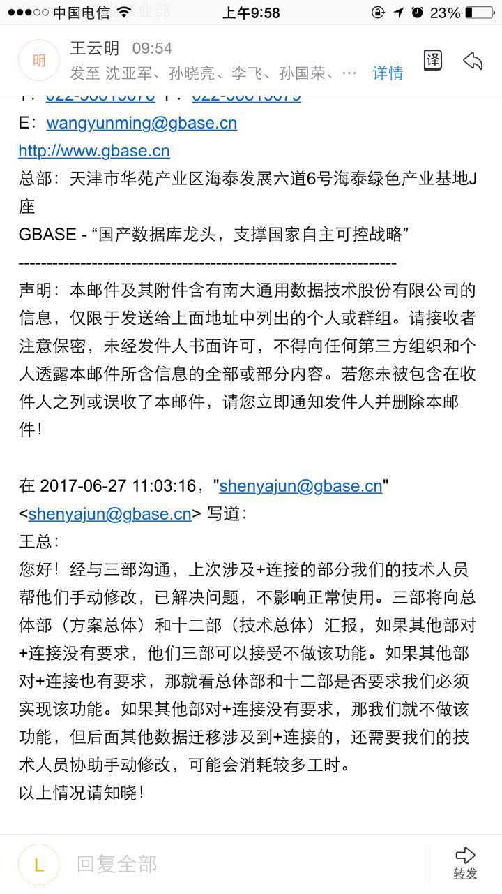
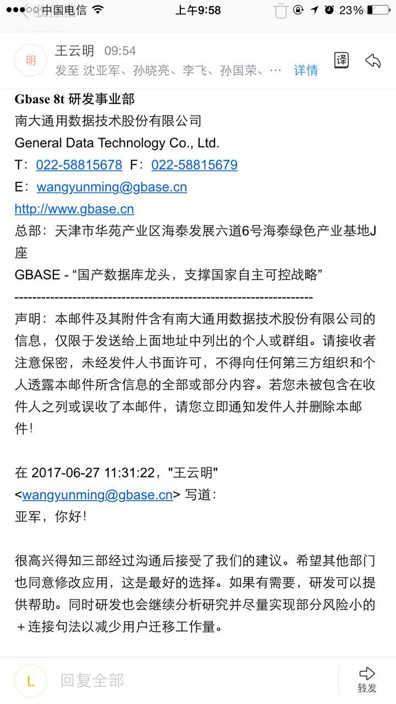
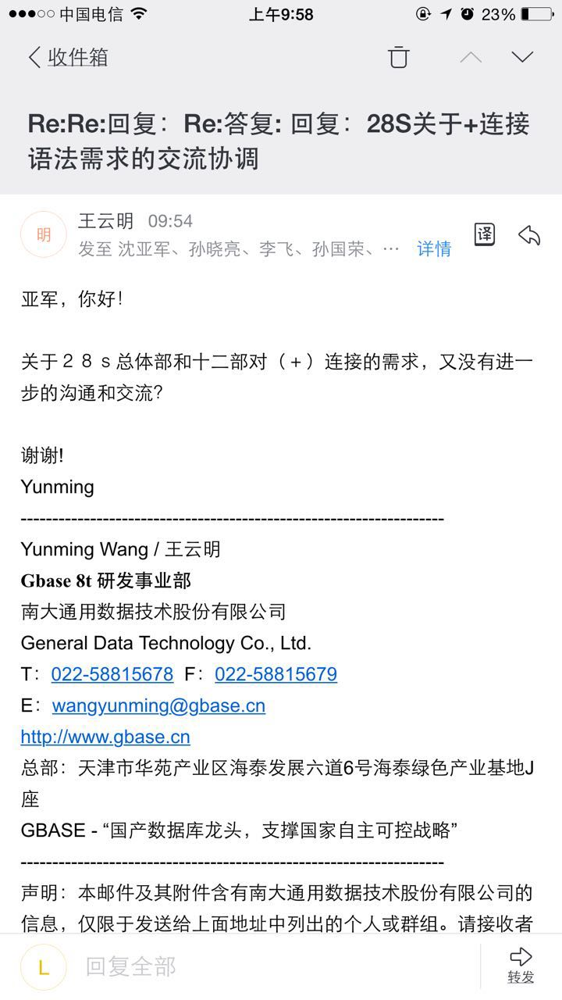
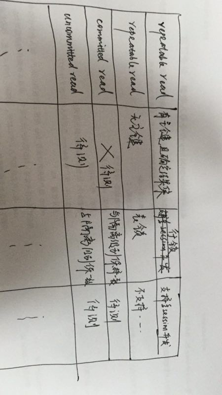
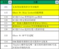
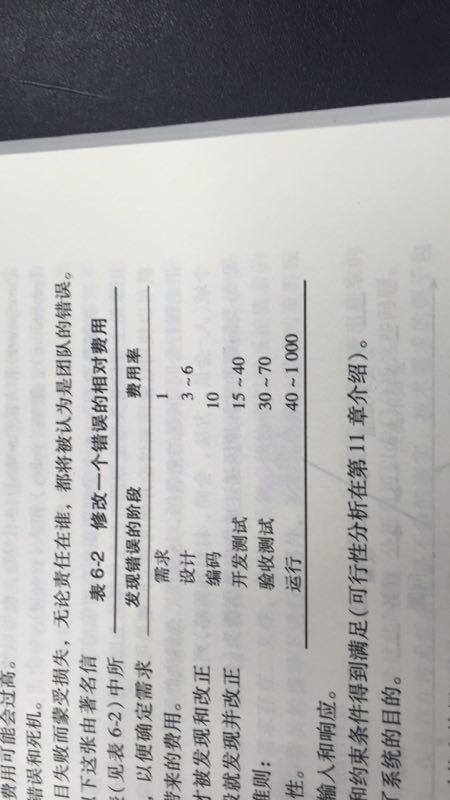
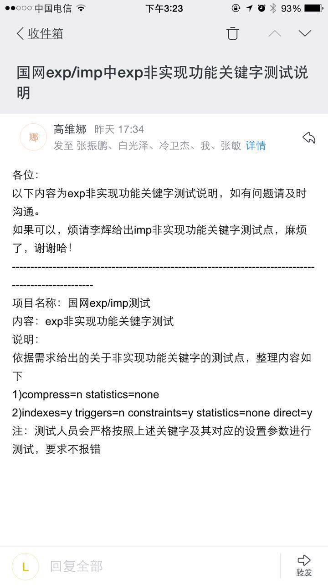

2017-07¶
2017-07-03¶
| 2017-07-03 09:23:42 | 你 | 感觉他做的事好杂啊 |
| 2017-07-03 09:23:52 | 你 | 文档的涉及的不多 |
| 2017-07-03 09:24:20 | 我 | 是，我是想看看能不能做需求 |
| 2017-07-03 09:24:24 | 你 | 你看他做的这些事 |
| 2017-07-03 09:24:30 | 你 | 最后做的开发？？？ |
| 2017-07-03 09:24:32 | 你 | 好奇怪 |
| 2017-07-03 09:24:47 | 我 | 文档不招了，名额转给需求 |
| 2017-07-03 09:24:54 | 你 | 写文档有点大材小用饿 |
| 2017-07-03 09:25:21 | 我 | 说实话，我不觉得他能胜任文档 |
| 2017-07-03 09:25:24 | 你 | 我觉得可以 看这个简历 觉得这个人应该沟通还可以 |
| 2017-07-03 09:25:37 | 我 | 好 |
| 2017-07-03 09:25:43 | 你 | 看怎么说了 |
| 2017-07-03 09:25:59 | 你 | 比现在文档组的还菜么 |
| 2017-07-03 09:26:23 | 你 | 1.负责天津市科技创新项目申报工作，带来10政府赞助资金，40万两年无息贷款额度，截至目前，项目顺利完成； 2.负责公司企宣工作，包括公司logo设计，企业手册设计，产品彩页设计等； 3.负责公司资质工作及产品产权版本工作，完成相关著作权3项，科技奖1项； |
| 2017-07-03 09:26:42 | 你 | 这些怎么像是什么部门来着 |
| 2017-07-03 09:26:45 | 你 | 我记不得了 |
| 2017-07-03 09:26:47 | 我 | 这些估计都不是她主导的 |
| 2017-07-03 09:26:50 | 你 | 做的真够杂的 |
| 2017-07-03 09:27:07 | 我 | 其实就是一些打杂的活 |
| 2017-07-03 09:27:28 | 你 | 打杂的活写了5/7 |
| 2017-07-03 09:27:41 | 你 | 只有6、7是测试和开发 |
| 2017-07-03 09:27:44 | 你 | 剩下的都是打杂 |
| 2017-07-03 09:27:55 | 你 | 而且项目经验跟这些一点关系没有 |
| 2017-07-03 09:28:01 | 我 | 是 |
| 2017-07-03 09:28:08 | 你 | 估计是刚刚完成的 所以记得清楚 |
| 2017-07-03 09:28:16 | 你 | 约吧 |
| 2017-07-03 09:28:24 | 我 | 好的 |
| 2017-07-03 10:05:45 | 你 | 就这么点破事，天天说 |
| 2017-07-03 10:06:03 | 我 | 显呗 |
| 2017-07-03 10:18:35 | 你 | 王总说内侧的bug基本不用写在release |
| 2017-07-03 10:18:39 | 你 | Note |
| 2017-07-03 10:19:06 | 我 | 嗯嗯 |
| 2017-07-03 10:40:10 | 我 | 这事该你说话拉啦 |
| 2017-07-03 10:44:23 | 你 | 我说啥啊 |
| 2017-07-03 10:44:33 | 你 | 测试应该10天差不多 |
| 2017-07-03 10:48:38 | 你 | 这是咋回事，没搞明白 |
| 2017-07-03 10:49:38 | 我 | 王总自己脑子糊涂 |
| 2017-07-03 10:50:05 | 你 | 刚才发内侧版的，我没敢说话啊，王总定，就他定呗 |
| 2017-07-03 10:50:59 | 我 | 发内测的前提就是要延期，然后人家出厂测试之前还有问题没有解决，那就有风险 |
| 2017-07-03 10:51:31 | 你 | 哦，我都乱了 |
| 2017-07-03 10:51:49 | 我 | 嗯嗯 |
| 2017-07-03 10:52:00 | 我 | 因为他们说的本来就乱 |
| 2017-07-03 10:58:56 | 你 | 过两天又改变了，不是odbc的问题，哈哈 |
| 2017-07-03 10:59:14 | 我 | 嗯嗯 |
| 2017-07-03 11:28:38 | 我 | 王总这是直接打脸呀 |
| 2017-07-03 11:34:03 | 你 | 王总说的不对 |
| 2017-07-03 11:34:19 | 我 | [动画表情] |
| 2017-07-03 11:34:33 | 我 | 这俩人现在都混乱了 |
| 2017-07-03 16:21:44 | 我 | 今天行销部的会，黄老师代替张道山去的，结果会上和老杨怼上了 |
| 2017-07-03 16:21:52 | 你 | 咋了 |
| 2017-07-03 16:21:55 | 你 | 说说 |
| 2017-07-03 16:22:06 | 你 | 我都忙的忘了问你有没有事呢 |
| 2017-07-03 16:23:58 | 我 | 老杨和我们讨论现在出现的问题，然后就聊到了 redmine 的管理流程上的问题，结果老杨刚说了一半，黄老师就说这个会议的主题是什么，是不是跑题了 |
| 2017-07-03 16:24:19 | 你 | 哦哦 |
| 2017-07-03 16:24:20 | 我 | 结果老杨就不干了，说了半天黄老师 |
| 2017-07-03 16:24:24 | 你 | 啊 |
| 2017-07-03 16:24:30 | 你 | 黄老师没说话吗 |
| 2017-07-03 16:24:46 | 我 | 没有，他本来就是第一次参加这个会，搞不清情况 |
| 2017-07-03 16:24:56 | 你 | 哦 |
| 2017-07-03 16:25:00 | 你 | 那没办法 |
| 2017-07-03 16:25:10 | 你 | 他那一套怎么可能是万金油呢 |
| 2017-07-03 16:25:35 | 我 | 对呀，这个会本来就是为了暴露问题，协调问题的 |
| 2017-07-03 16:26:22 | 你 | 是呗 |
| 2017-07-03 16:58:50 | 我 | 亲，干啥呢 |
| 2017-07-03 17:01:07 | 你 | import的有几个需要测试下 |
| 2017-07-03 17:01:15 | 你 | 我不知道是什么行为 |
| 2017-07-03 17:01:20 | 我 | 哦 |
| 2017-07-03 17:01:22 | 你 | 软需写的有点问题 |
| 2017-07-03 17:01:25 | 我 | 有问题吗 |
2017-07-04¶
| 2017-07-04 09:09:20 | 你 | 季度会都没叫你去，真是醉了 |
| 2017-07-04 09:09:53 | 我 | 嗯 |
| 2017-07-04 09:31:05 | 我 | 看你的裤子挺漂亮 |
| 2017-07-04 09:31:24 | 你 | 我的啥都好看 |
| 2017-07-04 09:31:37 | 我 | 对呀对呀 |
| 2017-07-04 09:37:43 | 我 | 我觉得我自己太坏了。总是在关键时候落井下石 |
| 2017-07-04 09:38:48 | 我 | 哈哈，你比我更坏😂 |
| 2017-07-04 09:42:29 | 你 | 我咋了？ |
| 2017-07-04 09:44:10 | 你 | 我知道了，梁继展的事，哈哈 |
| 2017-07-04 09:44:14 | 我 | “梁继展调研两周” |
| 2017-07-04 09:44:19 | 我 | [动画表情] |
| 2017-07-04 09:44:24 | 你 | 研发季度会都不用你去？ |
| 2017-07-04 09:44:44 | 我 | 没人通知我，我正好不去 |
| 2017-07-04 09:44:46 | 你 | 搞事情哈哈 |
| 2017-07-04 09:44:59 | 你 | 他讲ppt行吗？ |
| 2017-07-04 09:45:07 | 你 | 真怀疑 |
| 2017-07-04 09:45:40 | 我 | 嗯嗯 |
| 2017-07-04 10:00:18 | 我 | 刘畅是和研发 leader 去谈 PBC 了 |
| 2017-07-04 10:00:32 | 你 | 啥意思？ |
| 2017-07-04 10:00:39 | 我 | 说实话，上个季度我的 PBC 是多少我都不知道 |
| 2017-07-04 10:01:02 | 你 | 你好像是C |
| 2017-07-04 10:01:05 | 我 | 应该是让 leader 们决定谁得 A 吧 |
| 2017-07-04 10:01:20 | 你 | 咱们PBC的钱为啥不发啊 |
| 2017-07-04 10:02:28 | 我 | 财务说是下半年了，可能是8月份 |
| 2017-07-04 10:02:35 | 你 | 哦 |
| 2017-07-04 10:02:43 | 你 | 决定所有人的A吗 |
| 2017-07-04 10:03:00 | 我 | 不知道，刘畅也没和我说 |
| 2017-07-04 10:13:45 | 我 | 亲，你想轻量化 exp 的需求和研发过程我赞成，但是现在时机不对，或者说最好的时机已经过去了。我现在考虑更多的是如何保护你，所以我不太赞成再对现在的计划和流程做什么更改，因为现在的计划和流程是大家一起做的，出了事大家也都有责任。如果贸然改变，出了事情就是改变的人承担责任了。 |
| 2017-07-04 10:14:33 | 你 | 好 |
| 2017-07-04 10:14:44 | 你 | 行 |
| 2017-07-04 10:14:49 | 你 | 我理解 |
| 2017-07-04 10:15:00 | 你 | 我自己先想想明白 |
| 2017-07-04 10:15:12 | 我 | 嗯嗯 |
| 2017-07-04 10:15:20 | 你 | 你哼哼啥 |
| 2017-07-04 10:15:22 | 你 | 真是的 |
| 2017-07-04 10:15:35 | 我 | 我哼哼刘畅呢 |
| 2017-07-04 10:15:49 | 你 | 说实话 没想到这个需求会这么大风险 |
| 2017-07-04 10:15:53 | 我 | 拿个鸡毛当令箭 |
| 2017-07-04 10:16:01 | 你 | 写用需的时候 觉得已经挺聚焦了 |
| 2017-07-04 10:16:06 | 你 | 怎么突然说她呢 |
| 2017-07-04 10:16:09 | 你 | 怎么了 |
| 2017-07-04 10:16:10 | 我 | 正常，怎么都会有第一次的 |
| 2017-07-04 10:17:03 | 我 | 今天早上她过来问我关于 PBC 的事情，说王总安排的，让三个研发组一起讨论一下 A 的问题 |
| 2017-07-04 10:17:15 | 我 | 问我她该怎么做 |
| 2017-07-04 10:17:28 | 我 | 我说你就和三个 leader 说一下就可以 |
| 2017-07-04 10:17:41 | 你 | 然后呢 |
| 2017-07-04 10:17:49 | 你 | 王总就爱这样 |
| 2017-07-04 10:17:50 | 我 | 结果你看看人家，把三个人拉进去密谈了这么久 |
| 2017-07-04 10:17:59 | 你 | 自己不会叫么 |
| 2017-07-04 10:18:31 | 你 | 王总的事 他还不使劲表现 自己该做的事可做不好呢 |
| 2017-07-04 10:18:35 | 我 | 王总就是耍这些小心眼，有时候感觉他和刘畅挺像的 |
| 2017-07-04 10:19:08 | 你 | 昨天不还跟你和高杰说了一下么 怎么今天又改为三个leader了 |
| 2017-07-04 10:19:17 | 你 | 再说 他们三能决定啥 |
| 2017-07-04 10:19:18 | 我 | 你知道吗，虽然我知道刘畅可能没有什么想法，不过她的行为总是会让我误解 |
| 2017-07-04 10:19:24 | 你 | 研发就都说了算么 |
| 2017-07-04 10:19:43 | 你 | 误解什么？ |
| 2017-07-04 10:19:45 | 我 | 具体的我不知道王总怎么分配的指标 |
| 2017-07-04 10:20:56 | 我 | 比如这件事情，她来问我的意见，我告诉他了。然后人家就把这个当成一个机会 |
| 2017-07-04 10:21:17 | 我 | 要不是我知道她傻，我还以为她有心眼，特意过来套我的话呢 |
| 2017-07-04 10:21:28 | 你 | 刘畅肯定是想傍王总这颗大树 |
| 2017-07-04 10:21:38 | 我 | 是呀 |
| 2017-07-04 10:21:51 | 我 | 所以我才说他的做法很容易让人误解 |
| 2017-07-04 10:21:52 | 你 | 他发现傍不上 |
| 2017-07-04 10:22:14 | 你 | 对于你 我觉得他肯定是退而求其次了 |
| 2017-07-04 10:22:42 | 我 | 我要是猜忌他，那么他会不会为了傍上王总而出卖我 |
| 2017-07-04 10:22:44 | 你 | 傍不上王总 来傍你 |
| 2017-07-04 10:22:55 | 你 | 有可能呗 这种小人 |
| 2017-07-04 10:23:00 | 你 | 他之所以跟你近 |
| 2017-07-04 10:23:01 | 我 | 对呀 |
| 2017-07-04 10:23:06 | 你 | 是因为你帮助过他 |
| 2017-07-04 10:23:18 | 你 | 要是你一旦威胁他 他很可能放弃你 |
| 2017-07-04 10:23:29 | 你 | 好在你也没什么在他手里的啊 |
| 2017-07-04 10:23:44 | 你 | 高杰就是看不上他这点 |
| 2017-07-04 10:23:53 | 你 | 现在纪要都不抄给他了 |
| 2017-07-04 10:24:08 | 我 | 哈哈 |
| 2017-07-04 10:24:22 | 你 | 你看高杰对她和对我完全两个态度 |
| 2017-07-04 10:24:28 | 我 | 是的 |
| 2017-07-04 10:24:32 | 你 | 高杰特别看不上她 |
| 2017-07-04 10:24:51 | 你 | 一是她从事的一点点行政工作 跟高杰有竞争 |
| 2017-07-04 10:24:58 | 你 | 二是这姑娘是真傻 |
| 2017-07-04 10:25:02 | 我 | 是 |
| 2017-07-04 10:25:11 | 你 | 还非得表现的很聪明 |
| 2017-07-04 10:25:41 | 我 | 😁 |
| 2017-07-04 10:25:45 | 你 | 要是我 这种事 我连干都不干 |
| 2017-07-04 10:25:54 | 你 | 他自己不会叫么 |
| 2017-07-04 10:26:08 | 你 | 就在隔壁屋 还至于的让一楼的小姑娘过来叫 |
| 2017-07-04 10:26:15 | 我 | 是 |
| 2017-07-04 10:26:24 | 你 | 你看王总傻的 |
| 2017-07-04 10:26:28 | 你 | 总是冒傻气 |
| 2017-07-04 10:26:43 | 你 | 他说他老婆都说他木讷 |
| 2017-07-04 10:26:49 | 我 | 哈哈 |
| 2017-07-04 10:49:10 | 你 | 你干啥去了 |
| 2017-07-04 10:50:47 | 我 | 回来了 |
| 2017-07-04 10:57:17 | 我 | 亲，你还有事情吗 |
| 2017-07-04 10:57:34 | 你 | 我可以先歇会吗领导 |
| 2017-07-04 10:57:37 | 你 | 我也很累 |
| 2017-07-04 10:57:47 | 我 | 当然可以啦 |
| 2017-07-04 10:57:52 | 我 | 我就是怕你累着 |
| 2017-07-04 10:57:58 | 你 | 那就歇会 |
| 2017-07-04 10:58:05 | 你 | 今天杨总我们打球去 |
| 2017-07-04 10:58:09 | 我 | 好的 |
| 2017-07-04 10:58:26 | 你 | 到时候我稍停稍停季度会的情况 |
| 2017-07-04 10:58:41 | 我 | 嗯 |
| 2017-07-04 13:45:21 | 我 | 这次你是 A，你就按照这个评分吧 |
| 2017-07-04 13:45:29 | 你 | 别了 |
| 2017-07-04 13:45:34 | 你 | 给我B 就行 |
| 2017-07-04 13:45:40 | 你 | 不用给A |
| 2017-07-04 13:45:44 | 你 | 我怕你为难 |
| 2017-07-04 13:45:49 | 我 | 我有一个 A，这次先给你 |
| 2017-07-04 13:46:13 | 你 | 不给王志么？ |
| 2017-07-04 13:46:20 | 你 | 你看吧 我是怕你为难 |
| 2017-07-04 13:47:26 | 你 | 你怎么不回我啊 |
| 2017-07-04 13:47:36 | 我 | 刚才胖子在 |
| 2017-07-04 13:47:41 | 你 | 我当然是希望拿A了 |
| 2017-07-04 13:47:43 | 我 | 就给你了，没事的 |
| 2017-07-04 13:47:49 | 你 | 那好吧 |
| 2017-07-04 13:47:52 | 你 | 多谢啦 |
| 2017-07-04 13:48:06 | 我 | 不用，你该得的 |
| 2017-07-04 13:48:12 | 你 | 那就给自己多评点 |
| 2017-07-04 13:48:13 | 你 | 哈哈 |
| 2017-07-04 13:48:30 | 你 | 一共3个A是吧 |
| 2017-07-04 13:48:39 | 我 | 是 |
| 2017-07-04 13:49:45 | 我 | 你的自评总分不要低于95分 |
| 2017-07-04 13:50:02 | 我 | 老贾的自评92.8，我打算给 C |
| 2017-07-04 13:50:03 | 你 | 好 |
| 2017-07-04 13:50:12 | 你 | 恩 |
| 2017-07-04 13:50:19 | 你 | 给吧 |
| 2017-07-04 13:50:26 | 你 | 贾欣泉工资应该不低吧 |
| 2017-07-04 13:50:32 | 我 | 我不知道 |
| 2017-07-04 13:50:39 | 你 | 就干那么点事 还干不好 |
| 2017-07-04 13:51:20 | 我 | 就是 |
| 2017-07-04 13:51:36 | 你 | 不但水平不够 还挑挑拣拣 |
| 2017-07-04 13:51:52 | 我 | 嗯嗯 |
| 2017-07-04 13:52:43 | 你 | 首先态度就不行 |
| 2017-07-04 13:52:59 | 你 | 说实在的 这些人我对他们抱怨太多了 |
| 2017-07-04 13:53:02 | 我 | 嗯嗯 |
| 2017-07-04 13:53:08 | 你 | 说多了会影响你的判断 |
| 2017-07-04 13:53:22 | 我 | 不会的，我怎么会受你的影响呢 |
| 2017-07-04 13:54:03 | 我 | 你的 A 我是早就想好了，要是这次他们不给我，我打算找王总要。 |
| 2017-07-04 14:03:44 | 你 | 我说的是王总 |
| 2017-07-04 14:03:54 | 你 | 我觉得王总和刘畅之间没什么 |
| 2017-07-04 14:03:55 | 我 | 我知道了 |
| 2017-07-04 14:04:03 | 你 | 他只是利用她而已 |
| 2017-07-04 14:04:14 | 我 | 我知道，王总也是一样 |
| 2017-07-04 14:04:51 | 我 | 王总在涉及到待遇的问题上一直很独断 |
| 2017-07-04 14:05:11 | 你 | 是 |
| 2017-07-04 14:05:16 | 你 | 非常独断 |
| 2017-07-04 14:05:31 | 你 | 这才叫本末倒置呢 |
| 2017-07-04 14:05:38 | 你 | 而且这次季度会你也没参加 |
| 2017-07-04 14:05:39 | 我 | 是 |
| 2017-07-04 14:05:44 | 你 | 赵总参加这个会吗 |
| 2017-07-04 14:05:53 | 我 | 不知道，上次参加了 |
| 2017-07-04 14:06:22 | 你 | 我跟杨总打听打听 |
| 2017-07-04 14:06:34 | 你 | 你这一不去 才是大事呢 |
| 2017-07-04 14:06:39 | 你 | 至少老杨知道 |
| 2017-07-04 14:06:48 | 我 | 我不去也不是什么大事 |
| 2017-07-04 14:07:08 | 你 | 说明王总和你的关系啊 |
| 2017-07-04 14:07:12 | 我 | 是呀 |
| 2017-07-04 14:07:17 | 我 | 我估计老杨知道 |
| 2017-07-04 14:07:19 | 你 | 你去不去肯定对会议没啥影响 |
| 2017-07-04 14:07:23 | 我 | 和你说个事情吧 |
| 2017-07-04 14:07:26 | 你 | 老杨这下肯定知道 |
| 2017-07-04 14:07:37 | 我 | 周一开会的时候，不是说706的事情吗 |
| 2017-07-04 14:07:56 | 你 | 恩 |
| 2017-07-04 14:08:11 | 我 | 老杨一直说王总是8t 的头，706的事情他也一直问王总，后面这事该怎么办 |
| 2017-07-04 14:08:25 | 你 | 然后呢 |
| 2017-07-04 14:08:28 | 我 | 一开始王总没有让我说话，706的事情一直他说 |
| 2017-07-04 14:08:34 | 你 | 嗯嗯 |
| 2017-07-04 14:09:15 | 我 | 后来老杨让他代表研发表个态，结果王总说这事他管不了，说 mpp 一直是武总直接领导 |
| 2017-07-04 14:09:40 | 我 | 你知道当时说完，老杨的表情可有意思了 |
| 2017-07-04 14:09:51 | 你 | 嗯嗯 |
| 2017-07-04 14:09:55 | 你 | 我能想象 |
| 2017-07-04 14:10:05 | 我 | 我就赶紧把话岔开了 |
| 2017-07-04 14:10:19 | 我 | 真想不到王总会这么说 |
| 2017-07-04 14:10:43 | 我 | 所以我感觉王总肯定是对我有意见，所以在会上才会这么说 |
| 2017-07-04 14:11:08 | 你 | 肯定有 |
| 2017-07-04 14:11:14 | 你 | 这件事他绝对不坦荡 |
| 2017-07-04 14:11:28 | 你 | 而且我跟你说 别看他对王胜利不满意 |
| 2017-07-04 14:11:35 | 你 | 他对张杰更防范 |
| 2017-07-04 14:11:38 | 你 | 我觉得是 |
| 2017-07-04 14:11:44 | 我 | 嗯嗯，说说 |
| 2017-07-04 14:12:00 | 你 | 王胜利对他没有威胁 就像你说的 他喜欢这样的人 |
| 2017-07-04 14:12:07 | 你 | 说白了就是没能力的人 |
| 2017-07-04 14:12:13 | 我 | 嗯嗯 |
| 2017-07-04 14:12:15 | 你 | 刘畅 王胜利之流 |
| 2017-07-04 14:12:26 | 你 | 张杰他把握不住 所以他也不怎么用他 |
| 2017-07-04 14:12:35 | 我 | 是，这样正好显得王总很厉害 |
| 2017-07-04 14:12:55 | 你 | 我跟高杰都说过 让他用张杰 |
| 2017-07-04 14:13:00 | 你 | 你看他都不动 |
| 2017-07-04 14:13:12 | 你 | 还是让王胜利扛着 |
| 2017-07-04 14:13:15 | 我 | 所以王总现在的决定也是只限于8t 相关的，其他的他都尽量拒绝 |
| 2017-07-04 14:13:20 | 我 | 嗯嗯 |
| 2017-07-04 14:13:28 | 我 | 我觉得你说的很有道理 |
| 2017-07-04 14:13:51 | 你 | 我怀疑 下边这些人 只有王胜利他觉得好用 |
| 2017-07-04 14:13:57 | 我 | 应该是 |
| 2017-07-04 14:13:58 | 你 | 说说你啊 |
| 2017-07-04 14:14:08 | 你 | 他更看不透你 |
| 2017-07-04 14:14:13 | 我 | 哈哈 |
| 2017-07-04 14:14:21 | 你 | 所以他把你供起来le |
| 2017-07-04 14:14:28 | 你 | 你说的意见他都很少反对 |
| 2017-07-04 14:14:39 | 你 | 一是他怕跟你正面较量 |
| 2017-07-04 14:14:54 | 你 | 我怀疑他是不怎么喜欢这种场合 |
| 2017-07-04 14:15:07 | 你 | 而且他每次都说不过你 |
| 2017-07-04 14:15:15 | 我 | 是 |
| 2017-07-04 14:15:23 | 你 | 真较量起来会显得他没水平 |
2017-07-05¶
| 2017-07-05 09:13:16 | 你 | 怎么不说话？ |
| 2017-07-05 09:13:45 | 我 | 没心情 |
| 2017-07-05 09:14:07 | 我 | 让他们去争吧，王总还不知道会怎么决定呢 |
| 2017-07-05 09:14:16 | 我 | 现在讨论都没有意义 |
| 2017-07-05 09:14:17 | 你 | 那倒是 |
| 2017-07-05 09:14:20 | 你 | 是 |
| 2017-07-05 09:19:09 | 你 | 你待会说国网的事的话，把王总绕过去 |
| 2017-07-05 09:19:23 | 你 | 就说这些信息不同步就行 |
| 2017-07-05 09:19:48 | 你 | 本来发版的事他都不该说 |
| 2017-07-05 09:20:06 | 我 | 没事，我知道该怎么说 |
| 2017-07-05 09:32:50 | 你 | 王总听不懂胜利说话吗？ |
| 2017-07-05 09:32:54 | 你 | 绕来绕去 |
| 2017-07-05 09:33:00 | 你 | 再来一轮 |
| 2017-07-05 09:33:15 | 我 | 王总从来都听不懂别人说话 |
| 2017-07-05 09:40:16 | 我 | 待会我说国网的事情，你别插嘴 |
| 2017-07-05 10:06:46 | 我 | 你看，他们现在都说你好了吧 |
| 2017-07-05 10:06:51 | 你 | 是 |
| 2017-07-05 10:06:56 | 你 | 都在说我 |
| 2017-07-05 10:14:55 | 你 | 高杰胆子真大啊 |
| 2017-07-05 10:15:18 | 我 | 是因为王总说的 |
| 2017-07-05 10:15:36 | 你 | 我觉得她不知道这件事的轻重 |
| 2017-07-05 10:15:37 | 我 | 她现在还想把你拉进坑里 |
| 2017-07-05 10:15:47 | 我 | 你一定要坚持住 |
| 2017-07-05 10:15:54 | 你 | 我肯定坚持住 |
| 2017-07-05 10:15:59 | 我 | 我还不容易把你洗出来了 |
| 2017-07-05 10:16:00 | 你 | 我才不管呢 |
| 2017-07-05 10:16:10 | 我 | 嗯嗯 |
| 2017-07-05 10:16:15 | 你 | 以后国网的，我都不管 |
| 2017-07-05 10:16:22 | 我 | 对 |
| 2017-07-05 10:16:27 | 你 | 让我管我就让他们找你去 |
| 2017-07-05 10:17:06 | 我 | 对 |
| 2017-07-05 10:28:21 | 你 | 以后所有国网需求我都不管了啊 |
| 2017-07-05 10:28:36 | 你 | 到时候你给L2说下 直接指给高杰 |
| 2017-07-05 10:28:39 | 你 | 别过L3 |
| 2017-07-05 10:29:13 | 我 | 不是这么玩的，亲 |
| 2017-07-05 10:29:22 | 你 | 啊？ |
| 2017-07-05 10:29:34 | 你 | 我不知道项目是咋回事 |
| 2017-07-05 10:29:48 | 你 | 那你做吧 |
| 2017-07-05 10:29:55 | 你 | 我等着安排 |
| 2017-07-05 10:30:02 | 你 | 或者你给我说说这里边的道道 |
| 2017-07-05 10:30:32 | 我 | 对外还是现在这样，L2他们爱怎么办 就怎么办，等他们指给我们了，我们自己内部再分派 |
| 2017-07-05 10:30:48 | 我 | 所以以后需求指向你了，你就转给高杰就行了 |
| 2017-07-05 10:30:49 | 你 | 那到时候找谁 |
| 2017-07-05 10:30:57 | 你 | 哦 |
| 2017-07-05 10:31:02 | 你 | 那我就转给高杰 |
| 2017-07-05 10:31:04 | 你 | 说得对 |
| 2017-07-05 10:31:25 | 你 | 我们就直接转就行 |
| 2017-07-05 10:32:01 | 你 | 国网最终就做成DSD了 |
| 2017-07-05 10:32:02 | 你 | 哈哈 |
| 2017-07-05 10:32:07 | 我 | 对，这些都是咱们内部的事情，是不应该和 L2说的 |
| 2017-07-05 10:32:11 | 你 | 是 |
| 2017-07-05 10:32:12 | 你 | 对的 |
| 2017-07-05 10:32:16 | 你 | 我太着急了 |
| 2017-07-05 10:32:20 | 我 | 对呀，我就是想给他做成 DSD |
| 2017-07-05 10:32:26 | 你 | 好玩 |
| 2017-07-05 10:32:36 | 你 | 正好我见识见识 DSD是怎样炼成的 |
| 2017-07-05 10:32:44 | 你 | 看高杰怎么把自己当回事 |
| 2017-07-05 10:32:45 | 我 | 嗯嗯 |
| 2017-07-05 10:32:49 | 你 | 太好玩了 |
| 2017-07-05 10:32:59 | 我 | 我告诉你，其实高杰心里明白着呢 |
| 2017-07-05 10:33:07 | 你 | 恩 |
| 2017-07-05 10:33:15 | 你 | 他心里美着呢 |
| 2017-07-05 10:33:19 | 我 | 她之所以几次强调质量，强调需求就是想拉一个垫背的 |
| 2017-07-05 10:33:31 | 你 | 好吧 |
| 2017-07-05 10:33:43 | 你 | 我倒是没想到这事会到高杰身上 |
| 2017-07-05 10:33:52 | 你 | 以为王胜利入坑呢 |
| 2017-07-05 10:34:05 | 你 | 张杰真是一语中的 |
| 2017-07-05 10:34:15 | 我 | ？ |
| 2017-07-05 10:34:28 | 你 | 这事都是张杰一句话转高杰身上的 |
| 2017-07-05 10:34:45 | 你 | 如果张杰不说 没准就是王胜利的事了 |
| 2017-07-05 10:34:49 | 我 | 嗯嗯 |
| 2017-07-05 10:35:04 | 你 | 如果高杰不参合 崩的更快 |
| 2017-07-05 10:35:08 | 我 | 所以说张杰其实还是帮着王胜利的 |
| 2017-07-05 10:35:12 | 你 | 当然了 |
| 2017-07-05 10:35:21 | 你 | 张杰和王胜利是战友交情 |
| 2017-07-05 10:35:27 | 你 | 怎么可能不帮他 |
| 2017-07-05 10:35:36 | 我 | 我的要求不高，就是国网的事情我不管、你不管 |
| 2017-07-05 10:35:46 | 我 | 至于是不是崩了我不在意 |
| 2017-07-05 10:35:56 | 你 | 关键是不管到时候功劳也没我们的 |
| 2017-07-05 10:36:02 | 你 | 王总最近越来越过分了 |
| 2017-07-05 10:36:06 | 我 | 嗯嗯 |
| 2017-07-05 10:36:17 | 你 | 态度还是要有的 |
| 2017-07-05 10:36:43 | 你 | 我觉得你应该从大局考虑考虑了 |
| 2017-07-05 10:36:51 | 你 | 不单单是我和你的事 |
| 2017-07-05 10:36:52 | 我 | 嗯 |
| 2017-07-05 10:36:56 | 你 | 还有我们的将来啊 |
| 2017-07-05 10:37:04 | 你 | 你看王总现在多独断 |
| 2017-07-05 10:37:09 | 你 | 根本不考虑你的感受 |
| 2017-07-05 10:37:20 | 我 | 嗯嗯 |
| 2017-07-05 10:37:26 | 你 | 如果将来28s也按照项目做 我们都没得玩了 |
| 2017-07-05 10:37:48 | 我 | 不会的，我会紧紧抓住我自己的东西的 |
| 2017-07-05 10:37:56 | 你 | 好吧 |
| 2017-07-05 10:38:03 | 你 | 我只是提醒你一下 |
| 2017-07-05 10:38:05 | 你 | 没事的 |
| 2017-07-05 10:38:08 | 你 | 我相信你 |
| 2017-07-05 10:43:09 | 我 | 你看看高杰 |
| 2017-07-05 10:51:55 | 我 | 原来王总说的是不允许他们改代码 |
| 2017-07-05 11:26:06 | 我 | 亲，交给你一个任务，你看看测试组哪个你能带着做需求 |
| 2017-07-05 11:26:36 | 我 | 刚才和王总商量好了，从测试调一个人到需求 |
| 2017-07-05 11:27:03 | 你 | 我跟张振鹏问问行吗？ |
| 2017-07-05 11:27:09 | 你 | 还是秘密进行 |
| 2017-07-05 11:27:11 | 我 | 不行 |
| 2017-07-05 11:27:15 | 我 | 必须秘密的 |
| 2017-07-05 11:27:21 | 你 | 好 |
| 2017-07-05 11:27:26 | 你 | 你跟王总说的么？ |
| 2017-07-05 11:27:31 | 你 | 还是王总给你说的 |
| 2017-07-05 11:27:34 | 我 | 因为这个人是你负责带，所以你要想好了 |
| 2017-07-05 11:27:47 | 你 | 恩 |
| 2017-07-05 11:27:49 | 你 | 好 |
| 2017-07-05 11:27:55 | 我 | 是这么回事，有个原来辞职的测试想回来 |
| 2017-07-05 11:28:01 | 你 | 谁？ |
| 2017-07-05 11:28:05 | 我 | 不认识 |
| 2017-07-05 11:28:06 | 你 | 不会是张春雨吧 |
| 2017-07-05 11:28:15 | 你 | 肯定不是 |
| 2017-07-05 11:28:17 | 你 | 好 |
| 2017-07-05 11:28:27 | 你 | 那个张亚楠行不？ |
| 2017-07-05 11:28:30 | 你 | 新人 |
| 2017-07-05 11:28:31 | 我 | 我就和王总说想找一个测试来做需求 |
| 2017-07-05 11:28:36 | 你 | 我先观察观察吧 |
| 2017-07-05 11:28:39 | 我 | 你觉得行就行 |
| 2017-07-05 11:28:49 | 你 | 什么时候定下来 |
| 2017-07-05 11:28:50 | 我 | 因为他是你全权负责 |
| 2017-07-05 11:29:04 | 你 | 你怎么一直说我全权负责这件事啊？ |
| 2017-07-05 11:29:11 | 我 | 应该很快，等那个人入职了就可以了 |
| 2017-07-05 11:29:15 | 我 | 我要锻炼你呀 |
| 2017-07-05 11:29:17 | 你 | 好 |
| 2017-07-05 11:29:19 | 你 | 好 |
| 2017-07-05 11:30:37 | 你 | 你也不帮我参谋参谋 |
| 2017-07-05 11:30:44 | 你 | 我对他们都不了解 |
| 2017-07-05 11:30:50 | 我 | 你先想想 |
| 2017-07-05 11:30:51 | 你 | 我想要个新人 |
| 2017-07-05 11:31:00 | 我 | 嗯嗯 |
| 2017-07-05 11:31:06 | 你 | 我看那个张亚楠可以 |
| 2017-07-05 11:31:18 | 你 | 上次buglist评审 觉得那小孩不错 |
| 2017-07-05 11:31:24 | 你 | 不过接触的太少了 |
| 2017-07-05 11:31:50 | 我 | 嗯，这事不急，你先想，想好了告诉我，我去找王总要人 |
| 2017-07-05 11:31:57 | 你 | 好 |
| 2017-07-05 13:19:04 | 我 | 亲，干啥呢 |
| 2017-07-05 13:20:04 | 你 | 跟李杰聊会天 |
| 2017-07-05 13:20:29 | 我 | 嗯嗯 |
| 2017-07-05 13:34:04 | 我 | 呵呵，高杰还是没有加上你 |
| 2017-07-05 13:34:12 | 你 | 没事 |
| 2017-07-05 13:34:40 | 你 | 不加不加吧 |
| 2017-07-05 13:34:53 | 你 | 以后这些事我都得争取下 |
| 2017-07-05 13:35:01 | 你 | 反正多我一个也不算多 |
| 2017-07-05 13:35:02 | 我 | 嗯嗯 |
| 2017-07-05 13:35:05 | 我 | 是 |
| 2017-07-05 13:35:19 | 你 | 为啥研发测试都上还不带我 |
| 2017-07-05 13:35:43 | 我 | 你知道吗，这就是惯的他们 |
| 2017-07-05 13:36:36 | 我 | 你看看今天早上晨会，一说要干活了，都说没有需求不行，这报奖了，谁都想不起你 |
| 2017-07-05 13:36:43 | 你 | 就这样吧 王总都惯着 |
| 2017-07-05 13:36:46 | 你 | 是啊 |
| 2017-07-05 13:36:52 | 你 | 今早上都要我了 |
| 2017-07-05 13:37:08 | 你 | 不是王胜利那会说我写的需求他们用不上的时候了 |
| 2017-07-05 13:37:20 | 我 | 就是 |
| 2017-07-05 13:37:33 | 我 | 所以这帮人特别虚伪 |
| 2017-07-05 13:38:19 | 我 | 和研发一组比起来简直就是天壤之别 |
| 2017-07-05 13:38:32 | 你 | 恩 |
| 2017-07-05 13:38:54 | 你 | 旭明他们组干的事 不能报奖么 |
| 2017-07-05 13:39:09 | 我 | 他们报了一个团队奖，没给 |
| 2017-07-05 13:40:25 | 你 | 昨天我跟老杨说 |
| 2017-07-05 13:40:45 | 你 | 老杨说之所以给这么多奖一是王总干了几件事 |
| 2017-07-05 13:40:52 | 你 | 说拒绝了国网的几个需求 |
| 2017-07-05 13:41:03 | 你 | 而是浦发银行支持的好 |
| 2017-07-05 13:41:10 | 我 | 嗯嗯 |
| 2017-07-05 13:41:23 | 你 | 还有就是8t团队刚成立 鼓励鼓励 |
| 2017-07-05 13:41:38 | 我 | 嗯 |
| 2017-07-05 13:41:49 | 你 | 后来我说有八卦吗？ |
| 2017-07-05 13:42:02 | 你 | 他说没啥 他从来不关心八卦 |
| 2017-07-05 13:42:09 | 你 | 我看他也没提你 我就没说 |
| 2017-07-05 13:42:13 | 我 | 嗯嗯 |
| 2017-07-05 13:42:28 | 你 | 我每次都跟他说你 也不好 |
| 2017-07-05 13:42:33 | 我 | 现在他不知道咱俩的关系，所以不会在你面前提我的 |
| 2017-07-05 13:42:36 | 你 | 而且他自己烂摊子一堆 |
| 2017-07-05 13:42:42 | 我 | 是 |
| 2017-07-05 13:43:16 | 你 | 他还说给不给奖 关键是看是否卖出去 |
| 2017-07-05 13:43:24 | 你 | 能不能产生效益 |
| 2017-07-05 13:43:39 | 我 | 其实也不是啦 |
| 2017-07-05 13:43:48 | 你 | 这是他说的 |
| 2017-07-05 13:44:03 | 我 | 8a 那边好多预研性的都给奖 |
| 2017-07-05 13:44:07 | 你 | 然后说rtsync签了3单了 |
| 2017-07-05 13:44:20 | 你 | 吹自己的 |
| 2017-07-05 13:44:24 | 我 | 嗯嗯 |
| 2017-07-05 13:44:46 | 你 | 不过现在评奖可能跟以前有点区别 |
| 2017-07-05 13:44:55 | 你 | 不是公司要挣钱么 |
| 2017-07-05 13:44:58 | 我 | 嗯 |
| 2017-07-05 14:09:48 | 你 | 你别下来了 |
| 2017-07-05 14:10:01 | 我 | 是，现在去太显眼了 |
| 2017-07-05 14:10:02 | 你 | 我参加一下 |
| 2017-07-05 14:22:13 | 你 | 感觉武总今天情绪不高 |
| 2017-07-05 14:22:29 | 我 | 哦 |
| 2017-07-05 14:38:38 | 我 | 怎么就你一个人发呀 |
| 2017-07-05 14:40:16 | 你 | 什么意思 |
| 2017-07-05 14:40:30 | 我 | 没有其他人发图 |
| 2017-07-05 14:40:46 | 你 | 不知道 |
| 2017-07-05 14:40:50 | 我 | 太奇怪了 |
| 2017-07-05 14:40:54 | 你 | 我发了，高杰就不发了 |
| 2017-07-05 14:41:04 | 我 | 哦 |
| 2017-07-05 14:41:14 | 你 | 我正对着， |
| 2017-07-05 14:41:17 | 你 | 就发了 |
| 2017-07-05 14:41:35 | 我 | 嗯嗯，位置确实不错，和昨天王总的位置一样[呲牙] |
| 2017-07-05 14:41:53 | 你 | 是，我下了电梯，正对着 |
| 2017-07-05 15:06:28 | 你 | 这次获奖看你不怎么积极啊 |
| 2017-07-05 15:06:48 | 我 | 没有，最近一直有心事 |
| 2017-07-05 15:07:08 | 你 | 哦 面上还是得过得去才好啊 |
| 2017-07-05 15:07:23 | 你 | 你有啥心事啊 |
| 2017-07-05 15:07:34 | 我 | 唉 |
| 2017-07-05 15:08:45 | 我 | 问你个事情吧 |
| 2017-07-05 15:08:49 | 你 | 恩 |
| 2017-07-05 15:08:56 | 我 | 你是不是觉得我最近老是没事找事 |
| 2017-07-05 15:09:11 | 你 | 是 |
| 2017-07-05 15:09:17 | 我 | 嗯 |
| 2017-07-05 15:09:34 | 你 | 为什么啊 |
| 2017-07-05 15:09:52 | 你 | 也不是没事找事吧 我只是觉得有些事有点过了 |
| 2017-07-05 15:10:00 | 你 | 不知道是我没达到你的要求还是别的 |
| 2017-07-05 15:10:06 | 我 | 比如说 |
| 2017-07-05 15:10:19 | 你 | 你为什么说：你是不是觉得我最近老是没事找事 |
| 2017-07-05 15:10:29 | 你 | 你为啥没事找事啊 |
| 2017-07-05 15:10:51 | 我 | 没啥，其实是我猜的 |
| 2017-07-05 15:11:03 | 我 | 从你最近的反应中猜的 |
| 2017-07-05 15:11:06 | 你 | 我现在越来越想不明白你想什么了 |
| 2017-07-05 15:11:16 | 你 | 好几件事 |
| 2017-07-05 15:11:32 | 我 | 哈哈，所以我才觉得 |
| 2017-07-05 15:12:14 | 我 | 你先说说都是什么事情吧 |
| 2017-07-05 15:12:21 | 你 | 太多了 |
| 2017-07-05 15:12:44 | 你 | 现在说么 |
| 2017-07-05 15:12:49 | 我 | 嗯，说吧 |
| 2017-07-05 15:13:05 | 你 | 我一直在想是不是我现在跟你的状态就是你以前跟杨丽颖的状态 |
| 2017-07-05 15:13:17 | 你 | 我觉得我做什么都不对 |
| 2017-07-05 15:13:20 | 你 | 你都不满意 |
| 2017-07-05 15:13:27 | 你 | 当然你有你的理由 |
| 2017-07-05 15:13:41 | 你 | 可是我有时候觉得你的理由不是很说服我 |
| 2017-07-05 15:13:46 | 你 | 所以觉得你没事找事 |
| 2017-07-05 15:14:00 | 你 | 不过我也一直反思自己做的错在哪 |
| 2017-07-05 15:14:16 | 你 | 好给你的行为在我这有解释 |
| 2017-07-05 15:14:17 | 我 | 嗯嗯 |
| 2017-07-05 15:14:46 | 我 | 你这种情况我早就看出来了 |
| 2017-07-05 15:15:07 | 你 | 现在到底是谁有情况啊？ |
| 2017-07-05 15:15:17 | 你 | 我有什么情况？ |
| 2017-07-05 15:15:22 | 我 | 不是你 |
| 2017-07-05 15:15:33 | 我 | 我是说你觉得我总是在没事找事 |
| 2017-07-05 15:15:58 | 你 | 我跟你说 我能想到你之所以这样的理由 我都很害怕 所以我就尽量不想 |
| 2017-07-05 15:16:08 | 我 | 什么理由？ |
| 2017-07-05 15:16:14 | 你 | 我不想猜你到底是怎么了 |
| 2017-07-05 15:16:21 | 你 | 我也不喜欢读心 |
| 2017-07-05 15:16:32 | 我 | 你先说说你想到的理由把 |
| 2017-07-05 15:16:42 | 你 | 不过你现在把我搞懵了 |
| 2017-07-05 15:16:44 | 我 | 其实我不觉得你能想得到 |
| 2017-07-05 15:17:05 | 你 | 我想到的都是很恐怖的 所以我也不想说 |
| 2017-07-05 15:17:18 | 你 | 至少都是我不能改变的 |
| 2017-07-05 15:17:33 | 我 | 比如说我不喜欢你了，我讨厌你了之类的？ |
| 2017-07-05 15:17:47 | 你 | 不是 |
| 2017-07-05 15:17:50 | 你 | 不是这个方向的 |
| 2017-07-05 15:18:24 | 我 | 哦，那是什么？ |
| 2017-07-05 15:18:39 | 你 | 我不想说 你别问了 |
| 2017-07-05 15:19:07 | 我 | 行，我不问了，我只是奇怪什么会让你恐怖 |
| 2017-07-05 15:19:24 | 你 | 我不想说 你别问了 |
| 2017-07-05 15:19:30 | 你 | 那你说说你为啥没事找事 |
| 2017-07-05 15:19:49 | 我 | 这事说起来长了，你别着急 |
| 2017-07-05 15:20:02 | 你 | 恩 |
| 2017-07-05 15:20:20 | 我 | 之前我不是和你说过，要做一些事情，多做一些战术的 |
| 2017-07-05 15:20:54 | 你 | 恩 |
| 2017-07-05 15:21:04 | 我 | 基本上就是从 exp 的需求开始，我对你的战术一级的要求比原来多了 |
| 2017-07-05 15:21:19 | 我 | 也会亲自去给你做一些示范 |
| 2017-07-05 15:21:29 | 我 | 但是从反应看你有点不适应 |
| 2017-07-05 15:21:44 | 我 | 咱俩的冲突不断上升 |
| 2017-07-05 15:22:25 | 我 | 我最近一直在想这件事，不停的推演，推导出很多种结果 |
| 2017-07-05 15:22:46 | 你 | 那你得战术就是不断的跟我唱反调么？ |
| 2017-07-05 15:23:02 | 你 | 说实话我听了你这个理由 更生气了 |
| 2017-07-05 15:23:18 | 我 | 但是最可能的结果是我不喜欢的，然后就觉得心特别累，很难提起兴趣来 |
| 2017-07-05 15:23:32 | 我 | 唉 |
| 2017-07-05 15:23:38 | 我 | 怎么说呢 |
| 2017-07-05 15:23:48 | 你 | 啥叫『但是最可能的结果是我不喜欢的』 |
| 2017-07-05 15:23:56 | 我 | 从你的角度看，确实是我不停的和你唱反调 |
| 2017-07-05 15:24:24 | 你 | 我对你的战术性干预没什么概念 这个你应该很了解 |
| 2017-07-05 15:24:28 | 我 | 因为你还不能到达我的高度，无法理解我安排这些战术的用意 |
| 2017-07-05 15:24:52 | 你 | 说实话我最近心也特别累 |
| 2017-07-05 15:25:04 | 我 | 甚至就是理解需求本身，你也没有办法理解我的问题 |
| 2017-07-05 15:25:23 | 我 | 都是经过好久以后，你才能明白我当初为什么问 |
| 2017-07-05 15:25:53 | 我 | 你累是因为你其实很不适应我这种改变 |
| 2017-07-05 15:26:05 | 你 | 可是有很多我都觉得都是怎么着都行 但是你非得说我说的不对 |
| 2017-07-05 15:26:15 | 你 | 你说的理由又说服不了我 |
| 2017-07-05 15:26:19 | 你 | 我就很奇怪 |
| 2017-07-05 15:27:16 | 我 | 很简单，很多事情我是希望你能从更高的层次去看，站在更高的层次，很多东西都不一样 |
| 2017-07-05 15:27:21 | 你 | 我都没有勇气找你去谈这些事 |
| 2017-07-05 15:27:39 | 我 | 就像今天中午关于分隔符字符个数 |
| 2017-07-05 15:28:29 | 我 | 我说10个就够，15个太多 |
| 2017-07-05 15:28:51 | 我 | 其实这里面包含的道理是从人性的角度考虑的 |
| 2017-07-05 15:29:06 | 我 | 这个角度没有什么一定是对，一定是错 |
| 2017-07-05 15:29:18 | 你 | 那你让我怎么接受呢 |
| 2017-07-05 15:29:22 | 我 | 简单一点说，就是所谓的人文逻辑 |
| 2017-07-05 15:29:37 | 你 | 可能我还是不了解人性 |
| 2017-07-05 15:29:42 | 我 | 是 |
| 2017-07-05 15:29:44 | 你 | 是我不了解人性 |
| 2017-07-05 15:29:58 | 你 | 说实话我觉得15跟10没区别 |
| 2017-07-05 15:30:11 | 你 | 我写的15 你非得让我改成10 |
| 2017-07-05 15:30:19 | 你 | 你说站在用户的角度考虑 |
| 2017-07-05 15:30:29 | 你 | 我考虑了 我觉得5就够了 |
| 2017-07-05 15:30:35 | 你 | 为什么是10 |
| 2017-07-05 15:30:47 | 你 | 我怎么能一下子就能想的跟你一模一样的数呢 |
| 2017-07-05 15:30:53 | 我 | 哈哈，我没有让你改成10。我是想让你去思考5、10、15这些东西是否合适 |
| 2017-07-05 15:31:05 | 你 | 然后你脑子里如果出来个8 我还得改成8 |
| 2017-07-05 15:31:12 | 你 | 理由 就是你别我了解人性 |
| 2017-07-05 15:31:17 | 我 | 哈哈 |
| 2017-07-05 15:31:21 | 你 | 你看我最近工作多多 |
| 2017-07-05 15:31:28 | 我 | 你完全没有 get 到我说的 |
| 2017-07-05 15:31:32 | 你 | 我晚上睡觉都在想需求的事 |
| 2017-07-05 15:31:42 | 我 | 我的个数就是一个少和多的概念 |
| 2017-07-05 15:31:48 | 我 | 没有具体的数字 |
| 2017-07-05 15:31:54 | 我 | 你随便写多少我都认可 |
| 2017-07-05 15:32:10 | 我 | 我只是想让你去思考少和多有什么本质区别 |
| 2017-07-05 15:32:22 | 你 | 好吧 |
| 2017-07-05 15:32:25 | 你 | 我没明白 |
| 2017-07-05 15:33:08 | 你 | 而且我跟你有别扭 根本没处说 |
| 2017-07-05 15:33:13 | 你 | 也不能跟我对象说 |
| 2017-07-05 15:33:20 | 你 | 只能自己憋着 |
| 2017-07-05 15:33:25 | 我 | 其实类似的情况以前也有，只是当时我不会去进一步要求你去思考 |
| 2017-07-05 15:33:29 | 你 | 每天都有干不完的工作要做 |
| 2017-07-05 15:33:35 | 你 | 你还老是给我找事 |
| 2017-07-05 15:34:03 | 你 | 还有CDC的 |
| 2017-07-05 15:34:10 | 你 | 那事根本不大 |
| 2017-07-05 15:34:17 | 你 | 怎么做就是错了 |
| 2017-07-05 15:34:24 | 你 | 你非得不按照我说的做 |
| 2017-07-05 15:34:33 | 你 | 非得按照你说的做 |
| 2017-07-05 15:34:48 | 你 | excel是不属于产品的一部分 但是我们一期已经给过了 |
| 2017-07-05 15:34:55 | 你 | 二期就非得不给 |
| 2017-07-05 15:35:07 | 你 | 你说的理由我都没什么反驳你的 |
| 2017-07-05 15:35:08 | 我 | 这和给不给没有关系 |
| 2017-07-05 15:35:32 | 我 | 简单一点说，我不想给其他人一个感觉，这个必须我们来维护 |
| 2017-07-05 15:35:51 | 我 | 上次就因为这事我们现在多出来一个所谓的 CDC 文档 |
| 2017-07-05 15:36:13 | 我 | 我不想再多出一个需要我们维护的所谓的 CDC 的数据类型列表 |
| 2017-07-05 15:36:20 | 你 | 我为你个问题 |
| 2017-07-05 15:36:55 | 你 | 如果你现在有更紧急重要的事做 把这件事交给我做 你放心吗？ |
| 2017-07-05 15:37:36 | 我 | 不放心 |
| 2017-07-05 15:38:29 | 你 | 那这个事不过我也行 这件事以后你跟王旭直接对接吧 |
| 2017-07-05 15:38:47 | 我 | 你知道老田回的邮件里面为啥要你负责这件事情吗 |
| 2017-07-05 15:39:00 | 我 | 你能给我分析一下老田的逻辑吗？ |
| 2017-07-05 15:39:06 | 我 | 或者说老田的动机 |
| 2017-07-05 15:39:30 | 我 | 你分析对了，那我向你道歉 |
| 2017-07-05 15:39:38 | 你 | 我不需要 |
| 2017-07-05 15:39:52 | 你 | 我只是觉得 我从这些事上锻炼不出啥来 |
| 2017-07-05 15:40:09 | 你 | 做多少也不会帮助我增强认识人性的能力 |
| 2017-07-05 15:40:32 | 你 | 而且没准我做的本来都是错的 |
| 2017-07-05 15:40:39 | 我 | 亲，你是不是想认识人性 |
| 2017-07-05 15:41:41 | 我 | 怎么不说了？ |
| 2017-07-05 15:42:32 | 我 | 我给你举个例子，今天上午国网的事情，我想你可能没有想到我会要求转成项目经理负责制 |
| 2017-07-05 15:43:11 | 我 | 我在想这件事情的时候就已经推断出来王胜利一定会死咬着需求不放 |
| 2017-07-05 15:43:33 | 我 | 所以我在提这件事情的时候，用了很多理由把这个口子封死了 |
| 2017-07-05 15:43:49 | 我 | 所有这些都是基于对人性的掌握 |
| 2017-07-05 15:46:37 | 我 | 老田那封邮件里面提到 CDC 的事情由你负责，很明显是想把责任推给咱们。他推责任的依据就是你给的 Excel，而且晓亮和老田他们都是以这个 Excel 为基准进行讨论的。我就是想把你给洗出来，不能让他们什么事情都找你。所以我第一件要做的事情就是把他们现在基于的表格否定掉，而且这事之所以我来发邮件，也是不想让你在其中继续当替罪羊 |
| 2017-07-05 15:48:16 | 我 | 这件事情我本来就不想让你管了，你现在还没有办法对付老田 |
| 2017-07-05 15:48:25 | 你 | 首先他要的是Excel中没解析的数据类型对应的文档，这个文档我们单独提供过2次，一个是回复的，后来的是我回复的 |
| 2017-07-05 15:48:50 | 你 | 给的话也只是给interval数据类型的文档 跟上次我给的一样 |
| 2017-07-05 15:49:21 | 你 | excel是给晓亮的 说明我们在以前的基础上 读代码又读出来9种 |
| 2017-07-05 15:49:35 | 你 | 置于他怎么要求工具部解析 那是他的事 |
| 2017-07-05 15:50:11 | 你 | 你回复本身我一点意见没有 |
| 2017-07-05 15:50:30 | 你 | 咱们的分歧是 我说把excel给晓亮 你不让 |
| 2017-07-05 15:50:36 | 你 | 说excel不是产品的一部分 |
| 2017-07-05 15:50:51 | 我 | 你解读一下老田这句话 “后续请李辉继续跟进，并提供解析说明文档。” |
| 2017-07-05 15:55:40 | 你 | 晓亮要interval解析方法 老田说解析需要文档 让我提供文档 |
| 2017-07-05 15:55:46 | 你 | 就这个意思呗 |
| 2017-07-05 15:56:52 | 我 | 他的原话：“附件已更新。附件是还有哪些数据类型CDC可以支持解析的，后续请李辉继续跟进，并提供解析说明文档。” 里面有提到 interval 吗？ |
| 2017-07-05 15:57:18 | 我 | 我和你说，这就是你极其感兴趣的政治 |
| 2017-07-05 15:57:36 | 我 | 你看看这话，你可以狭义的理解，也可以广义的理解 |
| 2017-07-05 15:58:15 | 我 | 这种所谓正确的废话才是政治的常态 |
| 2017-07-05 15:59:46 | 我 | 你自己试试站在广义的角度理解一下这句话的意思 |
| 2017-07-05 18:44:48 | 你 | 我觉得你没有权利对我做这样的事，不可原谅 |
| 2017-07-05 18:45:18 | 我 | 嗯嗯，你说的对 |
| 2017-07-05 18:45:22 | 我 | 对不起 |
| 2017-07-05 18:45:32 | 我 | [动画表情] |
| 2017-07-05 18:50:25 | 你 | |
| 2017-07-05 18:50:33 | 你 | |
| 2017-07-05 18:51:58 | 我 | 是，我做的不对 |
| 2017-07-05 18:52:01 | 我 | 对不起 |
| 2017-07-05 18:52:25 | 我 | 别生气 |
| 2017-07-05 18:52:34 | 我 | 是我的错 |
| 2017-07-05 18:52:42 | 我 | 我不应该这么做 |
| 2017-07-05 18:53:27 | 我 | 我自己太自负了 |
| 2017-07-05 18:53:40 | 我 | 伤害到你了 |
| 2017-07-05 18:54:07 | 我 | 我现在真的非常非常懊悔 |
| 2017-07-05 18:54:59 | 我 | 我不知道怎么做才能让你好受一点 |
| 2017-07-05 18:55:57 | 我 | 亲，真的对不起 |
| 2017-07-05 18:58:56 | 我 | ？ |
2017-07-06¶
| 2017-07-06 09:40:05 | 我 | 亲，你去哪了 |
| 2017-07-06 09:40:26 | 你 | |
| 2017-07-06 09:41:22 | 我 | [疑问] |
| 2017-07-06 09:41:38 | 我 | 一会你回来吗？我11点要去培训 |
| 2017-07-06 09:41:46 | 你 | 嗯，马上 |
| 2017-07-06 13:45:53 | 你 | 我跟晓亮说声国网项目化 |
| 2017-07-06 13:46:03 | 你 | 让他以后找王胜利行吗 |
| 2017-07-06 13:46:25 | 我 | 可以，其实现在问题他也是直接找王胜利 |
| 2017-07-06 13:46:33 | 你 | 就是呗 |
| 2017-07-06 13:46:40 | 你 | 我跟他偷偷的说说 |
| 2017-07-06 13:46:44 | 我 | 嗯嗯 |
| 2017-07-06 13:49:56 | 你 | [链接] 李辉和孙晓亮的聊天记录 |
| 2017-07-06 13:50:39 | 我 | 嗯 |
| 2017-07-06 16:45:42 | 你 | 亲 |
| 2017-07-06 16:45:53 | 我 | 嗯 |
| 2017-07-06 16:45:57 | 你 | 是不是有点尴尬 |
| 2017-07-06 16:46:06 | 你 | 得陪着聊 |
| 2017-07-06 16:46:08 | 我 | 嗯嗯 |
| 2017-07-06 16:53:53 | 你 | 王总超喜欢聊闲篇 |
| 2017-07-06 16:54:17 | 我 | 是，感觉他好像平时特别寂寞的样子 |
| 2017-07-06 16:54:25 | 你 | 是 |
| 2017-07-06 17:26:11 | 你 | 你干嘛去了 |
| 2017-07-06 17:26:34 | 你 | 今天下午谢谢你陪我捋这个东西，占用你那么长时间 |
| 2017-07-06 17:33:51 | 我 | 刚才去厕所了 |
| 2017-07-06 17:34:07 | 我 | 反正我也没事，正好陪你整整这个需求 |
| 2017-07-06 17:34:46 | 你 | |
| 2017-07-06 17:35:13 | 我 | 
|
| 2017-07-06 17:36:20 | 你 | 说说今天发的那篇文章 |
| 2017-07-06 17:36:26 | 你 | 用户故事的 |
| 2017-07-06 17:36:28 | 我 | 嗯嗯 |
| 2017-07-06 17:47:16 | 我 | [链接] 我们为什么需要一个时序数据库？ |
| 2017-07-06 22:02:02 | 你 | 银河麒麟u系不是发了版本了吗？ |
| 2017-07-06 22:02:41 | 你 | 28s的comment不就是银河麒麟u系，但是是哪家的，天津的还是湖南的不知道 |
| 2017-07-06 22:03:04 | 我 | 我也不知道 |
| 2017-07-06 22:03:19 | 你 | 你看王总回邮件，又说了什么立项，我真是服死他了，天天说胡话 |
| 2017-07-06 22:03:25 | 我 | 我从邮件里看怎么感觉像是新的 |
| 2017-07-06 22:03:43 | 我 | 不过这次要的是R系的 |
| 2017-07-06 22:03:48 | 你 | 说什么安排人去一线，你看那段话，也不知道说的是啥 |
| 2017-07-06 22:04:12 | 我 | 我都看了 |
| 2017-07-06 22:04:26 | 我 | 没办法[难过] |
| 2017-07-06 22:04:32 | 你 | R版不是红帽么？ |
| 2017-07-06 22:04:37 | 我 | 是 |
| 2017-07-06 22:04:50 | 我 | 不过要确定对应的版本 |
| 2017-07-06 22:04:55 | 你 | 嗯 |
| 2017-07-06 22:05:54 | 我 | 这种适配类的我觉得不用需求介入了。让高杰顶着一下就行了 |
| 2017-07-06 22:06:11 | 你 | 都行 |
| 2017-07-06 22:06:13 | 你 | 不说了 |
{kind=link}
{kind=link}
2017-07-07¶
| 2017-07-07 09:05:45 | 你 | 这种事也要在这说 |
| 2017-07-07 09:05:50 | 你 | 
|
| 2017-07-07 09:06:20 | 我 | 唉 |
| 2017-07-07 09:06:41 | 我 | 我觉得王总都没搞明白是怎么回事 |
| 2017-07-07 09:06:58 | 你 | 那也得捧场 |
| 2017-07-07 09:07:08 | 我 | 是 |
| 2017-07-07 09:46:21 | 你 | 还有点小紧张 |
| 2017-07-07 10:01:10 | 我 | 讲的不错 |
| 2017-07-07 10:01:11 | 你 | 我是第三个 |
| 2017-07-07 10:09:13 | 你 | 东江真是入门了 |
| 2017-07-07 10:09:31 | 你 | 我太紧张了 |
| 2017-07-07 10:09:34 | 你 | 声音控制不住 |
| 2017-07-07 10:09:56 | 我 | 没有，讲的很好 |
| 2017-07-07 10:12:34 | 你 | 亲，你是不是不高兴啊 |
| 2017-07-07 10:12:56 | 我 | 没有，今天病了，很不舒服 |
| 2017-07-07 10:13:01 | 你 | 感觉你一直苦着脸 |
| 2017-07-07 10:13:05 | 我 | 本来早上都不想来了 |
| 2017-07-07 10:13:07 | 你 | 咋了 |
| 2017-07-07 10:13:12 | 你 | 哦 |
| 2017-07-07 10:13:38 | 我 | 胃炎和肠炎一起犯了[流泪] |
| 2017-07-07 10:13:50 | 你 | 啊？ |
| 2017-07-07 10:14:01 | 你 | 你最近胃好像很不好 |
| 2017-07-07 10:14:18 | 你 | 犯胃病了吧 |
| 2017-07-07 10:14:27 | 我 | 是，打算下周去看看 |
| 2017-07-07 10:14:55 | 你 | 这么严重啊 |
| 2017-07-07 10:15:28 | 我 | 嗯嗯 |
| 2017-07-07 10:21:28 | 你 | 一会王总吓死了 |
| 2017-07-07 10:21:47 | 我 | [动画表情] |
| 2017-07-07 10:36:36 | 你 | 这个光泽实力挺强啊 |
| 2017-07-07 10:37:19 | 我 | 强吗？ |
| 2017-07-07 11:19:50 | 我 | 已经晚了15分钟了 |
| 2017-07-07 12:37:39 | 你 | 旭明要去农行交流mpp，你知道吗？ |
| 2017-07-07 12:37:50 | 你 | 人行 |
| 2017-07-07 12:37:53 | 你 | 说错了 |
| 2017-07-07 12:38:09 | 我 | 你听谁说的 |
| 2017-07-07 12:52:40 | 你 | 刚才在电梯里，旭明说的，说王总给他安排的 |
| 2017-07-07 12:53:04 | 你 | 我觉得很奇怪 |
| 2017-07-07 12:53:15 | 你 | 所以问问你 |
| 2017-07-07 13:24:50 | 我 | 王总没有和我说 |
| 2017-07-07 13:33:35 | 你 | 好点了吗？ |
| 2017-07-07 13:33:58 | 你 | 吃饭了吗 |
| 2017-07-07 13:34:02 | 我 | 没有，特别不舒服 |
| 2017-07-07 13:34:29 | 你 | 怎么突然这么严重 |
| 2017-07-07 13:34:48 | 我 | 可能是着凉了 |
| 2017-07-07 13:35:52 | 你 | 那你应该晚点来，多睡会 |
| 2017-07-07 13:36:20 | 我 | 王总回去的时候吵醒我了，就和王总一起出来了 |
| 2017-07-07 13:36:48 | 我 | 正好刘辉找我，说人行指定要用mpp |
| 2017-07-07 13:51:20 | 我 | [链接] 九天与Yunming的聊天记录 |
| 2017-07-07 14:02:06 | 你 | 这事都不过你啊？ |
| 2017-07-07 14:02:15 | 你 | 我觉得你太低调了 |
| 2017-07-07 14:02:20 | 你 | 大家都看出来了 |
| 2017-07-07 14:02:47 | 我 | 嗯，今天实在是因为不舒服 |
| 2017-07-07 14:02:48 | 你 | 吃饭的时候阿娇还说怎么没让你讲话啊 |
| 2017-07-07 14:04:24 | 我 | 我觉得王总这次是故意的 |
| 2017-07-07 14:05:14 | 你 | 注意休息 |
| 2017-07-07 14:05:21 | 你 | 王总太过分了 |
| 2017-07-07 14:05:27 | 我 | 嗯嗯 |
| 2017-07-07 14:05:49 | 你 | 他最近做的事都很过分 |
| 2017-07-07 14:06:10 | 我 | 嗯 |
| 2017-07-07 14:06:26 | 我 | 我也得考虑不能老这样了 |
| 2017-07-07 14:06:44 | 你 | 对啊，你再低调下去，就没人认识你了 |
| 2017-07-07 14:07:13 | 我 | 嗯嗯 |
| 2017-07-07 14:07:14 | 你 | 关键他啥都管 |
| 2017-07-07 14:07:28 | 你 | 手伸的太长 |
| 2017-07-07 14:07:37 | 我 | 关键是他瞎管 |
| 2017-07-07 14:07:47 | 你 | 对啊，我说的就是这个 |
| 2017-07-07 14:07:57 | 你 | 总是瞎管 |
| 2017-07-07 14:08:12 | 你 | 我觉得王总最近对我也有点意见 |
| 2017-07-07 14:08:23 | 我 | 怎么啦 |
| 2017-07-07 14:08:26 | 你 | 应该是我没捧着他 |
| 2017-07-07 14:08:35 | 你 | 最近懒得搭理他 |
| 2017-07-07 14:08:43 | 你 | 就是看不上他 |
| 2017-07-07 14:08:56 | 我 | 他也太小心眼啦 |
| 2017-07-07 14:08:57 | 你 | 他这种人非得别人捧着才行 |
| 2017-07-07 14:09:05 | 你 | 我懒得搭理他 |
| 2017-07-07 14:09:10 | 我 | 是 |
| 2017-07-07 14:45:37 | 你 | 好点了吗？亲，不行你回去吧 |
| 2017-07-07 14:45:40 | 你 | 我困了 |
| 2017-07-07 14:52:45 | 我 | 睡会吧，我刚才就睡了一会 |
| 2017-07-07 14:53:04 | 你 | 你好点了没 |
| 2017-07-07 14:53:10 | 你 | 喝热水 |
| 2017-07-07 14:53:16 | 我 | 嗯嗯 |
| 2017-07-07 14:54:42 | 你 | 看源码包治百病 |
| 2017-07-07 14:55:21 | 我 | [动画表情] |
| 2017-07-07 15:18:52 | 我 | 我先回家了。已经和王总请假了 |
| 2017-07-07 15:23:01 | 你 | 你在哪呢 |
| 2017-07-07 15:24:06 | 你 | 我回来了 |
| 2017-07-07 15:24:35 | 我 | 有人送我 |
| 2017-07-07 15:25:08 | 你 | 你好好歇着吧，不行去看看 |
| 2017-07-07 15:25:21 | 我 | 嗯嗯 |
| 2017-07-07 15:37:14 | 我 | 你不要和孙国荣说 |
| 2017-07-07 15:37:22 | 我 | 他这个人很难缠 |
| 2017-07-07 15:37:28 | 你 | 哦 |
| 2017-07-07 15:37:46 | 你 | 你也不说 我也不说 |
| 2017-07-07 15:37:53 | 你 | 就他在那给我们下命令 |
| 2017-07-07 15:38:08 | 我 | 他说什么你就应着就行 |
| 2017-07-07 15:38:19 | 你 | 那我就不搭理他了 |
| 2017-07-07 15:38:22 | 我 | 嗯嗯 |
| 2017-07-07 15:39:08 | 我 | 他从来就是这样，我现在都不理他了。要是这事真的着急，他自然就会找王总了 |
| 2017-07-07 15:39:22 | 我 | 他就是咋呼 |
| 2017-07-07 15:39:35 | 我 | 我上地铁了。 |
| 2017-07-07 15:39:39 | 你 | 我感觉你现在是什么事都不管了 |
| 2017-07-07 15:39:58 | 你 | 内部的 外部的 都不管了 |
| 2017-07-07 15:40:10 | 你 | 这太不公平了 |
| 2017-07-07 15:40:13 | 我 | 表面上看是这样 |
| 2017-07-07 15:40:21 | 你 | 我看里子也是了 |
| 2017-07-07 15:40:26 | 你 | 王总越来越过分 |
| 2017-07-07 15:40:29 | 你 | 以前他出差 |
| 2017-07-07 15:40:32 | 我 | 但是王总他们没有能力管好 |
| 2017-07-07 15:41:05 | 你 | 主要我们都跟着这样的领导混么 |
| 2017-07-07 15:41:06 | 我 | 这次mpp已经很明显是想架空我 |
| 2017-07-07 15:41:18 | 你 | 你知道国网项目化这事吗 |
| 2017-07-07 15:41:27 | 你 | 我现在怀疑 王总就是想项目化 |
| 2017-07-07 15:41:43 | 我 | 怎么讲 |
| 2017-07-07 15:41:49 | 你 | 他恨不得研发的都当家 这样就可以名正言顺的把你请出去了 |
| 2017-07-07 15:42:11 | 我 | 哈哈，那他才叫天真呢 |
| 2017-07-07 15:42:49 | 你 | 我看国网项目最大的项目经理就是他 |
| 2017-07-07 15:42:54 | 你 | 他什么事都管 |
| 2017-07-07 15:42:59 | 你 | 发版 计划 |
| 2017-07-07 15:43:04 | 你 | 技术还不怎么管 |
| 2017-07-07 15:43:07 | 你 | 架构也不管 |
| 2017-07-07 15:43:11 | 我 | 是，可是他自己根本就不会安排 |
| 2017-07-07 15:43:19 | 你 | 但是发版 计划这些事他管的都不对 |
| 2017-07-07 15:43:30 | 我 | 只知道解决眼前的问题 |
| 2017-07-07 15:43:34 | 你 | 而且最关键他平时根本不在乎这些事的上下文 |
| 2017-07-07 15:43:36 | 你 | 就是就是 |
| 2017-07-07 15:43:40 | 你 | 这就是我想说的 |
| 2017-07-07 15:43:40 | 我 | 这样不出事才怪 |
| 2017-07-07 15:43:48 | 你 | 我们的计划都是一环套一环的 |
| 2017-07-07 15:43:51 | 你 | 发版也是 |
| 2017-07-07 15:43:55 | 我 | 对呀 |
| 2017-07-07 15:43:59 | 你 | 他什么都不管 就是瞎指挥 |
| 2017-07-07 15:44:21 | 我 | 所以更应该让他去当一次项目经理 |
| 2017-07-07 15:44:22 | 你 | 关键是 短期内不一定出大事 这样苦的都是下边这些人 |
| 2017-07-07 15:44:29 | 你 | 他动动嘴就得了 |
| 2017-07-07 15:44:38 | 我 | 让他知道研发不是这么管的 |
| 2017-07-07 15:45:04 | 我 | 其实现在gci已经让他焦头烂额了 |
| 2017-07-07 15:45:42 | 你 | 还是那句 |
| 2017-07-07 15:45:52 | 你 | 短期内毁不了 |
| 2017-07-07 15:46:01 | 你 | 你就打算一直这么蛰伏下去啊 |
| 2017-07-07 15:46:15 | 你 | 今天快气死我了 |
| 2017-07-07 15:46:23 | 我 | 亲，别生气 |
| 2017-07-07 15:46:24 | 你 | 我觉得王总太过分了 |
| 2017-07-07 15:46:31 | 你 | 什么事都不跟你商量 |
| 2017-07-07 15:46:40 | 你 | 我感觉你在他那 还不如高杰 |
| 2017-07-07 15:46:41 | 我 | 没事的，先让他得意几天 |
| 2017-07-07 15:47:08 | 你 | 你看大家都会捧着他说 |
| 2017-07-07 15:47:15 | 你 | 以为自己要上天了 |
| 2017-07-07 15:47:27 | 我 | 最近他非常得意，武总短期内也要依靠他 |
| 2017-07-07 15:48:08 | 我 | 我现在就是避其锋芒 |
| 2017-07-07 15:48:10 | 你 | 你看今天PPT说的 |
| 2017-07-07 15:48:15 | 你 | low爆了 |
| 2017-07-07 15:48:18 | 我 | 嗯嗯 |
| 2017-07-07 15:48:20 | 你 | 高杰写的ppt也是 |
| 2017-07-07 15:48:30 | 你 | 老田比他讲的都好 |
| 2017-07-07 15:48:36 | 你 | 兼职就是发版计划 |
| 2017-07-07 15:48:41 | 你 | 一点规划都没有 |
| 2017-07-07 15:48:45 | 我 | 是 |
| 2017-07-07 15:49:05 | 你 | 所有人的规划都是发版计划 |
| 2017-07-07 15:49:11 | 你 | 那叫规划啊？ |
| 2017-07-07 15:49:28 | 我 | 亲，我和你说，这些东西我心里都有数 |
| 2017-07-07 15:49:44 | 你 | 可是我觉得你挺难过的 |
| 2017-07-07 15:49:47 | 我 | 现在看起来他们不需要我 |
| 2017-07-07 15:49:57 | 你 | 我也不知道你是不是真的不在乎 |
| 2017-07-07 15:50:02 | 我 | 其实他们现在做的都有问题 |
| 2017-07-07 15:50:13 | 你 | 而且你今天这么蔫 |
| 2017-07-07 15:50:19 | 你 | 本来是挺开心的事 |
| 2017-07-07 15:50:29 | 我 | 我就是要在关键的时候抓住这些问题做文章 |
| 2017-07-07 15:50:37 | 你 | 我估计这下大家更都误会了 |
| 2017-07-07 15:50:44 | 我 | 我今天蔫是因为病了 |
| 2017-07-07 15:50:49 | 你 | 嗯嗯 |
| 2017-07-07 15:50:56 | 我 | 确实很不舒服 |
| 2017-07-07 15:51:00 | 你 | 恩 |
| 2017-07-07 15:51:06 | 你 | 那你早上就该请假 |
| 2017-07-07 15:51:16 | 我 | 早上我就没撑住睡了一会，下午又睡了一会 |
| 2017-07-07 15:51:19 | 你 | 你的饭还在座位上呢 |
| 2017-07-07 15:51:20 | 我 | 是 |
| 2017-07-07 15:51:39 | 我 | 啊，我忘了扔了。你帮我扔了吧 |
| 2017-07-07 15:51:45 | 你 | 恩 |
| 2017-07-07 15:52:47 | 你 | 气死我了 |
| 2017-07-07 15:52:52 | 你 | 王总真不是人 |
| 2017-07-07 15:53:03 | 你 | 杨伟伟都不敢这样 |
| 2017-07-07 15:53:06 | 你 | 气死我了 |
| 2017-07-07 15:53:08 | 我 | 亲，别生气 |
| 2017-07-07 15:53:16 | 你 | 我能不生气么 |
| 2017-07-07 15:53:21 | 我 | 这种人不值得生气 |
| 2017-07-07 15:53:29 | 你 | 他以为我们做这么多都是因为他啊 |
| 2017-07-07 15:53:43 | 我 | 其实这是他的悲哀 |
| 2017-07-07 15:53:56 | 我 | 他活着自己的幻觉里面 |
| 2017-07-07 15:54:10 | 你 | 虽然我没见过武总和赵总 |
| 2017-07-07 15:54:21 | 你 | 但是我觉得武总赵总肯定不是这样的人 |
| 2017-07-07 15:54:25 | 我 | 就像皇帝的新衣里面那个皇帝 |
| 2017-07-07 15:54:33 | 你 | 你看这些人把他捧的 |
| 2017-07-07 15:54:39 | 我 | 嗯嗯，你说的对 |
| 2017-07-07 15:54:40 | 你 | 他还特别买账 |
| 2017-07-07 15:54:57 | 你 | 说的都是王总是专家 在他的带领下 |
| 2017-07-07 15:55:05 | 你 | 你说真正的大领导会说这些话么 |
| 2017-07-07 15:55:08 | 你 | 太假了吧 |
| 2017-07-07 15:55:13 | 我 | 是 |
| 2017-07-07 15:55:14 | 你 | 都是拍马屁的 |
| 2017-07-07 15:55:35 | 你 | 我就不行 你们研发季度会 也都说在武总的带领下吗 |
| 2017-07-07 15:55:46 | 你 | 就差王总的英明领导了 |
| 2017-07-07 15:55:49 | 我 | 哈哈 |
| 2017-07-07 15:55:50 | 你 | 真恶心 |
| 2017-07-07 15:56:06 | 我 | 其实已经有人这么说了 |
| 2017-07-07 15:56:17 | 你 | 你不觉得这么说很假么 |
| 2017-07-07 15:56:37 | 你 | 咱们以前怎么不在杨总的英明领导下 这么说话呢 |
| 2017-07-07 15:56:45 | 我 | 你看我什么时候喜欢过这样 |
| 2017-07-07 15:56:50 | 你 | 我就说啊 |
| 2017-07-07 15:56:57 | 你 | 武总 赵总也这样么 |
| 2017-07-07 15:57:00 | 你 | 我就不说 |
| 2017-07-07 15:57:03 | 你 | 我就不说 |
| 2017-07-07 15:57:05 | 我 | 当然不是啦 |
| 2017-07-07 15:57:09 | 你 | 看着王总那样我就恶心 |
| 2017-07-07 15:57:15 | 你 | 要不他对我有意见 |
| 2017-07-07 15:57:20 | 我 | 没有一个大领导是这样的 |
| 2017-07-07 15:57:25 | 你 | 因为我懒得瞅他 |
| 2017-07-07 15:57:46 | 我 | 嗯嗯 |
| 2017-07-07 15:58:04 | 你 | 一看就不是干实事的 |
| 2017-07-07 15:58:17 | 你 | 专家也不是当着面说的 |
| 2017-07-07 15:58:28 | 你 | 你看刘辉 说赵益 张西来 |
| 2017-07-07 15:58:33 | 你 | 我相信他们都很牛 |
| 2017-07-07 15:58:37 | 我 | 嗯 |
| 2017-07-07 15:58:43 | 你 | 但是当着面说 不觉得很假么 |
| 2017-07-07 15:58:45 | 你 | 恶心死了 |
| 2017-07-07 15:58:54 | 我 | 是 |
| 2017-07-07 15:58:58 | 你 | 我一听到他们说什么王总的带领下我就恶心 |
| 2017-07-07 15:59:08 | 你 | 还有就是王总是专家啥的 |
| 2017-07-07 15:59:16 | 我 | 所以我就特别讨厌王志 |
| 2017-07-07 15:59:28 | 我 | 就是因为他没事就拍马屁 |
| 2017-07-07 15:59:38 | 你 | 是吗 |
| 2017-07-07 15:59:43 | 我 | 是 |
| 2017-07-07 15:59:47 | 你 | 说实话没怎么看出来 |
| 2017-07-07 15:59:51 | 你 | 刘畅可是 |
| 2017-07-07 15:59:56 | 我 | 刚来的时候没事就拍我马屁 |
| 2017-07-07 16:00:04 | 你 | 是吧 |
| 2017-07-07 16:00:05 | 我 | 王志比刘畅厉害 |
| 2017-07-07 16:00:14 | 你 | 刘畅太明显了 |
| 2017-07-07 16:00:24 | 我 | 刘畅是笨 |
| 2017-07-07 16:00:38 | 我 | 王志拍的才叫艺术呢 |
| 2017-07-07 16:00:54 | 你 | 我相信老陈也不是有事没事就让别人说在他的带领下吧 |
| 2017-07-07 16:01:00 | 你 | 简直可笑 |
| 2017-07-07 16:01:11 | 你 | 我拍过你马屁吗？ |
| 2017-07-07 16:01:20 | 我 | 老陈是所有领导里面最实在的一个 |
| 2017-07-07 16:01:28 | 我 | 从来没有 |
| 2017-07-07 16:01:38 | 你 | 关键我太美了 拍马屁你也被我迷惑了 |
| 2017-07-07 16:01:44 | 你 | 我是不知道怎么拍的 |
| 2017-07-07 16:01:48 | 你 | 感觉恶心人 |
| 2017-07-07 16:01:52 | 我 | 哈哈 |
| 2017-07-07 16:02:30 | 我 | 真是什么样的将军带什么样的兵 |
| 2017-07-07 16:02:40 | 你 | 28s来问啦 ft啥时候发版[撇嘴] |
| 2017-07-07 16:02:44 | 你 | 晓亮发过来的 |
| 2017-07-07 16:02:53 | 你 | 怎么回 |
| 2017-07-07 16:03:16 | 我 | 你问问他最晚能拖到什么时候 |
| 2017-07-07 16:03:31 | 你 | 好 |
| 2017-07-07 16:03:38 | 我 | 现在看咱们最早也得10月底 |
| 2017-07-07 16:03:43 | 你 | 我觉得咱们公司都是很踏实的 上边的领导都是 |
| 2017-07-07 16:03:50 | 我 | 是 |
| 2017-07-07 16:04:00 | 你 | 没有一个王总这样的 |
| 2017-07-07 16:04:25 | 我 | 你知道吗，IBM来的人都有点这样 |
| 2017-07-07 16:04:42 | 你 | 所以我总觉得 咱们公司的文化跟我特般配 |
| 2017-07-07 16:04:47 | 我 | 那些有本事的早就跳槽走了 |
| 2017-07-07 16:04:48 | 你 | 就是那种过日子的 |
| 2017-07-07 16:04:54 | 我 | 是，没错 |
| 2017-07-07 16:04:57 | 你 | 踏踏实实的 |
| 2017-07-07 16:05:04 | 我 | 嗯嗯 |
| 2017-07-07 16:05:05 | 你 | 不偷奸取巧 |
| 2017-07-07 16:05:12 | 你 | 怎么来了个这 |
| 2017-07-07 16:05:15 | 你 | 真晕 |
| 2017-07-07 16:05:34 | 你 | 他表现的很亲民 总是私聊啥的 |
| 2017-07-07 16:05:39 | 你 | 其实根本不是 |
| 2017-07-07 16:05:47 | 你 | 是他太寂寞了 |
| 2017-07-07 16:05:53 | 你 | 而且还超级独断 |
| 2017-07-07 16:05:54 | 我 | 当初招他来其实只是想充门面 |
| 2017-07-07 16:06:07 | 我 | 没想到人家胃口很大 |
| 2017-07-07 16:06:16 | 你 | 关键他这种作为 我不知道大领导能不能知道 |
| 2017-07-07 16:06:44 | 你 | 你看今天刘辉说王总坑他了 其实我觉得没什么 他非得强调 搞得人家还有点小尴尬 |
| 2017-07-07 16:07:20 | 我 | 我觉得大领导其实都知道 |
| 2017-07-07 16:07:29 | 你 | 我就怕不知道啊 |
| 2017-07-07 16:07:31 | 我 | 特别是武总 |
| 2017-07-07 16:08:05 | 你 | 反正做事的人和不作秀的人 我相信领导们应该都能看出来 |
| 2017-07-07 16:08:19 | 你 | 谁知道呢 |
| 2017-07-07 16:08:21 | 我 | 有一次我代他去开会，武总说到他的时候非常轻蔑 |
| 2017-07-07 16:08:34 | 你 | 是吧 |
| 2017-07-07 16:08:43 | 我 | 说实话当时我都特别尴尬 |
| 2017-07-07 16:08:59 | 你 | 而且有时候王总还很爱开玩笑 我觉得大领导们都不怎么爱开玩笑 |
| 2017-07-07 16:09:00 | 我 | 赵总属于深藏不露 |
| 2017-07-07 16:09:26 | 我 | 但是老杨和我说过，王总不适合带团队 |
| 2017-07-07 16:09:39 | 你 | 我觉得老杨说的话不可信 |
| 2017-07-07 16:09:41 | 我 | 我估计这也是赵总的意思 |
| 2017-07-07 16:09:48 | 你 | 他太不了解王总了 |
| 2017-07-07 16:09:55 | 你 | 而且他没有心思了解 |
| 2017-07-07 16:10:08 | 我 | 哈哈，你可说错了 |
| 2017-07-07 16:10:15 | 你 | 所以王总在赵总那的形象 应该老杨不是主要途径 |
| 2017-07-07 16:10:17 | 我 | 这些人都是人精 |
| 2017-07-07 16:10:21 | 你 | 错了吗 |
| 2017-07-07 16:10:26 | 你 | 也有可能 |
| 2017-07-07 16:10:27 | 我 | 看人都特别准 |
| 2017-07-07 16:10:40 | 我 | 要不怎么能在那个位置呆着 |
| 2017-07-07 16:10:48 | 你 | 也是 |
| 2017-07-07 16:10:59 | 我 | 你还是对人性不熟悉 |
| 2017-07-07 16:11:00 | 你 | 我就盼着他们赶紧把王总给裱起来 |
| 2017-07-07 16:11:05 | 你 | 别让他祸害人了 |
| 2017-07-07 16:11:14 | 我 | 怎么也得明年了 |
| 2017-07-07 16:11:21 | 你 | 其实他对技术也没指导过什么 |
| 2017-07-07 16:11:24 | 我 | 看看明年怎么调整了 |
| 2017-07-07 16:11:39 | 你 | 他除了对8t熟 技术能力也没啥 |
| 2017-07-07 16:11:46 | 我 | 是 |
| 2017-07-07 16:11:59 | 你 | 不然设计方案都评不下去？ |
| 2017-07-07 16:12:11 | 你 | 你想如果对技术钻的话 肯定能坐的住 |
| 2017-07-07 16:12:13 | 我 | 没准明年以加强一线为借口把他调过去呢 |
| 2017-07-07 16:12:14 | 你 | 的 |
| 2017-07-07 16:12:28 | 你 | 谁知道呢 |
| 2017-07-07 16:12:37 | 你 | 而且在国网的那个群里 也是超级积极 |
| 2017-07-07 16:12:51 | 你 | 一有点使用问题 方案类的 他就说话 |
| 2017-07-07 16:12:54 | 你 | 王胜利也说 |
| 2017-07-07 16:12:59 | 我 | 其实他积极反映出他心虚 |
| 2017-07-07 16:13:15 | 你 | 其实站在研发的角度 这些事都是服务、支持的事 |
| 2017-07-07 16:13:19 | 你 | 跟研发有啥关系 |
| 2017-07-07 16:13:29 | 你 | 都牵扯进去 做不过白搭人 |
| 2017-07-07 16:13:39 | 你 | 而且研发的也不一定有支持的人牛 |
| 2017-07-07 16:13:56 | 我 | 是 |
| 2017-07-07 16:13:57 | 你 | 都是现场解决方案类的 |
| 2017-07-07 16:14:07 | 你 | 研发的脸onload都不会用 |
| 2017-07-07 16:14:10 | 你 | 参合啥你说 |
| 2017-07-07 16:14:26 | 我 | 嗯嗯 |
| 2017-07-07 16:14:52 | 你 | 困死我了 |
| 2017-07-07 16:15:05 | 我 | 睡一会吧 |
| 2017-07-07 16:15:15 | 你 | 不想睡 |
| 2017-07-07 16:15:25 | 你 | 你好点没 |
| 2017-07-07 16:15:28 | 你 | 是胃疼吗 |
| 2017-07-07 16:15:30 | 你 | 还是别的 |
| 2017-07-07 16:15:52 | 我 | 好像都有点 |
| 2017-07-07 16:15:58 | 我 | 可能是着凉了 |
| 2017-07-07 16:16:10 | 你 | 嗯嗯 |
| 2017-07-07 16:16:15 | 你 | 治治吧 |
| 2017-07-07 16:16:20 | 我 | 有点感冒加胃炎 |
| 2017-07-07 16:16:29 | 你 | 恩 |
| 2017-07-07 16:16:37 | 我 | 睡一觉估计就好了 |
| 2017-07-07 16:16:39 | 你 | 昨天看你就老打喷嚏 |
| 2017-07-07 16:16:43 | 你 | 是 |
| 2017-07-07 16:16:46 | 你 | 休息休息 |
| 2017-07-07 16:16:53 | 你 | 要我是你 今天就不来了 |
| 2017-07-07 16:17:03 | 你 | 你跟我说 不是因为王总气的吗 |
| 2017-07-07 16:17:22 | 我 | 真的不是 |
| 2017-07-07 16:17:43 | 你 | 好吧 |
| 2017-07-07 16:18:13 | 我 | 你知道他今天的表现就像一个跳梁小丑 |
| 2017-07-07 16:18:35 | 你 | 恩 |
| 2017-07-07 16:18:43 | 你 | 我觉得他每天都是小丑 |
| 2017-07-07 16:18:51 | 你 | 该严肃不严肃 |
| 2017-07-07 16:18:53 | 我 | 哈哈 |
| 2017-07-07 16:18:58 | 你 | 不该严肃瞎较真 |
| 2017-07-07 16:19:04 | 你 | 说实话 他都不入老田 |
| 2017-07-07 16:19:08 | 你 | 不如 |
| 2017-07-07 16:19:17 | 我 | 是 |
| 2017-07-07 16:19:22 | 你 | 总是说美国好 |
| 2017-07-07 16:19:40 | 你 | 我看过不了几年 美国也得抱中国的大腿 |
| 2017-07-07 16:20:04 | 我 | 没错 |
| 2017-07-07 16:20:13 | 你 | 你看美国多乱啊 |
| 2017-07-07 16:20:21 | 你 | 天天这打 那打的 |
| 2017-07-07 16:20:46 | 我 | 所以我说他一直活在自己的幻觉中 |
| 2017-07-07 16:23:25 | 你 | 困死了 |
| 2017-07-07 16:23:37 | 你 | 我没在开会，回办公室了 |
| 2017-07-07 16:24:29 | 我 | 你睡会吧 |
| 2017-07-07 16:24:35 | 我 | 我快到家了 |
| 2017-07-07 16:24:48 | 你 | 嗯 |
| 2017-07-07 16:24:57 | 你 | 我这会得回去了 |
| 2017-07-07 16:25:14 | 我 | 啊 |
| 2017-07-07 16:31:44 | 你 | 回家好好休息 |
| 2017-07-07 16:32:02 | 我 | 嗯嗯 |
| 2017-07-07 16:32:15 | 我 | 替我多吃点好吃的 |
| 2017-07-07 16:33:11 | 你 | 唉 |
| 2017-07-07 16:33:34 | 你 | 真是难过，一点福没享 |
| 2017-07-07 16:34:12 | 你 | 等你好了，请你喝小酸奶 |
| 2017-07-07 16:35:33 | 我 | 嗯嗯 |
| 2017-07-07 17:46:39 | 你 | 看到那个李俊琪了 |
| 2017-07-07 17:47:06 | 我 | 嗯 |
| 2017-07-07 17:47:19 | 你 | 不跟咱们吃饭了 |
| 2017-07-07 17:47:25 | 你 | 挨个给介绍 |
| 2017-07-07 17:47:30 | 你 | 也是醉了 |
| 2017-07-07 17:47:31 | 我 | 哦 |
| 2017-07-07 17:50:08 | 你 | 8tmpp中标了吗 |
| 2017-07-07 17:50:33 | 你 | 人行的吗？ |
| 2017-07-07 17:51:04 | 我 | 不知道，按理说不应该呀，这个还不是个产品 |
| 2017-07-07 17:51:23 | 你 | 刚才葛娜说 |
| 2017-07-07 17:51:29 | 你 | 旭明开会去了 |
| 2017-07-07 17:51:57 | 我 | 呵呵，大家都比我知道的多 |
| 2017-07-07 17:52:04 | 我 | 旭明回来了吗 |
| 2017-07-07 17:52:16 | 你 | 我们出来的时候还没有 |
| 2017-07-07 17:52:36 | 你 | 葛娜这消息好快啊 |
| 2017-07-07 17:52:46 | 我 | 你们去吃饭？ |
| 2017-07-07 17:52:47 | 你 | 旭明开会的事你也不知道吗？ |
| 2017-07-07 17:52:49 | 你 | 是 |
| 2017-07-07 17:52:58 | 我 | 你坐谁的车 |
| 2017-07-07 17:53:04 | 你 | 高姐的 |
| 2017-07-07 17:53:10 | 我 | 我知道旭明开会 |
| 2017-07-07 17:53:23 | 我 | 王总坐谁的车 |
| 2017-07-07 17:54:19 | 你 | 哦，葛娜说8ampp+8tmpp两个，签了700万的单 |
| 2017-07-07 17:54:32 | 你 | 王总自己开车，接他媳妇去了 |
| 2017-07-07 17:54:37 | 我 | 嗯 |
| 2017-07-07 17:54:53 | 我 | 他们的消息都是从哪来的 |
| 2017-07-07 17:54:59 | 你 | 不知道 |
| 2017-07-07 17:55:18 | 我 | 不过如果真是这样，王总还真没办法压制mpp了 |
| 2017-07-07 17:56:47 | 你 | 不知道 |
| 2017-07-07 17:57:27 | 我 | 你们到了吗 |
| 2017-07-07 17:57:41 | 你 | 没呢 |
| 2017-07-07 17:58:27 | 我 | 你回来坐谁的车 |
| 2017-07-07 17:58:33 | 你 | 我打车 |
| 2017-07-07 17:58:36 | 你 | 没车了 |
| 2017-07-07 17:58:45 | 我 | 哦 |
| 2017-07-07 18:00:40 | 你 | 舒服点了吗？ |
| 2017-07-07 18:00:44 | 你 | 好好休息 |
| 2017-07-07 18:00:56 | 我 | 好多了 |
| 2017-07-07 18:00:59 | 你 | 周三之前都看不到我了 |
| 2017-07-07 18:01:03 | 我 | 躺着呢 |
| 2017-07-07 18:01:06 | 你 | 嗯嗯 |
| 2017-07-07 18:01:12 | 我 | 是[大哭] |
| 2017-07-07 18:02:39 | 你 | 这次好多人都座地铁 |
| 2017-07-07 18:03:19 | 我 | 是，车很少 |
| 2017-07-07 18:04:16 | 我 | 而且她选的地方停车收钱，很多人就不开车了 |
| 2017-07-07 18:04:29 | 你 | 是 |
| 2017-07-07 18:19:41 | 我 | 刚才旭明来电话了。mpp其实是个乌龙 |
| 2017-07-07 18:19:56 | 你 | 哦，好吧 |
| 2017-07-07 18:19:58 | 你 | 唉 |
| 2017-07-07 18:20:23 | 我 | 客户从售前了解到有mpp，就认为可以用了。就要求用mpp |
| 2017-07-07 18:20:45 | 你 | 嗯 |
| 2017-07-07 18:20:59 | 我 | 好像说周一要让王总去人行，忽悠客户用8t |
| 2017-07-07 18:21:06 | 我 | 你们到了吗 |
| 2017-07-07 18:21:12 | 你 | 还没呢 |
| 2017-07-07 18:21:20 | 你 | 太堵了 |
| 2017-07-07 18:21:38 | 我 | 正赶下班 |
| 2017-07-07 18:22:22 | 我 | 没准坐地铁还快呢 |
| 2017-07-07 18:35:51 | 你 | 坐地铁的比我们慢 |
| 2017-07-07 18:36:24 | 我 | 嗯 |
| 2017-07-07 18:36:42 | 你 | 王总他闺女和媳妇说也来 |
| 2017-07-07 18:36:59 | 我 | 哦 |
| 2017-07-07 18:39:42 | 你 | 就差王总了 |
| 2017-07-07 18:40:18 | 你 | 现在阿娇跟杨丽颖玩了，不跟我玩了，哼 |
| 2017-07-07 18:40:40 | 我 | 她太傻了 |
| 2017-07-07 18:40:55 | 我 | 你和谁一桌 |
| 2017-07-07 18:47:59 | 你 | 这个屋3桌，两桌挨着门口，一个在里边 |
| 2017-07-07 18:48:01 | 你 | 早来的都做门口这两桌了，旭明他们一群，都坐最里边那一桌了 |
| 2017-07-07 18:48:18 | 我 | 哦 |
| 2017-07-07 18:55:25 | 你 | 已经换了 |
| 2017-07-07 18:56:40 | 我 | 你是和王总一桌吗 |
| 2017-07-07 18:58:37 | 你 | 是 |
| 2017-07-07 18:58:53 | 我 | 嗯嗯 |
| 2017-07-07 19:31:57 | 你 | 王总还没来呢，我们这桌还没吃 |
| 2017-07-07 19:32:36 | 我 | 唉，简直了 |
| 2017-07-07 19:32:46 | 我 | 别的桌吃了吗 |
| 2017-07-07 19:34:41 | 你 | 吃了 |
| 2017-07-07 19:34:44 | 你 | 就差我们 |
| 2017-07-07 19:34:57 | 你 | 七点接的他闺女，我也是醉了 |
| 2017-07-07 19:35:05 | 你 | 6:30我们就到了 |
| 2017-07-07 19:35:16 | 我 | 唉，饿坏了吧 |
| 2017-07-07 19:53:07 | 你 | 是啊 |
| 2017-07-07 19:53:10 | 你 | 还没吃呢 |
| 2017-07-07 19:54:18 | 我 | 呵呵，我都睡了好几觉了 |
2017-07-08¶
| 2017-07-08 12:53:11 | 我 | 需求状态变更请求.xlsx |
| 2017-07-08 12:53:12 | 我 | 这是王志发给我的，你看看有问题吗 |
| 2017-07-08 17:44:58 | 你 | 需求的没有问题 |
| 2017-07-08 17:45:21 | 我 | 好的，谢谢 |
2017-07-09¶
| 2017-07-09 18:42:17 | 你 | 明天有什么事的话，你就直接发我微信，要是有急事，打电话也行 |
| 2017-07-09 18:42:34 | 我 | 好 |
| 2017-07-09 18:45:10 | 你 | 我也想不出有什么事跟你交代的， |
| 2017-07-09 18:45:52 | 我 | 哈哈，没事啦 |
2017-07-10¶
| 2017-07-10 09:13:11 | 你 | 老王，你看看我的假单是不是在笔记本里夹着呢，应该是第一页 |
| 2017-07-10 09:13:31 | 你 | 我让阿娇帮我交一下，上周忘了 |
| 2017-07-10 09:13:43 | 我 | 好的，你让她过来拿吧 |
| 2017-07-10 09:13:53 | 你 | 我已经跟她说了 |
| 2017-07-10 09:14:10 | 你 | 我记得在本里呢，你帮我看下在没在 |
| 2017-07-10 09:14:19 | 我 | 嗯 |
| 2017-07-10 09:14:23 | 我 | 在 |
| 2017-07-10 09:14:44 | 你 | 好，那你别管了，她有空会给我交的 |
| 2017-07-10 09:14:57 | 我 | 👌 |
| 2017-07-10 09:57:37 | 你 | 王总还在问28所+的事，有啥好问的啊，不是没有什么风险了么 |
| 2017-07-10 09:58:09 | 我 | 他在哪问的 |
| 2017-07-10 09:58:23 | 你 | 邮件里 |
| 2017-07-10 09:58:34 | 你 | 就是那封 |
| 2017-07-10 09:58:56 | 我 | 有我吗？哪天的 |
| 2017-07-10 09:59:07 | 你 |  |
| 2017-07-10 09:59:08 | 你 |  |
| 2017-07-10 09:59:09 | 你 |  |
| 2017-07-10 09:59:17 | 你 | 没你，很早的时候的 |
| 2017-07-10 10:01:55 | 我 | 不知道他想什么 |
| 2017-07-10 11:10:38 | 我 | 28s飞腾平台说了什么时候要了吗 |
| 2017-07-10 11:30:46 | 你 | |
| 2017-07-10 11:31:20 | 我 | 👌 |
| 2017-07-10 16:37:02 | 你 | 晨会改成周三周五开了是吗？ |
| 2017-07-10 16:37:23 | 我 | 是，说你们吃饭的时候说的 |
| 2017-07-10 16:38:04 | 你 | 没有啊，我们只说晨会讨论的细节太多了， |
| 2017-07-10 16:38:15 | 你 | 而且也没有说控制30分钟的事 |
| 2017-07-10 16:38:30 | 我 | 😄，这下乌龙了 |
| 2017-07-10 16:38:35 | 你 | 都是高杰自己的想法 |
| 2017-07-10 16:38:42 | 我 | 是 |
| 2017-07-10 16:38:56 | 你 | 其他主管也说周三和周五吗？ |
| 2017-07-10 16:39:12 | 我 | 就这样吧，我今天早上说了一下这样不合理，也没人说话 |
| 2017-07-10 16:39:22 | 我 | 其他人都没说话 |
| 2017-07-10 16:39:48 | 我 | 张杰那样的恨不得不开会才好呢 |
| 2017-07-10 16:40:32 | 你 | 你知道那天张杰说啥吗？说敏捷也可以一个会不来，大家有什么事发邮件沟通 |
| 2017-07-10 16:40:52 | 我 | |
| 2017-07-10 16:41:15 | 你 | 那天可逗了 |
| 2017-07-10 16:41:39 | 你 | 你是没看见刘畅拍马屁的样子，明显的我都要吐了 |
| 2017-07-10 16:42:02 | 你 | 拍王总媳妇的，一直说年轻，比我们三都年轻 |
| 2017-07-10 16:42:14 | 我 | 😄 |
| 2017-07-10 16:43:06 | 你 | 我和高杰都没说话 |
| 2017-07-10 16:43:19 | 你 | 然后一会又说，会打扮 |
| 2017-07-10 16:43:28 | 你 | 我跟她作为挨着 |
| 2017-07-10 16:43:49 | 你 | 说我两都不会 |
| 2017-07-10 16:43:58 | 你 | 我又没说话 |
| 2017-07-10 16:44:12 | 我 | 这种人，简直了 |
| 2017-07-10 16:44:36 | 你 | 一路都是拍 |
| 2017-07-10 16:44:50 | 你 | 太丢人了 |
| 2017-07-10 16:45:02 | 你 | 认识她我都觉得丢人 |
| 2017-07-10 16:45:46 | 我 | 就是 |
| 2017-07-10 16:46:03 | 我 | 而且她这种听的人也不舒服，太没有水平了 |
| 2017-07-10 16:46:30 | 你 | 是啊，关键是我和高杰都没说话 |
| 2017-07-10 16:46:54 | 你 | 你夸她可以，但别拉我俩垫背啊 |
| 2017-07-10 16:47:18 | 我 | 就是 |
| 2017-07-10 16:47:36 | 你 | 而且我们也没有跟刘畅熟到这个程度啊 |
| 2017-07-10 16:49:01 | 我 | 可想而知平时她还不知道在背后编排多少人呢 |
| 2017-07-10 16:50:12 | 你 | 是 |
| 2017-07-10 17:00:21 | 你 | 吃饭的时候给王总敬酒，刘畅都是口口声声说代表产品组敬的 |
| 2017-07-10 17:01:02 | 你 | 不过倒不是她自己敬的，是跟你签pbc的这几个 |
| 2017-07-10 17:01:28 | 我 | 😄，真不把自己当外人 |
| 2017-07-10 18:33:27 | 你 | [链接] 群聊的聊天记录 |
| 2017-07-10 18:33:44 | 你 | [链接] 群聊的聊天记录 |
| 2017-07-10 18:34:08 | 我 | GCI的吗？又要去现场 |
| 2017-07-10 18:35:06 | 你 | 不知道，没有上下文 |
| 2017-07-10 18:35:27 | 你 | 我就说王总是国网的项目经理 |
| 2017-07-10 18:36:03 | 我 | 嗯嗯，让他去管吧，他越管越乱 |
| 2017-07-10 19:43:09 | 你 | 下班了吗？干嘛呢？ |
| 2017-07-10 19:43:33 | 我 | 下班了 |
| 2017-07-10 19:43:49 | 你 | 嗯 |
| 2017-07-10 19:55:27 | 我 | 到家了 |
{kind=link}
{kind=link}
{kind=link}
{kind=link}
{kind=link}
2017-07-11¶
| 2017-07-11 05:37:33 | 你 | [链接] 群聊的聊天记录 |
| 2017-07-11 06:18:30 | 我 | 收到 |
| 2017-07-11 10:55:10 | 你 | 刚想起来我的PBC 还没写呢 |
| 2017-07-11 10:55:17 | 你 | 什么时候交啊 |
| 2017-07-11 10:55:42 | 我 | 不知道，等你回来再说吧 |
| 2017-07-11 10:56:27 | 你 | 好 |
| 2017-07-11 10:56:43 | 你 | 你怎么样啊， |
| 2017-07-11 10:56:56 | 你 | 我觉得李杰事可多了 |
| 2017-07-11 10:57:16 | 我 | 啊，不会吧 |
| 2017-07-11 10:57:20 | 我 | 我没事了 |
| 2017-07-11 10:58:04 | 你 | 我跟她婆婆还有我姐夫，三个人也不够她使唤 |
| 2017-07-11 10:58:11 | 你 | 快疯了 |
| 2017-07-11 10:58:53 | 我 | 唉，稍安勿躁 |
| 2017-07-11 10:59:07 | 我 | 没有办法 |
| 2017-07-11 10:59:12 | 你 | 反正我明天就回去了 |
| 2017-07-11 10:59:21 | 你 | 我妈今天下午过来 |
| 2017-07-11 10:59:43 | 你 | 就这还一直想我妈，非得让过来 |
| 2017-07-11 10:59:56 | 我 | 哦 |
| 2017-07-11 11:00:07 | 你 | 我觉得她婆婆可累了，她也不说她婆婆一句好 |
| 2017-07-11 11:00:13 | 你 | 我也不知道为啥 |
| 2017-07-11 11:00:44 | 你 | 跟孩子也一点耐心也没有，我觉得她有点抑郁了 |
| 2017-07-11 11:00:59 | 我 | 真没准 |
| 2017-07-11 11:01:36 | 你 | 特别娇气，一点不舒服也受不了 |
| 2017-07-11 11:01:45 | 你 | 我觉得她婆婆真的挺累的 |
| 2017-07-11 11:02:06 | 你 | 一点闲空都没有，我也是被她使唤来使唤去 |
| 2017-07-11 11:02:27 | 我 | 唉 |
| 2017-07-11 11:02:42 | 你 | 我看着都心疼，我看她啥也不说，就是一直拉着脸 |
| 2017-07-11 11:02:53 | 你 | 事可多了 |
| 2017-07-11 11:03:02 | 我 | 没高兴过吗 |
| 2017-07-11 11:03:11 | 你 | 一天得干100件事 |
| 2017-07-11 11:03:24 | 你 | 很少，就是一直拉着脸 |
| 2017-07-11 11:03:36 | 你 | 我来的时候，高兴了一会会 |
| 2017-07-11 11:07:57 | 我 | 有点麻烦 |
| 2017-07-11 11:19:58 | 你 | 在观察观察吧 |
| 2017-07-11 11:20:39 | 我 | 是，和你姐夫商量一下吧 |
| 2017-07-11 11:21:01 | 你 | 我姐夫也是，也不关心她，还跟以前一样 |
| 2017-07-11 11:21:06 | 你 | 心太粗了 |
| 2017-07-11 11:21:24 | 我 | 这可不行 |
| 2017-07-11 11:22:09 | 你 | 昨天李杰又哭了，说想我妈，结果就给我妈打电话，让她过来，我姐夫还说我姐，说我妈刚回去得，又摆活着过来 |
| 2017-07-11 11:22:14 | 你 | 我没搭理他 |
| 2017-07-11 11:22:33 | 我 | 唉，不能说呀 |
| 2017-07-11 11:23:13 | 你 | 说实话，刚开始我也没在意，今天突然她婆婆跟我说，我才往心里去 |
| 2017-07-11 11:23:21 | 你 | 注意观察了下 |
| 2017-07-11 11:23:34 | 你 | 她婆婆挺好的，还挺大大咧咧 |
| 2017-07-11 11:23:45 | 你 | 一直干活，都不闲着 |
| 2017-07-11 11:23:51 | 我 | 嗯 |
| 2017-07-11 11:49:37 | 你 | 单位停电了吗？ |
| 2017-07-11 11:50:19 | 我 | 是，我们出来吃饭了 |
| 2017-07-11 21:01:46 | 你 | |
| 2017-07-11 21:03:42 | 我 | 今天和东江聊了一下，+连接没什么风险，可能会提前 |
| 2017-07-11 21:04:14 | 你 | 嗯嗯，我觉得这个根本就没必要问 |
| 2017-07-11 21:04:32 | 我 | 嗯嗯 |
| 2017-07-11 21:05:14 | 你 | 能够正常发版了，发了版合到国网版本，下个季度就等着拿奖啦，哈哈 |
| 2017-07-11 21:05:29 | 我 | [动画表情] |
| 2017-07-11 21:05:43 | 你 | 问你个问题啊 |
| 2017-07-11 21:06:23 | 你 | 国网这要是全面铺开了，你准备怎么掺和啊 |
| 2017-07-11 21:07:48 | 我 | 其实任何一个点我都可以掺和。现在刘辉有事都是找我，要是有简单的事情我就可以直接管了 |
| 2017-07-11 21:09:00 | 我 | 今天国网又让梁继展出差了。这种情况持续下去大家都会有意见的 |
| 2017-07-11 21:21:58 | 你 | 我现在正在抱着孩子，不方便回复你了 |
| 2017-07-11 21:22:05 | 你 | [捂脸] |
2017-07-12¶
| 2017-07-12 07:22:17 | 你 | [链接] 群聊的聊天记录 |
| 2017-07-12 07:22:41 | 你 | 我也搞不太明白他们说的了，你挑拣着看吧 |
| 2017-07-12 07:24:40 | 我 | 你真早 |
| 2017-07-12 07:26:27 | 你 | 嘿嘿 |
| 2017-07-12 07:26:45 | 你 | 你们今天上班吗？ |
| 2017-07-12 07:27:25 | 我 | 上班， 我已经到公司了 |
| 2017-07-12 07:27:53 | 我 | 他们说的就是上次暴露 RSS 同步慢的测试 |
| 2017-07-12 07:28:26 | 你 | 
|
| 2017-07-12 07:28:51 | 我 | 原来销售答应可以改应用，这样日志只有原来的四分之一。现在看好像改不了应用了 |
| 2017-07-12 07:28:56 | 你 | 我感觉sds这个技术有点out对吗？ |
| 2017-07-12 07:29:07 | 你 | 哦，好 |
| 2017-07-12 07:29:28 | 你 | 但是刘辉说还一直在用 |
| 2017-07-12 07:29:32 | 你 | 对了，你好了吗？ |
| 2017-07-12 07:29:38 | 我 | 你说的对，现在几乎所有都在反对 sds。共享存储基本上没有什么市场了 |
| 2017-07-12 07:29:45 | 我 | 我已经好了 |
| 2017-07-12 07:30:08 | 我 | 8t 的高可用就 sds 最稳定，其他的都会有问题 |
| 2017-07-12 07:30:20 | 我 | 一般现场都不推荐使用 |
| 2017-07-12 07:30:34 | 你 | 是 |
| 2017-07-12 07:31:08 | 你 | 这个东西原理也很简单，所以才稳定嘛，软件做的事都让硬件做了 |
| 2017-07-12 07:31:12 | 我 | 这样正好，我就是借着 RSS 这事去管国网 |
| 2017-07-12 07:31:22 | 我 | 对呀 |
| 2017-07-12 07:32:09 | 你 | 好，你看吧 |
| 2017-07-12 07:32:14 | 我 | 现在看 8t 的问题可能很大 |
| 2017-07-12 07:32:18 | 你 | 不说了 |
| 2017-07-12 07:32:21 | 我 | 嗯 |
| 2017-07-12 11:22:12 | 你 | [链接] 群聊的聊天记录 |
| 2017-07-12 11:22:27 | 你 | 赵总竟然在这个群里说来电了[惊讶] |
| 2017-07-12 11:23:21 | 我 | [动画表情] |
| 2017-07-12 11:30:38 | 你 | [链接] 群聊的聊天记录 |
| 2017-07-12 11:33:34 | 我 | 这些人瞎折腾，这还要rd干啥 |
| 2017-07-12 11:34:13 | 你 | 不知道干个啥 |
| 2017-07-12 11:34:31 | 你 | [链接] 群聊的聊天记录 |
| 2017-07-12 11:35:23 | 你 | 没事，你放心吧，rd上咱们部门的需求你不用担心，他查的越细越好，没有他们把柄 |
| 2017-07-12 11:35:36 | 你 | 反倒是怕他查的不细 |
| 2017-07-12 11:35:39 | 我 | 以后还是让他们自己去rd上找，不然以后就都变成咱们的了 |
| 2017-07-12 11:36:09 | 你 | 我这次看看，要是都更新了，我下次就跟他说自己找去 |
| 2017-07-12 11:36:25 | 我 | 嗯嗯 |
| 2017-07-12 11:36:42 | 你 | 那个史立鹏，做事总是有各种小错误，不细心就会掉他坑里 |
| 2017-07-12 11:37:13 | 我 | 你可以收集一下，然后投诉给廖爱福 |
| 2017-07-12 11:37:22 | 你 | 对了，今天爱福问导出不锁库需求发版了 |
| 2017-07-12 11:37:41 | 你 | 我现在哪有空折腾他们 |
| 2017-07-12 11:37:45 | 你 | 随他们吧 |
| 2017-07-12 11:38:09 | 你 | 你记得双竖线那个需求，就是史立鹏说一季度发版的， |
| 2017-07-12 11:38:28 | 我 | 呵呵 |
| 2017-07-12 11:38:34 | 你 | 以后需求的事，还是我管比较好，王志很多信息不知道 |
| 2017-07-12 11:38:54 | 你 | 有的时候我特别搞不懂王志 |
| 2017-07-12 11:40:04 | 我 | 嗯 |
| 2017-07-12 11:43:29 | 你 | 以后需求都直接让王志转给我，别让他分析了，要是我做不过来，就让他做，但是不能出现一个需求两个人做的情况，我不跟他交接，也不跟他同时做，懒得跟他一起 |
| 2017-07-12 11:43:45 | 我 | 好的 |
| 2017-07-12 11:44:10 | 我 | 我明后两天去北京开会 |
| 2017-07-12 11:44:32 | 你 | 我晕 |
| 2017-07-12 11:44:36 | 你 | 什么情况 |
| 2017-07-12 11:44:44 | 你 | 开什么会啊？ |
| 2017-07-12 11:45:08 | 我 | mpp的项目申报，齐博士的 |
| 2017-07-12 11:45:28 | 你 | 要开两天？ |
| 2017-07-12 11:45:47 | 我 | 是 |
| 2017-07-12 11:46:08 | 我 | [链接] 王雪松和齐璇的聊天记录 |
| 2017-07-12 11:46:33 | 你 | 飞腾10月底发版，已经跟晓亮说了，win64的是11月底，还在等晓亮反馈时间 |
| 2017-07-12 11:47:26 | 你 | 估计差不多 |
| 2017-07-12 11:47:31 | 你 | 嗯嗯，开吧 |
| 2017-07-12 11:48:24 | 我 | 嗯嗯 |
| 2017-07-12 11:49:53 | 你 | 这个计算机应用软件什么什么指南是啥东东啊 |
| 2017-07-12 11:50:52 | 我 | 说实话我也不知道，就是齐博士一直在做的 |
| 2017-07-12 11:51:04 | 我 | 明天就是听她说 |
| 2017-07-12 11:53:00 | 你 | 好吧 |
| 2017-07-12 16:51:56 | 你 | 准备回天津 |
| 2017-07-12 16:52:13 | 我 | 好呀好呀 |
| 2017-07-12 16:52:15 | 你 | 侬干啥嘞 |
| 2017-07-12 16:52:22 | 我 | 热坏了吧 |
| 2017-07-12 16:52:29 | 我 | 去抽烟 |
| 2017-07-12 16:52:53 | 你 | 还行，我现在比较耐热 |
| 2017-07-12 16:53:23 | 我 | 嗯嗯 |
| 2017-07-12 16:53:36 | 我 | 明后两天我出差 |
| 2017-07-12 16:53:51 | 你 | 你明天去开会的话，岂不是下周才能看见你啊 |
| 2017-07-12 16:54:16 | 你 | 我竟然没买到天津南的票 |
| 2017-07-12 16:54:19 | 我 | 是呀 [流泪] |
| 2017-07-12 16:54:24 | 我 | 啊 |
| 2017-07-12 16:55:02 | 你 | 最近没啥事吧 |
| 2017-07-12 16:55:08 | 我 | 那你还得坐地铁 |
| 2017-07-12 16:55:16 | 我 | 没事 |
| 2017-07-12 16:55:20 | 你 | 李杰见到我妈妈后，好点了 |
| 2017-07-12 16:55:34 | 我 | 嗯嗯 |
| 2017-07-12 16:55:36 | 你 | 我看她也反思了，我走的时候也没腻歪 |
| 2017-07-12 16:56:05 | 我 | 嗯嗯 |
| 2017-07-12 16:56:33 | 你 | 她老是担心宝宝生病了，也没经验，一哭就不知道咋回事，就胡思乱想的 |
| 2017-07-12 16:56:48 | 你 | 最近宝宝特别给力， |
| 2017-07-12 16:57:00 | 你 | 我看那娃娃挺硬朗的，没啥事 |
| 2017-07-12 16:57:24 | 我 | 那就好 |
| 2017-07-12 18:05:50 | 我 | 到哪了 |
| 2017-07-12 18:07:06 | 你 | 在火车上 |
| 2017-07-12 18:07:16 | 你 | 你们快下班了吧 |
| 2017-07-12 18:07:21 | 我 | 是到南站吗 |
| 2017-07-12 18:07:37 | 你 | 天津站的没买到南站得票 |
| 2017-07-12 18:08:08 | 你 | 现在地铁人多么 |
| 2017-07-12 18:08:16 | 你 | 六点半到天津站 |
| 2017-07-12 18:08:28 | 我 | 唉，应该是，正是下班高峰 |
| 2017-07-12 18:09:08 | 你 | 悲催的是我家车七点之前进不了外环 |
| 2017-07-12 18:09:39 | 我 | 是，你只能坐地铁 |
| 2017-07-12 18:11:10 | 你 | 恩，下次早点买票 |
| 2017-07-12 18:11:16 | 你 | 你的票买了吗？ |
| 2017-07-12 18:11:40 | 你 | 现在工作日票也特别紧张，北京南站人特别多 |
| 2017-07-12 18:12:33 | 我 | 是的，我已经买好了 |
| 2017-07-12 18:14:37 | 你 | 可能跟放暑假了也有关系 |
| 2017-07-12 18:14:59 | 你 | 我还想跟你说说那天晚上吃饭唱歌的好玩的事呢 |
| 2017-07-12 18:15:13 | 你 | 结果你还出差 |
| 2017-07-12 18:15:39 | 我 | 嗯嗯，等我回来再说吧 |
| 2017-07-12 18:16:00 | 你 | 我都快忘了，也没啥重要的事，都是八卦 |
| 2017-07-12 18:26:40 | 我 | 你快到了吧 |
| 2017-07-12 18:27:09 | 你 | 恩，不聊了，明天注意安全，别中暑了 |
| 2017-07-12 18:27:15 | 我 | 嗯嗯 |
2017-07-13¶
| 2017-07-13 10:29:23 | 你 | 亲 刚才跟赵益联系了说||的需求Q4发版，这个时间你那边可以吗 |
| 2017-07-13 10:29:54 | 我 | 这个需求麻烦吗？现在主要是没有人 |
| 2017-07-13 10:30:10 | 我 | 只要有人，时间应该没有问题 |
| 2017-07-13 10:30:20 | 我 | 他这个是哪个项目的 |
| 2017-07-13 10:30:21 | 你 | 这个需求当初研发评估开发2周 |
| 2017-07-13 10:30:27 | 你 | 国网调控云的 |
| 2017-07-13 10:31:02 | 你 | 就是nvl函数中有||的 你记得吗 |
| 2017-07-13 10:31:22 | 我 | 应该可以 |
| 2017-07-13 10:31:35 | 你 | 一线说Q4发版 |
| 2017-07-13 10:31:38 | 你 | 不是我说的 |
| 2017-07-13 10:31:59 | 你 | 如果可以那我就更新rd了 |
| 2017-07-13 10:32:11 | 你 | 现在Q4释放不出人力么 |
| 2017-07-13 10:32:39 | 我 | 应该可以 |
| 2017-07-13 10:33:02 | 你 | OK |
| 2017-07-13 10:36:34 | 你 | insert text字段的跟赵益说delay了 |
| 2017-07-13 10:37:01 | 我 | 👌 |
| 2017-07-13 12:55:07 | 你 | 又停电了 |
| 2017-07-13 12:55:11 | 你 | 不过已经来了 |
| 2017-07-13 12:55:40 | 我 | 还好，睡觉了吗 |
| 2017-07-13 12:55:54 | 你 | 没睡 |
| 2017-07-13 12:56:23 | 我 | 睡会吧 |
| 2017-07-13 12:56:36 | 你 | 睡不着了 |
| 2017-07-13 12:56:48 | 我 | 嗯嗯，今天事情多吗 |
| 2017-07-13 12:56:55 | 你 | 刚才吃了个雪糕 一直咳嗽 |
| 2017-07-13 12:57:02 | 你 | 还好吧 写需求 |
| 2017-07-13 12:57:16 | 我 | 嗯 |
| 2017-07-13 13:06:52 | 我 | 困死我了 |
| 2017-07-13 13:07:00 | 你 | 哈哈 |
| 2017-07-13 13:07:04 | 你 | 人多吗 |
| 2017-07-13 13:07:11 | 我 | 不少 |
| 2017-07-13 13:07:28 | 你 | 咱们分隔符支持多字符的需求 用需评审完了 还没出可行性评估结果 |
| 2017-07-13 13:07:47 | 你 | 这个需求Q4发版 是邮储核高基项目 主分支 |
| 2017-07-13 13:07:57 | 你 | 让谁做可行性评估啊 |
| 2017-07-13 13:08:11 | 你 | 不然我没办法和用户做需求确认 |
| 2017-07-13 13:08:12 | 我 | 让张杰吧 |
| 2017-07-13 13:08:22 | 你 | 好滴 |
| 2017-07-13 13:13:53 | 你 | 这个我直接让张杰做不好吧 |
| 2017-07-13 13:14:04 | 你 | 我把邮件发给你 你指定行吗？ |
| 2017-07-13 13:14:08 | 我 | 可以 |
| 2017-07-13 13:17:03 | 你 | 发了 |
| 2017-07-13 13:17:15 | 我 | 嗯嗯 |
| 2017-07-13 13:18:32 | 我 | 这个上次是谁评估的？ |
| 2017-07-13 13:18:41 | 你 | 没人评估 |
| 2017-07-13 13:18:53 | 你 | 评审的时候 三个研发主管都在 |
| 2017-07-13 13:21:19 | 我 | 发了 |
| 2017-07-13 13:21:25 | 你 | 收到了 |
| 2017-07-13 13:21:26 | 你 | 哈哈 |
| 2017-07-13 13:22:08 | 我 | 咱们8t 支持审计吗 |
| 2017-07-13 14:13:52 | 我 | 国网四期测试方案都是什么东西 |
| 2017-07-13 14:25:07 | 你 | exp imp |
| 2017-07-13 14:25:24 | 我 | 👌 |
| 2017-07-13 14:46:15 | 我 | 开完了吗 |
| 2017-07-13 14:58:19 | 你 | 没呢 打起来了 |
| 2017-07-13 14:58:45 | 我 | 哈哈，是研发和测试吗 |
| 2017-07-13 14:58:51 | 你 | 有个需求的决策 让胜利去做 他说不走项目 我跟他吵了几句 |
| 2017-07-13 14:59:42 | 我 | 什么需求 |
| 2017-07-13 15:00:12 | 我 | 不行就让刘畅在会议纪要里面写上，我回来邮件里面批复 |
| 2017-07-13 15:01:06 | 你 | 到底是按照项目做还是产品做？ |
| 2017-07-13 15:01:26 | 你 | 王胜利说王总说不按项目做 |
| 2017-07-13 15:01:44 | 我 | 我没有见过王总的邮件 |
| 2017-07-13 15:01:53 | 我 | 王总也没有说过 |
| 2017-07-13 15:02:11 | 我 | 最近几次会议都没有这个内容 |
| 2017-07-13 15:02:14 | 你 | 我也没见过 |
| 2017-07-13 15:02:53 | 我 | 如果王总有这个决议，至少需要要通知到所有leader吧 |
| 2017-07-13 15:03:02 | 我 | 不能之和他一个人说 |
| 2017-07-13 15:03:03 | 你 | 对啊，我就说了 |
| 2017-07-13 15:03:11 | 你 | 可精彩了， |
| 2017-07-13 15:03:55 | 我 | 高杰参加了吗 |
| 2017-07-13 15:04:01 | 我 | 她怎么说 |
| 2017-07-13 15:04:08 | 你 | 他和泥 |
| 2017-07-13 15:04:15 | 你 | 说不按照项目走 |
| 2017-07-13 15:04:22 | 你 | 我说我没收到通知 |
| 2017-07-13 15:05:13 | 我 | 你就坚持按照项目走，当初王总说了让高杰做项目经理 |
| 2017-07-13 15:06:12 | 我 | 如果会上王总都做出决议了的事情我们都可以这么儿戏，以后怎么管理 |
| 2017-07-13 15:06:30 | 你 | 我说了 |
| 2017-07-13 15:06:37 | 你 | 所以吵得很精彩 |
| 2017-07-13 15:06:46 | 我 | 嗯嗯 |
| 2017-07-13 15:07:10 | 我 | 哈哈，你们就使劲吵 |
| 2017-07-13 15:07:30 | 你 | 他说让我问王总，我说我得到的信息就是按照项目做，我没必要问 |
| 2017-07-13 15:07:34 | 我 | 等最后我就说不行我做项目经理 |
| 2017-07-13 15:08:01 | 你 | 即使不走项目，也不让他瞎说瞎做决策了 |
| 2017-07-13 15:08:03 | 你 | 就是 |
| 2017-07-13 15:08:15 | 你 | 要么走流程 |
| 2017-07-13 15:08:22 | 我 | 没错 |
| 2017-07-13 15:08:34 | 你 | 但是你做项目经理，王总可能害怕，哈哈 |
| 2017-07-13 15:08:40 | 你 | 吓死他怎么办 |
| 2017-07-13 15:08:45 | 我 | 哈哈 |
| 2017-07-13 15:08:55 | 我 | 旭明参加了吗 |
| 2017-07-13 15:15:51 | 你 | 没有 |
| 2017-07-13 15:16:15 | 我 | 知道了 |
| 2017-07-13 15:29:43 | 我 | 还吵呢？ |
| 2017-07-13 15:32:38 | 你 | 不吵了 |
| 2017-07-13 15:32:41 | 你 | 评审呢 |
| 2017-07-13 15:33:05 | 我 | 嗯 |
| 2017-07-13 16:07:14 | 你 | 刚评完 |
| 2017-07-13 16:07:39 | 我 | 辛苦啦 |
| 2017-07-13 16:07:47 | 你 | 我不辛苦 |
| 2017-07-13 16:08:07 | 你 | 你知道断电 断网那个软需评审的时候 说参考设计方案 |
| 2017-07-13 16:08:18 | 你 | 结果他们设计评审根本没写这个 |
| 2017-07-13 16:08:37 | 你 | 刚跟王胜利打完架 我就揪着不放 |
| 2017-07-13 16:08:45 | 你 | 他们谁都不说话 |
| 2017-07-13 16:08:51 | 我 | [动画表情] |
| 2017-07-13 16:09:03 | 你 | 本来都过去了 |
| 2017-07-13 16:09:19 | 你 | 他是那种同步修改的 哪都有 |
| 2017-07-13 16:09:28 | 你 | 把我气的 |
| 2017-07-13 16:09:35 | 你 | 太爽了 哈哈 |
| 2017-07-13 16:09:40 | 我 | 哈哈 |
| 2017-07-13 16:10:47 | 你 | 我说了 国网项目化以后 项目经理没跟我领导协调我这个资源的话 我就不会管国网的需求 exp出现需求变更 我也没义务周知大家 |
| 2017-07-13 16:10:56 | 你 | 这个义务是项目经理的 |
| 2017-07-13 16:11:32 | 我 | 是，而且晓亮也一直直接和王胜利沟通 |
| 2017-07-13 16:11:46 | 我 | 完全越过需求了 |
| 2017-07-13 16:11:54 | 你 | 我说了啊 我说反正邮件都是群发的 |
| 2017-07-13 16:12:10 | 你 | 为什么非得要我周知大家呢 |
| 2017-07-13 16:12:13 | 你 | 我不负责 |
| 2017-07-13 16:12:26 | 我 | 没错 |
| 2017-07-13 16:12:34 | 你 | 高杰就是和泥 |
| 2017-07-13 16:12:41 | 你 | 说什么王总说不按照项目走 |
| 2017-07-13 16:13:01 | 你 | 不按照可以 得有正式说明 |
| 2017-07-13 16:13:08 | 你 | 否则我按照项目执行 |
| 2017-07-13 16:13:21 | 你 | 真够了 |
| 2017-07-13 16:13:23 | 你 | 这群人 |
| 2017-07-13 16:13:26 | 我 | 嗯嗯 |
| 2017-07-13 16:13:33 | 你 | 说什么大家商量 商量他妹 |
| 2017-07-13 16:13:46 | 我 | 是 |
| 2017-07-13 16:13:50 | 你 | 我才不跟他商量呢 |
| 2017-07-13 16:13:59 | 你 | 我只干该我干的 |
| 2017-07-13 16:14:00 | 我 | 对 |
| 2017-07-13 16:14:12 | 你 | 这种决策我不负责做 |
| 2017-07-13 16:14:31 | 你 | 就算是有需求参与 我也只负责给出需求的建议 |
| 2017-07-13 16:14:43 | 我 | 是 |
| 2017-07-13 16:18:59 | 我 | 最后有结论吗 |
| 2017-07-13 16:19:45 | 你 | 没有 |
| 2017-07-13 16:19:50 | 你 | 说问王总 |
| 2017-07-13 16:19:57 | 你 | 到底是按什么走 |
| 2017-07-13 16:20:06 | 我 | 唉，这边就是最大的问题 |
| 2017-07-13 16:20:13 | 我 | 什么都没有结论 |
| 2017-07-13 16:20:31 | 你 | 你看王总 他是多儿戏 |
| 2017-07-13 16:20:46 | 你 | 所有人晨会都在 都知道他认可国网按照项目走吧 |
| 2017-07-13 16:20:54 | 我 | 问王总也没事，反正现在按产品做已经没法完成了 |
| 2017-07-13 16:20:57 | 你 | 反正我理解的是按照项目走 |
| 2017-07-13 16:21:16 | 我 | 是，刘畅不也说是按照项目走 |
| 2017-07-13 16:21:23 | 你 | 对 |
| 2017-07-13 16:21:26 | 你 | 刘畅说的也是 |
| 2017-07-13 16:21:37 | 我 | 还可以拉上旭明 王志 老毛 测试 |
| 2017-07-13 16:22:02 | 你 | 高杰 胜利说的都是 晨会是定了按照项目 都是下来单独找王总说的时候 王总说不按项目 |
| 2017-07-13 16:22:12 | 你 | 但是我们没收到周知邮件啊 |
| 2017-07-13 16:22:37 | 我 | 对呀，我都可以质疑王胜利自己假传圣旨 |
| 2017-07-13 16:22:52 | 我 | 更何况不按项目走更完不成了 |
| 2017-07-13 16:22:53 | 你 | 他说了 他有邮件 |
| 2017-07-13 16:23:10 | 我 | 高杰有邮件？ |
| 2017-07-13 16:23:17 | 你 | 王胜利说的 |
| 2017-07-13 16:23:36 | 我 | 哪管什么用 |
| 2017-07-13 16:23:43 | 我 | 得王总说 |
| 2017-07-13 16:23:52 | 你 | 他说有王总给他发的邮件 |
| 2017-07-13 16:24:05 | 你 | 说什么既不按照产品 也不按照项目 |
| 2017-07-13 16:24:15 | 你 | 就是没有任何规则 想怎么办怎么办 |
| 2017-07-13 16:24:35 | 我 | 这简直就是儿戏，至少决定要在相同范围内周知 |
| 2017-07-13 16:24:57 | 你 | 我觉得王总很可能干这种事 |
| 2017-07-13 16:25:08 | 我 | 在晨会上做的决定，要改变就不应该只给他一个人 |
| 2017-07-13 16:25:18 | 我 | 我知道 |
| 2017-07-13 16:25:25 | 你 | 反正我一直是按照项目做的 |
| 2017-07-13 16:25:34 | 你 | 我没收到任何信息 说按照产品做 |
| 2017-07-13 16:25:39 | 我 | 但是这个口子不能开，一开以后就全完了 |
| 2017-07-13 16:26:21 | 你 | 王胜利就是想耍存在感 负责的时候又当缩头乌龟 |
| 2017-07-13 16:26:29 | 我 | 没错 |
| 2017-07-13 16:27:11 | 我 | 不过明天我还出差，要是王总晨会真这么说了就不好办了 |
| 2017-07-13 16:27:23 | 你 | 说啥啊 |
| 2017-07-13 16:27:42 | 我 | 就是什么都不按 |
| 2017-07-13 16:28:00 | 你 | 对啊 他这么说 我不一定能说的过他 |
| 2017-07-13 16:28:09 | 你 | 它要这么说 我只能说 决策谁做 |
| 2017-07-13 16:28:13 | 你 | 找谁 |
| 2017-07-13 16:28:22 | 你 | 但是别的我也说不出来 |
| 2017-07-13 16:28:27 | 我 | 那肯定找王总呀 |
| 2017-07-13 16:28:32 | 你 | 可以啊 |
| 2017-07-13 16:28:44 | 你 | 那以后需求变更的所有决策 都找王总拍 |
| 2017-07-13 16:28:49 | 你 | 反正我不拍 |
| 2017-07-13 16:28:52 | 我 | 那样不得把你气死 |
| 2017-07-13 16:29:00 | 你 | 我气死啥啊 |
| 2017-07-13 16:29:08 | 你 | 他不嫌烦我还是干我的事 |
| 2017-07-13 16:29:33 | 我 | 我不是说王总，我是说王胜利 |
| 2017-07-13 16:30:00 | 你 | 咱先说王总要说啥也不走 这个会是什么情况 |
| 2017-07-13 16:30:06 | 你 | 肯定不是咱们乐见的 |
| 2017-07-13 16:30:14 | 我 | 到时候王胜利肯定什么都往你身上推 |
| 2017-07-13 16:30:27 | 你 | 这个事 要是你不在 索性就不提了 |
| 2017-07-13 16:30:31 | 我 | 如果我在，我就直接说我管 |
| 2017-07-13 16:30:41 | 你 | 是啊 |
| 2017-07-13 16:30:44 | 你 | 你又不在 |
| 2017-07-13 16:30:54 | 我 | 国网这么重要不能没人管 |
| 2017-07-13 16:31:18 | 你 | 王总一直不是让王胜利管么 |
| 2017-07-13 16:31:21 | 我 | 所以最少明天不能让王总提 |
| 2017-07-13 16:31:23 | 你 | 其实他什么都没干 |
| 2017-07-13 16:31:33 | 你 | 王总在国网呢 你知道吗 |
| 2017-07-13 16:31:39 | 你 | 他明天来单位吗 |
| 2017-07-13 16:31:46 | 我 | 我也不知道 |
| 2017-07-13 16:31:51 | 我 | 你问问高杰 |
| 2017-07-13 16:32:03 | 我 | 我在考虑明天不行就不过来了 |
| 2017-07-13 16:32:13 | 你 | 你看看吧 |
| 2017-07-13 16:32:16 | 你 | 我也不知道 |
| 2017-07-13 16:32:22 | 你 | 等我问问高杰 |
| 2017-07-13 16:32:27 | 我 | 嗯嗯 |
| 2017-07-13 17:30:01 | 我 | ？ |
| 2017-07-13 17:30:21 | 你 | [链接] 李辉和Rocer的聊天记录 |
| 2017-07-13 17:30:45 | 你 | 高杰说两天 |
| 2017-07-13 17:31:20 | 我 | 那就要等到周一了 |
| 2017-07-13 17:32:06 | 你 | 恩 |
| 2017-07-13 17:33:10 | 我 | 我今天惨了，还早着呢 |
| 2017-07-13 17:34:16 | 你 | 啊 |
| 2017-07-13 17:34:17 | 你 | 好吧 |
| 2017-07-13 18:01:53 | 我 | 下班了吗 |
| 2017-07-13 18:02:00 | 你 | 没呢 |
| 2017-07-13 18:02:16 | 我 | 几点下班 |
| 2017-07-13 18:02:35 | 你 | 不知道呢 还在测试那个skip locked的破玩意 |
| 2017-07-13 18:03:05 | 我 | 哦，不是已经测全了吗 |
| 2017-07-13 18:04:26 | 你 | 我写用需呢 |
| 2017-07-13 18:04:28 | 你 | 不好写啊 |
| 2017-07-13 18:05:11 | 我 | 嗯，是不好写 |
| 2017-07-13 18:15:13 | 我 | 给你看个好玩的 |
| 2017-07-13 18:15:27 | 你 | 恩 |
| 2017-07-13 18:15:31 | 你 | 我快累死了 亲 |
| 2017-07-13 18:15:43 | 你 | 这个写完后 你一定要好好给我看看 |
| 2017-07-13 18:15:45 | 你 | 这个好难 |
| 2017-07-13 18:16:57 | 我 | [链接] 群聊的聊天记录 |
| 2017-07-13 18:17:13 | 我 | 嗯嗯，好心疼 |
| 2017-07-13 18:19:36 | 你 | 我估计他都不知道武总说的是个啥 |
| 2017-07-13 18:19:52 | 我 | 没错 |
| 2017-07-13 18:20:21 | 我 | 武总强调无共享，他让去掉无共享 |
| 2017-07-13 18:20:38 | 你 | 哈哈 |
| 2017-07-13 18:21:12 | 我 | 他就想着自己的SDS |
| 2017-07-13 18:21:21 | 你 | 哈哈 |
| 2017-07-13 18:21:42 | 你 | 干啥都是SDS |
| 2017-07-13 18:22:38 | 我 | 他老是活在自己的幻想里面 |
| 2017-07-13 18:23:04 | 你 | 是 |
| 2017-07-13 18:23:20 | 你 | 做个技术顾问多好 |
| 2017-07-13 18:24:14 | 我 | 没错 |
| 2017-07-13 18:24:48 | 你 | 没那金刚钻 揽什么瓷器活 |
| 2017-07-13 18:24:58 | 你 | 看吧 咱们就看看明年的情况 |
| 2017-07-13 18:25:15 | 我 | 嗯嗯 |
| 2017-07-13 18:25:36 | 你 | 1. 事务隔离级别为repeatable read，select…for update查询的表有主键，且查询结果集存在的前提下，使用Select …for update skip locked功能，选中的结果集上行锁，多session事务查询结果集不一致时，支持update操作并发； 2. select…for update查询的表无主键，使用Select …for update skip locked功能，选中的结果集上锁情况，与现有系统保持一致。 |
| 2017-07-13 18:25:41 | 你 | 你看看这两端话 |
| 2017-07-13 18:25:43 | 你 | 段 |
| 2017-07-13 18:26:41 | 你 | 第二句有错误 |
| 2017-07-13 18:26:44 | 你 | 我先改改 |
| 2017-07-13 18:27:06 | 你 | 2. select…for update查询的表无主键，使用Select …for update skip locked功能，上锁情况与当前设置的隔离级别保持一致。 |
| 2017-07-13 18:30:18 | 我 | 这个是只有最高隔离级别才出现吧 |
| 2017-07-13 18:30:47 | 你 | 我给你打电话 你方便接吗 |
| 2017-07-13 18:30:58 | 我 | 不方便 |
| 2017-07-13 18:31:09 | 你 | 我先把思路捋清楚 然后我明天再集中测试一下 |
| 2017-07-13 18:31:38 | 我 | 嗯嗯 |
| 2017-07-13 18:32:03 | 你 | 这个是最高隔离界别 且有主健 且结果集存在确定的条件下 才会上行锁 也就是支持多session查询结果集不同时 update并发 |
| 2017-07-13 18:32:21 | 你 | 如果没主键 就直接上表锁 |
| 2017-07-13 18:32:41 | 我 | 嗯嗯 |
| 2017-07-13 18:32:48 | 你 | 之所以上表锁是因为最高隔离级别导致的 表锁 |
| 2017-07-13 18:33:03 | 我 | 嗯嗯 |
| 2017-07-13 18:33:14 | 你 | 相同情况下 如果是读提交 应该就不是表锁 具体是什么锁跟读提交保持一致 |
| 2017-07-13 18:33:43 | 你 | 但是没主键 且是最高隔离级别的时候 上表锁 所以不支持update并发 |
| 2017-07-13 18:34:18 | 你 | 我说的乱了 |
| 2017-07-13 18:34:22 | 你 | 我给你画个表 |
| 2017-07-13 18:34:32 | 我 | 唉，怨不得王胜利都推给你，你实在是太厉害了 |
| 2017-07-13 18:34:43 | 我 | 不用了。我都想起来了 |
| 2017-07-13 18:35:15 | 我 | 其实这些锁什么的作为需求是可以不写的 |
| 2017-07-13 18:38:03 | 你 |  |
| 2017-07-13 18:38:41 | 你 | 我只是想通过写表锁、行锁 让表达清楚一点 |
| 2017-07-13 18:38:51 | 我 | 最后一个不用测了 |
| 2017-07-13 18:39:16 | 我 | 用需就局限在一两个隔离级别 |
| 2017-07-13 18:39:21 | 你 | 重点是多session事务且查询结果不同时，update支持并发 |
| 2017-07-13 18:39:49 | 你 | 最关键是就是repeatable read的情况 |
| 2017-07-13 18:39:55 | 我 | 对 |
| 2017-07-13 18:40:02 | 你 | 有无主键 |
| 2017-07-13 18:40:29 | 你 | repeatable read的我都测过了 没问题 |
| 2017-07-13 18:40:32 | 我 | 嗯 |
| 2017-07-13 18:40:40 | 你 | 明天测试下uncommitted read |
| 2017-07-13 18:40:54 | 我 | 和现场确认一下他们的隔离级别 |
| 2017-07-13 18:40:58 | 你 | 剩下的一些细节 等软需的时候再定 |
| 2017-07-13 18:41:05 | 我 | 用需就先关注现场的 |
| 2017-07-13 18:41:17 | 你 | 现场是rr |
| 2017-07-13 18:41:20 | 你 | 我确认过了 |
| 2017-07-13 18:41:24 | 我 | 软需再考虑其他的 |
| 2017-07-13 18:41:29 | 你 | 还好这个暂时不用写软需 |
| 2017-07-13 18:41:37 | 你 | 长出一口气啊 |
| 2017-07-13 18:41:46 | 我 | 那就写完rr就行了 |
| 2017-07-13 18:42:09 | 你 | 其实现场只会用rr 有主健 确定结果集 |
| 2017-07-13 18:42:14 | 你 | 就是第一种情况 |
| 2017-07-13 18:42:42 | 我 | 嗯嗯，那就歇会吧 |
| 2017-07-13 18:42:51 | 你 | 我还有个问题啊 |
| 2017-07-13 18:42:57 | 你 | 就是limit 1 |
| 2017-07-13 18:43:47 | 我 | [疑问] |
| 2017-07-13 18:44:16 | 你 | limit 1不是查询结果集不一致的情况 |
| 2017-07-13 18:44:22 | 你 | 所以我需要单独列出来一个 |
| 2017-07-13 18:45:15 | 我 | 没看懂前一句 |
| 2017-07-13 18:45:23 | 你 | 我发给你 你看下吧 |
| 2017-07-13 18:45:28 | 你 | 问题可能还很多 |
| 2017-07-13 18:45:33 | 你 | 你看了就知道了 |
| 2017-07-13 18:45:36 | 你 | 我下班了 |
| 2017-07-13 18:46:06 | 我 | 嗯嗯 |
| 2017-07-13 18:46:13 | 我 | 我还没完事呢 |
| 2017-07-13 18:47:14 | 你 | 你真是太可怜了 |
| 2017-07-13 18:47:18 | 你 | 我不等你喽 |
| 2017-07-13 18:47:20 | 你 | 先回家 |
| 2017-07-13 18:47:31 | 你 | 你看吧 欢迎批评 |
| 2017-07-13 18:47:34 | 我 | 嗯嗯 |
| 2017-07-13 18:48:27 | 你 | 我最近看我的前半生 里边有个女强人 叫唐晶 他跟她的男朋友 也是职场带她出来的人 贺函的谈话 有一段跟咱们特别像 |
| 2017-07-13 18:48:34 | 你 | 等有时间跟你说 |
| 2017-07-13 18:48:44 | 我 | 嗯嗯 |
{kind=link}
2017-07-14¶
| 2017-07-14 09:09:35 | 你 | 高杰老是用王总压你 |
| 2017-07-14 09:09:50 | 我 | 我知道 |
| 2017-07-14 09:12:27 | 你 | 高杰昨天协调惠普的那个机器，好像挺晚回去的，所以才这么有底气，估计是觉得自己干活了，有苦劳 |
| 2017-07-14 09:12:48 | 我 | 不管她 |
| 2017-07-14 09:13:01 | 你 | 跟你说下，你知道就行 |
| 2017-07-14 09:13:02 | 我 | 事情不是这样干的 |
| 2017-07-14 09:13:10 | 你 | 就是瞎干 |
| 2017-07-14 11:27:44 | 你 | 我好难过，难受，想哭 |
| 2017-07-14 12:11:17 | 我 | 亲，咋啦 |
| 2017-07-14 12:15:21 | 你 | 要重写！ |
| 2017-07-14 12:15:47 | 你 | 我下午好好写写，不行画图 |
| 2017-07-14 12:16:14 | 我 | 没事，没那么麻烦 |
| 2017-07-14 16:17:28 | 你 | 你是不是不想看啊 |
| 2017-07-14 16:17:31 | 你 | 是不是累了 |
| 2017-07-14 16:17:38 | 我 | 没有呀 |
| 2017-07-14 16:17:47 | 我 | 我是看你累了心疼 |
| 2017-07-14 16:17:55 | 你 | 我还好 |
| 2017-07-14 16:18:05 | 你 | 又学新东西了 |
| 2017-07-14 16:18:08 | 你 | 很开心啊 |
| 2017-07-14 16:18:20 | 我 | 嗯嗯，发给我吧 |
| 2017-07-14 16:27:28 | 你 | 咱们聊会天吧 |
| 2017-07-14 16:27:35 | 我 | 好呀 |
| 2017-07-14 16:27:47 | 你 | 王总怎么跟消失了一样 |
| 2017-07-14 16:28:01 | 我 | 去国网出差了吧 |
| 2017-07-14 16:28:11 | 你 | 我说群里也没消息了 |
| 2017-07-14 16:28:16 | 你 | 刘辉也说找不到他 |
| 2017-07-14 16:28:37 | 我 | 哦，那就不知道了 |
| 2017-07-14 16:29:35 | 你 | 恩 我先看下rd |
| 2017-07-14 16:29:53 | 我 | 嗯 |
| 2017-07-14 16:31:09 | 你 | 新来的指给王胜利的需求你知道是啥吗 |
| 2017-07-14 16:31:23 | 我 | 没注意 |
| 2017-07-14 16:31:25 | 你 | 我先把他们录到需求库里 |
| 2017-07-14 16:31:31 | 你 | 136，135，134 |
| 2017-07-14 16:33:05 | 你 | 加上126 120 119 |
| 2017-07-14 16:33:13 | 你 | 已经有6个需求我没看过了 |
| 2017-07-14 16:33:21 | 你 | 这些都是交接到王胜利手里的 |
| 2017-07-14 16:33:23 | 我 | 嗯嗯，没事 |
| 2017-07-14 16:33:34 | 我 | 有些不一定是需求 |
| 2017-07-14 16:33:38 | 你 | 我看120，119都关了 |
| 2017-07-14 16:33:45 | 你 | rd上也没写原因 |
| 2017-07-14 16:33:48 | 你 | 啥也不知道 |
| 2017-07-14 16:33:52 | 我 | 是 |
| 2017-07-14 16:34:04 | 你 | 到时候统计就不好统计了 |
| 2017-07-14 16:39:34 | 你 | 东东找到工作了 |
| 2017-07-14 16:39:41 | 我 | 好呀 |
| 2017-07-14 16:39:43 | 我 | 在哪 |
| 2017-07-14 16:39:56 | 你 | 离我家3公里吧 |
| 2017-07-14 16:39:58 | 你 | 很近 |
| 2017-07-14 16:40:05 | 你 | 感觉这个靠谱点 |
| 2017-07-14 16:40:12 | 我 | 嗯嗯，确实很近 |
| 2017-07-14 16:40:13 | 你 | 我也不知道靠不靠谱了 |
| 2017-07-14 16:40:16 | 你 | 先干着吧 |
| 2017-07-14 16:40:19 | 我 | 是 |
| 2017-07-14 16:40:21 | 你 | 而且他8：30上 |
| 2017-07-14 16:40:32 | 你 | 我早上先去送他 然后来公司 |
| 2017-07-14 16:40:35 | 我 | 正好 |
| 2017-07-14 16:40:37 | 你 | 下午下5：30 |
| 2017-07-14 16:40:42 | 你 | 让他自己回去就行 |
| 2017-07-14 16:40:45 | 你 | 还不错 |
| 2017-07-14 16:40:51 | 我 | 嗯嗯 |
| 2017-07-14 16:40:52 | 你 | 工资是6500 |
| 2017-07-14 16:40:57 | 你 | 是个央企 |
| 2017-07-14 16:41:20 | 你 | 我希望东东能在这多干几年 别倒闭了 |
| 2017-07-14 16:41:22 | 你 | 唉 |
| 2017-07-14 16:41:28 | 你 | 命运太不好了 |
| 2017-07-14 16:41:45 | 我 | 这次应该靠谱了 |
| 2017-07-14 16:41:55 | 你 | 但愿吧 我还是很乐观的 哈哈 |
| 2017-07-14 16:42:01 | 我 | 哈哈 |
| 2017-07-14 16:42:12 | 我 | 关键是你心情好了 |
| 2017-07-14 16:42:27 | 你 | 恩 |
| 2017-07-14 16:42:36 | 你 | 从东东不上班我心情就好了 |
| 2017-07-14 16:42:43 | 我 | 嗯嗯 |
| 2017-07-14 16:42:50 | 你 | 而且你不怼我了 |
| 2017-07-14 16:42:52 | 你 | 哈哈 |
| 2017-07-14 16:43:00 | 我 | 哈哈 |
| 2017-07-14 16:43:21 | 我 | 今天早点走，还能聊会天 |
| 2017-07-14 16:43:31 | 你 | 不行，会热死的 |
| 2017-07-14 16:43:49 | 我 | 嗯 |
| 2017-07-14 16:43:54 | 你 | 车里更热，不启动，空调根本带不起来 |
| 2017-07-14 16:44:02 | 你 | 我感觉我都出痱子了 |
| 2017-07-14 16:44:03 | 我 | 那倒是 |
| 2017-07-14 16:44:09 | 我 | 啊 |
| 2017-07-14 16:44:46 | 你 | 嗯嗯 |
| 2017-07-14 16:45:01 | 你 | 我脸上出过痱子 |
| 2017-07-14 16:45:05 | 你 | 是不是很神奇 |
| 2017-07-14 16:45:09 | 我 | 是 |
| 2017-07-14 16:45:24 | 你 | 就中午趴着睡觉 就出痱子了 |
| 2017-07-14 16:45:37 | 我 | 出汗出的 |
| 2017-07-14 16:45:59 | 你 | 不过是好几年前的事了 |
| 2017-07-14 16:46:13 | 你 | 给你说说《我的前半生》 |
| 2017-07-14 16:46:28 | 我 | 嗯嗯 |
| 2017-07-14 16:46:31 | 你 | 那是部烂剧 |
| 2017-07-14 16:46:43 | 你 | 但是有职场的 所以就看了看 |
| 2017-07-14 16:46:58 | 我 | 嗯 |
| 2017-07-14 16:47:11 | 你 | 里边有个女强人是唐晶 她是贺函带出来的 |
| 2017-07-14 16:47:19 | 你 | 做咨询的是 |
| 2017-07-14 16:47:41 | 你 | 贺函是她男朋友 |
| 2017-07-14 16:47:51 | 你 | 在一个公司 |
| 2017-07-14 16:47:56 | 你 | 贺函是她领导 |
| 2017-07-14 16:48:07 | 我 | 嗯 |
| 2017-07-14 16:48:31 | 你 | 最开始唐晶进公司的时候 贺函带着她 电视剧是从她是女强人开始演的 |
| 2017-07-14 16:49:02 | 你 | 等唐厉害了以后 他跟贺函的分歧就越来越多 |
| 2017-07-14 16:49:18 | 你 | 他俩经常因为公司的事情吵架 |
| 2017-07-14 16:49:26 | 你 | 就是意见不统一 |
| 2017-07-14 16:49:45 | 我 | 嗯 |
| 2017-07-14 16:50:12 | 你 | 吵架的主题就是唐晶一定要一板一眼的 做数据模型 研究逻辑 最后给出客户咨询的建议 |
| 2017-07-14 16:50:17 | 你 | 但是贺函不是 |
| 2017-07-14 16:50:38 | 你 | 贺函是推测客户的想法 然后给出客户愿意要的答案 |
| 2017-07-14 16:50:47 | 我 | 嗯 |
| 2017-07-14 16:51:00 | 你 | 唐晶不耻贺函的行为 |
| 2017-07-14 16:51:13 | 你 | 贺函也没有一直说服唐晶 |
| 2017-07-14 16:51:29 | 你 | 只是在适当的时机给唐晶解释 |
| 2017-07-14 16:51:40 | 我 | 嗯 |
| 2017-07-14 16:52:23 | 你 | 他俩经历了男女朋友 同居 意见不合 争吵 分手 疏远 再合好 |
| 2017-07-14 16:52:32 | 你 | 兜兜转转8，9年 |
| 2017-07-14 16:52:50 | 你 | 后来贺函因为不想再让工作影响他俩 辞职了 |
| 2017-07-14 16:52:55 | 你 | 买了大房子 |
| 2017-07-14 16:53:02 | 你 | 跟唐晶求婚 |
| 2017-07-14 16:53:05 | 我 | 嗯 |
| 2017-07-14 16:53:11 | 你 | 两个人非常成熟 理性 |
| 2017-07-14 16:53:29 | 你 | 求婚的时候说了一段话 非常喜欢 |
| 2017-07-14 16:53:49 | 你 | 求婚也不是很浪漫的 下跪啊 戒指啥的 |
| 2017-07-14 16:54:04 | 我 | 你咋了 |
| 2017-07-14 16:54:17 | 你 | 一凉就咳 |
| 2017-07-14 16:54:21 | 你 | 没事 |
| 2017-07-14 16:54:27 | 你 | 我还没说完呢 |
| 2017-07-14 16:54:28 | 我 | 嗯，喝点热水 |
| 2017-07-14 16:54:36 | 你 | 你还听不 |
| 2017-07-14 16:54:37 | 我 | 嗯嗯，听着呢 |
| 2017-07-14 16:54:57 | 你 | 他俩面对面坐着 吃饭 喝红酒 在贺函买的别墅里 |
| 2017-07-14 16:55:11 | 你 | 唐晶说 他们两个将来什么的 |
| 2017-07-14 16:55:34 | 你 | 然后贺函说了句 我们说好的 在一起 不谈未来 不谈感情 不谈恋爱 |
| 2017-07-14 16:55:45 | 你 | 那种感觉超级好 |
| 2017-07-14 16:55:55 | 你 | 你想两个人都是人精 |
| 2017-07-14 16:56:01 | 我 | 嗯 |
| 2017-07-14 16:56:03 | 你 | 说的话都好几重意思 |
| 2017-07-14 16:56:14 | 你 | 就是感觉很好 |
| 2017-07-14 16:56:31 | 你 | 后来还有一个场景 唐晶做的方案让贺函看 |
| 2017-07-14 16:56:46 | 你 | 贺函说 不管做什么 最终都要落实到人上 |
| 2017-07-14 16:56:57 | 你 | 说唐晶考虑问题总是脱离人 |
| 2017-07-14 16:57:40 | 你 | 唐晶说 她当初的努力都是为了得到贺函的认可 |
| 2017-07-14 16:57:41 | 我 | 😁 |
| 2017-07-14 16:57:54 | 你 | 没时间考虑人的事 |
| 2017-07-14 16:58:02 | 你 | 我一下子就想到我自己了 |
| 2017-07-14 16:58:32 | 你 | 不过我已经决定弃剧了 |
| 2017-07-14 16:58:47 | 你 | 我看了10几集了 就这么两点共鸣 |
| 2017-07-14 16:58:54 | 我 | 嗯嗯 |
| 2017-07-14 16:58:59 | 你 | 大明王朝 看不了了 |
| 2017-07-14 16:59:06 | 你 | 优酷看的话要花钱 |
| 2017-07-14 16:59:15 | 你 | 只有前几集是免费的 |
| 2017-07-14 16:59:33 | 我 | 哦，回来我去给你找找吧 |
| 2017-07-14 16:59:48 | 你 | 没事 你看吧 找不到算了 |
| 2017-07-14 16:59:52 | 你 | 我说完了 |
| 2017-07-14 17:00:32 | 你 | 有的时候 我还是会回忆以前的日子 感觉那时候很幸福 |
| 2017-07-14 17:00:50 | 我 | 是 |
| 2017-07-14 17:00:53 | 你 | 估计跟前些日子你怼我有关系 |
| 2017-07-14 17:01:15 | 我 | 唉，应该有很大关系 |
| 2017-07-14 17:01:18 | 我 | 你现在努力也是为了得到我的认可吗？ |
| 2017-07-14 17:01:28 | 你 | 以前一直是 |
| 2017-07-14 17:01:34 | 你 | 最近我有点模糊了 |
| 2017-07-14 17:01:42 | 你 | 我觉得你的认可比什么都重要 |
| 2017-07-14 17:02:07 | 你 | 虽然我有目标 但是每天支撑我做下去的 都是你的认可 |
| 2017-07-14 17:02:14 | 你 | 不是那些所谓的梦想 |
| 2017-07-14 17:02:46 | 我 | 嗯嗯 |
| 2017-07-14 17:03:08 | 我 | 其实我一直特别认可你 |
| 2017-07-14 17:03:22 | 你 | 还有就是我们也可以像贺函和唐晶一样 |
| 2017-07-14 17:03:27 | 我 | 如果不认可你我也就不会花这么多心思在你身上了 |
| 2017-07-14 17:03:37 | 你 | 不谈未来 不谈xx |
| 2017-07-14 17:03:38 | 我 | 没看懂？ |
| 2017-07-14 17:03:47 | 你 | 不谈那些我不喜欢谈的 |
| 2017-07-14 17:03:53 | 我 | 嗯嗯 |
| 2017-07-14 17:03:56 | 你 | 虽然我们并没有这个约定 |
| 2017-07-14 17:04:18 | 你 | 但是他俩也是经历过 疏远 然后又合好的 |
| 2017-07-14 17:04:19 | 我 | 只是享受现在 |
| 2017-07-14 17:04:49 | 你 | 我看到这几句话的时候 非常有共鸣 |
| 2017-07-14 17:05:11 | 你 | 而且 我能看出来贺函为了维护他俩当前的状态所做的努力 |
| 2017-07-14 17:05:16 | 你 | 包括唐晶也是 |
| 2017-07-14 17:05:19 | 我 | 嗯嗯 |
| 2017-07-14 17:05:29 | 你 | 所以他俩有了不谈将来 不谈感情的约定 |
| 2017-07-14 17:05:32 | 你 | 非常美好 |
| 2017-07-14 17:05:52 | 我 | 是 |
| 2017-07-14 17:06:31 | 我 | 顺其自然 |
| 2017-07-14 17:06:49 | 你 | 我跟你说这些 其实还是我自己没有彻底的走出来 |
| 2017-07-14 17:07:02 | 你 | 就是从先前几天的状态中走出来 |
| 2017-07-14 17:07:09 | 我 | 嗯嗯 |
| 2017-07-14 17:07:19 | 你 | 而且我一直跟你强调 你的做法给我带来的伤害 |
| 2017-07-14 17:07:26 | 我 | 是 |
| 2017-07-14 17:07:31 | 你 | 绝对是你想不到的 |
| 2017-07-14 17:08:08 | 你 | 所以 我想说的是 我希望我们还是像以前一样 哪怕 结果是我会原地踏步 我也不在乎 真的 |
| 2017-07-14 17:08:53 | 你 | 直到前些日子我才意识到 这种关系对我的影响 我也会像贺函唐晶一样 用心维护 |
| 2017-07-14 17:08:57 | 我 | 嗯嗯 |
| 2017-07-14 17:09:04 | 你 | 希望你不要再去破坏它 |
| 2017-07-14 17:09:19 | 我 | 嗯嗯，我不去破坏它 |
| 2017-07-14 17:44:32 | 你 | 你都给他发邮件了，他自己没有阅读能力么 |
| 2017-07-14 17:45:06 | 你 | 但做决策的时候，就征求意见了 |
| 2017-07-14 17:45:12 | 你 | 到 |
| 2017-07-14 17:45:21 | 我 | 嗯嗯 |
| 2017-07-14 17:45:24 | 你 | 醉了也是 |
| 2017-07-14 17:45:31 | 你 | 走吗？ |
| 2017-07-14 17:58:31 | 你 | 我到公司了 |
| 2017-07-14 17:58:58 | 我 | 嗯嗯，歇会，早点回家 |
| 2017-07-14 18:00:30 | 你 | 我肯定早早就走了 |
| 2017-07-14 18:00:48 | 我 | 嗯 |
2017-07-17¶
| 2017-07-17 08:40:43 | 我 | [链接] 当我们在谈组织效率的时候，我们在谈什么？ |
| 2017-07-17 08:40:44 | 我 | 这里面有对有错，你先看看 |
| 2017-07-17 09:07:18 | 你 | 都取消了才好呢 |
| 2017-07-17 09:07:32 | 我 | 😄 |
| 2017-07-17 09:09:37 | 你 | 你发给我的这个打不开 |
| 2017-07-17 10:49:31 | 我 | 看啥呢 |
| 2017-07-17 10:51:48 | 你 | 头条 |
| 2017-07-17 10:52:07 | 你 | 无聊 |
| 2017-07-17 10:52:18 | 我 | 聊天吧 |
| 2017-07-17 10:52:50 | 你 | 聊啥啊 |
| 2017-07-17 10:52:56 | 你 | 等开完会吧 |
| 2017-07-17 10:53:06 | 我 | 嗯嗯 |
| 2017-07-17 13:27:08 | 你 | 困死了 |
| 2017-07-17 13:27:24 | 你 | 你不困吗 |
| 2017-07-17 13:27:25 | 我 | 没睡好吗 |
| 2017-07-17 13:27:39 | 我 | 我还行 |
| 2017-07-17 13:27:48 | 你 | 你真厉害 |
| 2017-07-17 13:27:52 | 你 | 都不用睡觉 |
| 2017-07-17 13:28:04 | 我 | 习惯就好了 |
| 2017-07-17 13:29:13 | 你 | 我感觉我没啥着急的事要做了 |
| 2017-07-17 13:29:18 | 我 | 嗯嗯 |
| 2017-07-17 13:29:21 | 你 | 可以先休息休息 |
| 2017-07-17 13:29:25 | 我 | 那就歇着吧 |
| 2017-07-17 13:29:57 | 你 | 恩 我再过一遍rd |
| 2017-07-17 13:30:21 | 我 | 嗯嗯 |
| 2017-07-17 13:30:51 | 你 | :rt:`` |
| 2017-07-17 13:30:58 | 你 |  |
| 2017-07-17 13:31:09 | 你 | 就黄色底色的这几个在我这 |
| 2017-07-17 13:31:30 | 你 | 现在分隔符的写软需 Null的写用需 其他就没有了 |
| 2017-07-17 13:31:43 | 我 | 嗯 |
| 2017-07-17 13:31:44 | 你 | Null的我已经给晓亮发问了 等着回复 |
| 2017-07-17 13:31:46 | 你 | 都不着急 |
| 2017-07-17 13:32:03 | 我 | 歇着吧，最近是没有什么需求了 |
| 2017-07-17 13:32:21 | 你 | 主要国网的不用管了 哈哈 |
| 2017-07-17 13:32:55 | 我 | 是，我还在想是不是把国网提的几个需求转成问题呢 |
| 2017-07-17 13:33:31 | 你 | 其实可以 |
| 2017-07-17 13:33:53 | 你 | 这几个需求我不知道状态 在需求库里都不知道放在哪个sheet页 |
| 2017-07-17 13:34:00 | 你 | 根本跟踪不起来 |
| 2017-07-17 13:34:19 | 你 | 就我给你这张小表的 没有底色的 |
| 2017-07-17 13:34:24 | 我 | 嗯，我回来和王志说一下，让他们L2改成问题 |
| 2017-07-17 13:40:13 | 我 | 搞定 |
| 2017-07-17 13:40:25 | 你 | 好 |
| 2017-07-17 14:22:13 | 你 | skip locked发评审了啊 |
| 2017-07-17 14:22:16 | 你 | 可否？ |
| 2017-07-17 14:22:45 | 我 | 可以 |
| 2017-07-17 14:28:23 | 我 | 上午给你的文章看完了吗 |
| 2017-07-17 14:28:32 | 你 | 看完了 |
| 2017-07-17 14:28:38 | 你 | 聊聊 |
| 2017-07-17 14:28:41 | 你 | 没事干了 |
| 2017-07-17 14:28:48 | 你 | 今天网不好 |
| 2017-07-17 14:28:59 | 你 | 一条消息发过去 一直转圈 |
| 2017-07-17 14:29:01 | 我 | 是 |
| 2017-07-17 14:29:27 | 我 | 我先去找一趟老陈，他找我有事 |
| 2017-07-17 14:29:36 | 你 | 去吧 |
| 2017-07-17 14:29:39 | 我 | 待会回来聊 |
| 2017-07-17 14:53:37 | 我 | 老陈听见消息说DSD和咱们又要合并 |
| 2017-07-17 14:53:58 | 你 | 我晕 |
| 2017-07-17 14:54:00 | 你 | 谁说的 |
| 2017-07-17 14:54:04 | 你 | 那谁管？ |
| 2017-07-17 14:54:26 | 我 | 要是现在合并应该是王总管 |
| 2017-07-17 14:54:41 | 你 | 这可不好玩了 |
| 2017-07-17 14:55:00 | 我 | 老陈和我透露一个消息，说武总可能和王总在政治上结成同盟 |
| 2017-07-17 14:55:15 | 你 | 啥意思？ |
| 2017-07-17 14:55:30 | 我 | 因为他们两个都是外籍，没法管封闭市场 |
| 2017-07-17 14:55:36 | 你 | 结同盟后会怎么样 |
| 2017-07-17 14:55:44 | 你 | 嗯嗯 |
| 2017-07-17 14:55:50 | 你 | 想挤兑赵总吗 |
| 2017-07-17 14:55:53 | 你 | ？ |
| 2017-07-17 14:56:09 | 我 | 有可能 |
| 2017-07-17 14:56:23 | 我 | 现在封闭市场是赵总管 |
| 2017-07-17 14:56:55 | 你 | 现在DSD不也是武总么 |
| 2017-07-17 14:57:02 | 我 | 如果两个部门合并，由王总管，那么就有进入封闭市场的能力了 |
| 2017-07-17 14:57:24 | 我 | DSD 是，但是销售不是 |
| 2017-07-17 14:57:38 | 你 | 搞不懂 |
| 2017-07-17 14:57:50 | 你 | 就这么大个蛋糕 |
| 2017-07-17 14:57:57 | 你 | 天天窝里算计 |
| 2017-07-17 14:58:20 | 我 | 对咱们没啥，对武总不一样 |
| 2017-07-17 14:58:27 | 你 | 然而上至老板高官、下至基层管理，又有多少人醉心于“成功公司”的管理模式、甚至玩弄各种权术伎俩，将团队整的上蹿下跳一地鸡毛。 |
| 2017-07-17 14:58:37 | 你 | 那倒是 |
| 2017-07-17 14:58:39 | 你 | 你说的对 |
| 2017-07-17 14:58:44 | 你 | 你说的很对 |
| 2017-07-17 14:58:49 | 我 | 现在崔总已经表现出来要退居二线，那么谁主导公司就很重要了 |
| 2017-07-17 14:59:13 | 我 | 其实现在也是崔总和武总在 PK |
| 2017-07-17 14:59:23 | 我 | 只不过是代理人战争 |
| 2017-07-17 14:59:36 | 你 | 我以为 GMO的动作 至少不会让咱们知道 现在最高层都反了 |
| 2017-07-17 14:59:49 | 我 | 崔总的代理人是赵总，武总就想从王总这边走 |
| 2017-07-17 15:00:00 | 你 | 也不知道在他们那层 责权是怎么分配的 |
| 2017-07-17 15:00:18 | 我 | 他们的权责其实更不清楚 |
| 2017-07-17 15:00:38 | 你 | 所以才会闹啊 是吧 |
| 2017-07-17 15:00:44 | 我 | 销售之间抢单子非常厉害 |
| 2017-07-17 15:00:51 | 你 | 要是蛋糕都切好 分好了 就不会抢了 |
| 2017-07-17 15:01:00 | 我 | 这就涉及到了老大们的利益了 |
| 2017-07-17 15:16:26 | 你 | 是 |
| 2017-07-17 15:16:28 | 你 | 那要是赵总手里没有研发 对销售也很不利吧 |
| 2017-07-17 15:16:32 | 你 | 是不是赵总手里有一堆技术支持啊 |
| 2017-07-17 15:18:12 | 我 | 赵总现在没有研发，只剩下技术支持了 |
| 2017-07-17 15:27:05 | 你 | 接着聊呗 |
| 2017-07-17 15:27:14 | 我 | 嗯嗯 |
| 2017-07-17 15:27:23 | 我 | 不说他们了，说说咱们的自己的事情吧 |
| 2017-07-17 15:27:28 | 你 | 好 |
| 2017-07-17 15:28:10 | 我 | 那篇文章你看了有什么想法吗 |
| 2017-07-17 15:28:34 | 你 | 我先给你说说我看到了什么 |
| 2017-07-17 15:28:43 | 我 | 嗯嗯 |
| 2017-07-17 15:28:44 | 你 | 他主要讲了三个方面 |
| 2017-07-17 15:29:07 | 你 | 什么是组织效率？如何度量？如何提高 |
| 2017-07-17 15:32:54 | 我 | 嗯 |
| 2017-07-17 15:33:12 | 我 | 继续说吧 |
| 2017-07-17 15:33:37 | 你 | 组织效率说了很多 不停的解释投入产出比 |
| 2017-07-17 15:33:45 | 你 | 1. 效率的度量（投入产出比）和注意事项 2. 效率的反面是什么 |
| 2017-07-17 15:33:59 | 你 | 然后是影响效率的因素 |
| 2017-07-17 15:34:01 | 你 | 影响效率的因素？ 1. 最重要的因素是人 2. 组织协同的效率 |
| 2017-07-17 15:34:08 | 我 | 嗯嗯 |
| 2017-07-17 15:34:14 | 你 | 最后是如何提高效率 |
| 2017-07-17 15:34:15 | 你 | 如何提高效率 1. 先明确目标和结果，以及结果对最终客户的价值大小升效率最重要的事 2. 识别系统的资源瓶颈 3. 高效，是和工具化、自动化程度强相关的。 4. 高效的组织，每个人都会主动优化流程，持续改进 5. 设计合适的度量指标，并且自动化的监控。 |
| 2017-07-17 15:34:45 | 你 | 我觉得吧 说实话 除了影响效率的因素那部分 其他的共鸣度不高 |
| 2017-07-17 15:34:56 | 你 | 感觉太细太碎了 |
| 2017-07-17 15:35:02 | 我 | 说说你的想法 |
| 2017-07-17 15:35:50 | 你 | 影响组织效率的人和协同这部分还是不错的 |
| 2017-07-17 15:36:04 | 你 | 但是好像是脱离具体的流程了 |
| 2017-07-17 15:36:15 | 你 | 你别如敏捷里 人就是主要影响因素 |
| 2017-07-17 15:36:26 | 你 | 但是瀑布里 协同就是主要因素 |
| 2017-07-17 15:36:39 | 我 | 嗯嗯 |
| 2017-07-17 15:36:40 | 你 | 提高效率的那部分 非常乱 |
| 2017-07-17 15:36:43 | 你 | 非常细 |
| 2017-07-17 15:36:54 | 你 | 而且不是通用规律 |
| 2017-07-17 15:37:02 | 你 | 所以没看太懂 |
| 2017-07-17 15:37:29 | 我 | 那你有没有想过他的立论可能是错的 |
| 2017-07-17 15:37:52 | 你 | 他的立论是啥？ |
| 2017-07-17 15:37:55 | 你 | 没想过 |
| 2017-07-17 15:38:07 | 你 | 就是很乱 不知道他讲的是啥 |
| 2017-07-17 15:38:16 | 你 | 也可能我没看懂 |
| 2017-07-17 15:38:36 | 我 | 不是你没看懂，是他自己就是很乱 |
| 2017-07-17 15:38:52 | 我 | 他提出效率的反面是质量 |
| 2017-07-17 15:38:55 | 你 | 提高效率那部分 还有持续改进的内容 |
| 2017-07-17 15:38:59 | 我 | 其实这就是错误的 |
| 2017-07-17 15:39:17 | 你 | 把很多域的知识混一起了 |
| 2017-07-17 15:39:23 | 你 | 嗯嗯 |
| 2017-07-17 15:39:36 | 我 | 是，他自己没有搞清楚效率和其他的关系 |
| 2017-07-17 15:39:44 | 你 | 是 |
| 2017-07-17 15:39:55 | 你 | 那个魔鬼三角形 |
| 2017-07-17 15:40:02 | 你 | 质量-范围-成本 |
| 2017-07-17 15:40:03 | 我 | 对啦 |
| 2017-07-17 15:40:11 | 你 | 他是效率-质量 |
| 2017-07-17 15:40:17 | 我 | 没错 |
| 2017-07-17 15:40:18 | 你 | 这根本就不是一个纬度的东西 |
| 2017-07-17 15:40:21 | 我 | 你找到了 |
| 2017-07-17 15:40:42 | 你 | 是 |
| 2017-07-17 15:40:44 | 你 | 哈哈 |
| 2017-07-17 15:40:54 | 我 | 他将效率简单的定义为快速了 |
| 2017-07-17 15:41:10 | 你 | 脱离质量了 |
| 2017-07-17 15:41:14 | 我 | 从全局的角度讲，好的质量一定是高效率的 |
| 2017-07-17 15:41:21 | 你 | 嗯嗯 |
| 2017-07-17 15:41:26 | 我 | GCI 就是一个典型的反例 |
| 2017-07-17 15:41:35 | 你 | 明白 |
| 2017-07-17 15:41:45 | 你 | 速度快不一定是高效 |
| 2017-07-17 15:41:49 | 我 | 没错 |
| 2017-07-17 15:41:55 | 你 | 或者短期内的速度快不一定是高效 |
| 2017-07-17 15:42:15 | 你 | 高效是包含质量和速度两个指标的 |
| 2017-07-17 15:42:29 | 你 | 结果人家把效率和质量给对等起来了 |
| 2017-07-17 15:42:31 | 我 | 你记得软件的生命周期吗 |
| 2017-07-17 15:42:56 | 你 | 记不太清了 |
| 2017-07-17 15:43:13 | 你 | 是需求-xxx-维护吗 |
| 2017-07-17 15:43:19 | 我 | 对 |
| 2017-07-17 15:43:20 | 你 | 那一个过程吗？ |
| 2017-07-17 15:43:47 | 你 | 嗯嗯 |
| 2017-07-17 15:44:31 | 我 | 效率的本质就是最低成本，软件开发的最大成本是在维护而不是研发 |
| 2017-07-17 15:44:43 | 你 |  |
| 2017-07-17 15:45:05 | 我 | 从整个生命周期来看，好的质量是增加了研发成本但是降低了维护成本 |
| 2017-07-17 15:45:06 | 你 | 是 |
| 2017-07-17 15:45:11 | 你 | 给你发个图 |
| 2017-07-17 15:45:35 | 你 | 是 |
| 2017-07-17 15:46:04 | 你 | 接着说啊 |
| 2017-07-17 15:46:31 | 我 | 看效率一定要从全生命周期来看 |
| 2017-07-17 15:46:52 | 我 | 而且从更高的层次看 |
| 2017-07-17 15:46:56 | 你 | 是 |
| 2017-07-17 15:47:02 | 我 | 所谓的效率就是生产力 |
| 2017-07-17 15:47:22 | 我 | 不断提高生产力是人类社会进步的动力 |
| 2017-07-17 15:47:36 | 你 | 你看本身我们这种阶段划分 就很容易局限人的眼光 |
| 2017-07-17 15:47:53 | 我 | 你说的没错 |
| 2017-07-17 15:48:00 | 你 | 高一个层次 视野完全不同 |
| 2017-07-17 15:48:07 | 我 | 嗯嗯 |
| 2017-07-17 15:48:16 | 你 | 你接着说 |
| 2017-07-17 15:48:35 | 你 | 除了武总 谁还能看见整个生命周期 |
| 2017-07-17 15:48:48 | 我 | 不多了 |
| 2017-07-17 15:48:49 | 你 | 我说的现在这种组织架构啊 |
| 2017-07-17 15:48:53 | 你 | 对啊 |
| 2017-07-17 15:49:09 | 你 | 如果每个人都像你一样 结果也不同了 |
| 2017-07-17 15:49:23 | 你 | 我又打断你了吧 |
| 2017-07-17 15:49:27 | 我 | 正好我问你一个问题 |
| 2017-07-17 15:49:31 | 你 | 好啊 |
| 2017-07-17 15:49:41 | 我 | 他们为啥做不到和我一样 |
| 2017-07-17 15:49:48 | 我 | 为啥看不见全局呢 |
| 2017-07-17 15:50:21 | 你 | 这个问题好大啊 |
| 2017-07-17 15:50:26 | 你 | 我先说几个原因 |
| 2017-07-17 15:50:30 | 你 | 其实我也一样啊 |
| 2017-07-17 15:50:31 | 我 | 嗯嗯 |
| 2017-07-17 15:50:52 | 你 | 比较短视吧 |
| 2017-07-17 15:51:05 | 你 | 考虑不够长远？ |
| 2017-07-17 15:51:16 | 你 | 还有追逐利益 |
| 2017-07-17 15:51:24 | 我 | 嗯嗯 |
| 2017-07-17 15:51:32 | 你 | 反正就是眼光不够高 |
| 2017-07-17 15:51:42 | 你 | 还有就是思维方式 |
| 2017-07-17 15:51:52 | 你 | 感觉好多因素 |
| 2017-07-17 15:51:59 | 你 | 换你说 |
| 2017-07-17 15:52:08 | 你 | 看不到本质 |
| 2017-07-17 15:52:15 | 我 | 哈哈 |
| 2017-07-17 15:52:20 | 我 | 其实你都说到了 |
| 2017-07-17 15:52:44 | 我 | 但是你没有分出层次，划出维度 |
| 2017-07-17 15:52:54 | 你 | 是 |
| 2017-07-17 15:53:05 | 我 | 你现在的能力就像我上周说的 |
| 2017-07-17 15:53:06 | 你 | 没有模型 都是点 |
| 2017-07-17 15:53:17 | 我 | 你可以看见，但是你没有提炼 |
| 2017-07-17 15:53:24 | 你 | 是 |
| 2017-07-17 15:53:29 | 你 | 说的很对 |
| 2017-07-17 15:53:42 | 你 | 而且这些点之间的关系 没有找到 |
| 2017-07-17 15:53:51 | 你 | 就是模型不清楚吧 |
| 2017-07-17 15:54:05 | 我 | 模型不清楚的原因是你提炼的不够 |
| 2017-07-17 15:54:07 | 你 | 说的都没错 但不成体系 没有逻辑 |
| 2017-07-17 15:54:13 | 你 | 哦 |
| 2017-07-17 15:54:21 | 你 | 这个是原因 |
| 2017-07-17 15:54:29 | 你 | 那你说还是我自己提炼 |
| 2017-07-17 15:54:32 | 你 | 你说吧 |
| 2017-07-17 15:54:38 | 你 | 我觉得我提炼不出来 哈哈 |
| 2017-07-17 15:54:47 | 我 | 首先还是维度 |
| 2017-07-17 15:55:13 | 我 | 先识别维度，然后把这些事情归类成各个维度 |
| 2017-07-17 15:55:43 | 我 | 通过对维度的正交进行降维 |
| 2017-07-17 15:56:02 | 我 | 然后就可以从中提炼出模型了 |
| 2017-07-17 15:56:15 | 我 | 比如刚才的问题 |
| 2017-07-17 15:56:18 | 你 | 通过对维度的正交进行降维？ |
| 2017-07-17 15:56:20 | 你 | 嗯嗯 |
| 2017-07-17 15:56:24 | 你 | 这句话没懂 |
| 2017-07-17 15:56:30 | 你 | 你接着说 吧 |
| 2017-07-17 15:57:19 | 我 | 你还记得之前我给你讲需求分析，说维度要正交，正交的好处是一个维度在另一个维度轴上的投影为零 |
| 2017-07-17 15:57:28 | 你 | hi |
| 2017-07-17 15:57:29 | 你 | 是 |
| 2017-07-17 15:57:32 | 你 | 知道 |
| 2017-07-17 15:57:34 | 我 | 因此我们就可以每次只分析一个维度了 |
| 2017-07-17 15:57:43 | 你 | 对 |
| 2017-07-17 15:57:54 | 我 | 这就是降维，将原来二维的降低成一维 |
| 2017-07-17 15:57:57 | 你 | 我明白了 |
| 2017-07-17 15:58:22 | 你 | 对的 |
| 2017-07-17 15:58:24 | 你 | 明白了 |
| 2017-07-17 15:58:47 | 你 | 就是首先找到这些纬度 然后按照是否正交的原则 合并一些纬度 |
| 2017-07-17 15:59:10 | 你 | 就是非正交的纬度 要提炼合并 |
| 2017-07-17 15:59:24 | 你 | 从而降维 对吗？ |
| 2017-07-17 15:59:25 | 我 | 是的 |
| 2017-07-17 15:59:29 | 你 | 你接着说吧 |
| 2017-07-17 16:00:24 | 我 | 还是刚才的问题 |
| 2017-07-17 16:00:44 | 你 | 嗯嗯 |
| 2017-07-17 16:01:02 | 我 | 他们做不到我这样，应该从两个维度去分析 |
| 2017-07-17 16:01:18 | 我 | 一个是没有能力，一个是有能力不愿意做 |
| 2017-07-17 16:01:45 | 你 | 嗯嗯 |
| 2017-07-17 16:01:49 | 我 | 没有能力的原因就比较简单了，就是学习的少或者没有悟透 |
| 2017-07-17 16:02:20 | 我 | 另外一个不愿意做，就要分析一下了。大部分原因就是你说的利益 |
| 2017-07-17 16:02:21 | 你 | 是 |
| 2017-07-17 16:02:41 | 你 | 是 |
| 2017-07-17 16:02:50 | 我 | 所以我说你都说到了，但是没有提炼出能力和利益这两个维度 |
| 2017-07-17 16:03:05 | 你 | 恩 |
| 2017-07-17 16:03:16 | 你 | 短视啊 这是能力问题 |
| 2017-07-17 16:03:21 | 我 | 嗯嗯 |
| 2017-07-17 16:03:39 | 你 | 眼光不够啥的都是能力 |
| 2017-07-17 16:03:46 | 你 | 利益是第二个纬度的 |
| 2017-07-17 16:03:50 | 我 | 是 |
| 2017-07-17 16:03:54 | 你 | 这样一说就清楚很多了 |
| 2017-07-17 16:04:04 | 你 | 恩 好震撼啊 |
| 2017-07-17 16:04:14 | 你 | 你说我怎么想不到呢 |
| 2017-07-17 16:04:25 | 你 | 还是这个道没掌握好 |
| 2017-07-17 16:04:28 | 我 | 是 |
| 2017-07-17 16:04:32 | 你 | 只会做需求 |
| 2017-07-17 16:05:02 | 我 | 其实做需求也是一样的 |
| 2017-07-17 16:05:08 | 我 | 比如说 skip 这个需求 |
| 2017-07-17 16:05:14 | 你 | 恩 |
| 2017-07-17 16:05:19 | 你 | 完全一样 |
| 2017-07-17 16:05:34 | 我 | 也是要分析他涉及到的维度，然后降维 |
| 2017-07-17 16:05:39 | 你 | 是 |
| 2017-07-17 16:05:43 | 你 | 我给你说说 |
| 2017-07-17 16:05:47 | 我 | 嗯嗯 |
| 2017-07-17 16:06:23 | 你 | 最开始的时候枚举的那些点很明显是有纬度重复的 |
| 2017-07-17 16:06:44 | 你 | 像主键啊 索引啊 limit啊 |
| 2017-07-17 16:06:55 | 你 | 其实真正的纬度无非是行锁和表锁 |
| 2017-07-17 16:07:18 | 我 | 嗯嗯 |
| 2017-07-17 16:07:22 | 你 | 而本身数据库上什么锁 又不是这次开发的范围 |
| 2017-07-17 16:07:43 | 你 | 行锁和表锁作为两个纬度就是正交的了 |
| 2017-07-17 16:07:56 | 你 | 如果再提炼 会有更高的纬度 |
| 2017-07-17 16:07:58 | 我 | 不对 |
| 2017-07-17 16:08:08 | 你 | 啊？ |
| 2017-07-17 16:08:22 | 我 | 行锁和表锁是一个维度 |
| 2017-07-17 16:08:53 | 你 | 锁和跳过是否还有满足要求的结果集是两个纬度 |
| 2017-07-17 16:09:21 | 我 | 没错 |
| 2017-07-17 16:09:38 | 你 | 这样排列组合就有4中结果 |
| 2017-07-17 16:09:47 | 你 | 锁分为行锁、表锁 |
| 2017-07-17 16:10:00 | 你 | 是否有结果：跳过有，跳过没有 |
| 2017-07-17 16:10:12 | 你 | 当然 锁这个纬度不再细分也是可以的 |
| 2017-07-17 16:10:18 | 你 | 其实是没区别 |
| 2017-07-17 16:10:29 | 我 | 没错 |
| 2017-07-17 16:10:39 | 你 | 说的很对 |
| 2017-07-17 16:10:45 | 我 | 现在明白我当初为啥先不说skip了吧 |
| 2017-07-17 16:10:55 | 我 | 因为skip是另一个维度 |
| 2017-07-17 16:11:06 | 你 | 恩 |
| 2017-07-17 16:11:13 | 我 | 有没有skip就是跳不跳过 |
| 2017-07-17 16:11:20 | 你 | 是 |
| 2017-07-17 16:11:36 | 我 | 至于结果集里面是否有东西是另一维度的事情 |
| 2017-07-17 16:11:50 | 我 | 结果集全部上锁，那就没有 |
| 2017-07-17 16:11:59 | 我 | 结果集部分上锁，那就有 |
| 2017-07-17 16:12:18 | 你 | 是 |
| 2017-07-17 16:12:37 | 我 | 然后就是分析什么时候全部上锁，什么时候部分上锁。这时候就已经降维了 |
| 2017-07-17 16:13:05 | 你 | 是 |
| 2017-07-17 16:13:34 | 你 | 明白了 |
| 2017-07-17 16:13:52 | 你 | 我以后尽量自己做 你先别告诉我 |
| 2017-07-17 16:14:00 | 我 | 嗯嗯 |
| 2017-07-17 16:14:17 | 你 | 我还想呢 最近几次都是你告诉我的 这以后你不帮我 我就做不了了 |
| 2017-07-17 16:14:38 | 你 | 我觉得你说的那个矛盾点还是很重要的 |
| 2017-07-17 16:14:56 | 我 | 说说 |
| 2017-07-17 16:14:58 | 你 | 在没弄清楚之前 先继续思考 |
| 2017-07-17 16:15:07 | 我 | 我正想和你说这事呢 |
| 2017-07-17 16:15:12 | 你 | 就是你说的 我没弄就清楚 就开始写了 |
| 2017-07-17 16:15:42 | 你 | 其实一旦写了 就会给自己很多解释 写出来的话 再自己找毛病就更难了 |
| 2017-07-17 16:16:03 | 你 | 所以 写之前一定要慎重 |
| 2017-07-17 16:16:41 | 我 | 嗯嗯 |
| 2017-07-17 16:16:46 | 我 | 还有吗？ |
| 2017-07-17 16:17:00 | 你 | 没了 |
| 2017-07-17 16:17:03 | 你 | 还有什么 |
| 2017-07-17 16:17:33 | 我 | 还有就是你什么时候能意识到有可能是模型不对 |
| 2017-07-17 16:18:08 | 你 | 不够提炼 |
| 2017-07-17 16:18:14 | 你 | 枚举的时候 |
| 2017-07-17 16:18:24 | 我 | 都不是 |
| 2017-07-17 16:18:31 | 你 | 那是什么 |
| 2017-07-17 16:18:33 | 我 | 是你痛苦的时候 |
| 2017-07-17 16:18:36 | 你 | 哦 |
| 2017-07-17 16:18:38 | 你 | 哈哈 |
| 2017-07-17 16:18:43 | 你 | 这个。。。 |
| 2017-07-17 16:19:02 | 我 | 你知道吗？勤奋不见得是美德 |
| 2017-07-17 16:19:20 | 你 | 那肯定的啊 |
| 2017-07-17 16:19:24 | 你 | 要有方法 |
| 2017-07-17 16:19:30 | 我 | 你在写需求的时候，虽然感觉到了痛苦，但是你坚持自己克服，结果就错了 |
| 2017-07-17 16:19:31 | 你 | 要目标导向 |
| 2017-07-17 16:19:45 | 你 | 然后呢？ |
| 2017-07-17 16:26:48 | 你 | 死胖子 |
| 2017-07-17 16:27:18 | 我 | 我的习惯，当觉得不够简单，觉得痛苦的时候， 我会停下来，假定自己之前的分析是错误的，然后仔细去考虑维度，试着重新划分维度，用重新划分的维度试着去重新解释，如果能解释的通，那么就有可能找到一个正确的维度划分 |
| 2017-07-17 16:29:37 | 你 | 恩 |
| 2017-07-17 16:29:51 | 你 | 步骤好多啊 |
| 2017-07-17 16:30:04 | 你 | 我现在还没养成这种好的思维习惯呢 |
| 2017-07-17 16:30:09 | 你 | 想东西就是一步 |
| 2017-07-17 16:30:16 | 我 | 是，因为这是战术级的 |
| 2017-07-17 16:30:17 | 你 | 两步的都懒得想 |
| 2017-07-17 16:30:51 | 我 | 你一旦养成习惯，这个过程在脑子里面非常快 |
| 2017-07-17 16:30:52 | 我 | 说出来多，其实没那么多 |
| 2017-07-17 16:31:01 | 你 | 我知道 |
| 2017-07-17 16:31:11 | 你 | 关键是要养成这个思维习惯 |
| 2017-07-17 16:31:31 | 我 | 是 |
| 2017-07-17 16:31:33 | 你 | 我肯定会试着做的 |
| 2017-07-17 16:31:42 | 你 | 想事情太简单 |
| 2017-07-17 16:31:46 | 你 | 我问你个问题啊 |
| 2017-07-17 16:32:12 | 你 | 你觉得像老杨、老田、老陈他们这些人 都是想事情能想好几层的吗？ |
| 2017-07-17 16:32:20 | 你 | 就是会有很多步骤 的 |
| 2017-07-17 16:32:27 | 我 | 是的 |
| 2017-07-17 16:32:35 | 我 | 老田还差点 |
| 2017-07-17 16:32:42 | 我 | 老陈和老杨都是很厉害的 |
| 2017-07-17 16:32:53 | 你 | 这种思维习惯是经过刻意训练的么 |
| 2017-07-17 16:33:01 | 你 | 我怎么总是一步到位型的呢 |
| 2017-07-17 16:33:35 | 我 | 这个有一定的基因因素，但是主要还是外部训练 |
| 2017-07-17 16:33:53 | 我 | 你看老陈和老杨都是名牌大学毕业的 |
| 2017-07-17 16:34:04 | 我 | 本身就收到过良好的思维训练 |
| 2017-07-17 16:34:05 | 你 | 是 |
| 2017-07-17 16:34:08 | 你 | 是 |
| 2017-07-17 16:34:24 | 你 | 而且数学学的好的话 逻辑思维应该都很强 |
| 2017-07-17 16:34:44 | 你 | 老陈是哪个学校的？ |
| 2017-07-17 16:34:57 | 我 | 清华的 |
| 2017-07-17 16:35:04 | 你 | 啊？？？？？不是吧 |
| 2017-07-17 16:35:07 | 你 | 清华的啊 |
| 2017-07-17 16:35:10 | 我 | 是 |
| 2017-07-17 16:35:15 | 你 | 我晕 |
| 2017-07-17 16:35:38 | 我 | 老陈就是太迂腐了，否则都没有王总他们玩的 |
| 2017-07-17 16:35:54 | 你 | 迂腐？ |
| 2017-07-17 16:36:20 | 我 | 就是太正直了，把他人利益放在自己的利益之前，然后就发现自己被别人耍了 |
| 2017-07-17 16:36:38 | 你 | 是 |
| 2017-07-17 16:36:42 | 你 | 现在看是 |
| 2017-07-17 16:37:07 | 你 | 说实话 我觉得王总个人素质本身也不是很好 |
| 2017-07-17 16:37:10 | 我 | 是 |
| 2017-07-17 16:37:22 | 你 | 很多事 发生过很多次 他都回不过味来 |
| 2017-07-17 16:37:38 | 你 | 要是给老杨 早就洞察到问题了 |
| 2017-07-17 16:37:43 | 我 | 是 |
| 2017-07-17 16:38:13 | 我 | 你像今天老陈和我说武总和王总在政治上会结成同盟，要是没点水平是看不出来这点的 |
| 2017-07-17 16:38:20 | 你 | 而且他总是在一些不重要的问题上 表现出洞察力 |
| 2017-07-17 16:38:32 | 你 | 啊 |
| 2017-07-17 16:38:37 | 你 | 这个就不知道了 |
| 2017-07-17 16:39:03 | 你 | 感觉王总应该是被这些人耍的 怎么现在反过来 这些人被王总耍了 |
| 2017-07-17 16:39:19 | 我 | 这就是势了 |
| 2017-07-17 16:39:30 | 你 | 也是 |
| 2017-07-17 16:39:32 | 我 | 老陈不得势，没有办法 |
| 2017-07-17 16:39:48 | 我 | 大势所趋，老陈也没有办法 |
| 2017-07-17 16:39:55 | 你 | 他怎么不得势了 |
| 2017-07-17 16:40:12 | 我 | 首先王总的光环比他强 |
| 2017-07-17 16:40:25 | 你 | 逆光而行了 |
| 2017-07-17 16:40:34 | 你 | 老陈太沉不住气了 |
| 2017-07-17 16:40:49 | 我 | 其次现在王总来，公司招聘的那些 IBM 的人都给面子 |
| 2017-07-17 16:40:52 | 你 | 其实我觉得老陈各方面应该都是比王总强很多的 |
| 2017-07-17 16:41:04 | 你 | 不管从领导魅力 能力上来说 |
| 2017-07-17 16:41:14 | 我 | 是 |
| 2017-07-17 16:41:21 | 我 | 但是就是势不够 |
| 2017-07-17 16:41:24 | 你 | 是 |
| 2017-07-17 16:41:27 | 你 | 可惜了 |
| 2017-07-17 16:41:28 | 我 | 王总是带着光环来的 |
| 2017-07-17 16:41:31 | 你 | 是 |
| 2017-07-17 16:41:46 | 我 | 怎么都得给王总腾地方 |
| 2017-07-17 16:41:51 | 你 | 是 |
| 2017-07-17 16:41:57 | 你 | 而且要等 |
| 2017-07-17 16:42:02 | 你 | 避其锋芒 |
| 2017-07-17 16:42:19 | 我 | 而且老陈自己也得罪过崔总和武总 |
| 2017-07-17 16:42:25 | 你 | 啊？ |
| 2017-07-17 16:42:31 | 我 | 赵总也只是用他，不信任他 |
| 2017-07-17 16:42:33 | 你 | 这家伙得罪的人可不少 |
| 2017-07-17 16:42:41 | 你 | 那就没办法了 |
| 2017-07-17 16:42:42 | 我 | 就是因为太耿直了 |
| 2017-07-17 16:42:44 | 你 | 哈哈 |
| 2017-07-17 16:42:48 | 你 | 唉 |
| 2017-07-17 16:42:52 | 你 | 过犹不及 |
| 2017-07-17 16:42:57 | 我 | 老是说崔总武总他们干的不对 |
| 2017-07-17 16:43:17 | 你 | 那老陈应该也很不得志吧 在这个公司 |
| 2017-07-17 16:43:23 | 我 | 你知道当初第一版8a 的 Release Notes 就是老陈自己的写的 |
| 2017-07-17 16:43:35 | 你 | 啊 |
| 2017-07-17 16:43:39 | 我 | 8a 的流程也是在老陈手下建立的 |
| 2017-07-17 16:43:49 | 你 | 是吧 |
| 2017-07-17 16:43:55 | 我 | 独立的需求也是老陈搞的 |
| 2017-07-17 16:44:05 | 你 | 啊 |
| 2017-07-17 16:44:13 | 你 | 这都是老陈的想法啊 |
| 2017-07-17 16:44:17 | 我 | 在做这些事情之前老陈为了这些都和领导打了一个遍了 |
| 2017-07-17 16:44:32 | 你 | 现在看这些也都落实了 |
| 2017-07-17 16:44:34 | 你 | 唉 |
| 2017-07-17 16:44:46 | 我 | 对呀，可是没有一个是老陈的功劳 |
| 2017-07-17 16:44:51 | 你 | 是呗 |
| 2017-07-17 16:44:59 | 你 | 你看老杨现在混的多开 |
| 2017-07-17 16:45:04 | 我 | 这就是逆势而为 |
| 2017-07-17 16:45:08 | 你 | 是 |
| 2017-07-17 16:45:30 | 我 | 其实老杨就是捡了老陈打好的底子 |
| 2017-07-17 16:45:39 | 你 | 是 |
| 2017-07-17 16:45:58 | 你 | 记得开发中心一成立 就先推流程 |
| 2017-07-17 16:46:15 | 我 | 所以一定要顺势而为 |
| 2017-07-17 16:46:27 | 我 | 否则只能成为烈士 |
| 2017-07-17 16:46:31 | 你 | 那得看清势啊 |
| 2017-07-17 16:46:34 | 你 | 那是 |
| 2017-07-17 16:50:08 | 你 | 为你一句 |
| 2017-07-17 16:50:10 | 你 | 问 |
| 2017-07-17 16:50:23 | 你 | 老陈为什么把联盟的信息告诉你 |
| 2017-07-17 16:50:48 | 我 | 恐怕还是因为我们两个比较信任吧 |
| 2017-07-17 16:50:56 | 我 | 骨子里我俩是一样的 |
| 2017-07-17 16:51:11 | 我 | 我比他多的就是能忍 |
| 2017-07-17 16:51:21 | 你 | 他只是跟你说了 没说别的啥的是吗 |
| 2017-07-17 16:51:27 | 你 | 打算啊之类的 |
| 2017-07-17 16:51:53 | 我 | 他就说如果领导和他谈合并的事情，他打算拖到明年 |
| 2017-07-17 16:52:20 | 你 | 恩 |
| 2017-07-17 16:52:39 | 你 | 我觉得你对老陈和老杨特别认可 |
| 2017-07-17 16:52:50 | 我 | 是 |
| 2017-07-17 16:53:07 | 我 | 我认可老陈的为人，但是不认可他的做法 |
| 2017-07-17 16:53:09 | 你 | 明年还不定怎么变呢 |
| 2017-07-17 16:53:26 | 你 | 你如果给老陈意见的话 他会听吗 |
| 2017-07-17 16:53:31 | 我 | 不会的 |
| 2017-07-17 16:53:36 | 你 | 他是那种能纳言的人么 |
| 2017-07-17 16:53:48 | 我 | 很难 |
| 2017-07-17 16:53:53 | 你 | 那岂不是跟王总一样独断 |
| 2017-07-17 16:54:05 | 我 | 是的，所以 DSD 才会是这样 |
| 2017-07-17 16:54:19 | 你 | 好么！！！！！！ |
| 2017-07-17 16:54:38 | 我 | 只不过老陈大的原则上没有什么错误，王总从根上就不对 |
| 2017-07-17 16:55:07 | 我 | 老陈最大的问题就是不肯顺势而为 |
| 2017-07-17 16:55:10 | 你 | 这也是我想说的 |
| 2017-07-17 16:55:14 | 我 | 这是我们两个最大的区别 |
| 2017-07-17 16:55:20 | 你 | 是 |
| 2017-07-17 16:56:38 | 你 | 你明年会管研发去吗 |
| 2017-07-17 16:56:52 | 我 | 不知道 |
| 2017-07-17 16:57:02 | 你 | 看吧 |
| 2017-07-17 16:57:09 | 我 | 明年再说吧，还不知道什么样子呢 |
| 2017-07-17 16:57:13 | 你 | 是 |
| 2017-07-17 16:57:16 | 你 | 确实是 |
| 2017-07-17 16:58:36 | 你 | 这要是一合并 这么多领导 |
| 2017-07-17 16:58:46 | 你 | 可怎么管啊 |
| 2017-07-17 16:59:01 | 你 | 要是王总管着你和老陈 那也真是够了 |
| 2017-07-17 16:59:03 | 你 | 简直了 |
| 2017-07-17 16:59:16 | 我 | 😄，如果这样就好了 |
| 2017-07-17 16:59:30 | 你 | 那他还不架空了 |
| 2017-07-17 16:59:41 | 我 | 对呀 |
| 2017-07-17 16:59:45 | 你 | 你记得最最开始的时候老陈就说过 |
| 2017-07-17 16:59:55 | 你 | 关键是王总他总是干预啊 |
| 2017-07-17 17:00:10 | 你 | 说王总是个特别在意细节的人 |
| 2017-07-17 17:00:18 | 你 | 没什么眼光 |
| 2017-07-17 17:00:27 | 你 | 这么看来是对的 |
| 2017-07-17 17:00:48 | 我 | 是 |
| 2017-07-17 17:01:25 | 你 | 不过咱们这群人 估计就在8t呆着了 |
| 2017-07-17 17:01:43 | 我 | 应该是 |
| 2017-07-17 17:01:59 | 我 | 其实我觉得明年王总被架空的可能性很大 |
| 2017-07-17 17:02:12 | 你 | 是 |
| 2017-07-17 17:02:54 | 你 | 我就想看他的下场呢 |
| 2017-07-17 17:02:59 | 你 | 我现在讨厌死他了 |
| 2017-07-17 17:03:34 | 我 | 其实他现在如惊弓之鸟 |
| 2017-07-17 17:03:48 | 你 | 他自己干着估计也很费力 |
| 2017-07-17 17:04:04 | 我 | 是，他现在什么都答应就是因为不敢得罪人 |
| 2017-07-17 17:04:26 | 我 | 他想培养自己的势力，但是可用的人实在是太少了 |
| 2017-07-17 17:04:31 | 你 | 最初也是当顾问招过来的 他不自量力 非得带团队 |
| 2017-07-17 17:04:34 | 你 | 唉 |
| 2017-07-17 17:04:50 | 你 | 就凭着王胜利 高杰等？？？？ |
| 2017-07-17 17:04:52 | 你 | 哈哈 |
| 2017-07-17 17:04:55 | 你 | 成什么气候 |
| 2017-07-17 17:05:04 | 我 | 是 |
| 2017-07-17 17:05:17 | 我 | 这也是他现在最害怕的事情 |
| 2017-07-17 17:05:28 | 你 | 你说的很对 |
| 2017-07-17 17:05:50 | 你 | 销售的都直接把邮件发给他了 还惹怒了唐骞 |
| 2017-07-17 17:05:58 | 你 | 看他干的好事 |
| 2017-07-17 17:06:03 | 我 | 是 |
| 2017-07-17 17:06:10 | 你 | 里外不是人 |
| 2017-07-17 17:07:33 | 你 | 你在这种领导手底下干活 不会有怨气么 |
| 2017-07-17 17:07:43 | 我 | 会有 |
| 2017-07-17 17:07:48 | 我 | 不过我自己会调整 |
| 2017-07-17 17:07:51 | 你 | 一般面对这类领导 怎么自处啊 |
| 2017-07-17 17:07:56 | 你 | 我就很气愤 |
| 2017-07-17 17:08:09 | 你 | 不过我更多是气愤他这样对你 |
| 2017-07-17 17:08:12 | 你 | 我自己无所谓 |
| 2017-07-17 17:08:32 | 我 | 其实也很简单，就是顺势而为 |
| 2017-07-17 17:08:48 | 我 | 他现在在势头上，我就顺着他 |
| 2017-07-17 17:08:52 | 你 | 听之任之》 |
| 2017-07-17 17:08:57 | 我 | 最多我不理他 |
| 2017-07-17 17:09:15 | 你 | 那倒是 |
| 2017-07-17 17:09:23 | 我 | 我做好自己的工作，建立自己的势力 |
| 2017-07-17 17:09:26 | 你 | 也就你能忍得住 |
| 2017-07-17 17:09:29 | 你 | 唉 |
| 2017-07-17 17:09:33 | 你 | 要我早气死了 |
| 2017-07-17 17:09:39 | 我 | 对，必须得忍 |
| 2017-07-17 17:09:48 | 我 | 否则就会像老陈一样 |
| 2017-07-17 17:09:55 | 你 | 我想 以后遇到这种事 太常见了 |
| 2017-07-17 17:09:59 | 你 | 是啊 |
| 2017-07-17 17:10:04 | 我 | 是呀 |
| 2017-07-17 17:10:14 | 你 | 我跳槽了 跟上司意见不一致太多了 |
| 2017-07-17 17:10:27 | 你 | 要是又耿直起来 不鸟领导 |
| 2017-07-17 17:10:32 | 你 | 最终好不了 |
| 2017-07-17 17:10:46 | 我 | 是呀，这也是我担心的 |
| 2017-07-17 17:10:51 | 你 | 你说不管行吗？ |
| 2017-07-17 17:11:02 | 你 | 我看你今天还挺积极 管国网的事 |
| 2017-07-17 17:11:08 | 你 | 要我崩了得了 |
| 2017-07-17 17:11:11 | 你 | 才不管呢 |
| 2017-07-17 17:11:34 | 我 | 怎么说呢，这是一种平衡 |
| 2017-07-17 17:11:41 | 你 | 说说 |
| 2017-07-17 17:11:50 | 你 | 正想听你说呢 |
| 2017-07-17 17:11:56 | 我 | 其实你想想，国网这个项目如果我不管崩掉的概率有多大？ |
| 2017-07-17 17:12:08 | 我 | 我估计超不过50% |
| 2017-07-17 17:12:38 | 我 | 彻底崩盘的风险有，但是不大。最多是个别项目做不好 |
| 2017-07-17 17:12:52 | 你 | 我觉得崩掉的概率还是不小的 |
| 2017-07-17 17:13:00 | 你 | 不会说这条线崩了 |
| 2017-07-17 17:13:09 | 你 | 但是DTD会乱成一锅粥 |
| 2017-07-17 17:13:18 | 你 | 销售那边肯定不会 |
| 2017-07-17 17:13:27 | 我 | 你想想什么样子的崩盘才能动摇王总 |
| 2017-07-17 17:13:53 | 你 | 动摇王总是什么意思？ |
| 2017-07-17 17:14:31 | 我 | 对于我来说，只有动摇了王总对我才有意义 |
| 2017-07-17 17:14:35 | 你 | 是说对他的形象有干扰是吗？ |
| 2017-07-17 17:14:44 | 我 | 不是 |
| 2017-07-17 17:15:06 | 你 | 短期内真的不会 死扛也能扛到年底 大不了牺牲其他项目 |
| 2017-07-17 17:15:07 | 我 | 会导致他的绩效低，明年机构调整被调走 |
| 2017-07-17 17:15:14 | 你 | 嗯嗯 知道了 |
| 2017-07-17 17:15:15 | 我 | 你说的对 |
| 2017-07-17 17:15:26 | 你 | 因为现在武总关注的是国网 |
| 2017-07-17 17:15:39 | 你 | 我们除了国网 还做着其他项目呢 |
| 2017-07-17 17:15:48 | 你 | 短期内不会 |
| 2017-07-17 17:16:17 | 我 | 所以既然不能全面崩盘，那么我就要在里面掺和 |
| 2017-07-17 17:16:46 | 我 | 对于我来说，重要的是在部门内的势力，而不是对外的 |
| 2017-07-17 17:17:18 | 你 | 也对 |
| 2017-07-17 17:18:36 | 你 | 你说像我这样的没有热情的状态正常吗 |
| 2017-07-17 17:18:50 | 我 | 正常也不正常 |
| 2017-07-17 17:18:53 | 你 | 我觉得我对工作都失去热情了 |
| 2017-07-17 17:18:59 | 你 | 在开发中心从来没有过 |
| 2017-07-17 17:19:01 | 我 | 正常是人之常情 |
| 2017-07-17 17:19:13 | 我 | 不正常是这种状态对你不好 |
| 2017-07-17 17:19:40 | 你 | 我没事 至少有你呢 我还知道自己干什么 |
| 2017-07-17 17:19:57 | 你 | 就是我一向都是集体荣誉感很强的 但是现在一点没有 |
| 2017-07-17 17:19:58 | 我 | 你现在对王总其实是有点太偏执，放不下 |
| 2017-07-17 17:20:04 | 你 | 就是陪着玩了 |
| 2017-07-17 17:20:09 | 我 | 是的 |
| 2017-07-17 17:20:22 | 你 | 有吗？ |
| 2017-07-17 17:20:26 | 你 | 偏执什么 |
| 2017-07-17 17:20:39 | 你 | 有时候我挺佩服高杰这种热情的 |
| 2017-07-17 17:20:44 | 你 | 刘畅也是 |
| 2017-07-17 17:21:08 | 我 | 就是你老是想他的坏处，其实他再坏你也可以不理他，不把他放在心上 |
| 2017-07-17 17:21:13 | 我 | 就是要放下 |
| 2017-07-17 17:21:36 | 我 | 想好自己的战略和战术，按照自己的节奏去做事 |
| 2017-07-17 17:22:07 | 我 | 如果工作没有热情，就找找其他的事情 |
| 2017-07-17 17:22:29 | 你 | 我觉得现在没什么目标了 |
| 2017-07-17 17:22:30 | 我 | 我现在除了工作就还在看书 |
| 2017-07-17 17:22:39 | 我 | 怎么会呢，你的梦想呢 |
| 2017-07-17 17:22:45 | 你 | 不是你想的那么严重 |
| 2017-07-17 17:23:01 | 你 | 只是对这个组织的将来 没有什么想法了 |
| 2017-07-17 17:23:10 | 我 | 嗯嗯 |
| 2017-07-17 17:23:17 | 你 | 你记得最开始为了推咱们的流程 开会的时候还呛呛 |
| 2017-07-17 17:23:30 | 你 | 如果放在现在 我觉得我估计也不会说话了 |
| 2017-07-17 17:23:36 | 你 | 爱怎么着怎么着吧 |
| 2017-07-17 17:23:38 | 你 | 都无所谓 |
| 2017-07-17 17:23:41 | 我 | 嗯嗯 |
| 2017-07-17 17:23:52 | 你 | 反正做好做坏也没啥区别 |
| 2017-07-17 17:24:01 | 我 | 所以你需要把你的关注点从外转向内 |
| 2017-07-17 17:27:24 | 我 | 重点放在提高自己的认知和建模能力上 |
| 2017-07-17 17:27:34 | 你 | 是 |
| 2017-07-17 17:27:40 | 你 | 闭关修炼 |
| 2017-07-17 17:28:30 | 我 | 对，现在咱们是一体的，既然这个大集体不能带来荣誉感，那么咱们就维护咱们这个小团体的利益 |
| 2017-07-17 17:28:47 | 你 | 是 |
| 2017-07-17 17:28:49 | 你 | 说的没错 |
| 2017-07-17 17:29:01 | 你 | 个人利益最大化吧 |
| 2017-07-17 17:29:08 | 我 | 没错 |
| 2017-07-17 17:46:04 | 我 | 你几点走呀 |
| 2017-07-17 17:46:17 | 你 | 六点半吧 我对象来接我 |
| 2017-07-17 17:46:23 | 你 | 他今天用车 |
| 2017-07-17 17:46:26 | 我 | 嗯嗯 |
| 2017-07-17 17:47:30 | 我 | 亲，你想不想学东西 |
| 2017-07-17 17:47:37 | 你 | 想啊 |
| 2017-07-17 17:47:45 | 你 | 怎么这么问呢 |
| 2017-07-17 17:48:49 | 你 | 有什么好玩的么 |
| 2017-07-17 17:49:02 | 我 | 给你一本书吧 |
| 2017-07-17 17:49:11 | 你 | 好 |
{kind=link}
{kind=link}
2017-07-18¶
| 2017-07-18 10:36:04 | 我 | 大道至易：实践者的思想(for iBooks).epub |
| 2017-07-18 10:42:43 | 我 | 累了吗 |
| 2017-07-18 10:57:39 | 你 | 聊天吧 |
| 2017-07-18 10:57:41 | 你 | 无聊 |
| 2017-07-18 10:57:50 | 我 | 嗯嗯，聊天 |
| 2017-07-18 10:58:00 | 我 | 李杰最近怎么样了 |
| 2017-07-18 10:58:45 | 你 | [链接] 国调项目内部汇报讨论群的聊天记录 |
| 2017-07-18 11:00:21 | 你 | 这个国网动静是真大啊 |
| 2017-07-18 11:00:29 | 我 | 是 |
| 2017-07-18 11:00:48 | 你 | @唐骞 你定时间吧，研发都时间好协调！咸阳现场作为重点项目，第一次可以现场支持！ |
| 2017-07-18 11:00:59 | 你 | 这是老田回复的 |
| 2017-07-18 11:01:16 | 我 | 嗯嗯，应该是同步工具卖钱了 |
| 2017-07-18 11:02:03 | 你 | 都是在联调 |
| 2017-07-18 11:02:08 | 你 | 卖什么钱 |
| 2017-07-18 11:02:25 | 我 | 咸阳应该是卖了的 |
| 2017-07-18 11:02:37 | 你 | 哦 |
| 2017-07-18 11:02:47 | 你 | 卖就卖呗 |
| 2017-07-18 11:03:02 | 你 | 不知道得出多少事呢 |
| 2017-07-18 11:03:24 | 我 | 是 |
| 2017-07-18 11:03:40 | 我 | 今年国网不容有失，他们压力都不小 |
| 2017-07-18 11:03:49 | 你 | 是 都很有压力 |
| 2017-07-18 11:03:54 | 你 | 咱们还算小的了 |
| 2017-07-18 11:04:00 | 你 | 好歹就是个修修补补 |
| 2017-07-18 11:04:05 | 我 | 说起来这个也是武总和赵总的 PK |
| 2017-07-18 11:04:11 | 你 | 啊 |
| 2017-07-18 11:04:20 | 你 | 赵总那边有啥项目么？ |
| 2017-07-18 11:04:21 | 我 | 28s 是赵总管的 |
| 2017-07-18 11:04:24 | 你 | 不太清楚 |
| 2017-07-18 11:04:28 | 你 | 真的啊？？？ |
| 2017-07-18 11:04:29 | 我 | 国网是武总的 |
| 2017-07-18 11:04:33 | 你 | 真的吗？？？ |
| 2017-07-18 11:04:37 | 我 | 是 |
| 2017-07-18 11:05:04 | 我 | 武总是外籍，28s 这种项目是不能参与的 |
| 2017-07-18 11:05:08 | 你 | 你注意到有几次 王总没明说 那意思也是要是国网和28s冲突太厉害 也是要舍28s的 |
| 2017-07-18 11:05:14 | 你 | 哦哦 |
| 2017-07-18 11:05:15 | 我 | 没错 |
| 2017-07-18 11:05:31 | 你 | 我说呢 |
| 2017-07-18 11:05:41 | 你 | 整个28s的风格跟国网的都不一样 |
| 2017-07-18 11:05:52 | 你 | 但是都是从晓亮这边过来 |
| 2017-07-18 11:06:04 | 我 | 是 |
| 2017-07-18 11:06:08 | 你 | 原来是这样啊 |
| 2017-07-18 11:06:18 | 你 | 那个20x测试 有消息了么？ |
| 2017-07-18 11:06:28 | 我 | 现在没有 |
| 2017-07-18 11:06:42 | 你 | 农行MPP也是武总的项目吧？ |
| 2017-07-18 11:06:47 | 我 | 是 |
| 2017-07-18 11:06:53 | 你 | 好吧 |
| 2017-07-18 11:07:02 | 你 | 28s的销售特别低调 |
| 2017-07-18 11:07:15 | 你 | 就是情商比较低 |
| 2017-07-18 11:07:23 | 你 | 要不CDC的事 武总不说话 |
| 2017-07-18 11:07:31 | 你 | 根本就不是武总的事 |
| 2017-07-18 11:07:38 | 我 | 没错 |
| 2017-07-18 11:07:43 | 你 | 赵总现在也管着人事了是吧 |
| 2017-07-18 11:07:53 | 我 | 是 |
| 2017-07-18 11:08:04 | 你 | 要是28s比国网卖的好 就好了 |
| 2017-07-18 11:08:13 | 你 | 这样赵总也长脸 |
| 2017-07-18 11:08:16 | 我 | 是呀，我也这么希望 |
| 2017-07-18 11:08:23 | 我 | 不过感觉上够呛 |
| 2017-07-18 11:08:26 | 你 | 那个706是崔总布置的对吧 |
| 2017-07-18 11:08:38 | 我 | 706不是崔总布置的 |
| 2017-07-18 11:08:39 | 你 | 也是赵总这边的项目么 |
| 2017-07-18 11:08:47 | 我 | 只不过属于专用事业部 |
| 2017-07-18 11:08:58 | 我 | 崔总现在管专用事业部 |
| 2017-07-18 11:09:01 | 你 | 专用事业部是什么部 |
| 2017-07-18 11:09:04 | 你 | 哦 |
| 2017-07-18 11:09:12 | 我 | 就是 J 口 |
| 2017-07-18 11:09:23 | 你 | 28s不也是J口么 |
| 2017-07-18 11:09:46 | 你 | 这个PICC是武总的吧 |
| 2017-07-18 11:09:48 | 我 | 28s 是已经实施的，崔总关注的是新进入的 |
| 2017-07-18 11:09:52 | 我 | 是的 |
| 2017-07-18 11:09:57 | 你 | 哦哦 |
| 2017-07-18 11:10:39 | 你 | 我知道了 |
| 2017-07-18 11:10:55 | 你 | 这池化以后 技术支持的都是赵总的 研发都是武总的 |
| 2017-07-18 11:11:06 | 我 | 不是 |
| 2017-07-18 11:11:12 | 你 | 销售那一层分了开放和不开放 |
| 2017-07-18 11:11:15 | 你 | 啊 |
| 2017-07-18 11:11:20 | 你 | 怎么不是啊 |
| 2017-07-18 11:11:29 | 我 | 池化以后技术支持名义上是老杨的 |
| 2017-07-18 11:11:38 | 你 | 但是老杨是赵总的啊 |
| 2017-07-18 11:11:39 | 我 | 老杨现在也需要向武总汇报 |
| 2017-07-18 11:11:44 | 你 | 啊？ |
| 2017-07-18 11:11:47 | 你 | 真晕 |
| 2017-07-18 11:11:56 | 我 | 所以说今年的调整表面上看是赵总吃亏了 |
| 2017-07-18 11:12:21 | 你 | 这要是一条线走到黑多好啊 |
| 2017-07-18 11:12:26 | 你 | 我觉得这么分不好 |
| 2017-07-18 11:12:34 | 你 | 为啥是表面上？ |
| 2017-07-18 11:12:39 | 你 | 实际不是么 |
| 2017-07-18 11:12:46 | 我 | 这么分应该是 GMO 内部的问题 |
| 2017-07-18 11:13:01 | 你 | 这样一个问题 得协调多少层啊 |
| 2017-07-18 11:13:05 | 我 | 事实肯定不是表面上这么简单的 |
| 2017-07-18 11:13:11 | 你 | 不过啊 8a的研发都是武总的 |
| 2017-07-18 11:13:27 | 你 | 按品线分也不好分 |
| 2017-07-18 11:13:30 | 我 | 是的，这也是崔总担心的 |
| 2017-07-18 11:13:32 | 你 | 真够乱的 |
| 2017-07-18 11:13:38 | 我 | 你分析错了 |
| 2017-07-18 11:13:50 | 我 | GMO 不关心这些 |
| 2017-07-18 11:13:56 | 我 | 他们关心的是自己的利益 |
| 2017-07-18 11:14:25 | 我 | 当初开发中心成立就是崔总担心武总一个人全部把持住研发 |
| 2017-07-18 11:14:39 | 我 | 才授意赵总成立这么一个研发团队 |
| 2017-07-18 11:15:09 | 你 | 然后呢 |
| 2017-07-18 11:15:17 | 我 | 但是武总当时强烈反对，崔总和武总谈了一晚上，最后的妥协所有的研发都得向武总汇报 |
| 2017-07-18 11:15:37 | 我 | 才会出现行销部的开发中心需要向武总、赵总汇报的情况 |
| 2017-07-18 11:16:16 | 你 | 开发中心的定位不是L3么 |
| 2017-07-18 11:16:26 | 我 | 当初咱们做 sequence，武总是极力打压，但是在颁奖的时候，崔总去了，特意说咱们团队表现的不错 |
| 2017-07-18 11:16:36 | 你 | 这个我知道 |
| 2017-07-18 11:16:37 | 我 | 所谓的定位是妥协的结果 |
| 2017-07-18 11:17:00 | 我 | 如果定位是核心研发，那么就得归武总 |
| 2017-07-18 11:17:13 | 我 | 只有定位服务才有可能是赵总管 |
| 2017-07-18 11:17:17 | 你 | 恩 |
| 2017-07-18 11:17:37 | 我 | 所以咱们做一个功能武总反应才会那么大 |
| 2017-07-18 11:18:01 | 你 | 是 |
| 2017-07-18 11:18:05 | 我 | 这些都是 GMO 他们之间的事情 |
| 2017-07-18 11:18:13 | 我 | 现在王总来也是一样 |
| 2017-07-18 11:18:36 | 我 | 我猜测是因为老陈这几年8t 没有卖什么钱 |
| 2017-07-18 11:18:54 | 我 | 崔总对老陈失望了 |
| 2017-07-18 11:19:08 | 我 | 想引进一个，尽快实现8t 盈利 |
| 2017-07-18 11:19:40 | 我 | 这才有王总，赵总是希望王总能去做8t 的销售支持，多卖产品 |
| 2017-07-18 11:19:52 | 你 | 不知道初衷 反正王总来了 显得老陈是挺怂的 |
| 2017-07-18 11:20:06 | 我 | 没想到王总想管研发，这才逼着老陈退位 |
| 2017-07-18 11:20:37 | 你 | 是 |
| 2017-07-18 11:20:40 | 我 | 为了这事，崔总特意从北京视频联系老陈，就在5楼会议室 |
| 2017-07-18 11:20:48 | 我 | 结果俩人吵起来了 |
| 2017-07-18 11:20:54 | 你 | 让老陈让位呗 |
| 2017-07-18 11:21:06 | 我 | 是 |
| 2017-07-18 11:21:14 | 你 | 唉 |
| 2017-07-18 11:21:24 | 你 | 你觉得王总研发能力怎么样 |
| 2017-07-18 11:21:30 | 我 | 很一般 |
| 2017-07-18 11:21:33 | 你 | 底子怎么样 |
| 2017-07-18 11:21:40 | 你 | 有架构设计能力吗 |
| 2017-07-18 11:21:47 | 我 | 基本上没有 |
| 2017-07-18 11:21:54 | 你 | 我觉得他对8t的架构也不熟悉 |
| 2017-07-18 11:22:01 | 我 | 是 |
| 2017-07-18 11:22:10 | 我 | 他也就是经验比较多 |
| 2017-07-18 11:22:19 | 你 | 就是对8t比较熟 |
| 2017-07-18 11:22:23 | 我 | 是 |
| 2017-07-18 11:22:25 | 你 | 还能混一阵 |
| 2017-07-18 11:22:34 | 你 | 领导们给他的定位还是很准的 |
| 2017-07-18 11:22:42 | 我 | 是的 |
| 2017-07-18 11:22:54 | 你 | 要是他去做销售支持 最起码那个光环能值点钱 |
| 2017-07-18 11:23:07 | 你 | 退到研发 还搅和事 |
| 2017-07-18 11:23:10 | 我 | 其实现在他做的就是支持 |
| 2017-07-18 11:23:16 | 你 | 就是呗 |
| 2017-07-18 11:23:37 | 你 | 你说将来DTD DSD合并了 把王总架空就好了 |
| 2017-07-18 11:23:41 | 你 | 你和老陈 |
| 2017-07-18 11:23:53 | 我 | 我觉得没准领导们就是这么想的 |
| 2017-07-18 11:24:02 | 我 | 你知道赵总也不是一个省油的灯 |
| 2017-07-18 11:24:04 | 你 | 给他个虚职 让他存在感得到点满足 |
| 2017-07-18 11:24:16 | 你 | 要是这样最好了 |
| 2017-07-18 11:24:29 | 我 | 现在这种情况，赵总肯定不会甘心的，除非是崔总授意 |
| 2017-07-18 11:24:41 | 你 | 这些给王总拍马屁的 风格已经形成了 |
| 2017-07-18 11:24:52 | 我 | 我估计最后的结果就是这样，让王总挂虚名 |
| 2017-07-18 11:24:57 | 你 | 从L2 销售 再到研发内部 全是这个风气 |
| 2017-07-18 11:25:16 | 我 | 如果老陈负责部门，那么我的权力会比现在多 |
| 2017-07-18 11:25:22 | 你 | 是 |
| 2017-07-18 11:25:34 | 我 | 没准老陈会把整个部门都交给我管 |
| 2017-07-18 11:25:40 | 你 | 老陈肯定会依仗你 |
| 2017-07-18 11:25:43 | 你 | 必须的 |
| 2017-07-18 11:26:02 | 你 | 老陈估计从新眼里讨厌王总 |
| 2017-07-18 11:26:10 | 你 | 你说话 他又那么耿直 |
| 2017-07-18 11:26:18 | 我 | 是 |
| 2017-07-18 11:28:08 | 你 | 看吧 明年会怎么办 |
| 2017-07-18 11:28:21 | 你 | 我估计领导们 肯定不会跟王总说明 |
| 2017-07-18 11:28:47 | 你 | 把两个部门合并 到时候 还会让王总挂名 |
| 2017-07-18 11:28:54 | 我 | 是 |
| 2017-07-18 11:28:57 | 你 | 下边是你 老陈 黄军雷啥的 |
| 2017-07-18 11:29:08 | 我 | 其实吧，我觉得王总不是玩政治的人 |
| 2017-07-18 11:29:19 | 我 | 他和赵总他们不是一个水平的 |
| 2017-07-18 11:29:25 | 你 | 肯定的啊 |
| 2017-07-18 11:29:34 | 你 | 就从他对你就能看出 |
| 2017-07-18 11:29:35 | 我 | 现在最重要的还是要看崔总的态度 |
| 2017-07-18 11:29:38 | 你 | 他心眼多小 |
| 2017-07-18 11:30:06 | 你 | 不单单是心眼小 |
| 2017-07-18 11:30:17 | 你 | 而且也不会掩饰 经常露底 |
| 2017-07-18 11:30:26 | 我 | 嗯嗯 |
| 2017-07-18 11:30:29 | 你 | 这不是政治的大忌讳么 |
| 2017-07-18 11:30:42 | 我 | 对呀 |
| 2017-07-18 11:30:45 | 我 | 吃饭去吧 |
| 2017-07-18 11:30:53 | 你 | 恩 |
| 2017-07-18 11:38:25 | 你 | 这个刘畅，真是天皇老子也救不了她，情商太低了 |
| 2017-07-18 11:53:49 | 我 | 是呀 |
| 2017-07-18 13:24:48 | 你 | 困啊 |
| 2017-07-18 13:24:52 | 你 | 你睡醒了吗 |
| 2017-07-18 13:24:57 | 我 | 没有 |
| 2017-07-18 13:25:16 | 你 | 我也没有 |
| 2017-07-18 13:26:50 | 我 | 歇会吧 |
| 2017-07-18 13:27:04 | 你 | 一直歇着呢 |
| 2017-07-18 13:27:14 | 我 | 嗯嗯 |
| 2017-07-18 14:39:04 | 我 | 亲，干啥呢 |
| 2017-07-18 14:39:11 | 你 | 无聊无聊 |
| 2017-07-18 14:39:17 | 我 | 聊天吧 |
| 2017-07-18 14:39:24 | 我 | 我也无聊 |
| 2017-07-18 14:47:37 | 你 | 我看我们研究生的群他们聊天记录呢 |
| 2017-07-18 14:47:43 | 你 | 我几乎没跟他们聊过 |
| 2017-07-18 14:47:46 | 我 | 嗯嗯 |
| 2017-07-18 14:47:52 | 我 | 你看吧 |
| 2017-07-18 14:47:56 | 你 | 看完了 |
| 2017-07-18 14:48:04 | 你 | 也没个正形 |
| 2017-07-18 14:48:10 | 你 | 说的乱七八糟的 |
| 2017-07-18 14:48:11 | 我 | 哈哈 |
| 2017-07-18 14:48:58 | 你 | 都是瞎说的 |
| 2017-07-18 14:49:06 | 你 | 不过工作看着都不错 |
| 2017-07-18 14:49:11 | 你 | 有个在廊坊的 |
| 2017-07-18 14:49:13 | 我 | 嗯嗯 |
| 2017-07-18 14:49:42 | 你 | 叫什么健康研究院 |
| 2017-07-18 14:49:46 | 你 | 不知道搞什么的 |
| 2017-07-18 14:49:48 | 我 | 没听说过 |
| 2017-07-18 14:49:53 | 你 | 哈哈 |
| 2017-07-18 14:49:55 | 你 | 好吧 |
| 2017-07-18 14:49:59 | 你 | 我也没听说过 |
| 2017-07-18 14:53:54 | 我 | 那本书你看了吗 |
| 2017-07-18 14:54:01 | 你 | 看了一会 |
| 2017-07-18 14:54:10 | 我 | 今天我一口气看了三章 |
| 2017-07-18 14:54:14 | 我 | 感觉怎么样 |
| 2017-07-18 14:55:20 | 你 | 啊？ |
| 2017-07-18 14:55:25 | 你 | 你看的这么快啊 |
| 2017-07-18 14:55:30 | 你 | 我刚看了几页 |
| 2017-07-18 14:55:57 | 我 | 嗯嗯，基本上他说的我都懂，看起来就比较快了 |
| 2017-07-18 14:58:08 | 你 | 是啊 |
| 2017-07-18 14:58:17 | 你 | 要是懂得看的特别快 |
| 2017-07-18 14:58:47 | 你 | 这本书从我看的这几页看 没有大象那本难 |
| 2017-07-18 14:58:55 | 你 | 我应该也会很快看完了 |
| 2017-07-18 14:58:59 | 你 | 我自己想的啊 |
| 2017-07-18 14:59:12 | 我 | 这两本不是一类的 |
| 2017-07-18 14:59:21 | 我 | 这本书其实是讲软件工程的 |
| 2017-07-18 14:59:29 | 你 | 我知道啊 |
| 2017-07-18 14:59:37 | 你 | 大象那个是心理学的书 |
| 2017-07-18 14:59:42 | 我 | 嗯嗯 |
| 2017-07-18 14:59:43 | 你 | 通俗心理学 |
| 2017-07-18 15:00:00 | 你 | 不过那本书 好像你写的似的 |
| 2017-07-18 15:00:08 | 我 | 啊 |
| 2017-07-18 15:00:09 | 你 | 绝对好书 |
| 2017-07-18 15:00:15 | 你 | 句句精良 |
| 2017-07-18 15:00:19 | 我 | 哈哈 |
| 2017-07-18 15:00:29 | 你 | 那个导论那本书 |
| 2017-07-18 15:00:33 | 你 | 我都看不懂 |
| 2017-07-18 15:00:43 | 你 | 等过些日子我再复习复习 |
| 2017-07-18 15:00:49 | 你 | 看看能不能看懂 |
| 2017-07-18 15:00:53 | 我 | 嗯嗯 |
| 2017-07-18 15:01:16 | 我 | 那本书主要原因还是因为你缺乏实践 |
| 2017-07-18 15:01:39 | 你 | 恩 |
| 2017-07-18 16:28:57 | 你 | 干啥呢 |
| 2017-07-18 16:29:04 | 我 | 没事干 |
| 2017-07-18 16:29:08 | 我 | 你呢 |
| 2017-07-18 16:29:14 | 我 | 我看你刚才看书呢 |
| 2017-07-18 16:29:29 | 你 | 恩 |
| 2017-07-18 16:29:34 | 你 | 看完了两张 |
| 2017-07-18 16:29:55 | 你 | 感觉明显中国人写的书 比翻译的语句上好懂点 |
| 2017-07-18 16:29:57 | 你 | 哈哈 |
| 2017-07-18 16:29:59 | 我 | 嗯嗯 |
| 2017-07-18 16:30:07 | 你 | 不过这个好像是给架构师写的 |
| 2017-07-18 16:30:10 | 我 | 这个作者很有名气，周爱民 |
| 2017-07-18 16:30:22 | 你 | 第二章说了很多架构师的事 |
| 2017-07-18 16:30:25 | 你 | 也有管理的 |
| 2017-07-18 16:30:26 | 我 | 在业界是公认的大牛 |
| 2017-07-18 16:30:31 | 你 | 是吧 |
| 2017-07-18 16:30:35 | 你 | 确实很不错 |
| 2017-07-18 16:30:42 | 我 | 他在阿里做过架构师 |
| 2017-07-18 16:30:54 | 我 | 本身就是技术出身，长期做技术管理 |
| 2017-07-18 16:30:55 | 你 | 是吧 |
| 2017-07-18 16:30:59 | 你 | 嗯嗯 |
| 2017-07-18 16:31:45 | 我 | 他写的确实比较偏向技术的架构师 |
| 2017-07-18 16:31:57 | 你 | 嗯嗯 不过还好 |
| 2017-07-18 16:32:02 | 你 | 我觉得我能看懂 |
| 2017-07-18 16:32:14 | 你 | 可能没有你理解的那么深刻 |
| 2017-07-18 16:32:19 | 我 | 但是抛去架构师这个 title，剩下的东西基本上相通的 |
| 2017-07-18 16:32:29 | 你 | 好歹我也在你们那个堆里泡了两年 |
| 2017-07-18 16:32:34 | 你 | 恩 |
| 2017-07-18 16:32:38 | 我 | 在他的那个年代是没有产品经理这个角色的 |
| 2017-07-18 16:32:45 | 你 | 是啊 |
| 2017-07-18 16:32:46 | 我 | 架构师负责需求和产品 |
| 2017-07-18 16:32:53 | 你 | 哦 我说呢 |
| 2017-07-18 16:33:04 | 我 | 所以他说的架构师其实是产品经理和技术架构师的合体 |
| 2017-07-18 16:33:11 | 你 | 明白了 |
| 2017-07-18 16:33:30 | 你 | 所以会有系统方法的说法 我刚才看到 |
| 2017-07-18 16:33:38 | 我 | 而且从管理的角度说，他说的架构师更偏向产品经理 |
| 2017-07-18 16:33:44 | 我 | 嗯嗯 |
| 2017-07-18 16:33:50 | 你 | 说架构师会为了长远考虑 做一些程序员认为多余的设计 |
| 2017-07-18 16:33:56 | 你 | 怕管理者不认可 |
| 2017-07-18 16:34:11 | 我 | 嗯嗯 |
| 2017-07-18 16:34:16 | 你 | 要把这些方法变成系统化方法 |
| 2017-07-18 16:34:22 | 我 | 这个就好像现在咱们做 Oracle 兼容性 |
| 2017-07-18 16:34:28 | 你 | 还提到信任了 |
| 2017-07-18 16:34:30 | 你 | 嗯嗯 |
| 2017-07-18 16:34:50 | 你 | 扯皮的会 本质都是与会人员的不信任 |
| 2017-07-18 16:34:57 | 你 | 说赢得领导信任的方法 |
| 2017-07-18 16:35:00 | 我 | 对 |
| 2017-07-18 16:35:08 | 你 | 做该做的 |
| 2017-07-18 16:35:17 | 我 | 这些东西都是一般的书上不会讲的 |
| 2017-07-18 16:35:23 | 你 | 领导是 让该做的做得到 |
| 2017-07-18 16:35:35 | 你 | 说的很好 |
| 2017-07-18 16:35:48 | 我 | 他特别好的地方是结合中国的国情，就是中国本身是一个人情社会，不是一个法治社会 |
| 2017-07-18 16:36:02 | 你 | 说将-部下-兵的关系 |
| 2017-07-18 16:36:05 | 我 | 他里面讲了很多基于人情的管理和考量 |
| 2017-07-18 16:36:06 | 你 | 是 |
| 2017-07-18 16:36:09 | 你 | 对的 |
| 2017-07-18 16:36:21 | 你 | 出发点就是人是利己的 |
| 2017-07-18 16:36:35 | 你 | 这一本质 然后说了很多人性的事 |
| 2017-07-18 16:36:44 | 我 | 对 |
| 2017-07-18 16:37:14 | 你 | 很多道理 我在我的经历中找到投影了 所以就好理解一些 |
| 2017-07-18 16:37:20 | 我 | 嗯嗯 |
| 2017-07-18 16:37:33 | 你 | 有的没经历过的 就不知道他说的是啥了 |
| 2017-07-18 16:37:42 | 我 | 比如 |
| 2017-07-18 16:37:48 | 你 | 说到leader 和 owner 的 |
| 2017-07-18 16:38:03 | 你 | 有一小段 是说中层领导的 不是很懂 |
| 2017-07-18 16:38:15 | 你 | leader 和 owner 的是懂的 |
| 2017-07-18 16:38:38 | 我 | 这个其实涉及到的是组织架构的问题 |
| 2017-07-18 16:39:06 | 我 | 他把这个问题简化了，他说有三个角色，Manager leader owner |
| 2017-07-18 16:39:17 | 你 | 恩 |
| 2017-07-18 16:39:20 | 我 | 在很多时候，这三个角色是一个人 |
| 2017-07-18 16:39:24 | 我 | 或者是两个人 |
| 2017-07-18 16:39:32 | 你 | 恩 |
| 2017-07-18 16:39:50 | 我 | 比如说 leader 可能就是技术领导，开发中心我的角色就很像 |
| 2017-07-18 16:40:05 | 你 | leader 这个级别的 职能范围来说决策部分比较少吧 |
| 2017-07-18 16:40:14 | 我 | Manager 就有点像老杨，owner 就有点像老田 |
| 2017-07-18 16:40:43 | 你 | owner 是那种不干活 负责的 所以决策会多一些 |
| 2017-07-18 16:40:52 | 你 | 感觉leader 是保证事情做好 |
| 2017-07-18 16:40:54 | 我 | 对 |
| 2017-07-18 16:41:05 | 你 | owner 是要保证做什么事情是对的 |
| 2017-07-18 16:41:11 | 我 | 没错 |
| 2017-07-18 16:41:18 | 你 | leader 不怎么考虑为什么做这个 |
| 2017-07-18 16:41:22 | 我 | 产品经理可以理解为 owner |
| 2017-07-18 16:41:29 | 你 | 他考虑的是 如何高质量的完成 |
| 2017-07-18 16:41:30 | 我 | 研发主管可以理解为 leader |
| 2017-07-18 16:41:32 | 你 | 嗯嗯 |
| 2017-07-18 16:41:33 | 你 | 是 |
| 2017-07-18 16:41:38 | 你 | 应该是这个意思 |
| 2017-07-18 16:41:49 | 你 | 这样职责单一嘛 也比较好管理 |
| 2017-07-18 16:41:58 | 我 | 也不全是 |
| 2017-07-18 16:42:30 | 我 | 如果这三个角色是一个人，这个人又能分清角色的职责，那么效率一定是最高的 |
| 2017-07-18 16:42:52 | 我 | 这也就是为什么复合型人才特别紧俏的原因 |
| 2017-07-18 16:43:05 | 你 | 哦 |
| 2017-07-18 16:43:08 | 我 | 这三个角色需要不同的知识和能力 |
| 2017-07-18 16:43:17 | 你 | 是 |
| 2017-07-18 16:43:33 | 我 | 如果是一个人更容易平衡，更容易达成一致 |
| 2017-07-18 16:43:43 | 你 | 那肯定的啊 |
| 2017-07-18 16:43:46 | 我 | 如果是三个人，本身沟通的成本就会很高 |
| 2017-07-18 16:43:51 | 你 | 所以对人的要求高啊 |
| 2017-07-18 16:44:51 | 你 | 他说到那句『欲先取之，必先予之』 |
| 2017-07-18 16:44:57 | 你 | 这句话我不是很懂 |
| 2017-07-18 16:45:31 | 我 | 稍等，我看一下上下文 |
| 2017-07-18 16:45:35 | 你 | “若你都不认可别人，那别人自然也就变尽了法子来排斥你。所以若以团队为背景，则重要的不是先看到自己，而是先看到别人；重要的不是先看到别人什么都不能，而是要看到别人能做什么。 用与不用，在你。” 摘录来自: 周爱民. “大道至易：实践者的思想”。 iBooks. |
| 2017-07-18 16:46:08 | 你 | 就是第二章的最后几句 |
| 2017-07-18 16:46:15 | 我 | 知道了 |
| 2017-07-18 16:46:25 | 我 | 这个其实就是要建立信任 |
| 2017-07-18 16:46:42 | 我 | 举个例子，比如现在你和王胜利 |
| 2017-07-18 16:46:52 | 你 | “人，首先是自利的——每个人都在追求自己在团队中的位置、价值与认可。 ” 摘录来自: 周爱民. “大道至易：实践者的思想”。 iBooks. |
| 2017-07-18 16:46:56 | 你 | 恩 |
| 2017-07-18 16:46:58 | 你 | 你说吧 |
| 2017-07-18 16:47:20 | 我 | 你看不上他，所以在评审会上会做出不认可他的行为 |
| 2017-07-18 16:47:28 | 你 | 是 |
| 2017-07-18 16:47:33 | 我 | 比如说他做错了，想的不对等等 |
| 2017-07-18 16:47:41 | 你 | 是 |
| 2017-07-18 16:47:43 | 我 | 那么从他的角度看，他是不喜欢这样的 |
| 2017-07-18 16:47:52 | 我 | 所以对你就会有排斥心理 |
| 2017-07-18 16:48:18 | 我 | 长此以往下去，你和他就绝不可能组成团队 |
| 2017-07-18 16:48:22 | 你 | 是 |
| 2017-07-18 16:48:43 | 我 | 所以要想组成团队，首先要能够有容人之量 |
| 2017-07-18 16:48:59 | 我 | 你现在不是管理者，所以你的行为本身没有什么问题 |
| 2017-07-18 16:49:07 | 你 | 恩 |
| 2017-07-18 16:49:09 | 我 | 他们做的不对你就可以说他们 |
| 2017-07-18 16:49:19 | 我 | 但是当你 成为管理者以后就不一样了 |
| 2017-07-18 16:49:38 | 我 | 因为整个组织最终还是需要协作去完成任务的 |
| 2017-07-18 16:49:53 | 我 | 不可能什么事情都是自己去完成 |
| 2017-07-18 16:49:55 | 你 | 恩 |
| 2017-07-18 16:50:07 | 我 | 他这本书说的是大部分情况 |
| 2017-07-18 16:50:21 | 你 | 恩 |
| 2017-07-18 16:50:25 | 我 | 那么像你和王胜利这种，如果你是管理者的位置 |
| 2017-07-18 16:50:27 | 你 | 那我问个问题 |
| 2017-07-18 16:50:33 | 你 | 就是这个 |
| 2017-07-18 16:50:36 | 你 | 你接着说 |
| 2017-07-18 16:50:42 | 我 | 那么你就选择该是什么 |
| 2017-07-18 16:51:17 | 我 | 一种就是像现在王总和高杰的做法，所谓的照顾王胜利的情绪 |
| 2017-07-18 16:51:36 | 我 | 另一种是我的做法，找王胜利的替代品 |
| 2017-07-18 16:51:53 | 你 | 明白了 |
| 2017-07-18 16:52:05 | 你 | 那为什么高杰、王总和你的做法不同的 |
| 2017-07-18 16:52:15 | 你 | 背后的原因是什么 |
| 2017-07-18 16:52:16 | 我 | 因为王胜利本身不具备在这个团队的能力 |
| 2017-07-18 16:52:26 | 你 | 是他们不能断人 |
| 2017-07-18 16:52:38 | 我 | 其实这本书里也提到了，这种不适合团队的人是要清除出去的 |
| 2017-07-18 16:52:39 | 你 | 没有识人的能力 |
| 2017-07-18 16:52:50 | 我 | 我觉得不全是 |
| 2017-07-18 16:53:07 | 我 | 一个原因是他们高估了王胜利的作用 |
| 2017-07-18 16:53:34 | 我 | 也就是在博弈中，他们认为王胜利的底牌更强，所以他们必须退让 |
| 2017-07-18 16:54:13 | 我 | 另一个是他们本身并不了解咱们刚才讨论的这些规律，只是凭着直觉和经验在做事 |
| 2017-07-18 16:54:38 | 我 | 当然还有一种原因就是他们不想用我，所以现在就只能用王胜利了 |
| 2017-07-18 16:55:00 | 你 | 总觉得王胜利跟王总达成了什么盟约 |
| 2017-07-18 16:55:12 | 你 | 谈不成盟约 |
| 2017-07-18 16:55:30 | 你 | 王胜利怎么就成了王总的狗腿子 |
| 2017-07-18 16:55:54 | 我 | 其实我更感觉是王总让王胜利给拿住了 |
| 2017-07-18 16:56:01 | 我 | 就是因为国网的项目 |
| 2017-07-18 16:56:11 | 我 | 现在都是王胜利处理 |
| 2017-07-18 16:56:17 | 我 | 王总不敢得罪他 |
| 2017-07-18 16:56:36 | 我 | 另外就是王总自己的一个战略方向的问题 |
| 2017-07-18 16:56:57 | 我 | 我觉得因为他和老陈闹僵了以后，他在培养自己的人 |
| 2017-07-18 16:57:07 | 你 | 不知道 |
| 2017-07-18 16:57:10 | 我 | 就像你说的，王胜利是他能够控制的人 |
| 2017-07-18 16:57:39 | 我 | 所以他才会和王胜利形成现在这种关系 |
| 2017-07-18 16:57:40 | 你 | 我觉得唯一的可能 是王胜利在王总和老陈的PK中 得罪了老陈 |
| 2017-07-18 16:57:47 | 你 | 至少王总认为是这样 |
| 2017-07-18 16:57:51 | 我 | 是的 |
| 2017-07-18 16:57:56 | 你 | 这样他觉得王胜利没有下家了 |
| 2017-07-18 16:58:07 | 你 | 而你 我 甚至张杰等 都是有下家的 |
| 2017-07-18 16:58:20 | 你 | 其实王总不用你 跟不用张杰差不多 |
| 2017-07-18 16:58:25 | 你 | 他也没怎么用张杰 |
| 2017-07-18 16:58:29 | 我 | 嗯嗯 |
| 2017-07-18 16:58:40 | 你 | 还有就是王胜利水平不够 王总能控制住他 |
| 2017-07-18 16:58:52 | 我 | 嗯嗯 |
| 2017-07-18 16:59:12 | 你 | 现在王总真正用的 也就是王胜利和高杰两个人 |
| 2017-07-18 16:59:17 | 你 | 其他人他都不信任 |
| 2017-07-18 16:59:34 | 我 | 对 |
| 2017-07-18 16:59:43 | 我 | 所以他现在才比较困难 |
| 2017-07-18 16:59:48 | 你 | 那天我跟刘畅在一起琪琪咕咕 他不是问我俩说啥呢 我都觉得他吓坏了 |
| 2017-07-18 16:59:56 | 你 | 生怕我俩通气 |
| 2017-07-18 17:00:00 | 我 | 嗯嗯 |
| 2017-07-18 17:00:10 | 我 | 信任是管理的核心 |
| 2017-07-18 17:00:13 | 你 | 刘畅把她的底透给我 |
| 2017-07-18 17:00:27 | 你 | 其实也是他不信任我们在先的 |
| 2017-07-18 17:00:28 | 我 | 用忠心的不用能力强的就是这个原因 |
| 2017-07-18 17:00:41 | 你 | 所以这个只能怨他自己 |
| 2017-07-18 17:00:48 | 我 | 对呀 |
| 2017-07-18 17:01:01 | 我 | 现在回到你提的问题 |
| 2017-07-18 17:01:13 | 你 | 恩 |
| 2017-07-18 17:01:14 | 我 | 『欲先取之，必先予之』 |
| 2017-07-18 17:01:17 | 你 | 恩 |
| 2017-07-18 17:01:35 | 我 | 在王总这就应该是他先认可大家，这样大家才会信任他 |
| 2017-07-18 17:01:43 | 你 | 对 |
| 2017-07-18 17:02:02 | 我 | 可是现在他的表现就是对大家都不信任，结果最终大家都不信任他 |
| 2017-07-18 17:02:04 | 你 | 这个规律对任何人都适用 |
| 2017-07-18 17:02:09 | 你 | 是 |
| 2017-07-18 17:02:11 | 我 | 然后这个团队就完蛋了 |
| 2017-07-18 17:02:29 | 我 | 现在看，包括测试也开始不信任王总了 |
| 2017-07-18 17:02:30 | 你 | 就是他排斥团队 团队也在排斥他 |
| 2017-07-18 17:02:33 | 我 | 没错 |
| 2017-07-18 17:02:40 | 你 | 其实测试的始终都不信任王总 |
| 2017-07-18 17:02:53 | 你 | 不然张振鹏也不会请我吃饭了 |
| 2017-07-18 17:02:58 | 我 | 嗯嗯 |
| 2017-07-18 17:03:04 | 你 | 还有一段 |
| 2017-07-18 17:03:13 | 你 | 说越级传话的 |
| 2017-07-18 17:03:53 | 你 | 我找不到了 |
| 2017-07-18 17:04:13 | 你 | 其实这些管理的大忌讳他都范了 |
| 2017-07-18 17:04:24 | 我 | 没错 |
| 2017-07-18 17:07:07 | 你 | “管理人员的真正价值并不在于“设定做事的方法”，而在于帮助团队找到他们做事的方法。” 摘录来自: 周爱民. “大道至易：实践者的思想”。 iBooks. |
| 2017-07-18 17:07:39 | 我 | 哈哈，这个不就是 scrum master 吗 |
| 2017-07-18 17:10:43 | 你 | “我发现许多项目经理失去了威信，倒不是因为他多笨多傻，或者太聪明掩盖了别人的光芒，反倒是他太过刚愎自用，不听别人的意见。于是团队里的声音就渐渐少了，腹诽渐渐多了，隔阂也就渐渐出来了。所以，“听别人说话”倒是学做刘邦的第一要务” 摘录来自: 周爱民. “大道至易：实践者的思想”。 iBooks. |
| 2017-07-18 17:16:29 | 我 | 嗯嗯 |
| 2017-07-18 17:16:47 | 我 | 这些东西都是术 |
| 2017-07-18 17:17:02 | 你 | 恩 |
| 2017-07-18 17:17:14 | 你 | 术也会死人 |
| 2017-07-18 17:17:24 | 你 | 那就得看领导的道行了 |
| 2017-07-18 17:17:28 | 我 | 没错 |
| 2017-07-18 19:31:06 | 你 | [链接] 群聊的聊天记录 |
2017-07-19¶
| 2017-07-19 09:08:22 | 你 | rownum 是不是83版本已经实现了，28s也想要这个东东 |
| 2017-07-19 09:08:33 | 你 | 晓亮发的 |
| 2017-07-19 09:09:32 | 我 | 不知道，待会你问一下 |
| 2017-07-19 09:09:36 | 你 | Rownum的性能很慢，跟oracle性能上比不了 |
| 2017-07-19 09:09:43 | 我 | 是 |
| 2017-07-19 09:56:59 | 你 | 腰疼死了 |
| 2017-07-19 09:57:24 | 我 | 啊 |
| 2017-07-19 09:57:33 | 我 | 是因为站着吗 |
| 2017-07-19 09:57:34 | 你 | 高杰这也不让说，那也不让说，结果王总一来，又一个小时了 |
| 2017-07-19 09:57:40 | 你 | 是啊 |
| 2017-07-19 09:57:51 | 我 | 你靠着椅子吧 |
| 2017-07-19 09:58:10 | 你 | 算了，一会就完事了估计 |
| 2017-07-19 12:13:06 | 你 | 刚才王总说我了，说我开会的时候开小差 |
| 2017-07-19 12:13:26 | 我 | 多管闲事 |
| 2017-07-19 12:14:53 | 你 | 说得挺轻松的， |
| 2017-07-19 12:15:07 | 你 | 后来我说，他们说的跟我也没关系 |
| 2017-07-19 12:15:23 | 你 | 我看微信有的时候也处理任务啊 |
| 2017-07-19 12:15:30 | 你 | 他说我没看微信 |
| 2017-07-19 12:15:40 | 你 | 那肯定是说我跟你说话了呗 |
| 2017-07-19 12:15:51 | 你 | 我说他们说的跟我无关 |
| 2017-07-19 12:15:55 | 我 | 咱们说的也是工作呀 |
| 2017-07-19 12:16:06 | 你 | 他就笑了，说开玩笑啥的，我没搭理他 |
| 2017-07-19 12:16:40 | 我 | 也没准是没话找话 |
| 2017-07-19 12:17:47 | 你 | 肯定是说我呢 |
| 2017-07-19 12:18:09 | 你 | 说了两次了 |
| 2017-07-19 12:18:21 | 你 | 估计觉得跟我亲，也没准 |
| 2017-07-19 12:18:22 | 我 | 啊，什么时候还说过 |
| 2017-07-19 12:18:27 | 我 | 嗯嗯 |
| 2017-07-19 12:18:29 | 你 | 上次你忘了吗 |
| 2017-07-19 12:18:34 | 你 | 说我看手机 |
| 2017-07-19 12:18:47 | 我 | 哦，想起来了 |
| 2017-07-19 12:18:57 | 你 | 出来了，直接对着我说，以后开会不允许开小差， |
| 2017-07-19 12:19:09 | 你 | 我说我怎么了 |
| 2017-07-19 12:19:15 | 你 | 不过都是笑着说的 |
| 2017-07-19 12:19:22 | 我 | 嗯 |
| 2017-07-19 12:19:27 | 我 | 还有别人吗 |
| 2017-07-19 12:19:34 | 你 | 多大点事啊，非得一次又一次说 |
| 2017-07-19 12:19:37 | 你 | 高杰我俩 |
| 2017-07-19 12:20:10 | 我 | 呵呵，这人脑子有毛病 |
| 2017-07-19 12:20:35 | 你 | 就是呗，在说讨论的事跟我也没关系 |
| 2017-07-19 12:20:45 | 你 | 说得时候还挺严肃的 |
| 2017-07-19 12:21:06 | 你 | 后来我说说的也跟我没关系，他就说了个哦 |
| 2017-07-19 12:21:37 | 你 | 我说这种事下来自己讨论呗，干嘛非在开会的时候说 |
| 2017-07-19 12:21:47 | 我 | 就是 |
| 2017-07-19 12:22:26 | 你 | 他肯定不是找话说，肯定是盯着我了，要不就是盯着你了，不敢说你 |
| 2017-07-19 12:22:46 | 我 | 嗯嗯 |
| 2017-07-19 12:23:08 | 你 | 方案评审的时候，没一个坚持的，还不得我盯着 |
| 2017-07-19 12:23:11 | 你 | 神经病 |
| 2017-07-19 12:23:15 | 我 | 谁知道他又犯了什么病 |
| 2017-07-19 12:24:41 | 你 | 说半天啰里八嗦，也没个结论 |
| 2017-07-19 12:24:46 | 你 | 就知道吵吵 |
| 2017-07-19 12:25:14 | 我 | 没错，特别是王胜利 |
| 2017-07-19 13:34:11 | 我 | 亲，没睡醒吗 |
| 2017-07-19 13:34:21 | 你 | 就睡了一小会 |
| 2017-07-19 13:34:31 | 你 | 算是睡醒了吧 |
| 2017-07-19 13:34:33 | 你 | 怎么了 |
| 2017-07-19 13:34:35 | 我 | 是，你睡的很短 |
| 2017-07-19 13:34:44 | 我 | 看你很累的样子 |
| 2017-07-19 13:34:50 | 你 | 还好吧 |
| 2017-07-19 13:34:54 | 你 | 没有很累 |
| 2017-07-19 13:34:55 | 我 | 是不是让王总气到了 |
| 2017-07-19 13:35:02 | 你 | 才没有呢 |
| 2017-07-19 13:35:04 | 你 | 真没有 |
| 2017-07-19 13:35:08 | 你 | 我全忘了 |
| 2017-07-19 13:35:14 | 我 | 嗯嗯，那就好 |
| 2017-07-19 13:35:42 | 你 | 现在这日子过的不错啊 |
| 2017-07-19 13:35:56 | 你 | 工作也不多 还有时间看看书 |
| 2017-07-19 13:35:59 | 我 | 😁 |
| 2017-07-19 13:36:07 | 你 | 反正我挺满意的 |
| 2017-07-19 13:36:16 | 我 | 要是再有时间能聊聊天就更好了 |
| 2017-07-19 13:36:21 | 你 | 是呢 |
| 2017-07-19 13:36:31 | 你 | 一聊就会透彻很多 |
| 2017-07-19 13:36:36 | 我 | 嗯嗯 |
| 2017-07-19 13:36:43 | 你 | 现在聊的太少了 |
| 2017-07-19 13:36:52 | 我 | 你知道吗，我最近和你聊天的时候我也想明白很多道理 |
| 2017-07-19 13:36:54 | 你 | 以后我们就明目张胆的聊 也没啥 |
| 2017-07-19 13:36:59 | 你 | 真的吗？ |
| 2017-07-19 13:37:00 | 我 | 哈哈 |
| 2017-07-19 13:37:05 | 我 | 对呀 |
| 2017-07-19 13:37:08 | 你 | 有的时候就是需要碰撞 |
| 2017-07-19 13:37:13 | 我 | 嗯嗯 |
| 2017-07-19 13:37:24 | 你 | 就跟我跟李杰聊天的时候 我会明白很多道理一样 |
| 2017-07-19 13:37:38 | 我 | 是 |
| 2017-07-19 13:37:45 | 你 | 讨论一下 就清楚了 一个人想 难免局限 |
| 2017-07-19 13:38:03 | 你 | 我现在对工作 心态调整的很好 真的 |
| 2017-07-19 13:38:07 | 你 | 你别担心我 |
| 2017-07-19 13:38:16 | 我 | 不仅如此，和你聊天的过程对我来说也是一个实践的过程 |
| 2017-07-19 13:38:18 | 我 | 嗯嗯 |
| 2017-07-19 13:38:22 | 你 | 跟研发啊 测试啊 王总啊 都不会让我生气 |
| 2017-07-19 13:38:28 | 你 | 我就是跟你牢骚牢骚 |
| 2017-07-19 13:38:34 | 你 | 实践？ |
| 2017-07-19 13:38:44 | 我 | 嗯嗯 |
| 2017-07-19 13:38:45 | 你 | 可是你并没有经历啊 |
| 2017-07-19 13:38:52 | 你 | 那也叫实践么 |
| 2017-07-19 13:39:25 | 我 | 对呀 |
| 2017-07-19 13:39:26 | 你 | 咱俩其实是在论道 |
| 2017-07-19 13:39:28 | 你 | 是不是 |
| 2017-07-19 13:39:34 | 我 | 没错 |
| 2017-07-19 13:39:40 | 你 | 不管别的 先论一论再说 |
| 2017-07-19 13:40:01 | 我 | 我现在的很多道理不是需要亲历的 |
| 2017-07-19 13:41:45 | 你 | 感觉最近我黑了 |
| 2017-07-19 13:41:51 | 你 | 可能是晒的 |
| 2017-07-19 13:43:01 | 我 | 嗯嗯 |
| 2017-07-19 13:43:05 | 我 | 不过你不黑 |
| 2017-07-19 15:14:11 | 你 | [链接] 李辉和赵益的聊天记录 |
| 2017-07-19 15:44:37 | 我 | 唉，今天还想和你聊天呢。这王总培训都没法和你聊天了 |
| 2017-07-19 15:44:46 | 你 | 是 |
| 2017-07-19 16:00:29 | 你 | 都没人给我占座，哼 |
| 2017-07-19 16:00:59 | 我 | 唉，下次也让刘畅给你占座 |
| 2017-07-19 16:12:52 | 我 | 你听得懂吗 |
| 2017-07-19 16:16:10 | 你 | 没听 |
| 2017-07-19 16:16:56 | 我 | 聊天吧 |
| 2017-07-19 16:17:24 | 我 | 我装作很认真听的样子 |
| 2017-07-19 16:18:58 | 你 | 哈哈，我就知道你装呢 |
| 2017-07-19 16:19:44 | 我 | 刚给你转了一个邮件 |
| 2017-07-19 16:19:55 | 你 | 我看看 |
| 2017-07-19 16:22:30 | 你 | 杨士轩是什么角色？ |
| 2017-07-19 16:22:52 | 你 | 老张好像没买王总的账啊 |
| 2017-07-19 16:23:00 | 我 | 就算这事的项目经理吧 |
| 2017-07-19 16:23:03 | 我 | 对呀 |
| 2017-07-19 16:23:13 | 你 | 是孙的还是杨的 |
| 2017-07-19 16:23:16 | 我 | 简直是直接打脸 |
| 2017-07-19 16:23:30 | 你 | 这个不是跨8a和8t了 |
| 2017-07-19 16:23:35 | 我 | 对 |
| 2017-07-19 16:23:53 | 你 | 而且把武总摆出来打脸了 |
| 2017-07-19 16:24:04 | 我 | 嗯嗯 |
| 2017-07-19 16:25:47 | 我 | 这下后面就好玩了 |
| 2017-07-19 16:26:03 | 你 | 我看就是paas的安装 |
| 2017-07-19 16:26:14 | 你 | 估计跟中兴那个差不多 |
| 2017-07-19 16:26:20 | 我 | 是的 |
| 2017-07-19 16:26:22 | 你 | 要实现接口 |
| 2017-07-19 16:26:29 | 你 | 那个也是pass |
| 2017-07-19 16:26:31 | 我 | 本身没有技术风险 |
| 2017-07-19 16:26:32 | 你 | Pass |
| 2017-07-19 16:27:04 | 你 | 是，而且你看张就敢动用POC 资源做测试 |
| 2017-07-19 16:27:23 | 你 | 咱们这边联调都是研发自己做 |
| 2017-07-19 16:27:30 | 我 | 本来就应该是他们做 |
| 2017-07-19 16:27:41 | 我 | 就是王总太软了 |
| 2017-07-19 16:28:14 | 你 | 还想动人家8a的人，人能听他的？ |
| 2017-07-19 16:31:21 | 我 | 对呀 |
| 2017-07-19 16:31:38 | 我 | 感觉他现在有点膨胀 |
| 2017-07-19 16:35:00 | 你 | 装的很好，💯 |
| 2017-07-19 16:35:17 | 我 | 😄 |
| 2017-07-19 16:35:41 | 我 | 聊点别的吧 |
| 2017-07-19 16:35:56 | 我 | 东东工作怎么样 |
| 2017-07-19 16:37:27 | 你 | 今天第一天 |
| 2017-07-19 16:37:41 | 我 | 嗯 |
| 2017-07-19 16:37:51 | 我 | 也是干质控吗 |
| 2017-07-19 16:39:10 | 你 | 手机没电了 |
| 2017-07-19 16:39:14 | 你 | 12了 |
| 2017-07-19 16:39:25 | 我 | 不聊了 |
| 2017-07-19 17:08:53 | 你 | 快困死了 |
| 2017-07-19 17:09:12 | 我 | 无聊死了吧 |
| 2017-07-19 17:09:23 | 我 | 应该快结束了 |
| 2017-07-19 17:09:29 | 我 | 我也困 |
| 2017-07-19 17:19:38 | 我 | 我又饿又困 |
| 2017-07-19 17:20:13 | 你 | 回去吃薯片 |
| 2017-07-19 17:20:22 | 你 | 讲这么烂 |
| 2017-07-19 17:20:36 | 我 | 就是 |
| 2017-07-19 17:23:52 | 你 | 他就想墨迹2小时 |
| 2017-07-19 17:24:51 | 我 | 嗯嗯 |
| 2017-07-19 17:25:07 | 我 | 你回去吧，他不会注意的 |
| 2017-07-19 17:25:22 | 我 | 还以为你上厕所呢 |
| 2017-07-19 17:32:22 | 你 | 他是不是就这个熟啊 |
| 2017-07-19 17:32:32 | 你 | 已经第三遍了 |
| 2017-07-19 17:32:57 | 我 | 😄，“这段我熟” |
| 2017-07-19 18:01:27 | 我 | 演砸了 |
| 2017-07-19 18:03:49 | 你 | |
| 2017-07-19 18:25:07 | 你 | 我想回去了 |
| 2017-07-19 18:25:25 | 我 | 赶紧回去吧 |
| 2017-07-19 18:26:37 | 我 | 回去吧 |
| 2017-07-19 18:27:59 | 你 | 东东又在加班 |
| 2017-07-19 18:28:03 | 你 | 唉 |
| 2017-07-19 18:28:06 | 我 | 啊 |
| 2017-07-19 18:28:17 | 你 | 上班第一天就在加班 |
| 2017-07-19 18:28:18 | 我 | 也许是因为第一天上班 |
| 2017-07-19 18:28:25 | 你 | 谁知道呢 |
| 2017-07-19 18:28:52 | 我 | 你先歇会吧，看你很累的样子 |
| 2017-07-19 18:33:28 | 你 | 我走了 |
{kind=link}
2017-07-20¶
| 2017-07-20 07:04:22 | 你 | [链接] 群聊的聊天记录 |
| 2017-07-20 07:10:28 | 我 | 好的，今天我请假 |
| 2017-07-20 08:35:12 | 你 | 你怎么请假了，啥事？ |
| 2017-07-20 08:36:53 | 我 | 给孩子报名参加清华的夏令营，材料都在家里，我需要回廊坊[微笑] |
| 2017-07-20 08:37:16 | 你 | 哎呀，还没弄好啊 |
| 2017-07-20 08:37:28 | 你 | 这种夏令营主要是干啥啊 |
| 2017-07-20 08:37:56 | 我 | 可以提前录取的 |
| 2017-07-20 08:38:09 | 你 | 哦 |
| 2017-07-20 08:38:31 | 你 | 主要是干什么呢？学习？ |
| 2017-07-20 08:38:45 | 我 | 其实就是去考试 |
| 2017-07-20 08:39:02 | 你 | 哦，知道了 |
| 2017-07-20 08:56:18 | 我 | 我今天上午比较忙，估计下午就有空了 |
| 2017-07-20 08:56:51 | 你 | 恩，你忙吧，没事 |
| 2017-07-20 08:57:51 | 你 | 我明天去北京 |
| 2017-07-20 08:58:01 | 我 | 啊 |
| 2017-07-20 08:58:12 | 我 | 国网吗？ |
| 2017-07-20 08:58:24 | 你 | 不是 是下了班 去李杰那 |
| 2017-07-20 08:58:36 | 我 | 嗯嗯 |
| 2017-07-20 08:58:48 | 我 | 去吧，李杰最近怎么样了 |
| 2017-07-20 08:58:55 | 你 | 但是周日回南站的车 没票了已经 |
| 2017-07-20 08:59:03 | 你 | 她最近好点了 |
| 2017-07-20 08:59:33 | 我 | 嗯嗯，你先买到东站的，然后找个抢票的软件 |
| 2017-07-20 08:59:46 | 你 | 啊 |
| 2017-07-20 08:59:54 | 你 | 还有抢票的软件啊 |
| 2017-07-20 08:59:58 | 你 | 我懒得弄 |
| 2017-07-20 09:00:14 | 我 | 让东东帮你抢[呲牙] |
| 2017-07-20 09:00:28 | 你 | 真气人 |
| 2017-07-20 09:00:37 | 你 | 一大早起就困 |
| 2017-07-20 09:00:43 | 你 | 我再看看吧 |
| 2017-07-20 09:00:44 | 我 | 晚上没睡好吧 |
| 2017-07-20 09:00:50 | 你 | 睡得还行 |
| 2017-07-20 09:00:59 | 你 | 早上6点就醒了 |
| 2017-07-20 09:01:04 | 你 | 你现在在哪呢？ |
| 2017-07-20 09:01:09 | 你 | 忙你的吧 我没事 |
| 2017-07-20 09:01:13 | 我 | 在廊坊家里 |
| 2017-07-20 09:01:19 | 你 | 这么快啊 |
| 2017-07-20 09:01:22 | 你 | 你先忙吧 |
| 2017-07-20 09:01:24 | 你 | 我没事 |
| 2017-07-20 09:01:27 | 我 | 嗯嗯 |
| 2017-07-20 09:23:21 | 你 | 我看了与华为云对接的邮件，这个邮件基本没有涉及到工作细节介绍 （可能附件有，我没看到）还主要是在讨论如何推进这个工作，我看李云涛已经说了几个大的步骤 估计8a那边也认可了 先汇报武总-再明确需求，评估工作量-再汇报武总展开研发，中间还有指定的项目经理负责协调，大概是这个样子。然后王总这边就是毫无规划 毫无节奏 直接派人入场。具体需求如何调研，开发在上海还是家里这些细节还没讨论到呢，他就直接定了，而且越过老张跟杨士轩说的，要不老张打他的脸。感觉他一团乱，还没搞清楚事情。 |
| 2017-07-20 09:23:34 | 你 | 你不用急着回复我 先忙你的哦 |
| 2017-07-20 09:23:46 | 你 | 
|
| 2017-07-20 09:24:37 | 我 | 嗯嗯，你说的对 |
| 2017-07-20 09:25:27 | 你 | 嗯嗯 那我大概齐明白了 |
| 2017-07-20 09:25:48 | 你 | 你看杨总在整件事情上只说了一句话 就是汇报武总 非常到点 |
| 2017-07-20 09:26:00 | 你 | 如何推进 协调 其实项目经理去做就行了 |
| 2017-07-20 09:26:03 | 我 | 对呀，就是这样。 |
| 2017-07-20 09:26:21 | 我 | 我不知道王总是不是汇报咱们这边的工作了，我也没法提醒他 |
| 2017-07-20 09:26:28 | 你 | 杨总 王总这种level的 等着安排就行 对安排无异议的话 指派人执行即可 |
| 2017-07-20 09:26:37 | 你 | 王总就是瞎咧咧 |
| 2017-07-20 09:26:40 | 我 | 嗯嗯 |
| 2017-07-20 09:30:38 | 你 | 别管了 |
| 2017-07-20 09:30:47 | 你 | 要是有安排 问刘辉就行 |
| 2017-07-20 09:31:14 | 我 | 嗯嗯 |
| 2017-07-20 11:28:36 | 你 | 你忙的怎么样了 顺利吗 |
| 2017-07-20 11:29:16 | 我 | 还好吧，就是清华的网站一直没有开通 |
| 2017-07-20 11:31:33 | 你 | 孙世霖和张杰在code review的时候吵起来了 |
| 2017-07-20 11:31:35 | 你 | 骂起来了 |
| 2017-07-20 11:31:46 | 我 | 啊 |
| 2017-07-20 11:31:49 | 你 | 旭明给嚷开了 |
| 2017-07-20 11:31:57 | 我 | 怎么啦 |
| 2017-07-20 11:32:24 | 你 | 孙世霖写的代码函数名、变量都超级长 |
| 2017-07-20 11:32:31 | 我 | 不觉得孙世霖是这样的人呀 |
| 2017-07-20 11:32:33 | 你 | 而且没有注释 |
| 2017-07-20 11:32:48 | 我 | 哈哈，这太有可能了 |
| 2017-07-20 11:33:00 | 你 | 孙世霖就是这样的人 自己写的东西烂到家 还不让别人说 |
| 2017-07-20 11:33:11 | 你 | 后来张杰说 不然让雪松给你讲讲 |
| 2017-07-20 11:33:22 | 我 | 😄 |
| 2017-07-20 11:33:23 | 你 | 旭明给拉开了 |
| 2017-07-20 11:33:30 | 你 | 我眼看着就不好 |
| 2017-07-20 11:33:42 | 你 | 去了2次 第三次去的时候 已经骂起来 |
| 2017-07-20 11:33:47 | 我 | 王总知道吗 |
| 2017-07-20 11:33:50 | 你 | 我去的时候 旭明给拉开了 |
| 2017-07-20 11:33:52 | 你 | 不知道 |
| 2017-07-20 11:34:05 | 你 | 孙世霖就是那种小人 |
| 2017-07-20 11:34:17 | 我 | 是 |
| 2017-07-20 11:34:18 | 你 | 我觉得张杰是对的 |
| 2017-07-20 11:34:31 | 你 | 而且张杰最开始都说了 这次不改 让他下次注意 |
| 2017-07-20 11:34:48 | 你 | 他还不行 一直说自己写的没问题 |
| 2017-07-20 11:35:03 | 我 | 嗯嗯 |
| 2017-07-20 11:35:13 | 你 | 不过是王胜利和张杰一起说他 也不排除王胜利 张杰故意压咱们这边人的可能性 |
| 2017-07-20 11:35:16 | 你 | 不知道 |
| 2017-07-20 11:35:25 | 你 | 但是那代码写的 我看就不合适 |
| 2017-07-20 11:35:53 | 你 | 一个函数得有7、8个连字符 |
| 2017-07-20 11:36:19 | 我 | 肯定有压这边的原因，不过孙世霖自己确实也是水平不行 |
| 2017-07-20 11:36:52 | 你 | 是 |
| 2017-07-20 11:36:56 | 你 | 等下午跟你说 |
| 2017-07-20 11:37:08 | 我 | 嗯嗯，你该吃饭了吧 |
| 2017-07-20 12:08:34 | 你 | [链接] 群聊的聊天记录 |
| 2017-07-20 12:09:25 | 你 | 注意王总的态度，这是王胜利和梁圾展找他，他们一起讨论的结果 |
| 2017-07-20 12:11:53 | 我 | 嗯嗯 |
| 2017-07-20 14:09:50 | 你 | 干嘛呢 |
| 2017-07-20 14:09:58 | 你 | 收拾好了么 |
| 2017-07-20 14:10:34 | 我 | 正在填写报名表 |
| 2017-07-20 14:10:54 | 你 | 快填吧 |
| 2017-07-20 14:12:05 | 我 | 嗯嗯 |
| 2017-07-20 14:44:34 | 你 | 唉 咱们这个老总啊 |
| 2017-07-20 14:44:47 | 我 | 我记得28s好像提过从CDC中读取DDL的功能吧 |
| 2017-07-20 14:45:03 | 你 | 没有吧 |
| 2017-07-20 14:45:17 | 你 | 28s现在有个是要sessionid的 |
| 2017-07-20 14:45:21 | 你 | cdc里 |
| 2017-07-20 14:45:30 | 你 | ddl的得查一下 |
| 2017-07-20 14:45:36 | 我 | 最开始的时候他们提的是CDC里面有什么都要 |
| 2017-07-20 14:45:56 | 我 | 我记得后来问让王旭调研过有没有DDL，结果是没有 |
| 2017-07-20 14:46:06 | 你 | 是不是国网的啊 |
| 2017-07-20 14:46:23 | 我 | 也没准 |
| 2017-07-20 14:46:26 | 你 | 王旭最开始调研CDC不是国网项目驱动的么 |
| 2017-07-20 14:46:35 | 你 | 要blob和DDL |
| 2017-07-20 14:46:39 | 你 | 28s没要过 |
| 2017-07-20 14:46:41 | 我 | 嗯嗯 |
| 2017-07-20 14:46:54 | 我 | 想起来了，是唐骞要的 |
| 2017-07-20 14:47:13 | 你 | 嗯嗯 |
| 2017-07-20 14:47:26 | 我 | 👌 |
| 2017-07-20 14:47:31 | 你 | 刚才王旭找王总了 我稍微听到一点说不好做啥的 |
| 2017-07-20 14:47:40 | 你 | 估计就是他回复的这个邮件的 |
| 2017-07-20 14:48:04 | 我 | 是，应该是DDL，当初我让他调研过，可以做，但是很难 |
| 2017-07-20 14:48:17 | 你 | 那估计是了 |
| 2017-07-20 14:50:02 | 你 | 你该完事了吗 |
| 2017-07-20 14:50:08 | 你 | 我还想跟你聊天呢 |
| 2017-07-20 14:50:17 | 我 | 估计还得半小时吧 |
| 2017-07-20 14:50:25 | 你 | 你知道明天孙国荣他们去乐亭团建 |
| 2017-07-20 14:50:28 | 你 | 王总也去 |
| 2017-07-20 14:50:30 | 我 | 再等我一会吧 |
| 2017-07-20 14:50:36 | 我 | 我知道 |
| 2017-07-20 14:50:47 | 你 | 好 |
| 2017-07-20 14:50:51 | 你 | 你先忙吧 |
| 2017-07-20 15:36:37 | 我 | 完事了，回天津 |
| 2017-07-20 15:36:57 | 你 | 恩 |
| 2017-07-20 15:37:02 | 你 | 果然得一大天 |
| 2017-07-20 15:37:24 | 我 | 是，幸亏今天请假回来了 |
| 2017-07-20 15:37:40 | 我 | 咱们聊天吧 |
| 2017-07-20 15:37:41 | 你 | 恩 |
| 2017-07-20 15:38:12 | 你 | 好啊 |
| 2017-07-20 15:38:15 | 你 | 聊 |
| 2017-07-20 15:38:28 | 你 | 你买到票了吗 |
| 2017-07-20 15:39:43 | 你 | 咱们聊聊书吧 |
| 2017-07-20 15:39:53 | 你 | 我今天看了一上午 |
| 2017-07-20 15:40:12 | 我 | 嗯嗯 |
| 2017-07-20 15:40:20 | 我 | 说说你的感想 |
| 2017-07-20 15:40:41 | 你 | 我看这本书有种很奇怪的感觉 他说了很多东西 我单看的时候觉得都挺对的 但是我连不起来 |
| 2017-07-20 15:40:50 | 你 | 当然也有部分是看不懂的 |
| 2017-07-20 15:40:57 | 你 | 我都标注起来了 |
| 2017-07-20 15:41:02 | 我 | 正常 |
| 2017-07-20 15:41:10 | 你 | 所以想跟你讨论讨论 |
| 2017-07-20 15:41:15 | 我 | 好呀 |
| 2017-07-20 15:41:41 | 你 | 一会4点有个评审 |
| 2017-07-20 15:41:43 | 你 | skip的 |
| 2017-07-20 15:41:48 | 你 | 说到哪算哪 啊 |
| 2017-07-20 15:41:59 | 我 | 嗯嗯 |
| 2017-07-20 15:42:20 | 你 | 首先说说leader manager owner 吧 用l,m,o指代一下啊 |
| 2017-07-20 15:42:32 | 我 | 好 |
| 2017-07-20 15:42:37 | 你 | 我现在大概明白leader owner了 |
| 2017-07-20 15:42:49 | 你 | 但是我又不怎么明白m了 |
| 2017-07-20 15:43:35 | 你 | manager是官对吗？ |
| 2017-07-20 15:43:46 | 你 | 不是职能称谓 |
| 2017-07-20 15:43:53 | 我 | 不是，是角色 |
| 2017-07-20 15:43:54 | 你 | 跟leader 和owner 不一样 |
| 2017-07-20 15:44:04 | 我 | 嗯嗯 |
| 2017-07-20 15:44:23 | 你 | 你先听我说啊 |
| 2017-07-20 15:44:29 | 我 | 恩 |
| 2017-07-20 15:44:30 | 你 | 然后你纠正我说的 |
| 2017-07-20 15:44:49 | 你 | manager好像要比l和o大 |
| 2017-07-20 15:45:04 | 你 | leader 是做事的 owner是负责的 |
| 2017-07-20 15:45:09 | 你 | 这个比较好理解 |
| 2017-07-20 15:45:46 | 你 | 因为有一部分是说manager 是做事的 还是管理的 |
| 2017-07-20 15:47:44 | 你 | 说的是manager要是一旦xxx 团队中有1/3的理性利己者 就会不把做事作为第一要务 而是投管理者的所好 |
| 2017-07-20 15:47:50 | 你 | 我给你找找那一段啊 |
| 2017-07-20 16:59:02 | 我 | 还没开完吗 |
| 2017-07-20 17:00:57 | 你 | 开完了 |
| 2017-07-20 17:01:02 | 你 | 累死我了 |
| 2017-07-20 17:01:26 | 我 | 赶紧歇会吧 |
| 2017-07-20 17:01:47 | 你 | 不过没被问倒 庆幸 |
| 2017-07-20 17:02:27 | 你 | 还回答旭明的一个问题 |
| 2017-07-20 17:02:43 | 我 | 嗯嗯 |
| 2017-07-20 17:03:12 | 你 | 最后张杰说：这篇文档什么都不用改，就这样就行 |
| 2017-07-20 17:03:16 | 你 | 我好开心啊 |
| 2017-07-20 17:03:39 | 你 | 倒不是因为他肯定什么 关键是这个需求逻辑太难讲了 |
| 2017-07-20 17:04:15 | 你 | 你回来了吗 |
| 2017-07-20 17:05:14 | 我 | 回来了。刚进门 |
| 2017-07-20 17:05:28 | 你 | 先歇会 很热吧 |
| 2017-07-20 17:06:26 | 我 | 是 |
| 2017-07-20 17:32:43 | 你 | 干啥呢 |
| 2017-07-20 17:33:04 | 我 | 没事了 |
| 2017-07-20 17:33:09 | 我 | 你呢 |
| 2017-07-20 17:33:29 | 你 | 刚才刘杰找我 说工具组的要去团建 她负责 |
| 2017-07-20 17:33:42 | 你 | 问我要上次团建的资料呢 |
| 2017-07-20 17:34:13 | 我 | 😄，她比你差远了 |
| 2017-07-20 17:35:40 | 你 | 颜值不够 |
| 2017-07-20 17:35:49 | 我 | 就是 |
| 2017-07-20 17:37:58 | 我 | 你好点了吗 |
| 2017-07-20 17:38:09 | 你 | 我咋了 |
| 2017-07-20 17:38:18 | 我 | 不是累坏了吗 |
| 2017-07-20 17:39:41 | 你 | 没事了 |
| 2017-07-20 17:40:13 | 你 | 王总让王旭的HER先停一下 先看CDC的 |
| 2017-07-20 17:40:19 | 我 | 嗯 |
| 2017-07-20 17:40:37 | 我 | 不过 CDC 这事很急吗 |
| 2017-07-20 17:40:46 | 我 | 是哪个项目用？ |
| 2017-07-20 17:40:49 | 你 | 不知道 |
| 2017-07-20 17:41:06 | 你 | 王志新的这个邮件是rd的 PICC项目 |
| 2017-07-20 17:41:13 | 你 | 140 |
| 2017-07-20 17:41:17 | 你 | 无所谓了 |
| 2017-07-20 17:41:25 | 你 | 我就是跟你说下 |
| 2017-07-20 17:41:32 | 我 | 嗯嗯 |
| 2017-07-20 17:41:51 | 你 | 王总都是单独跟王旭说的 在我们这屋说的 |
| 2017-07-20 17:41:58 | 你 | 没啥事 |
| 2017-07-20 17:42:01 | 你 | 一直说代码 |
| 2017-07-20 17:42:10 | 我 | 嗯 |
| 2017-07-20 17:42:17 | 你 | 说让王旭预研 他对这部分代码也不熟 |
| 2017-07-20 17:42:35 | 你 | 那本书的 咱们明天再讨论吧 |
| 2017-07-20 17:43:49 | 我 | 嗯 |
| 2017-07-20 17:45:40 | 我 | 大明王朝你看了吗 |
| 2017-07-20 17:46:00 | 你 | 没呢 我最近看我的前半生 |
| 2017-07-20 17:47:03 | 我 | 嗯 |
| 2017-07-20 17:51:23 | 你 | 今天早上知道你没来 我还挺失望 |
| 2017-07-20 17:51:34 | 我 | 啊，为啥呀 |
| 2017-07-20 17:51:43 | 你 | 看不到你了啊 |
| 2017-07-20 17:53:02 | 我 | 嗯嗯，我也是。你说明天去北京，我以为明天也看不见你了 |
| 2017-07-20 17:53:34 | 你 | 哈哈 |
| 2017-07-20 17:53:47 | 你 | 最近特别想跟你聊天 |
| 2017-07-20 17:53:59 | 我 | 是吗？我也特别想 |
| 2017-07-20 17:54:10 | 你 | 我发现咱们现在需要面谈了 |
| 2017-07-20 17:54:48 | 我 | 嗯嗯 |
| 2017-07-20 17:55:33 | 你 | 可以谈的很透彻 |
| 2017-07-20 17:55:34 | 你 | 哈哈 |
| 2017-07-20 17:56:14 | 我 | 是 |
| 2017-07-20 17:56:36 | 你 | 发微信有时候我理解不清楚 |
| 2017-07-20 17:56:49 | 你 | 我发现我脑子挺笨的 没你们那么灵活 |
| 2017-07-20 17:56:57 | 我 | 才没有呢 |
| 2017-07-20 17:57:12 | 我 | 你只是缺乏训练 |
| 2017-07-20 17:57:13 | 你 | 我指的只是没有你 旭明啥的 比大多数都强 |
| 2017-07-20 17:57:26 | 你 | 我跟张杰差不多 |
| 2017-07-20 17:57:31 | 你 | 能绕他 |
| 2017-07-20 17:57:32 | 我 | 我们反应快是因为训练的多 |
| 2017-07-20 17:57:42 | 你 | 但是绕不了旭明 |
| 2017-07-20 17:57:49 | 你 | 也绕不了你 |
| 2017-07-20 17:57:53 | 我 | 哈哈 |
| 2017-07-20 17:57:55 | 你 | 不过旭明情商比我低 |
| 2017-07-20 17:58:09 | 我 | 
|
| 2017-07-20 17:58:26 | 你 | 所谓 下人用器 中人用人 上人用势也 |
| 2017-07-20 17:58:36 | 我 | 哈哈 |
| 2017-07-20 17:58:39 | 你 | 用人讲的是情商的能力 |
| 2017-07-20 17:58:44 | 你 | 他不如我 哈哈 |
| 2017-07-20 17:58:50 | 你 | 还有他颜值不如我 |
| 2017-07-20 17:58:52 | 你 | 哈哈 |
| 2017-07-20 17:58:54 | 我 | 是 |
| 2017-07-20 17:59:37 | 我 | 你其实特别聪明 |
| 2017-07-20 17:59:43 | 你 | “用人无过于四种境界，其一，我以已为器，认为一已之力便足够了，别人不堪一用；其二，我以人为器，就是把别人当成工具来用；其三，人以已为器，就是别人愿意把自己当成工具，粉身以报；其四，人以我为器，就是别人觉得做什么事都是在为他自己，而最终成就了你。” 摘录来自: 周爱民. “大道至易：实践者的思想”。 iBooks. |
| 2017-07-20 17:59:54 | 我 | 嗯嗯 |
| 2017-07-20 18:00:09 | 你 | 总结的太到位了 |
| 2017-07-20 18:00:23 | 你 | 等明天有机会好好聊聊 |
| 2017-07-20 18:00:33 | 我 | 好 |
| 2017-07-20 18:00:41 | 你 | 你知道吗 我觉得我守着你 跟守着个大金矿似的 |
| 2017-07-20 18:00:47 | 你 | 可以一直淘金 |
| 2017-07-20 18:01:09 | 我 | 嗯嗯，同样的，你也是一个金矿 |
| 2017-07-20 18:01:18 | 我 | 总是能给我惊喜 |
| 2017-07-20 18:03:46 | 你 | 真的吗？ |
| 2017-07-20 18:03:51 | 你 | 我没气着你吗？ |
| 2017-07-20 18:03:57 | 你 | 我以为我经常气你呢 |
| 2017-07-20 18:04:09 | 我 | 从来没有 |
| 2017-07-20 18:04:26 | 我 | 我现在真的不会生你的气 |
| 2017-07-20 18:04:36 | 你 | 真的啊 |
| 2017-07-20 18:04:43 | 你 | 其实很多时候还是我不了解你 |
| 2017-07-20 18:04:52 | 我 | 是的 |
| 2017-07-20 18:05:08 | 我 | 慢慢来 |
| 2017-07-20 18:05:17 | 你 | 随着我认知的提高 会越来越了解你 |
| 2017-07-20 18:05:20 | 你 | 是 |
| 2017-07-20 18:05:21 | 我 | 主要也是因为你对人性不了解 |
| 2017-07-20 18:05:25 | 你 | 恩 |
| 2017-07-20 18:05:41 | 你 | 书里说了 管理者其实是观察者 |
| 2017-07-20 18:05:48 | 我 | 没错 |
| 2017-07-20 18:05:56 | 你 | 观察才是份内之事 |
| 2017-07-20 18:06:02 | 我 | 是 |
| 2017-07-20 18:06:09 | 你 | 做事 是执行层的份内之事 |
| 2017-07-20 18:06:42 | 你 | 好满足啊 |
| 2017-07-20 18:06:53 | 你 | 感觉自己在慢慢的变强大 |
| 2017-07-20 18:06:59 | 我 | 哈哈 |
| 2017-07-20 18:07:05 | 你 | 关键是我找到金矿了 |
| 2017-07-20 18:07:13 | 你 | 够我用一辈子的 |
| 2017-07-20 18:07:16 | 你 | 哈哈 |
| 2017-07-20 18:07:22 | 我 | 关键是你自己本身就是金子 |
| 2017-07-20 18:07:32 | 你 | 我不奢望超过你 和你平起平坐我就心满意足了 |
| 2017-07-20 18:07:43 | 你 | 所以你是我一辈子的大金矿 |
| 2017-07-20 18:07:46 | 你 | 好开心 |
| 2017-07-20 18:08:07 | 我 | 哈哈，我也希望你能和我一样，这样咱俩就可以一起探讨人生了 |
| 2017-07-20 18:08:24 | 你 | 等我学会了『自我否定』 我就变得更强大 |
| 2017-07-20 18:08:34 | 我 | 没错 |
| 2017-07-20 18:08:35 | 你 | 不是学会了 是悟透了 |
| 2017-07-20 18:08:51 | 你 | 我就是B级产品小汪了 |
| 2017-07-20 18:08:56 | 你 | B+ |
| 2017-07-20 18:08:59 | 你 | 是吧 |
| 2017-07-20 18:09:05 | 我 | 是 |
| 2017-07-20 18:09:48 | 你 | 前段时间 都不知道跟你学什么了 |
| 2017-07-20 18:10:00 | 你 | 你看我们发现了多少未知的世界 |
| 2017-07-20 18:10:06 | 我 | 嗯嗯 |
| 2017-07-20 18:10:16 | 你 | 我觉得是你的问题 |
| 2017-07-20 18:10:18 | 你 | 哼 |
| 2017-07-20 18:10:33 | 你 | 是作为导师的你不负责任 |
| 2017-07-20 18:10:50 | 我 | 是，我肯定是要负主要责任 |
| 2017-07-20 18:11:07 | 我 | 不过你也要负次要责任呀[偷笑] |
| 2017-07-20 18:11:20 | 你 | 那肯定得喽 |
| 2017-07-20 18:11:26 | 你 | 除了你就是我了呗 |
| 2017-07-20 18:11:45 | 我 | 哈哈，我还以为你会说你没有责任呢 |
| 2017-07-20 18:12:10 | 你 | 我也有 |
| 2017-07-20 18:12:13 | 你 | 我不思进取 |
| 2017-07-20 18:12:20 | 你 | 每次都指望你 |
| 2017-07-20 18:12:28 | 你 | 不会自己寻道 |
| 2017-07-20 18:12:47 | 我 | 这个也不全是啦 |
| 2017-07-20 18:12:55 | 你 | 我看书中有两词 |
| 2017-07-20 18:13:09 | 你 | 官性 奴性 |
| 2017-07-20 18:13:13 | 你 | 不是很理解 |
| 2017-07-20 18:13:24 | 我 | 先说奴性 |
| 2017-07-20 18:13:29 | 你 | 这两个应该都是人性的一个侧面吧 |
| 2017-07-20 18:13:35 | 我 | 对呀 |
| 2017-07-20 18:13:38 | 你 | 好 |
| 2017-07-20 18:14:07 | 我 | 刘畅那样的就是奴性，只要官职比她大，她就服从 |
| 2017-07-20 18:14:34 | 你 | 哦 |
| 2017-07-20 18:14:42 | 你 | 是绝对服从对吗 |
| 2017-07-20 18:14:51 | 你 | 那为什么会有奴性 |
| 2017-07-20 18:15:00 | 我 | 对应的就是官性，因为自己是个官，所以要求别人对他都要所谓的尊重 |
| 2017-07-20 18:15:23 | 我 | 奴性就是一种获取利益的手段 |
| 2017-07-20 18:15:35 | 你 | 嗯嗯 |
| 2017-07-20 18:15:39 | 我 | 拍马屁就是奴性的表现 |
| 2017-07-20 18:16:21 | 你 | 嗯嗯 |
| 2017-07-20 18:16:38 | 你 | 那奴性算不算理性的利己者 |
| 2017-07-20 18:16:50 | 你 | 理性的利己者 这个概念你看到了吧 |
| 2017-07-20 18:16:54 | 我 | 我看了 |
| 2017-07-20 18:16:57 | 我 | 其实不算 |
| 2017-07-20 18:16:58 | 你 | 嗯嗯 |
| 2017-07-20 18:17:05 | 你 | 没有那么高明 |
| 2017-07-20 18:17:08 | 你 | 对不对 |
| 2017-07-20 18:17:15 | 我 | 有的人的奴性其实不算理性 |
| 2017-07-20 18:17:18 | 我 | 对 |
| 2017-07-20 18:17:20 | 你 | 只会在特定的场景下发挥作用 |
| 2017-07-20 18:17:31 | 你 | 明白 |
| 2017-07-20 18:17:45 | 我 | 张杰可以算理性的利己者 |
| 2017-07-20 18:17:59 | 我 | 他自己能分析出来形势是不是对自己有利 |
| 2017-07-20 18:18:07 | 我 | 刘畅没有这个本事 |
| 2017-07-20 18:18:08 | 你 | 算吗？ |
| 2017-07-20 18:18:15 | 我 | 算 |
| 2017-07-20 18:18:16 | 你 | 稍等 |
| 2017-07-20 18:18:38 | 你 | “一个好的团队是不需要Manager的。因为Manager的收益并非来源于做事，而是来源于管理。反之，如果将这一收益方式置入团队中，例如，让“管理”或“在管理上的投资”成为衡量团队收益的标准时，那么围绕团队目标的、项目目标的“做事”就显得不那么要紧了。而一旦实施这种做法，那1/3的成员可能就会选择跟随管理层，并通过感情投资或夸大功绩等投机方法来获得收益。由于Manager离具体做事的层面通常很远，因此判断一个人的方法往往来自于组织性的考量，例如是否听话，是否好沟通，是否能信任，以及是否看起来“不错”。 可见，搞坏团队的，正好是管理行为本身。” 摘录来自: 周爱民. “大道至易：实践者的思想”。 iBooks. |
| 2017-07-20 18:19:28 | 你 | 我觉得张杰还不够 |
| 2017-07-20 18:19:48 | 你 | 还有那么点傲骨 |
| 2017-07-20 18:19:54 | 你 | 我觉得严丹应该是 |
| 2017-07-20 18:19:57 | 我 | 是 |
| 2017-07-20 18:20:09 | 我 | 人嘛，总是没有那么存粹的 |
| 2017-07-20 18:20:16 | 你 | 是 |
| 2017-07-20 18:20:24 | 你 | 这段话就是把我搞晕的 |
| 2017-07-20 18:20:32 | 你 | 前两句感觉是矛盾的 |
| 2017-07-20 18:21:00 | 你 | 你为什么不问问我觉得你是不是理性的利己者 |
| 2017-07-20 18:21:17 | 你 | 说实话 我觉得你是个造势的人 |
| 2017-07-20 18:21:24 | 我 | 哈哈 |
| 2017-07-20 18:21:33 | 你 | 理性的利己者是一个不能脱离团队的概念 |
| 2017-07-20 18:21:35 | 我 | 其实我还是在学造势 |
| 2017-07-20 18:21:42 | 你 | 你本身就是团队之外的 |
| 2017-07-20 18:21:50 | 你 | 所以不算是理性的利己者 |
| 2017-07-20 18:21:53 | 我 | 是 |
| 2017-07-20 18:22:07 | 你 | 我说的是不是很对 |
| 2017-07-20 18:22:28 | 你 | 你的气质是 你不属于任何团队 |
| 2017-07-20 18:22:40 | 你 | 因为团队是你的 |
| 2017-07-20 18:22:45 | 我 | 嗯嗯 |
| 2017-07-20 18:22:57 | 你 | 所谓的造势吧 |
| 2017-07-20 18:23:08 | 我 | 没错 |
| 2017-07-20 18:23:21 | 你 | 如果放在以前 我肯定会认为你是理性的利己者 |
| 2017-07-20 18:23:31 | 你 | 不过最近我不这么认为了 |
| 2017-07-20 18:23:53 | 你 | 我连理性的利己者都没做到 |
| 2017-07-20 18:24:10 | 我 | 哈哈，说明你又进步了 |
| 2017-07-20 18:24:14 | 你 | 而且我觉得理性的利己者不是造势的必经之路 |
| 2017-07-20 18:24:27 | 我 | 肯定不是，而且是反向的路 |
| 2017-07-20 18:24:36 | 你 | 不是必要条件 |
| 2017-07-20 18:24:48 | 我 | 也不是充分条件 |
| 2017-07-20 18:25:03 | 你 | 是 |
| 2017-07-20 18:25:09 | 你 | 不是一个层次的概念 |
| 2017-07-20 18:25:12 | 我 | 理性的利己者很大程度上会变成团队中的投机分子 |
| 2017-07-20 18:25:24 | 我 | 所以很难去带团队 |
| 2017-07-20 18:25:38 | 你 | 嗯嗯 |
| 2017-07-20 18:25:47 | 你 | 但是我认为也有可取的一面 |
| 2017-07-20 18:26:18 | 你 | 至少造势者能区分 我还区分不太清楚 |
| 2017-07-20 18:26:46 | 我 | 嗯 |
| 2017-07-20 18:27:02 | 你 | 明天你给我讲讲 |
| 2017-07-20 18:27:09 | 你 | 我有点混了 |
| 2017-07-20 18:27:13 | 我 | 好的 |
| 2017-07-20 18:30:25 | 我 | 你几点下班 |
| 2017-07-20 18:31:40 | 你 | 在等一会 |
| 2017-07-20 18:32:11 | 我 | 哦，今天东东还加班吗 |
| 2017-07-20 18:32:29 | 你 | 他跟我一起下班 |
| 2017-07-20 18:32:42 | 我 | 好 |
| 2017-07-20 18:33:31 | 你 | 我要下班了 |
| 2017-07-20 18:33:38 | 我 | 嗯 |
| 2017-07-20 18:33:43 | 我 | 明天见 |
| 2017-07-20 18:33:50 | 你 | 明天见 |
2017-07-21¶
{kind=link}
2017-07-24¶
| 2017-07-24 09:09:21 | 你 | 你还没来呢啊 |
| 2017-07-24 09:09:54 | 我 | 快到了 |
| 2017-07-24 09:22:36 | 我 | 你昨天几点回来的 |
| 2017-07-24 09:22:58 | 你 | 7点到多到家 |
| 2017-07-24 09:23:20 | 我 | 那么晚。累吗 |
| 2017-07-24 09:23:39 | 你 | 本来很累 昨天睡得还不错 |
| 2017-07-24 09:23:45 | 你 | 感觉恢复了 |
| 2017-07-24 09:23:53 | 我 | 嗯嗯，还好 |
| 2017-07-24 09:23:58 | 我 | 李杰怎么样 |
| 2017-07-24 09:24:07 | 你 | 还好吧 |
| 2017-07-24 09:24:15 | 你 | 比前些天好点了 |
| 2017-07-24 09:27:33 | 你 | 你给我的那本书我快看完了 |
| 2017-07-24 09:27:35 | 你 | 哈哈 |
| 2017-07-24 09:27:43 | 你 | 有时间找找大道至简 也看看 |
| 2017-07-24 09:27:52 | 我 | 嗯嗯，看的真快 |
| 2017-07-24 09:28:08 | 你 | 本来也不多 |
| 2017-07-24 09:28:16 | 你 | 第五章写了很多关于工程的 |
| 2017-07-24 09:28:27 | 你 | 我觉得他对工程的理解 不是特别透彻 |
| 2017-07-24 09:28:34 | 你 | 所以说了很多很多细节 |
| 2017-07-24 09:28:38 | 我 | 是的，你说的对 |
| 2017-07-24 09:28:42 | 你 | 你看了吗 |
| 2017-07-24 09:29:02 | 你 | 但是管理那部分说的还是很不错的 虽然我还有很多问题 |
| 2017-07-24 09:29:07 | 我 | 我看了，看到第八章了 |
| 2017-07-24 09:29:11 | 你 | 工程的说的有点乱 |
| 2017-07-24 09:29:47 | 你 | 哦 我也看到第八章了 |
| 2017-07-24 09:29:55 | 你 | 昨天在火车上看的 |
| 2017-07-24 09:30:23 | 我 | 嗯嗯，你先看吧，后面几章他有他的局限 |
| 2017-07-24 09:30:43 | 你 | 还有50多页就看完了好像 |
| 2017-07-24 09:30:47 | 我 | 毕竟他接触过的项目类型不多 |
| 2017-07-24 09:31:15 | 你 | 嗯嗯 我觉得他对工程的理解那部分之所以不够透彻 跟他的经历有关 |
| 2017-07-24 09:31:28 | 我 | 是 |
| 2017-07-24 09:31:29 | 你 | 就像你对工程理解透彻跟你的经历也有关 |
| 2017-07-24 09:31:32 | 你 | 你说是吗 |
| 2017-07-24 09:31:39 | 我 | 没错 |
| 2017-07-24 09:32:03 | 你 | 类比的前提 一定是对类比的两个事物 在类比的这个方面都是比较了解了 |
| 2017-07-24 09:32:31 | 你 | 很明显 他对常规意义的工程 （非软件工程）理解不是很透彻 |
| 2017-07-24 09:32:37 | 你 | 也可能是我看错了 |
| 2017-07-24 09:32:43 | 你 | 再看看 |
| 2017-07-24 09:32:52 | 你 | 你有事吗？ |
| 2017-07-24 09:32:59 | 我 | 你说的没错 |
| 2017-07-24 09:33:02 | 我 | 我没事 |
| 2017-07-24 09:33:17 | 我 | 他应该是没有从事过传统的工程 |
| 2017-07-24 09:33:23 | 你 | 是 |
| 2017-07-24 09:33:29 | 你 | 我觉得像 |
| 2017-07-24 09:34:13 | 你 | [链接] 国调项目内部汇报讨论群的聊天记录 |
| 2017-07-24 09:35:01 | 我 | 哈哈，国网这事简直了 |
| 2017-07-24 09:35:02 | 你 | 要不然请商务一起来，我们跟南瑞研发交流一下 |
| 2017-07-24 09:35:07 | 你 | 这个是最后一句 |
| 2017-07-24 09:35:10 | 我 | 嗯嗯 |
| 2017-07-24 09:35:11 | 你 | 刚发出来的 |
| 2017-07-24 09:36:53 | 我 | 幸亏我不在群里，否则肯定是我的。现在我感觉南瑞那边就吃定咱们了，像这种本来应该他们干的事情都给咱们，而且这也是需要投入的，这也是钱呀 |
| 2017-07-24 09:38:40 | 你 | [链接] 国调项目内部汇报讨论群的聊天记录 |
| 2017-07-24 09:40:33 | 你 | @马瑞宇 @孙晓亮 我们修改可以，风险南瑞能够cover就行。 |
| 2017-07-24 09:40:34 | 我 | 哈哈，现在都知道王总好说话，锅都甩给他 |
| 2017-07-24 09:40:45 | 我 | 呵呵啦 |
| 2017-07-24 09:40:49 | 你 | 就是这个样子 |
| 2017-07-24 09:41:08 | 我 | 说实话，研发真的是很可怜的 |
| 2017-07-24 09:41:17 | 你 | 可怜啥啊 |
| 2017-07-24 09:41:30 | 我 | 王总这没事就给他们找活 |
| 2017-07-24 09:41:35 | 我 | 幸亏是王胜利干 |
| 2017-07-24 09:41:49 | 你 | 活该 |
| 2017-07-24 09:41:54 | 我 | 对，活该 |
| 2017-07-24 09:42:10 | 我 | 现在这样国网我就更不能掺和了 |
| 2017-07-24 09:42:38 | 你 | 王总就是不走该走的路 |
| 2017-07-24 09:42:44 | 你 | 讲人情 |
| 2017-07-24 09:42:53 | 你 | 利益面前谁跟你讲 |
| 2017-07-24 09:43:16 | 我 | 对呀 |
| 2017-07-24 09:43:31 | 我 | 你说他这么高的位置，连这个都不懂 |
| 2017-07-24 09:43:45 | 你 | @孙晓亮 如果南瑞一定要我们改，我们这次可以例外，考虑到工作量大，是不是由南瑞付费？ |
| 2017-07-24 09:43:52 | 我 | 真是将熊熊一窝 |
| 2017-07-24 09:44:01 | 你 | 这是王总回的 |
| 2017-07-24 09:44:16 | 我 | 嗯嗯，简直像个白痴一样 |
| 2017-07-24 09:44:19 | 你 | 这个问题 孙晓亮能管吗 |
| 2017-07-24 09:44:23 | 你 | 就是 就是白痴 |
| 2017-07-24 09:44:37 | 你 | [链接] 国调项目内部汇报讨论群的聊天记录 |
| 2017-07-24 09:44:50 | 你 | 你看 晓亮问了吧 |
| 2017-07-24 09:45:05 | 你 | 他就是拎不请角色 |
| 2017-07-24 09:45:13 | 你 | 这事是他该过问的吗 |
| 2017-07-24 09:45:17 | 我 | 就是，我感觉他还不如晓亮明白呢 |
| 2017-07-24 09:45:40 | 你 | 是个人比他都明白 |
| 2017-07-24 09:45:45 | 你 | 王胜利来了 哈哈 |
| 2017-07-24 09:45:50 | 我 | 😁 |
| 2017-07-24 09:46:52 | 你 | [链接] 国调项目内部汇报讨论群的聊天记录 |
| 2017-07-24 09:47:15 | 你 | 这俩蠢货 哈哈 |
| 2017-07-24 09:47:20 | 你 | 太好笑了 |
| 2017-07-24 09:47:24 | 你 | 吃瓜群众 |
| 2017-07-24 09:48:45 | 你 | 你记得占山为王的故事吧 |
| 2017-07-24 09:48:53 | 我 | 记得 |
| 2017-07-24 09:49:12 | 你 | 就是组织架构变动的改革 那段 |
| 2017-07-24 09:49:29 | 你 | 说了成功的条件 和失败的条件 |
| 2017-07-24 09:54:06 | 我 | 嗯，接着说 |
| 2017-07-24 09:54:07 | 你 | [链接] 国调项目内部汇报讨论群的聊天记录 |
| 2017-07-24 09:54:27 | 你 | 不说了 开会了 |
| 2017-07-24 09:54:32 | 我 | 嗯 |
| 2017-07-24 10:23:08 | 你 | [链接] 群聊的聊天记录 |
| 2017-07-24 10:41:42 | 你 | 国网的事，你别管啊 |
| 2017-07-24 10:41:53 | 我 | 嗯嗯 |
| 2017-07-24 11:23:01 | 我 | 8a那边是研发出人 |
| 2017-07-24 13:28:09 | 我 | 今天谁在这屋里吃菜包子了 |
| 2017-07-24 13:53:33 | 你 | 你看这个葛娜 |
| 2017-07-24 13:53:49 | 我 | 嗯嗯 |
| 2017-07-24 14:17:54 | 我 | 老杨和王总呛呛起来了 |
| 2017-07-24 14:18:01 | 你 | 因为啥 |
| 2017-07-24 14:18:08 | 你 | 抄吧 |
| 2017-07-24 14:18:27 | 我 | 就是国网rdb studio的人 |
| 2017-07-24 14:18:38 | 你 | 老王说啥了 |
| 2017-07-24 14:18:55 | 我 | 王总说不应该让研发来做 |
| 2017-07-24 14:19:01 | 你 | 要是开发接口的话，技术支持的肯定是做不了 |
| 2017-07-24 14:19:10 | 我 | 让老杨他们去做 |
| 2017-07-24 14:19:11 | 你 | 再听听 |
| 2017-07-24 14:19:30 | 我 | 不是开发接口，是改代码的 |
| 2017-07-24 14:20:32 | 我 | 王总被王胜利他们带歪了 |
| 2017-07-24 14:20:33 | 你 | 哦 |
| 2017-07-24 14:20:34 | 你 | 哦，我混了， |
| 2017-07-24 14:20:35 | 你 | 跟华为那个 |
| 2017-07-24 14:21:18 | 我 | 老杨刚才说要是开发中心在根本就不用找王总 |
| 2017-07-24 14:21:59 | 我 | 看出来老杨是生气了 |
| 2017-07-24 14:23:33 | 你 | 哈哈哈 |
| 2017-07-24 14:30:16 | 你 | 有结论吗？ |
| 2017-07-24 14:30:42 | 你 | 王总光环太盛，杨总也别老撞枪口啊 |
| 2017-07-24 14:31:30 | 我 | 让销售去找南瑞，如果还是不行就报给武总 |
| 2017-07-24 14:32:08 | 我 | 老杨才不怕这个呢，更何况他们是平级 |
| 2017-07-24 14:33:07 | 我 | 现在讨论华为云的事情呢 |
| 2017-07-24 14:41:21 | 我 | 老杨把你给卖了，你要去上海收集华为云的需求 |
| 2017-07-24 15:04:05 | 你 | 我晕， |
| 2017-07-24 15:04:09 | 你 | 什么情况 |
| 2017-07-24 15:05:50 | 我 | 这事我揽过来了，我先去找张绍勇看看他们那边有没有接口 |
| 2017-07-24 15:05:54 | 你 | 我不行啊，你跟我一起去 |
| 2017-07-24 15:06:12 | 我 | 老杨说你和技术支持去 |
| 2017-07-24 15:06:18 | 你 | 真晕 |
| 2017-07-24 15:06:35 | 你 | 我自己去也没啥 |
| 2017-07-24 15:06:50 | 你 | 再看看 |
| 2017-07-24 15:06:59 | 我 | 嗯嗯，别着急 |
| 2017-07-24 15:07:14 | 我 | 还不知道会是什么样呢 |
| 2017-07-24 15:07:46 | 你 | 恩 |
| 2017-07-24 15:09:31 | 你 | 王总和老杨谁厉害？ |
| 2017-07-24 15:09:42 | 我 | 老杨呀 |
| 2017-07-24 15:10:56 | 你 | 哈哈，解气 |
| 2017-07-24 15:11:29 | 我 | 你们开完了吗 |
| 2017-07-24 15:11:42 | 你 | 没呢 |
| 2017-07-24 15:11:48 | 你 | 你们这次开这么久 |
| 2017-07-24 15:12:49 | 我 | 唉，别提了，一堆的破事，孙国荣老是胡搅和 |
| 2017-07-24 15:15:16 | 你 | 哈哈，老杨不灭他么 |
| 2017-07-24 15:15:52 | 我 | 老杨也拿孙国荣没法 |
| 2017-07-24 15:16:24 | 你 | 好吧 |
| 2017-07-24 15:16:37 | 你 | 孙国荣想干啥啊 |
| 2017-07-24 15:17:31 | 我 | 他就这样 |
| 2017-07-24 15:18:00 | 我 | 28s适配GIS的事情你知道吗 |
| 2017-07-24 15:18:12 | 你 | 不知道 |
| 2017-07-24 15:30:34 | 你 | 你干嘛去？ |
| 2017-07-24 15:30:38 | 你 | 面试吗？ |
| 2017-07-24 15:30:58 | 我 | 任职资格开会 |
| 2017-07-24 16:21:54 | 你 | 上海那个 王总说谁去都不合适 不行他去 |
| 2017-07-24 16:22:14 | 你 | 那就让他去吧 |
| 2017-07-24 16:22:43 | 我 | 嗯嗯。太好了 |
| 2017-07-24 16:23:01 | 你 | 他说让我去 我看他想去 |
| 2017-07-24 16:23:11 | 你 | 我说我都行 你们安排 但是我一个人的话不行 |
| 2017-07-24 16:23:15 | 你 | 估计不行 |
| 2017-07-24 16:24:15 | 我 | 没事，这事我去和和去 |
| 2017-07-24 16:24:33 | 你 | 什么？ |
| 2017-07-24 16:24:49 | 你 | 他去就更好了 |
| 2017-07-24 16:24:50 | 我 | 我去找张绍勇 |
| 2017-07-24 16:24:56 | 我 | 看看他们那边什么情况 |
| 2017-07-24 16:25:06 | 我 | 今天老杨说8t 不着急，先做8a |
| 2017-07-24 16:25:13 | 你 | 他说来着 说看看你跟张少勇谈的情况 |
| 2017-07-24 16:25:22 | 我 | 我觉得这两个接口一样 |
| 2017-07-24 16:25:30 | 我 | 8a 有了咱们就不用再去了 |
| 2017-07-24 16:25:35 | 你 | 嗯嗯 |
| 2017-07-24 16:25:36 | 你 | 好 |
| 2017-07-24 16:25:54 | 你 | 那就直接用8a的需求 开发还是我们做是吧 |
| 2017-07-24 16:26:21 | 我 | 是，王总希望由技术支持去开发 |
| 2017-07-24 16:26:32 | 你 | 那不管了 |
| 2017-07-24 16:26:44 | 你 | 先等你那边的信息吧 |
| 2017-07-24 16:26:55 | 我 | 嗯嗯，我现在就去 |
| 2017-07-24 16:46:48 | 你 | [链接] 国调项目内部汇报讨论群的聊天记录 |
| 2017-07-24 16:49:41 | 我 | 亲，我没事了。聊天吗 |
| 2017-07-24 16:49:58 | 你 | |
| 2017-07-24 16:50:04 | 你 | 这是王总回复的 |
| 2017-07-24 16:50:14 | 你 | 刚才我跟高杰聊 |
| 2017-07-24 16:50:20 | 你 | 高杰跟我抱怨王总 |
| 2017-07-24 16:50:39 | 我 | 哦 |
| 2017-07-24 16:50:40 | 你 | 说他亲民了 现在他在群里说话 都没人搭理他 |
| 2017-07-24 16:50:58 | 我 | 哈哈，no zuo no die |
| 2017-07-24 16:51:07 | 你 | 必须的啊 |
| 2017-07-24 16:51:17 | 你 | 今天老杨跟他怎么吵的啊 |
| 2017-07-24 16:51:23 | 你 | 我也想看看 |
| 2017-07-24 16:51:24 | 我 | 就像那本书里面说的，人都是利己的 |
| 2017-07-24 16:51:34 | 你 | 我都没见过老杨跟人吵架 |
| 2017-07-24 16:51:55 | 我 | 很难形容 |
| 2017-07-24 16:52:16 | 我 | 老杨和王总都抢着说话，王总说这个应该是技术支持去干 |
| 2017-07-24 16:52:50 | 我 | 老杨说我没人，如果是去年开发中心在，我不用找你王总 |
| 2017-07-24 16:54:03 | 你 | 好么 |
| 2017-07-24 16:54:07 | 你 | 王总说啥了 |
| 2017-07-24 16:54:13 | 我 | 王总没说话 |
| 2017-07-24 16:54:15 | 你 | 王总说 你找你的开发中心去啊 |
| 2017-07-24 16:54:19 | 你 | 哈哈 |
| 2017-07-24 16:54:30 | 我 | 他才不敢呢，现在他的人都是开发中心的 |
| 2017-07-24 16:54:36 | 你 | 哈哈 |
| 2017-07-24 16:54:40 | 你 | 那倒是 |
| 2017-07-24 16:54:47 | 你 | 真想看看 |
| 2017-07-24 16:54:56 | 我 | 本来应该是他欠老杨的情呢 |
| 2017-07-24 16:55:23 | 你 | 老杨之所以把你们给过来 也就是为了这 |
| 2017-07-24 16:55:32 | 我 | 是 |
| 2017-07-24 16:55:45 | 你 | 王总就是拎不清 |
| 2017-07-24 16:56:22 | 我 | 不说他了 |
| 2017-07-24 16:56:27 | 你 | 恩、 |
{kind=link}
2017-07-25¶
| 2017-07-25 08:46:47 | 你 | [链接] 群聊的聊天记录 |
| 2017-07-25 11:07:57 | 我 | 亲，干啥呢 |
| 2017-07-25 11:08:12 | 你 | 我看刘冠举给的那个程序呢 |
| 2017-07-25 11:08:23 | 我 | 哦，那个程序好大 |
| 2017-07-25 11:08:54 | 你 | 看看王胜利在群里发的消息 |
| 2017-07-25 11:09:28 | 我 | 看见了，你想去参加吗 |
| 2017-07-25 11:09:34 | 你 | 我才不去呢 |
| 2017-07-25 11:09:39 | 我 | 嗯嗯 |
| 2017-07-25 11:09:49 | 你 | 我为什么要去啊 |
| 2017-07-25 11:09:54 | 你 | 我不该去吧 |
| 2017-07-25 11:09:58 | 我 | 是 |
| 2017-07-25 11:10:05 | 我 | 让他们自己去处理吧 |
| 2017-07-25 11:10:45 | 你 | 他们研发的没按照需求那么大的范围开发 送测的时候送了什么都不知道 我去了有什么用 |
| 2017-07-25 11:10:52 | 你 | 一会说异常没做 |
| 2017-07-25 11:10:57 | 你 | 一会说可选没做 |
| 2017-07-25 11:11:07 | 我 | 😁 |
| 2017-07-25 11:11:19 | 你 | 晓亮发的那个log文件 也没人看 |
| 2017-07-25 11:11:26 | 你 | 王胜利都没看 |
| 2017-07-25 11:11:43 | 你 | 我觉得王胜利也不敢叫我 |
| 2017-07-25 11:11:44 | 你 | 哈哈 |
| 2017-07-25 11:12:14 | 我 | 嗯嗯 |
| 2017-07-25 11:12:26 | 你 | 上次不是跟他超过一次么 |
| 2017-07-25 11:12:29 | 你 | 吵过 |
| 2017-07-25 11:12:38 | 你 | 说国网的事情 项目制 我不参与 |
| 2017-07-25 11:12:52 | 你 | 要我参与 找你协调资源 |
| 2017-07-25 11:13:02 | 你 | 谁知道呢 他脑子也不会转 |
| 2017-07-25 11:13:08 | 我 | 嗯嗯 |
| 2017-07-25 11:13:47 | 我 | 这样最好，现在测试就看出来谁说的对了 |
| 2017-07-25 11:14:12 | 我 | 到最后他们也都明白，离开需求就不行 |
| 2017-07-25 11:14:31 | 你 | 测试的肯定希望需求在 |
| 2017-07-25 11:14:37 | 你 | 需求给他们做的好多事 |
| 2017-07-25 11:14:46 | 你 | 不单单是预期有地找的事 |
| 2017-07-25 11:15:06 | 你 | 但是测试的又不敢挑战研发 |
| 2017-07-25 11:15:16 | 你 | 典型的不作为 也不挑事 |
| 2017-07-25 11:15:30 | 你 | 要是需求不在了 预期就找研发的要 |
| 2017-07-25 11:15:41 | 我 | 是 |
| 2017-07-25 11:15:49 | 你 | 反正从来都不会把自己当成用户 想想该如何测 |
| 2017-07-25 11:30:39 | 你 | 刚才刘冠举把PG的程序发过来了 |
| 2017-07-25 11:30:49 | 你 | 我看PG隔离级别设置的是RC |
| 2017-07-25 11:31:44 | 我 | 但是pg可能会提高for update的级别 |
| 2017-07-25 11:32:14 | 我 | pg有limit吗 |
| 2017-07-25 11:32:20 | 你 | order by coach_no, seat_no limit 200 for update skip locked’; |
| 2017-07-25 11:32:24 | 你 | 有 |
| 2017-07-25 11:32:32 | 你 | 也有 order by |
| 2017-07-25 11:32:55 | 你 | for update 应该不能和order by连用 |
| 2017-07-25 11:33:01 | 我 | 那就对了 |
| 2017-07-25 11:33:19 | 我 | 隔离级别不一定是真实的 |
| 2017-07-25 11:33:51 | 我 | pg内部可能会提高 |
| 2017-07-25 11:34:12 | 你 | 也就是 for update ,skip locked跟隔离级别是没关系的 |
| 2017-07-25 11:34:24 | 你 | 是不是RC的就可以 |
| 2017-07-25 11:34:29 | 你 | 需要用rr的吗 |
| 2017-07-25 11:35:11 | 我 | 咱们的隔离级别和pg不一样，不能直接类比 |
| 2017-07-25 11:42:58 | 你 | 但是pg如果是标准的，那rc就是我们的ex |
| 2017-07-25 11:43:01 | 你 | Rc |
| 2017-07-25 11:43:15 | 你 | 再看看吧 |
| 2017-07-25 14:31:37 | 我 | 别研究了，没事的。歇会吧 |
| 2017-07-25 14:31:51 | 你 | o |
| 2017-07-25 14:31:53 | 你 | 没事啊 |
| 2017-07-25 14:31:56 | 我 | 给你转两篇文章看看 |
| 2017-07-25 14:31:57 | 你 | 反正我也没事 |
| 2017-07-25 14:32:00 | 你 | 正好看看 |
| 2017-07-25 14:32:02 | 你 | 好 |
| 2017-07-25 14:32:25 | 我 | [链接] 你出轨，你性格不好，你教养差，全是原生家庭的错？ |
| 2017-07-25 14:32:42 | 你 | 这篇文章我看过 |
| 2017-07-25 14:32:56 | 你 | 原生家庭的不幸，不应该是我们失败的借口。 成长的过程就是与原生家庭较量的过程。 一个人的强大，就是从战胜原生家庭开始的。 相信我，你并不孤独，不幸的人有很多，你应该努力地改变自己。 |
| 2017-07-25 14:33:02 | 你 | 那天还给李杰说呢 |
| 2017-07-25 14:33:13 | 我 | [链接] 对不起，从来就没有好的原生家庭 |
| 2017-07-25 14:37:32 | 你 | 看完了 |
| 2017-07-25 14:37:43 | 我 | 嗯嗯 |
| 2017-07-25 14:37:53 | 我 | 有什么看法 |
| 2017-07-25 14:38:26 | 你 | 我现在觉得 |
| 2017-07-25 14:38:59 | 你 | 原生家庭对性格影响很大 这个是认识自我过程中得出的结论 |
| 2017-07-25 14:39:19 | 我 | 嗯 |
| 2017-07-25 14:40:02 | 你 | 首先知道自己是什么样子 然后知道为什么是这样子 再然后是改变自己 或者是修炼 |
| 2017-07-25 14:46:03 | 你 | 接着聊吗 |
| 2017-07-25 14:46:04 | 我 | 嗯嗯，那说说你自己 |
| 2017-07-25 14:46:12 | 你 | 我自己？ |
| 2017-07-25 14:46:26 | 我 | 对呀，分析一下你自己呢 |
| 2017-07-25 14:46:27 | 你 | 我不知道你想听什么 |
| 2017-07-25 14:46:31 | 你 | 哦 |
| 2017-07-25 14:46:33 | 你 | 我啊 |
| 2017-07-25 14:46:40 | 你 | 我其实也是有个过程的 |
| 2017-07-25 14:49:14 | 你 | 以前知道自己一些毛病 后来就反思自己为什么是这样子 找来找去找到小时候的环境，会埋怨小时候爸爸对我们不好 我现在完全不会了 发现一些新的毛病 也能够很理性的对待 |
| 2017-07-25 14:49:31 | 你 | 说的有点啰嗦 |
| 2017-07-25 14:49:45 | 我 | 继续说吧 |
| 2017-07-25 14:50:29 | 你 | 等待理性的对待环境给性格造成影响以后 会想如何克服这些性格缺陷 不让这些性格缺陷给自己带来不快乐 |
| 2017-07-25 14:50:48 | 你 | 后来我发现很多事情都跟『自我否定』有关系 |
| 2017-07-25 14:50:57 | 我 | 比如说 |
| 2017-07-25 14:51:13 | 你 | 比如昨天我跟你抱怨东东 |
| 2017-07-25 14:51:19 | 你 | 后来在车里想了想 |
| 2017-07-25 14:51:25 | 我 | 嗯嗯 |
| 2017-07-25 14:52:42 | 你 | 其实这件事 跟东东没什么关系 或者说 如果我足够幸运 能够在一生中都碰到都是不会触发性格缺陷的事，否则 我必须通过修炼自己得到快乐 而不是奢望别人有所改变 |
| 2017-07-25 14:53:21 | 你 | 像昨天这样的情况 我老是觉得东东奇怪 他不该XXXX，，， |
| 2017-07-25 14:53:36 | 你 | 这个立论本身就是基于我的认知设立的 |
| 2017-07-25 14:53:50 | 你 | 只是我看上去的一个角度 |
| 2017-07-25 14:53:59 | 我 | 嗯 |
| 2017-07-25 14:54:27 | 你 | 如果我有自我否定的能力 我可以否定这个立论 然后通过自己发现这件事的其他视角 其他侧面 |
| 2017-07-25 14:54:37 | 我 | 嗯 |
| 2017-07-25 14:54:56 | 你 | 并且基于一个全景去对这件事做判断 下结论 |
| 2017-07-25 14:55:42 | 你 | 那时候的结论有可能跟我自己的视角是一样的 有可能是反的 |
| 2017-07-25 14:55:53 | 我 | 嗯嗯 |
| 2017-07-25 14:56:15 | 你 | 至于原生家庭 |
| 2017-07-25 14:56:24 | 你 | 我觉得是比较肤浅的道理 |
| 2017-07-25 14:56:27 | 你 | 大家都懂 |
| 2017-07-25 14:56:32 | 你 | 一说都明白 |
| 2017-07-25 14:56:39 | 你 | 个人意见啊！ |
| 2017-07-25 14:57:27 | 你 | 比较难的是分析自己的性格与原生家庭联系的过程 |
| 2017-07-25 14:57:45 | 我 | 嗯 |
| 2017-07-25 14:57:57 | 你 | 我相信大多数人都会知道 原生家庭影响性格 但不是每个都能看的很透 |
| 2017-07-25 14:58:06 | 你 | 这个是不断认识自我的过程吧 |
| 2017-07-25 14:58:12 | 我 | 是 |
| 2017-07-25 14:58:14 | 你 | 还是得先认识自我 |
| 2017-07-25 14:58:28 | 你 | 然后在再原生家庭环境中 找到原因 |
| 2017-07-25 14:59:04 | 你 | 找到原因是找到自己做出『片面的立论』的原因 |
| 2017-07-25 14:59:19 | 你 | 然后是自我否定 找到事情的全景 |
| 2017-07-25 15:00:17 | 你 | 大概齐吧 |
| 2017-07-25 15:00:18 | 你 | 哈哈 |
| 2017-07-25 15:00:26 | 你 | 有说错的吗 |
| 2017-07-25 15:00:37 | 我 | 没有 |
| 2017-07-25 15:00:38 | 你 | 你看看高杰多积极 要不王总信任他 |
| 2017-07-25 15:00:45 | 我 | 嗯 |
| 2017-07-25 15:00:58 | 我 | 不过你说的这些还是都比较理论化 |
| 2017-07-25 15:01:12 | 你 | 然后我想说 理论化这件事 |
| 2017-07-25 15:01:32 | 你 | 就像那本书里说的 『落地为要』 |
| 2017-07-25 15:01:52 | 你 | 最近一直在看到关于理论落地的小文章 |
| 2017-07-25 15:02:20 | 你 | 有的道理很简单 知道了就会去做，比如做事的顺序一类的 |
| 2017-07-25 15:02:42 | 你 | 有的道理也很简单 可以通过类比 自己寻道 |
| 2017-07-25 15:02:49 | 我 | 嗯嗯 |
| 2017-07-25 15:03:08 | 你 | 但是有一类是真的很简单 但是做起来非常难的 |
| 2017-07-25 15:03:19 | 我 | 是 |
| 2017-07-25 15:04:02 | 你 | 而且很多道理多是说别人的时候 说的好 自己做的时候 就不安道理做了 |
| 2017-07-25 15:04:09 | 我 | 是的 |
| 2017-07-25 15:04:22 | 你 | 这类的还分为两类 |
| 2017-07-25 15:04:40 | 你 | 一类是根本不知道道理是啥 人云亦云的 |
| 2017-07-25 15:05:06 | 你 | 一类是 不能克服自己性格缺陷的 明知故犯的 |
| 2017-07-25 15:05:17 | 我 | 嗯嗯 |
| 2017-07-25 15:05:18 | 你 | 其实这两类没有什么高级低级之分 |
| 2017-07-25 15:05:30 | 你 | 都是理论与实践不统一的结果 |
| 2017-07-25 15:05:54 | 你 | 理论 、 实践 只是天壤之别 |
| 2017-07-25 15:05:57 | 我 | 哈哈，你现在说的是越来越好了 |
| 2017-07-25 15:06:14 | 你 | 我现在在不断的体会自我否定 |
| 2017-07-25 15:06:26 | 我 | 嗯 |
| 2017-07-25 15:06:30 | 你 | 说实话 我把很多事 很多事 都能归为自我否定 |
| 2017-07-25 15:06:38 | 你 | 我的放不下 |
| 2017-07-25 15:06:42 | 我 | 嗯嗯 |
| 2017-07-25 15:06:48 | 你 | 以及对东东的要求 |
| 2017-07-25 15:06:58 | 你 | 超级多 |
| 2017-07-25 15:07:08 | 你 | 都是因为没有做到自我否定 |
| 2017-07-25 15:07:24 | 你 | 而且我现在想明白 自我否定绝对是修己的方法 |
| 2017-07-25 15:07:38 | 我 | 说的不错 |
| 2017-07-25 15:07:48 | 你 | 一个人 有与没有 其实对外界影响不大 |
| 2017-07-25 15:08:26 | 你 | 最多不过是 你在外人看来是个不计较的人 很恬淡 而且还会因人而已 |
| 2017-07-25 15:08:51 | 你 | 更多的还是拯救自我吧 或者是最近很火的 放飞自我 |
| 2017-07-25 15:08:54 | 你 | 哈哈 |
| 2017-07-25 15:09:12 | 你 | 说白了 就是说服自己不生气的方法 |
| 2017-07-25 15:09:22 | 我 | 嗯嗯，你已经进步很大了 |
| 2017-07-25 15:09:28 | 你 | 对啊 |
| 2017-07-25 15:09:39 | 你 | 我现在就是不停的在体会自我否定 |
| 2017-07-25 15:09:46 | 你 | 在每件事中去体会 |
| 2017-07-25 15:09:58 | 你 | 去揣摩 |
| 2017-07-25 15:10:27 | 你 | 你记得你跟我说过 产品经理对于产品的把握 更多是在打磨 |
| 2017-07-25 15:10:34 | 你 | 是一个不断完善的过程 |
| 2017-07-25 15:10:40 | 我 | 嗯嗯 |
| 2017-07-25 15:11:02 | 你 | 这个过程如果没有自我否定 做出来的产品 永远是只是满足一小撮人的需要 |
| 2017-07-25 15:11:31 | 你 | 那一小撮人 就是恰好跟你一个性格缺陷 一个认知等等 都一样的人 |
| 2017-07-25 15:11:39 | 你 | 但是这类人真的是很少 |
| 2017-07-25 15:12:00 | 你 | 所以大部分人都弃用了你的产品 |
| 2017-07-25 15:12:11 | 我 | 嗯嗯 |
| 2017-07-25 15:13:25 | 你 | 所谓站在用户的角度写需求 像我 就是站在我的用户的视角去写需求 你的话可能是站在更多用户的视角写需求 我们做出来的需求 质量明显是不一样的 |
| 2017-07-25 15:13:48 | 你 | 但都没有上升到做产品的高度 |
| 2017-07-25 15:13:55 | 你 | 都只是修修补补吧 |
| 2017-07-25 15:14:04 | 你 | 跟战术和战略很像 |
| 2017-07-25 15:14:22 | 你 | 现在我觉得informix的架构做的真的挺不错 |
| 2017-07-25 15:14:26 | 我 | 嗯嗯 |
| 2017-07-25 15:14:46 | 你 | 在认识这个产品的过程中 会感受到前人的那些付出 |
| 2017-07-25 15:14:52 | 你 | 觉得很人性化 |
| 2017-07-25 15:15:24 | 你 | 还有 体会自我否定的过程 让我非常开心 |
| 2017-07-25 15:15:33 | 你 | 我还挺满足于现状的 |
| 2017-07-25 15:15:35 | 你 | 哈哈 |
| 2017-07-25 15:15:47 | 我 | 哈哈，继续说 |
| 2017-07-25 15:16:06 | 你 | 最明显的就是跟东东 |
| 2017-07-25 15:16:17 | 你 | 跟你还不行 还会发脾气 |
| 2017-07-25 15:16:18 | 你 | 嘻嘻 |
| 2017-07-25 15:16:58 | 你 | 没了 |
| 2017-07-25 15:17:02 | 你 | 还说啥啊 |
| 2017-07-25 15:17:04 | 你 | 没了 |
| 2017-07-25 15:17:07 | 你 | 换你说 |
| 2017-07-25 15:17:21 | 我 | 啊，为啥和我还会发脾气呀 |
| 2017-07-25 15:17:46 | 你 | 因为你想的我很多时候都想不到 所以开始觉得你是错的 |
| 2017-07-25 15:17:58 | 你 | 但是跟东东的话 其实还是很好克服的 |
| 2017-07-25 15:18:15 | 你 | 毕竟我都和你分析过很多他的行为模式了 |
| 2017-07-25 15:18:25 | 我 | 嗯嗯 |
| 2017-07-25 15:18:36 | 你 | 而你想的 跟我想的又是反的 |
| 2017-07-25 15:18:43 | 你 | 大概齐吧 |
| 2017-07-25 15:18:45 | 你 | 没了 |
| 2017-07-25 15:19:00 | 我 | 什么叫我和你想的是反的？ |
| 2017-07-25 15:19:13 | 你 | 就是不是一样的吧 |
| 2017-07-25 15:19:38 | 我 | 你是说很多时候我思考问题的维度和你思考的维度不一样 |
| 2017-07-25 15:19:44 | 你 | 嗯嗯 |
| 2017-07-25 15:19:54 | 我 | 所以你才会和我生气？ |
| 2017-07-25 15:20:11 | 你 | 我也不知道 |
| 2017-07-25 15:20:18 | 你 | 也没怎么生 |
| 2017-07-25 15:20:24 | 我 | 哈哈 |
| 2017-07-25 15:20:27 | 你 | 可能是生我自己的气 |
| 2017-07-25 15:20:29 | 你 | 有可能 |
| 2017-07-25 15:21:05 | 你 | 换你说了 |
| 2017-07-25 15:21:08 | 你 | 你说吧 |
| 2017-07-25 15:21:09 | 我 | 好吧，我说说吧 |
| 2017-07-25 15:21:11 | 你 | 我都说半天了 |
| 2017-07-25 15:21:29 | 我 | 首先，你确实是比以前进步太多了 |
| 2017-07-25 15:21:50 | 我 | 光一个对自我否定的认识就强了很多 |
| 2017-07-25 15:22:11 | 我 | 还有一个就是你已经开始有意识的进行自省了 |
| 2017-07-25 15:22:21 | 你 | 是吗 |
| 2017-07-25 15:22:25 | 我 | 对呀 |
| 2017-07-25 15:22:28 | 你 | 我总是在反思 |
| 2017-07-25 15:22:32 | 我 | 嗯嗯 |
| 2017-07-25 15:22:49 | 你 | 当然反思的不对的时候也是有的 |
| 2017-07-25 15:23:27 | 我 | 你现在的反思和自省还是有一点瞎碰的味道 |
| 2017-07-25 15:23:34 | 你 | 恩 |
| 2017-07-25 15:23:48 | 我 | 就是很不系统化 |
| 2017-07-25 15:23:55 | 你 | 恩 |
| 2017-07-25 15:24:22 | 我 | 所以你现在总结出来的东西显得都比较碎 |
| 2017-07-25 15:24:33 | 你 | 恩 |
| 2017-07-25 15:24:40 | 我 | 理论上看起来很好，但是在实践中总是有缺陷 |
| 2017-07-25 15:24:59 | 我 | 同一个道理，在不同的事情上，你的表现就不一样 |
| 2017-07-25 15:25:20 | 我 | 就像你说的，有些事情做起来确实很难 |
| 2017-07-25 15:26:02 | 你 | 恩 |
| 2017-07-25 15:26:04 | 你 | 然后呢 |
| 2017-07-25 15:26:10 | 你 | 真的很难 |
| 2017-07-25 15:26:18 | 你 | 而且我觉得男人和女人也不一样 |
| 2017-07-25 15:26:33 | 我 | 男人和男人也不一样，女人和女人也不一样 |
| 2017-07-25 15:26:44 | 你 | 人与人就不一样 |
| 2017-07-25 15:26:51 | 我 | 你想过为啥做起来很难吗 |
| 2017-07-25 15:27:10 | 你 | 要改变现有的思维习惯吧 |
| 2017-07-25 15:27:15 | 你 | 思维方式 |
| 2017-07-25 15:27:39 | 你 | 所有习惯 一旦养成就很难改 |
| 2017-07-25 15:27:41 | 你 | 很痛苦 |
| 2017-07-25 15:28:02 | 我 | 这是一个原因 |
| 2017-07-25 15:28:11 | 我 | 但是这个不是最难的 |
| 2017-07-25 15:28:19 | 我 | 最难的是恐惧 |
| 2017-07-25 15:28:26 | 你 | 恐惧？ |
| 2017-07-25 15:28:42 | 我 | 你记得我和你说过我不吃萝卜的事情吗 |
| 2017-07-25 15:28:48 | 我 | 那个原因就是恐惧 |
| 2017-07-25 15:28:56 | 你 | 恩 |
| 2017-07-25 15:29:04 | 你 | 恐惧？ |
| 2017-07-25 15:30:00 | 我 | 对，就是把当时的恐惧和萝卜联系起来了。每一次吃萝卜的时候就会激发这种恐惧心理 |
| 2017-07-25 15:30:26 | 我 | 我这个算是比较突出的例子了，我觉得你应该也有类似的情况 |
| 2017-07-25 15:30:35 | 我 | 说一个比较隐晦的 |
| 2017-07-25 15:31:14 | 我 | 你看研发他们特别怕犯错，上次千行代码 bug 率你看研发反应多大 |
| 2017-07-25 15:31:28 | 我 | 其实这个就是恐惧驱动的 |
| 2017-07-25 15:32:07 | 我 | 还有你自己每次写需求的时候，总是怕错，有几次你还问我，为啥不说你 |
| 2017-07-25 15:32:25 | 我 | 其实这些都是比较隐形的恐惧心理驱动的 |
| 2017-07-25 15:34:59 | 我 | 我说的是有些事情人们老是说做不到，其实主要原因是因为内心的恐惧导致的 |
| 2017-07-25 15:35:26 | 我 | 但是不是自我否定，觉得自我否定难是认知不到位 |
| 2017-07-25 15:35:33 | 你 | 不是 |
| 2017-07-25 15:35:43 | 你 | 认识不到位是很多人的 |
| 2017-07-25 15:35:45 | 你 | 不是我的 |
| 2017-07-25 15:35:51 | 你 | 我已经认识到了 |
| 2017-07-25 15:36:02 | 你 | 我觉得我之所以做不到 是我太懒了 |
| 2017-07-25 15:36:15 | 我 | 为什么是懒 |
| 2017-07-25 15:36:19 | 你 | 没有养成好的思维习惯 |
| 2017-07-25 15:38:22 | 你 | 你知道三思后行吧 |
| 2017-07-25 15:38:25 | 你 | 我不思 |
| 2017-07-25 15:38:33 | 你 | 我都是凭感觉做事 |
| 2017-07-25 15:38:51 | 我 | 唉，怎么说你呢 |
| 2017-07-25 15:40:25 | 我 | 其实这不是你的主要问题 |
| 2017-07-25 15:41:16 | 你 | 那你说说 |
| 2017-07-25 15:41:33 | 我 | 其实你不懒 |
| 2017-07-25 15:47:59 | 我 | 比如说自我否定这件事情，你自己一直在做呀 |
| 2017-07-25 15:48:16 | 我 | 所谓的难者不会，会者不难 |
| 2017-07-25 15:48:20 | 你 | 我还没到做的步骤呢 还是在体会 |
| 2017-07-25 15:48:30 | 你 | 但是我觉得我知道改怎么做 |
| 2017-07-25 15:48:39 | 你 | 也在慢慢的训练自己 |
| 2017-07-25 15:48:58 | 我 | 嗯嗯，所以我才说你的主要问题不是懒 |
| 2017-07-25 15:49:58 | 我 | 其实这个非常好解释，就是做这些事情你是快乐的。而那些你认为难的事情，做起来都是不快乐的 |
| 2017-07-25 15:50:40 | 我 | 所以，从这个维度上说，关键是什么能让你感到快乐，什么不能让你感到快乐。 |
| 2017-07-25 15:51:34 | 我 | 再进一步讲，如果知道某件事情是应该做，但是由于无法获得快乐而没有动力去做，那么解决这个问题的关键就是要找到其中的快乐 |
| 2017-07-25 15:51:42 | 我 | 举个例子，减肥 |
| 2017-07-25 15:53:08 | 你 | 是 |
| 2017-07-25 15:53:13 | 你 | 说得对 |
| 2017-07-25 15:54:06 | 我 | 如何去发现快乐，这是你现在要学习的 |
| 2017-07-25 15:54:37 | 你 | 如何？ |
| 2017-07-25 15:54:41 | 你 | 你帮帮我 |
| 2017-07-25 15:55:01 | 我 | 这个就是战术一级的东西了 |
| 2017-07-25 16:46:17 | 你 | 大叔 你这PBC写的也太简单了吧 |
| 2017-07-25 17:26:16 | 我 | 简单吗，我觉得挺合适的呀 |
| 2017-07-25 17:26:35 | 你 | 不简单 |
| 2017-07-25 17:42:44 | 你 | 你今天很忙啊 |
| 2017-07-25 17:43:03 | 我 | 还行吧，今天碎事比较多 |
| 2017-07-25 17:53:14 | 你 | exp的研发的都没做完自测就送测了 |
| 2017-07-25 17:53:21 | 你 | 测试的说问题特别多 |
| 2017-07-25 17:53:28 | 我 | 呵呵 |
| 2017-07-25 17:54:11 | 你 | 说系统表的事的时候 我跟张杰说：以后这些事盯着点 |
| 2017-07-25 17:54:21 | 你 | 其实我就是试探张杰呢 |
| 2017-07-25 17:54:26 | 我 | 嗯 |
| 2017-07-25 17:54:29 | 你 | 张杰说 这个项目不是我负责的 |
| 2017-07-25 17:55:02 | 你 | 要是我负责的 我会详细调研下 不是我负责的 你们问我 我知道会告诉你们 |
| 2017-07-25 17:55:10 | 你 | 别的我就没说啥 |
| 2017-07-25 17:55:13 | 我 | 王胜利在吗 |
| 2017-07-25 17:55:19 | 你 | 王胜利不在 |
| 2017-07-25 17:55:36 | 你 | 还有 人家白光泽和冷卫杰 就是各干各的 |
| 2017-07-25 17:55:38 | 你 | 多奇葩 |
| 2017-07-25 17:55:53 | 你 | 而且冷卫杰明显是看不上王胜利 |
| 2017-07-25 17:55:58 | 我 | 唉，这两人都够奇葩的 |
| 2017-07-25 17:56:03 | 你 | 就是不跟他问 |
| 2017-07-25 17:56:07 | 我 | 是 |
| 2017-07-25 17:56:10 | 你 | 就按照我自己想的做 |
| 2017-07-25 17:56:12 | 你 | 太搞笑了 |
| 2017-07-25 17:56:13 | 我 | 王胜利也管不了冷卫杰 |
| 2017-07-25 17:56:20 | 你 | 是 |
| 2017-07-25 17:56:25 | 我 | 不过老冷对我还算尊重 |
| 2017-07-25 17:56:30 | 你 | 冷卫杰那种人 就得跟他吵 |
| 2017-07-25 17:56:40 | 你 | 谁敢对你 |
| 2017-07-25 17:56:43 | 你 | 不尊重 |
| 2017-07-25 17:57:03 | 你 | 王胜利心里不尊重 到事他也没办法 |
| 2017-07-25 17:57:28 | 你 | 你知道刘畅说 当初王胜利来公司面试 8a的两个组面他 都不要 结果转给8t了 |
| 2017-07-25 17:57:41 | 我 | 呵呵 |
| 2017-07-25 17:57:52 | 我 | 可能当初也是因为人少 |
| 2017-07-25 17:57:54 | 你 | 我觉得冷卫杰对我也还好 |
| 2017-07-25 17:58:01 | 你 | 我说他 他也不说什么 |
| 2017-07-25 17:58:08 | 你 | 不过每次都得跟他吵吵 |
| 2017-07-25 17:58:20 | 你 | 无所谓了 我做我的 |
| 2017-07-25 17:58:25 | 我 | 嗯嗯 |
| 2017-07-25 17:58:26 | 你 | 我现在觉得张杰最好了 |
| 2017-07-25 17:58:50 | 我 | 现在就是王胜利对你不好，其他人其实都还挺尊重你的 |
| 2017-07-25 17:59:07 | 我 | 只是有时候你有错的，他们会说说 |
| 2017-07-25 17:59:12 | 你 | 是 |
| 2017-07-25 17:59:21 | 你 | 还好 估计他们都不怎么care我 |
| 2017-07-25 17:59:32 | 你 | 无所谓了 反正我就瞎吵吵 |
| 2017-07-25 17:59:37 | 你 | 我也不在乎 |
| 2017-07-25 17:59:51 | 我 | 哈哈 |
| 2017-07-25 17:59:52 | 你 | 王胜利这个肉中钉 |
| 2017-07-25 18:00:02 | 你 | 他现在尽量不搭理咱俩 |
| 2017-07-25 18:00:11 | 你 | 反正一说就讨不到便宜 |
| 2017-07-25 18:00:33 | 我 | 是 |
| 2017-07-25 18:01:18 | 你 | 我看你今天都不怎么跟我说话 |
| 2017-07-25 18:01:28 | 我 | 没有呀 |
| 2017-07-25 18:01:40 | 你 | 不是不怎么跟我说 是我跟你说话 感觉你没听 |
| 2017-07-25 18:01:47 | 你 | 下次我就不跟你说了 |
| 2017-07-25 18:01:51 | 我 | 只是今天我老是有事情，和你说话的时候还得想着别的事情 |
| 2017-07-25 18:02:05 | 我 | 我特别想听你说，就是怕自己回来忘了事情 |
| 2017-07-25 18:02:12 | 你 | 哼 |
| 2017-07-25 18:02:16 | 你 | 狡辩 |
| 2017-07-25 18:02:24 | 我 | 这几天齐博士一直找我 |
| 2017-07-25 18:02:46 | 我 | 我都有点后悔答应她了 |
| 2017-07-25 18:05:37 | 你 | [链接] 微信转账 |
| 2017-07-25 18:05:51 | 我 | [链接] 微信转账 |
2017-07-26¶
| 2017-07-26 09:33:47 | 你 | mbus那个事 还听听王总的意见吗 |
| 2017-07-26 09:33:52 | 你 | 我看他是想做 |
| 2017-07-26 09:34:17 | 我 | 没事，王总他不懂，等他明白了就该知道做不了了 |
| 2017-07-26 09:34:23 | 你 | 好 |
| 2017-07-26 09:34:31 | 你 | exp那事 我不管行吧 |
| 2017-07-26 09:34:38 | 你 | 反正昨天开会都没找我 |
| 2017-07-26 09:34:47 | 我 | 可以呀，不过我估计你也没法完全脱离 |
| 2017-07-26 09:34:58 | 你 | 我没想脱离 |
| 2017-07-26 09:35:10 | 你 | 我就是等王胜利找我 |
| 2017-07-26 09:35:17 | 你 | 他不找我 我不管 |
| 2017-07-26 09:35:21 | 我 | 嗯 |
| 2017-07-26 09:35:28 | 你 | 出不了啥事 |
| 2017-07-26 09:35:39 | 你 | 本身一线用的场景就很单一 |
| 2017-07-26 09:35:43 | 我 | 嗯嗯 |
| 2017-07-26 10:20:33 | 你 | 看到了吧 |
| 2017-07-26 10:20:39 | 你 | 看王总的态度 |
| 2017-07-26 10:21:19 | 我 | 你知道我的感觉是什么吗？他把 DTD 当成他的投名状了 |
| 2017-07-26 10:21:49 | 你 | 他维护的根本不是部门的利益 |
| 2017-07-26 10:21:54 | 你 | 是他自己的利益 |
| 2017-07-26 10:21:55 | 我 | 对 |
| 2017-07-26 10:21:59 | 你 | 我们都是炮灰 |
| 2017-07-26 13:23:47 | 你 | 干嘛呢 |
| 2017-07-26 13:23:50 | 你 | 我好像没睡着 |
| 2017-07-26 13:24:06 | 你 | 聊天么 |
| 2017-07-26 13:24:12 | 我 | 好，聊天 |
| 2017-07-26 13:25:19 | 你 | 聊啥啊 |
| 2017-07-26 13:25:30 | 你 | 你中午跟我说聊天 |
| 2017-07-26 13:25:37 | 我 | 啥都可以呀 |
| 2017-07-26 13:26:06 | 我 | [链接] 羞耻感是危险的，致命的，而我们依然深陷其中 |
| 2017-07-26 13:44:14 | 你 | 他说啥是啥呗 |
| 2017-07-26 13:44:20 | 你 | 你也别跟他争 |
| 2017-07-26 13:44:21 | 我 | 是 |
| 2017-07-26 13:44:36 | 我 | 嗯嗯，我不管了 |
| 2017-07-26 13:44:46 | 我 | 他爱咋样咋样吧 |
| 2017-07-26 13:44:50 | 你 | 就是 |
| 2017-07-26 13:44:56 | 你 | 他管的 都他说了算 |
| 2017-07-26 13:45:56 | 我 | 我给你的看完了吗 |
| 2017-07-26 13:46:20 | 你 | 看完了 |
| 2017-07-26 13:46:43 | 我 | 开诚布公地谈论我们自己、我们的感受，和我们的经历（无论好坏），才是对勇气的定义。 |
| 2017-07-26 13:47:24 | 我 | 我感觉他这个说的和恩格斯说的那个有类似之处 |
| 2017-07-26 13:47:41 | 你 | 嗨 |
| 2017-07-26 13:47:58 | 你 | 我觉得比恩格斯的差远了 |
| 2017-07-26 13:48:00 | 你 | 哈哈 |
| 2017-07-26 13:48:05 | 你 | 形似而已 |
| 2017-07-26 13:48:17 | 你 | 咱们聊聊那本书吧 |
| 2017-07-26 13:48:20 | 我 | 嗯嗯 |
| 2017-07-26 13:48:29 | 你 | 大道的 |
| 2017-07-26 13:48:36 | 你 | 我先说几个话题 |
| 2017-07-26 13:48:45 | 我 | 我已经看完了，我先总体说一下我的感觉吧 |
| 2017-07-26 13:48:51 | 你 | 好 |
| 2017-07-26 13:48:55 | 你 | 我还差点 |
| 2017-07-26 13:48:58 | 你 | 你先说 |
| 2017-07-26 13:49:47 | 我 | 从前到后，他说的东西的层次也逐渐升高，但是他的解释以及表现出来的对“道”的掌握却越来越差 |
| 2017-07-26 13:50:10 | 我 | 他最后几节说的东西已经开始有一些是臆断的感觉了 |
| 2017-07-26 13:50:41 | 你 | 你说的最后几节 我不知道我看了多少 |
| 2017-07-26 13:50:46 | 你 | 但是我也有你说的感觉 |
| 2017-07-26 13:50:53 | 你 | 尤其是工程那部分 |
| 2017-07-26 13:50:56 | 我 | 嗯嗯 |
| 2017-07-26 13:51:03 | 你 | 很不本质 |
| 2017-07-26 13:51:13 | 你 | 所以显得很乱 很碎 |
| 2017-07-26 13:51:36 | 你 | 我先出去下 |
| 2017-07-26 13:51:39 | 我 | 是的，我觉得他并没有看透本质，而他又想试图提出解决方案 |
| 2017-07-26 13:51:42 | 我 | 嗯嗯 |
| 2017-07-26 13:51:44 | 你 | 是 |
| 2017-07-26 13:52:30 | 你 | 你接着说 |
| 2017-07-26 13:53:16 | 你 | 这本书除了工程还有很大的篇幅说的管理 |
| 2017-07-26 13:53:21 | 我 | 应该说他站的层次还是比较高的，对大多数人是具有实际意义的 |
| 2017-07-26 13:53:46 | 你 | 工程那部分咱就不说了，我觉得还没有你给我说的透彻 |
| 2017-07-26 13:53:55 | 你 | 咱们说说管理 |
| 2017-07-26 13:54:00 | 我 | 你怎么看管理 |
| 2017-07-26 13:54:27 | 你 | 谈不上怎么看，因为我不懂管理 |
| 2017-07-26 13:54:37 | 你 | 还在非常初级的学习阶段 |
| 2017-07-26 13:54:56 | 我 | 那你就说说你从书里学到的 |
| 2017-07-26 13:55:04 | 你 | 我也不知道他说的对不对，只是有几个问题想不明白 |
| 2017-07-26 13:55:33 | 你 | 这本书的管理部分对于我，就是你说的“应该说他站的层次还是比较高的，对大多数人是具有实际意义的” |
| 2017-07-26 13:55:47 | 你 | 我就属于那大多数人 |
| 2017-07-26 13:55:59 | 你 | 还是有很高的实际意义的 |
| 2017-07-26 13:56:02 | 我 | 🙂 |
| 2017-07-26 13:56:13 | 你 | 你这是什么表情 |
| 2017-07-26 13:56:23 | 我 | 微笑 |
| 2017-07-26 13:56:51 | 你 | 我现在有印象的就是管理者和理性的利己分之那部分 |
| 2017-07-26 13:57:00 | 你 | 还有别的 |
| 2017-07-26 13:57:05 | 你 | 咱们一个个说 |
| 2017-07-26 13:57:14 | 我 | 嗯嗯 |
| 2017-07-26 13:58:18 | 你 | 有一段说的是如果管理者很官，就会促使理性利己者把关注点不放在做事，而是迎合管理者的官上 |
| 2017-07-26 13:58:46 | 你 | 所以他的结论是，管理本身就是什么失败的根本之类的，记不清了 |
| 2017-07-26 13:58:59 | 我 | 是的 |
| 2017-07-26 14:02:48 | 你 | 王总跟国网的电话会议呢 |
| 2017-07-26 14:02:58 | 我 | 嗯 |
| 2017-07-26 14:03:20 | 你 | 那管理本身到底是不是有问题？ |
| 2017-07-26 14:03:26 | 你 | 我觉得管理本身没问题 |
| 2017-07-26 14:03:39 | 你 | 只是管理这件事的执行者有问题 |
| 2017-07-26 14:03:52 | 你 | 管理的职责是什么 管理是否是必须的 |
| 2017-07-26 14:03:57 | 我 | 你还记得敏捷吗 |
| 2017-07-26 14:04:01 | 你 | 记得 |
| 2017-07-26 14:04:08 | 我 | 自组织团队 |
| 2017-07-26 14:04:14 | 你 | 恩 |
| 2017-07-26 14:04:23 | 我 | 这个就是没有管理的 |
| 2017-07-26 14:04:36 | 我 | 其实没有管理是一种理想情况 |
| 2017-07-26 14:04:45 | 我 | 因为任何管理都意味着成本 |
| 2017-07-26 14:04:54 | 我 | 而且不正确的管理成本非常大 |
| 2017-07-26 14:05:14 | 你 | 管理是成本 但是管理也有回报啊 |
| 2017-07-26 14:05:35 | 我 | 你得看在什么情况下才有回报 |
| 2017-07-26 14:05:36 | 你 | 管理本身看似没有生产一针一线 但是他不是有更高的价值 |
| 2017-07-26 14:06:06 | 你 | 这个 前提就比较多了 |
| 2017-07-26 14:06:09 | 你 | 咱们分开谈 |
| 2017-07-26 14:06:12 | 我 | 咱俩做个思想游戏吧 |
| 2017-07-26 14:06:17 | 你 | 啊 |
| 2017-07-26 14:06:18 | 你 | 不是吧 |
| 2017-07-26 14:06:29 | 你 | 我还没说完呢[难过] |
| 2017-07-26 14:06:34 | 我 | 你先说 |
| 2017-07-26 14:06:44 | 你 | 这个最好是面谈 |
| 2017-07-26 14:06:48 | 你 | 我先说吧 |
| 2017-07-26 14:07:09 | 你 | 就拿好的管理（有回报）来说 |
| 2017-07-26 14:07:34 | 你 | 管理本身的职责肯定是有价值的 这个价值是什么？ |
| 2017-07-26 14:07:46 | 你 | 这的管理完全是管理人啊 |
| 2017-07-26 14:07:51 | 你 | 不是项目管理啥的 |
| 2017-07-26 14:07:55 | 我 | 我知道 |
| 2017-07-26 14:07:58 | 我 | 你继续说 |
| 2017-07-26 14:08:10 | 我 | 我看看你对管理的认识到什么程度了 |
| 2017-07-26 14:08:33 | 你 | 价值是保证这群人有正确的方向 、目标 甚至是方法 |
| 2017-07-26 14:08:45 | 我 | 嗯嗯 |
| 2017-07-26 14:08:56 | 你 | 这么说也不对 |
| 2017-07-26 14:10:03 | 你 | 对于公司来说 肯定是能够人尽其用，把人的能量发挥到最大，而且是正确方向上的正发挥， |
| 2017-07-26 14:10:21 | 你 | 所谓将熊熊一窝的反面 |
| 2017-07-26 14:10:29 | 你 | 这个是管理的价值 |
| 2017-07-26 14:11:05 | 你 | 所以达不到这个价值的管理 都是无意义的管理 |
| 2017-07-26 14:11:48 | 你 | 当然 如果管理者怂的话 也可能不但达不到这个价值 还会起到反作用 |
| 2017-07-26 14:11:59 | 我 | 嗯嗯 |
| 2017-07-26 14:12:31 | 你 | 但是管理本身的目标（价值）应该是使团队能量更好发挥的 |
| 2017-07-26 14:13:05 | 你 | 管理达不到目标的因素太多了 |
| 2017-07-26 14:13:17 | 你 | 但大多都是跟管理者相关 |
| 2017-07-26 14:13:23 | 你 | 先不谈这个 |
| 2017-07-26 14:13:31 | 你 | 再说说什么时候需要管理 |
| 2017-07-26 14:13:50 | 你 | 管理本身是成本 因此管理的投入一定也是个平衡的考量的 |
| 2017-07-26 14:13:56 | 我 | 嗯嗯 |
| 2017-07-26 14:14:20 | 你 | 像理想的自组织 是不需要管理的 |
| 2017-07-26 14:15:09 | 你 | 那分析一下自组织的特性 去推到一下不需要或者是需要管理的条件 |
| 2017-07-26 14:15:30 | 你 | 自组织最大的特点就是『共识』 |
| 2017-07-26 14:15:44 | 你 | 这些都是我自己理解的 待会你再说哪错了 |
| 2017-07-26 14:15:49 | 我 | 嗯嗯 |
| 2017-07-26 14:16:22 | 你 | 自组织有共识 有指导原则 所以大家都有方向 有判断的依据 |
| 2017-07-26 14:16:38 | 你 | 落地的话就是知道如何做事喽 |
| 2017-07-26 14:16:56 | 你 | 那是不是一个有共识的团队 就不需要管理啊 |
| 2017-07-26 14:17:10 | 你 | 除了共识 还有方向 |
| 2017-07-26 14:17:58 | 你 | 那管理的目的 是促使所有人达成共识 |
| 2017-07-26 14:18:09 | 你 | 找到原则 目标 方向 |
| 2017-07-26 14:18:24 | 你 | 如果一群人 不知道自己的原则 目标 就需要管理者 |
| 2017-07-26 14:18:39 | 你 | 像DTD |
| 2017-07-26 14:18:55 | 我 | 说的没错 |
| 2017-07-26 14:19:12 | 你 | 这个理论说起来还是比较空 |
| 2017-07-26 14:19:19 | 你 | 有点虚 |
| 2017-07-26 14:19:33 | 我 | 接着说 |
| 2017-07-26 14:19:43 | 我 | 你说的已经非常棒了 |
| 2017-07-26 14:19:54 | 你 | 比如 管理者的目标是达成共识 王总的工作是为了让这34个人达成共识 这个实在是太虚了 |
| 2017-07-26 14:20:02 | 你 | 达成什么共识？ |
| 2017-07-26 14:20:09 | 你 | 怎么达成共识 |
| 2017-07-26 14:20:16 | 你 | 这是管理的过程吗？ |
| 2017-07-26 14:20:27 | 你 | 我挺乱的说实话 |
| 2017-07-26 14:20:34 | 你 | 你先听我说完啊 |
| 2017-07-26 14:20:56 | 你 | 达成什么共识 肯定是管理者定的 因为这是管理的目标 |
| 2017-07-26 14:21:26 | 你 | 所以管理者 就应该具备给团队指出目标的责任 |
| 2017-07-26 14:21:31 | 你 | 或者能力 |
| 2017-07-26 14:21:47 | 你 | 至少得知道目标是啥吧 |
| 2017-07-26 14:21:52 | 我 | 嗯 |
| 2017-07-26 14:22:10 | 你 | 怎么达成共识 的话 感觉完全是战术问题了 |
| 2017-07-26 14:22:26 | 你 | 可以用法、也可以用术 |
| 2017-07-26 14:22:39 | 我 | 嗯嗯 |
| 2017-07-26 14:22:51 | 你 | 说到术 |
| 2017-07-26 14:23:24 | 你 | 共识这个目标应该是站在管理者的角度看的 |
| 2017-07-26 14:23:35 | 你 | 从下往上看 |
| 2017-07-26 14:23:46 | 你 | 从上向下看 |
| 2017-07-26 14:23:51 | 你 | 刚才错了 |
| 2017-07-26 14:24:28 | 你 | 但是站在某个人的角度看的时候 『共识』好像就不那么明显了 |
| 2017-07-26 14:25:17 | 你 | 或者下人看到的『共识』是管理者给下人们分别定制的个人的『共识』 |
| 2017-07-26 14:25:42 | 我 | 嗯嗯 |
| 2017-07-26 14:25:45 | 你 | 所以才有权谋之术 否则就跟传销一样洗脑不就得了 |
| 2017-07-26 14:26:13 | 你 | 大概这么多吧 |
| 2017-07-26 14:26:41 | 你 | 然后是造成管理失败的因素 这个话题就不说了 |
| 2017-07-26 14:26:45 | 你 | 还你说 |
| 2017-07-26 14:26:48 | 你 | 换你说 |
| 2017-07-26 14:26:57 | 你 | 你帮我捋捋 |
| 2017-07-26 14:27:11 | 我 | 亲，你这是要把管理的方方面面都说全了 |
| 2017-07-26 14:27:28 | 你 | 不用 我说的很乱 |
| 2017-07-26 14:27:32 | 你 | 我脑子也很乱 |
| 2017-07-26 14:27:41 | 你 | 你就捡着重点的说 |
| 2017-07-26 14:27:50 | 你 | 或者说自顶向下说 |
| 2017-07-26 14:27:57 | 你 | 我能听懂多少是多少 |
| 2017-07-26 14:28:08 | 我 | 嗯嗯 |
| 2017-07-26 14:28:15 | 我 | 你看你自己也说很乱 |
| 2017-07-26 14:28:21 | 我 | 那么你知道乱的原因吗 |
| 2017-07-26 14:28:32 | 你 | 模型不清楚嘛 |
| 2017-07-26 14:29:10 | 我 | 😁 |
| 2017-07-26 14:29:25 | 你 | 其实这些思考过程都是在由一个点展开的逻辑链 如果模型清楚的话 肯定说到哪都能连起来 我说的很明显很乱 |
| 2017-07-26 14:29:31 | 你 | 连不起来啊 |
| 2017-07-26 14:29:49 | 我 | 那么遇到这种情况，我们应该怎么办呢 |
| 2017-07-26 14:30:39 | 你 | 我一般这个时候就问你了 |
| 2017-07-26 14:30:41 | 你 | 哈哈 |
| 2017-07-26 14:31:16 | 我 | 找共性，抽维度 |
| 2017-07-26 14:31:31 | 你 | 我看到都是特别具体的 |
| 2017-07-26 14:31:51 | 你 | 最后的共性都是王总不行 |
| 2017-07-26 14:32:24 | 我 | 好吧，其实管理没有什么特别的道 |
| 2017-07-26 14:32:35 | 我 | 就是一个，目标 |
| 2017-07-26 14:32:36 | 你 | 其实我觉得应该也很简单 |
| 2017-07-26 14:32:45 | 你 | 只是我自己没想明白而已 |
| 2017-07-26 14:33:03 | 我 | 你知道巴比伦之塔吧 |
| 2017-07-26 14:33:14 | 你 | 知道 |
| 2017-07-26 14:33:23 | 你 | 你知道我为什么知道吗 |
| 2017-07-26 14:33:44 | 我 | 不知道 |
| 2017-07-26 14:43:45 | 你 | 开始了 |
| 2017-07-26 14:43:59 | 我 | 今天王总也很激动 |
| 2017-07-26 14:44:10 | 我 | 咱俩接着说吧 |
| 2017-07-26 14:44:14 | 你 | 恩 |
| 2017-07-26 14:44:24 | 我 | 还是目标这个维度 |
| 2017-07-26 14:44:28 | 你 | 恩 |
| 2017-07-26 14:44:45 | 我 | 管理其实就是让组织去实现目标 |
| 2017-07-26 14:44:51 | 你 | 恩 |
| 2017-07-26 14:45:06 | 你 | 我天 |
| 2017-07-26 14:45:15 | 你 | 吵起来了 王总发火了 |
| 2017-07-26 14:45:21 | 我 | 嗯嗯 |
| 2017-07-26 14:45:27 | 你 | 拍桌子了 |
| 2017-07-26 14:45:32 | 我 | 我觉得是唐骞他们逼得太急了 |
| 2017-07-26 14:45:40 | 你 | 肯定的 |
| 2017-07-26 14:45:48 | 我 | 这也怪王总以前答应的太容易了 |
| 2017-07-26 14:45:49 | 你 | 这群人一点底线都没有 |
| 2017-07-26 14:45:53 | 你 | 就是呗 |
| 2017-07-26 14:46:06 | 你 | 没准人家还觉得王总是个反复无常的小人呢 |
| 2017-07-26 14:46:28 | 你 | 你知道 技术支持的团建 王总又拉家带口的去了 |
| 2017-07-26 14:46:34 | 你 | 我也真是晕了 |
| 2017-07-26 14:46:36 | 我 | 哈哈 |
| 2017-07-26 14:46:48 | 我 | 也许这就是文化不同吧 |
| 2017-07-26 14:46:56 | 你 | 昨天老杨说 |
| 2017-07-26 14:47:21 | 你 | 王总觉得他们都是老一波IBM的 觉得都给他面子 他才不管呢 |
| 2017-07-26 14:47:33 | 我 | 是，没错 |
| 2017-07-26 14:47:45 | 你 | 研发根本就没有权利拒绝需求 |
| 2017-07-26 14:48:04 | 你 | 昨天老杨真的很生气 |
| 2017-07-26 14:48:17 | 你 | 你想都过去一天了 我提起来的时候 他还生气呢 |
| 2017-07-26 14:48:21 | 我 | 嗯嗯 |
| 2017-07-26 14:48:27 | 你 | 咱们接着说哈 |
| 2017-07-26 14:48:32 | 我 | 好的 |
| 2017-07-26 14:48:47 | 我 | 你还记得我说过的真社会性动物吗 |
| 2017-07-26 14:48:58 | 我 | 其实这也是管理的一种方法 |
| 2017-07-26 14:49:00 | 你 | 蚂蚁 蜜蜂 |
| 2017-07-26 14:49:05 | 你 | 是 |
| 2017-07-26 14:49:25 | 我 | 咱们做一个假设 |
| 2017-07-26 14:49:28 | 你 | 基因带来的 |
| 2017-07-26 14:49:59 | 我 | 你们做同步工具的时候，我就是蜂后，你们就是工蜂，这个团队是不是很理想呀 |
| 2017-07-26 14:50:07 | 你 | 恩 |
| 2017-07-26 14:50:41 | 我 | 所以敏捷强调的自组织团队本质上就是真社会性 |
| 2017-07-26 14:51:04 | 我 | 也就是每一个都知道目标并且为实现目标而努力 |
| 2017-07-26 14:51:10 | 你 | 是 |
| 2017-07-26 14:51:21 | 我 | 这个就是管理的最高境界 |
| 2017-07-26 14:51:23 | 你 | 而且没有任何制度、法约束 |
| 2017-07-26 14:51:30 | 我 | 也就达到了没有管理 |
| 2017-07-26 14:51:33 | 你 | 自发的 |
| 2017-07-26 14:51:35 | 你 | 是 |
| 2017-07-26 14:52:05 | 你 | 太理想了 |
| 2017-07-26 14:52:27 | 我 | 是 |
| 2017-07-26 14:52:33 | 你 | 要是这样 管理者都失业了 |
| 2017-07-26 14:52:38 | 我 | 嗯嗯 |
| 2017-07-26 14:53:14 | 我 | 既然人是假社会性的，那么怎么才能让多个人（组织）的目标一致呢 |
| 2017-07-26 14:53:35 | 我 | 这就是管理的手段了，不同大小的组织，管理的方法不同 |
| 2017-07-26 14:53:43 | 你 | 是 |
| 2017-07-26 14:53:50 | 你 | 有共性的么 |
| 2017-07-26 14:53:53 | 我 | 一个小组，只要有一个能服众的就可以管理了 |
| 2017-07-26 14:54:12 | 我 | 可是一个公司，如果没有制度就不可能进行管理 |
| 2017-07-26 14:54:23 | 你 | 肯定的 |
| 2017-07-26 14:54:32 | 我 | 大到一个国家，就必须靠道德、法律这些东西了 |
| 2017-07-26 14:54:37 | 你 | 恩 是 |
| 2017-07-26 14:54:42 | 你 | 对 |
| 2017-07-26 14:55:04 | 我 | 我以前给你讲的统治成本的问题，本质也在此 |
| 2017-07-26 14:55:25 | 你 | 恩 |
| 2017-07-26 14:55:42 | 我 | 这个是目标的维度 |
| 2017-07-26 14:55:46 | 你 | 恩 |
| 2017-07-26 14:55:54 | 我 | 还有一个就是范围 |
| 2017-07-26 14:56:04 | 我 | 这点一般大家都意识不到 |
| 2017-07-26 14:56:10 | 你 | 恩 |
| 2017-07-26 14:56:49 | 我 | 由于管理一定会有成本，所以如何让成本最小化就是一个必须面对的问题 |
| 2017-07-26 14:57:17 | 我 | 但是成本本身不是一个维度，因为他受很多因素制约，没有正交性 |
| 2017-07-26 14:57:53 | 我 | 一般来说，如果没有强有力的约束，管理的成本会随着范围的增加而增加 |
| 2017-07-26 14:58:14 | 你 | 强有力的约束？指什么 |
| 2017-07-26 14:58:25 | 我 | 这个待会再谈 |
| 2017-07-26 14:58:29 | 你 | 好 |
| 2017-07-26 14:58:52 | 我 | 我们先假设管理者的数量是一定的，比如说就一个人 |
| 2017-07-26 14:58:58 | 你 | 恩 |
| 2017-07-26 15:10:31 | 我 | 接着聊 |
| 2017-07-26 15:10:44 | 我 | 那么组织是10个人还是100个人就大不一样了 |
| 2017-07-26 15:10:51 | 你 | 是 |
| 2017-07-26 15:11:03 | 我 | 这个就是范围这个因素在起作用 |
| 2017-07-26 15:20:48 | 我 | 一般解决范围这个矛盾采用的方法有两个，一个是找能力更强的人，另一个是分而治之 |
| 2017-07-26 15:21:03 | 你 | 恩 |
| 2017-07-26 15:21:36 | 我 | 所谓的金字塔似的的组织架构就是这么来的 |
| 2017-07-26 15:21:48 | 你 | 分而治之 |
| 2017-07-26 15:22:24 | 我 | 但是即使如此，也存在一定的问题，就是信息在整个组织架构传递过程中存在失真问题 |
| 2017-07-26 15:22:41 | 我 | 最后的表现就是各级组织的目标并不一致 |
| 2017-07-26 15:23:16 | 我 | 现代管理方法中类似 KPI 这类方法就是想让各级组织的目标一致 |
| 2017-07-26 15:23:25 | 你 | 哦 |
| 2017-07-26 15:23:48 | 我 | 所以咱们的 PBC 才特别重视目标 |
| 2017-07-26 15:23:51 | 你 | 为什么会失真？ |
| 2017-07-26 15:24:03 | 我 | 要求目标必须和管理者的目标一致，并且是可量化的 |
| 2017-07-26 15:24:17 | 我 | 信息在传输的过程中一定存在失真 |
| 2017-07-26 15:24:27 | 我 | 这个是信息论已经有定论的 |
| 2017-07-26 15:24:39 | 你 | 是理解不一致吗 |
| 2017-07-26 15:24:48 | 我 | 这是一种原因 |
| 2017-07-26 15:24:52 | 你 | 你接着说吧 也不是什么大问题 |
| 2017-07-26 15:25:22 | 我 | 接着说范围 |
| 2017-07-26 15:25:35 | 我 | 刚才说到各级组织都是有管理者的 |
| 2017-07-26 15:25:53 | 我 | 但是真正好的管理是不要管理者 |
| 2017-07-26 15:26:19 | 我 | 这其实是辩证统一的 |
| 2017-07-26 15:26:30 | 你 | 恩 |
| 2017-07-26 15:26:49 | 我 | 假设组织成员的能力很强，那么管理者的作用就会弱化 |
| 2017-07-26 15:26:58 | 你 | 是 |
| 2017-07-26 15:27:13 | 我 | 因此作为一个优秀的管理者，不是什么事情都自己去管。 |
| 2017-07-26 15:27:31 | 你 | 那肯定的 |
| 2017-07-26 15:27:34 | 我 | 而是应该让大家都尽可能自觉的正确做事 |
| 2017-07-26 15:27:39 | 你 | 是 |
| 2017-07-26 15:28:27 | 我 | 你看我现在很少去管理你们，其实就是想让你们能够自己去做，而不是老是依靠我来决策 |
| 2017-07-26 15:28:53 | 你 | 那如果下属都能自己做了 管理者会不会失业 |
| 2017-07-26 15:29:05 | 我 | 不会 |
| 2017-07-26 15:29:17 | 我 | 管理者可以去思考更大的问题 |
| 2017-07-26 15:29:21 | 你 | 恩 |
| 2017-07-26 15:29:28 | 你 | 就是思考下一步的事 |
| 2017-07-26 15:29:33 | 我 | 制约管理者的就是管理者的眼界 |
| 2017-07-26 15:29:37 | 你 | 是 |
| 2017-07-26 15:29:39 | 你 | 对的 |
| 2017-07-26 15:29:57 | 你 | 管理者的眼界不够高 就会嫉贤妒能了 |
| 2017-07-26 15:29:58 | 我 | 所以管理者要不停的提升自己的层次 |
| 2017-07-26 15:30:02 | 你 | 恩 |
| 2017-07-26 15:30:29 | 我 | 如果下属的眼界高过管理者，管理者就真的该失业了 |
| 2017-07-26 15:30:45 | 你 | 恩 |
| 2017-07-26 15:30:48 | 你 | 是 |
| 2017-07-26 15:30:51 | 你 | 说得对 |
| 2017-07-26 15:31:00 | 你 | 管理者应该很怕这种人吧 |
| 2017-07-26 15:31:08 | 我 | 没错 |
| 2017-07-26 15:31:40 | 我 | 所以像张杰那样的所谓的技术大拿其实没什么可怕的，因为他自己的眼界不够 |
| 2017-07-26 15:31:52 | 我 | 你看老杨和老田就是最明显的 |
| 2017-07-26 15:31:59 | 你 | 是 |
| 2017-07-26 15:32:31 | 你 | 张杰这样的比较专 |
| 2017-07-26 15:32:41 | 你 | 钻的是技术 |
| 2017-07-26 15:32:56 | 我 | 是，但是从管理的角度来说，他只是一个被统治者 |
| 2017-07-26 15:33:01 | 你 | 尊崇的是个人英雄主义 |
| 2017-07-26 15:33:08 | 我 | 这就是技术人员的悲哀 |
| 2017-07-26 15:33:13 | 你 | 哈哈 |
| 2017-07-26 15:33:27 | 你 | 技术人员就是不喜欢走管理 |
| 2017-07-26 15:33:33 | 你 | 否则就不做技术了 |
| 2017-07-26 15:33:35 | 我 | 是的 |
| 2017-07-26 15:33:57 | 我 | 我说的这些解答了你的问题了吗 |
| 2017-07-26 15:34:05 | 你 | 差不多吧 |
| 2017-07-26 15:34:09 | 你 | 我得消化消化 |
| 2017-07-26 15:34:23 | 你 | 所以管理最最主要的就是目标 |
| 2017-07-26 15:34:43 | 你 | 然后是为了达成这个目标 采用的各种方法 |
| 2017-07-26 15:34:57 | 我 | 嗯嗯 |
| 2017-07-26 15:34:59 | 你 | 范围是啥？ |
| 2017-07-26 15:35:18 | 我 | 简单讲就是多少人 |
| 2017-07-26 15:35:39 | 你 | 范围会影响管理的什么 |
| 2017-07-26 15:36:00 | 我 | 难度 |
| 2017-07-26 15:36:04 | 你 | 范围越大越不好管理 |
| 2017-07-26 15:36:06 | 你 | 对 |
| 2017-07-26 15:36:10 | 你 | 明白了 |
| 2017-07-26 15:36:22 | 我 | 不同的范围需要不同的管理方法 |
| 2017-07-26 15:36:34 | 你 | 明白 |
| 2017-07-26 15:36:47 | 你 | 问你几个概念吧 |
| 2017-07-26 15:36:53 | 我 | 嗯 |
| 2017-07-26 15:36:59 | 你 | 那本书中的组织 是个什么 |
| 2017-07-26 15:37:12 | 你 | 组织、系统、项目 |
| 2017-07-26 15:37:24 | 我 | 组织就是一个团队 |
| 2017-07-26 15:37:38 | 我 | 为了实现某个目标而组建的团队 |
| 2017-07-26 15:37:45 | 我 | DTD 是一个组织 |
| 2017-07-26 15:37:59 | 我 | mpp 开发也是一个组织 |
| 2017-07-26 15:38:15 | 你 | 哦 |
| 2017-07-26 15:38:19 | 我 | 你们开发同步工具也是一个组织 |
| 2017-07-26 15:38:29 | 我 | 简单说就是一堆人 |
| 2017-07-26 15:38:38 | 我 | 一个比较抽象的概念 |
| 2017-07-26 15:38:41 | 你 | 那系统呢 |
| 2017-07-26 15:38:50 | 你 | 是产品吗 是做事的对象？ |
| 2017-07-26 15:39:08 | 我 | 可以这么说 |
| 2017-07-26 15:39:15 | 你 | 恩 |
| 2017-07-26 15:39:26 | 你 | 还有一个是『主义』 |
| 2017-07-26 15:39:36 | 你 | 将毛泽东那章 |
| 2017-07-26 15:39:42 | 你 | 一直说要有主义 |
| 2017-07-26 15:39:55 | 你 | 这个主义是什么意思 |
| 2017-07-26 15:40:09 | 我 | 就是指导原则 |
| 2017-07-26 15:40:14 | 你 | 恩 |
| 2017-07-26 15:44:48 | 你 | 看下86页 |
| 2017-07-26 15:44:52 | 你 | 最后一段 |
| 2017-07-26 17:27:52 | 你 | 你听见我跟他们说话了吗 |
| 2017-07-26 17:28:03 | 我 | 听见了 |
| 2017-07-26 17:28:06 | 你 | 这帮测试和研发的我都服了 |
| 2017-07-26 17:28:12 | 你 | 我没说错吧 |
| 2017-07-26 17:28:17 | 我 | 你没说错 |
| 2017-07-26 17:41:47 | 你 | 王总给王胜利他们讲方案呢 |
| 2017-07-26 17:41:56 | 你 | 1440列更新的 |
| 2017-07-26 17:42:01 | 我 | 呵呵 |
| 2017-07-26 17:42:23 | 你 | 真是个勤奋的领导 |
| 2017-07-26 17:42:46 | 我 | 他有研发情结 |
| 2017-07-26 17:51:24 | 我 | 你今天几点回家 |
| 2017-07-26 17:51:41 | 你 | 不知道呢 |
| 2017-07-26 17:51:55 | 我 | 看你今天好像很累 |
| 2017-07-26 17:52:10 | 我 | 是不是因为中午没睡好 |
| 2017-07-26 17:52:53 | 你 | 我刚才睡着了 |
| 2017-07-26 17:53:04 | 你 | 王志一来惊醒了 |
| 2017-07-26 17:53:12 | 我 | 嗯 |
| 2017-07-26 19:02:40 | 你 | 大叔，谢谢你总是这么敏锐的察觉我的问题，为我的成长保驾护航 |
| 2017-07-26 19:03:02 | 我 | 这么客气呀 |
| 2017-07-26 19:07:49 | 你 | 不客气，是感动 |
| 2017-07-26 19:08:20 | 我 | 嗯嗯 |
2017-07-27¶
| 2017-07-27 08:51:05 | 我 | [链接] 孙卡和孙晓亮的聊天记录 |
| 2017-07-27 09:26:01 | 你 | 你干啥呢 |
| 2017-07-27 09:26:26 | 我 | 写课题建议书呢，烦死了 |
| 2017-07-27 09:26:42 | 你 | 哈哈 你最近在这方面长进不少啊 |
| 2017-07-27 09:26:45 | 你 | 哈哈 |
| 2017-07-27 09:27:18 | 我 | 其实没啥长进，2000年那会写了好多这些东西 |
| 2017-07-27 09:27:28 | 你 | 啊 |
| 2017-07-27 09:27:32 | 你 | 2000年啊 |
| 2017-07-27 09:27:44 | 你 | 我还上小学呢 |
| 2017-07-27 09:28:05 | 我 | 嗯嗯 |
| 2017-07-27 09:28:31 | 我 | 从那时候开始我带团队做研发 |
| 2017-07-27 09:28:49 | 你 | 哦 |
| 2017-07-27 09:28:52 | 你 | 好早啊 |
| 2017-07-27 09:29:06 | 你 | 刘畅最近没烦你么 |
| 2017-07-27 09:29:09 | 我 | 也不算早了，工作5年了 |
| 2017-07-27 09:29:14 | 我 | 最近没有 |
| 2017-07-27 10:01:55 | 你 | 他都听不懂老陈说的话 |
| 2017-07-27 10:02:36 | 你 | 估计又得吵起来 |
| 2017-07-27 10:03:14 | 我 | 是 |
| 2017-07-27 10:03:26 | 我 | 已经开始吵了 |
| 2017-07-27 10:03:48 | 你 | 他俩说的根本不是一个意思 |
| 2017-07-27 10:04:12 | 我 | 我觉得王总就是想要人 |
| 2017-07-27 10:04:25 | 你 | 就是 |
| 2017-07-27 10:04:28 | 我 | 老陈就是不想给人 |
| 2017-07-27 10:04:32 | 你 | 就是 |
| 2017-07-27 10:04:51 | 你 | 要我我也不给 |
| 2017-07-27 10:05:21 | 你 | 谁知道呢 |
| 2017-07-27 10:05:25 | 我 | 嗯嗯 |
| 2017-07-27 10:07:48 | 你 | 真够天真的 |
| 2017-07-27 10:07:55 | 我 | 是 |
| 2017-07-27 10:08:13 | 我 | 干过两年就比我们强？ |
| 2017-07-27 10:09:15 | 你 | 他想做项目又带人，人家dsd就该陪着你吗？ |
| 2017-07-27 10:10:55 | 你 | 你别参合啊 |
| 2017-07-27 10:11:05 | 我 | 嗯嗯，我不说话 |
| 2017-07-27 10:12:35 | 你 | 国网的问题 L3的接呢吗 |
| 2017-07-27 10:14:02 | 我 | 接也不接 |
| 2017-07-27 10:14:32 | 我 | 要是明确的不接L3就不占理了 |
| 2017-07-27 10:14:41 | 你 | 是 |
| 2017-07-27 10:14:50 | 你 | 我就是问问实际情况 |
| 2017-07-27 10:15:31 | 我 | 简单的L3会去定位，复杂的就直接转给研发 |
| 2017-07-27 10:15:39 | 你 | OK |
| 2017-07-27 10:19:23 | 我 | 你看王总露出狐狸尾巴了吧，不是想让人家来做rss，就是想要人干国网的其它活 |
| 2017-07-27 10:19:31 | 你 | 是 |
| 2017-07-27 10:35:45 | 我 | 他都没听懂我的问题 |
| 2017-07-27 11:06:56 | 你 | 我们说晨会时间长 没说次数多 结果人家改成单周开 |
| 2017-07-27 11:07:07 | 你 | 这也是脑子有问题的 |
| 2017-07-27 11:07:31 | 我 | 呵呵，咱们周围都是这样的 |
| 2017-07-27 11:07:54 | 你 | 你看王总今天跟陈总说话 明显就是听不懂老陈的意思 |
| 2017-07-27 11:08:11 | 你 | 因为他脑子的逻辑是跳跃的 所以老陈说什么 他根本反应不过来 |
| 2017-07-27 11:08:48 | 我 | 是 |
| 2017-07-27 11:09:18 | 你 | 而且在老陈的逼问下 也亮了底牌了 |
| 2017-07-27 11:09:52 | 你 | 就他说的 又想做国网项目 又想待人 这理由要是到GMO那 你觉得GMO会让老陈给王总人么 |
| 2017-07-27 11:15:19 | 我 | 但是王总怎么和GMO说还不一定呢 |
| 2017-07-27 13:22:06 | 你 | 人家中午跟我说，给我安排个任务 |
| 2017-07-27 13:22:32 | 你 | 让我对比下oracle和8t的sql语法 |
| 2017-07-27 13:23:05 | 你 | 我现在都不想跟他在任何时间有任何单独的接触 |
| 2017-07-27 13:23:36 | 你 | 问我活多不，我说最近没啥，就让我干这事 |
| 2017-07-27 13:23:51 | 我 | 呵呵 |
| 2017-07-27 13:23:55 | 你 | 我说行 |
| 2017-07-27 13:24:27 | 你 | 最后还来了句，看来找对人了，我说这是应该的，本来竞品分析也是需求的工作 |
| 2017-07-27 13:24:39 | 我 | 哈哈 |
| 2017-07-27 13:24:40 | 你 | 是不是很虚伪 |
| 2017-07-27 13:24:49 | 你 | 本来也是没事找事的 |
| 2017-07-27 13:24:51 | 我 | 是 |
| 2017-07-27 13:25:12 | 我 | 我现在觉得他越来越虚伪 |
| 2017-07-27 13:25:19 | 你 | 是 |
| 2017-07-27 13:25:35 | 你 | 而且虚伪的特别低级 |
| 2017-07-27 13:25:43 | 你 | 一点也不高明 |
| 2017-07-27 13:25:59 | 我 | 是，真没想到他会是这么一个人 |
| 2017-07-27 13:26:13 | 你 | 恩，谁也没想到 |
| 2017-07-27 13:26:30 | 我 | 我觉得武总现在也开始布局了 |
| 2017-07-27 13:26:50 | 你 | 今天这件事简直太蹊跷了 |
| 2017-07-27 13:27:00 | 你 | 谁知道呢，还得观察观察 |
| 2017-07-27 13:27:08 | 我 | 这次武总让鹿明他们来支援是黄鼠狼给鸡拜年 |
| 2017-07-27 13:27:33 | 我 | 简单说就是让鹿明他们掌握8t 的核心技术 |
| 2017-07-27 13:27:45 | 我 | 这样未来就可以替换王总和咱们了 |
| 2017-07-27 13:28:24 | 我 | 现在看，武总是要把南大通用所有的核心技术都抓到手里 |
| 2017-07-27 13:28:38 | 你 | 目前看是 |
| 2017-07-27 13:28:51 | 我 | 关键是王总还蒙在鼓里呢 |
| 2017-07-27 13:29:01 | 我 | 以为这是一件大好事 |
| 2017-07-27 13:29:02 | 你 | 你想这个团队 有dsd的 有开发中心的 现在又来了武总嫡系的 |
| 2017-07-27 13:29:17 | 我 | 哪知道这是武总在釜底抽薪 |
| 2017-07-27 13:29:18 | 你 | 看这次派谁过来吧 |
| 2017-07-27 13:29:50 | 我 | 不管是谁，武总的想法已经非常明显了 |
| 2017-07-27 13:30:09 | 我 | 只不过鹿明他们不知道8t 的代码水有多深 |
| 2017-07-27 13:30:24 | 我 | 看样子过一阵子我也得去看看代码了 |
| 2017-07-27 13:30:35 | 你 | 唉 |
| 2017-07-27 13:30:54 | 我 | 说实话，我还真希望王总是蠢，没有看出来武总的安排 |
| 2017-07-27 13:31:07 | 你 | 不是谁他俩结盟了么 |
| 2017-07-27 13:31:23 | 我 | 要是王总看出来了，那就不是蠢了，就是坏了 |
| 2017-07-27 13:31:36 | 你 | 坏啥了 |
| 2017-07-27 13:32:01 | 我 | 就是拿整个团队的前途当投名状给武总 |
| 2017-07-27 13:32:27 | 我 | 本来这些东西还算是我们的核心技术 |
| 2017-07-27 13:32:48 | 我 | 现在不就是拱手送给8a 了吗 |
| 2017-07-27 13:33:35 | 你 | 如果为了给武总表忠心 王总很可能这样做吧 |
| 2017-07-27 13:33:37 | 我 | 你看看当年老杨是想着法子让咱们自己掌握核心技术，自己开发需求 |
| 2017-07-27 13:34:13 | 我 | 所以我才说，要是他自己明知故犯，那么这个人就实在是太坏了 |
| 2017-07-27 13:34:27 | 你 | 而且 为什么要要人啊 |
| 2017-07-27 13:34:40 | 你 | 现在确认的程度比以前差远了 |
| 2017-07-27 13:34:55 | 我 | 不知道他怎么想的，我觉得是不是让王胜利给忽悠的 |
| 2017-07-27 13:35:01 | 你 | 是因为销售的告状了 说做不出来 |
| 2017-07-27 13:35:13 | 我 | 而且今天中午我和旭明分析了一下 |
| 2017-07-27 13:35:26 | 我 | 发现他把能干的都想给王胜利 |
| 2017-07-27 13:35:52 | 我 | 新招的这个他打算放到接口组，把胡畅泉给王胜利 |
| 2017-07-27 13:36:06 | 我 | 这次又打算从旭明组整两个人给王胜利 |
| 2017-07-27 13:36:18 | 我 | 而且没准就是尹志军和杨丽莹 |
| 2017-07-27 13:36:34 | 你 | 听王总的意思就是 |
| 2017-07-27 13:36:39 | 我 | 那样几乎所有能干的都去王胜利那了 |
| 2017-07-27 13:36:58 | 你 | 去了也不算是他的啊 |
| 2017-07-27 13:37:05 | 你 | 就是干活么 |
| 2017-07-27 13:37:17 | 你 | 这不是国网这边两件大事压着 |
| 2017-07-27 13:37:18 | 我 | 不是，是调动 |
| 2017-07-27 13:37:24 | 我 | 调给一组 |
| 2017-07-27 13:37:30 | 你 | 没有吧 |
| 2017-07-27 13:37:44 | 你 | 调给一组的话 旭明管谁啊 |
| 2017-07-27 13:37:56 | 你 | 胡畅泉也给王胜利 |
| 2017-07-27 13:38:06 | 我 | 所以我让旭明一定要咬死不能给人 |
| 2017-07-27 13:38:15 | 你 | 肯定不能给啊 |
| 2017-07-27 13:38:28 | 你 | 大不了活拿过来做呗 |
| 2017-07-27 13:38:36 | 你 | 你看现在 这么几个人 搞这么乱 |
| 2017-07-27 13:39:08 | 你 | 还好你占了老毛 |
| 2017-07-27 13:39:18 | 你 | 这群人真能折腾 |
| 2017-07-27 13:40:11 | 我 | 说实话，如果这样，我现在需要反省一下我自己的战略了 |
| 2017-07-27 13:40:35 | 我 | 我是不是不应该保持现在这种不问凡事的状态了 |
| 2017-07-27 13:41:02 | 你 | 你不问凡事 是为了什么？ |
| 2017-07-27 13:41:10 | 你 | 不跟王总针锋相对么 |
| 2017-07-27 13:41:29 | 你 | 你看现在这些人 都让王总整到王胜利哪里去了 |
| 2017-07-27 13:41:39 | 我 | 嗯 |
| 2017-07-27 13:41:40 | 你 | 因为是国网项目 |
| 2017-07-27 13:41:52 | 你 | 所以你要反省的是要不要插手国网 |
| 2017-07-27 13:42:01 | 你 | 插手的话 怎么插 |
| 2017-07-27 13:42:05 | 我 | 嗯嗯 |
| 2017-07-27 13:42:26 | 你 | 如果王总想动旭明的人 你就得好好想想了 |
| 2017-07-27 13:42:43 | 你 | 不行就得揽些活做 |
| 2017-07-27 13:42:49 | 我 | 是 |
| 2017-07-27 13:43:30 | 你 | 这样能从王胜利分项目过来 |
| 2017-07-27 13:43:40 | 你 | 而且 国网还要不要走项目 |
| 2017-07-27 13:43:48 | 我 | 先看看最近国网的情况，如果他们质量不高，或者进度不好，那么我就有插手的理由了，而且王总也不好说什么 |
| 2017-07-27 13:44:50 | 我 | 走不走项目这事有点麻烦，毕竟走项目是我提出来的，而且当时提出来的主要原因还是因为王胜利总是把活推到你身上 |
| 2017-07-27 13:44:56 | 你 | 我觉得王总那你先别考虑太多 |
| 2017-07-27 13:45:17 | 你 | 走不走项目 还不是你说了算 |
| 2017-07-27 13:45:19 | 我 | 嗯嗯，既然他现在不仁，那么我也就不客气了 |
| 2017-07-27 13:45:29 | 你 | 这东西也不用明说 |
| 2017-07-27 13:45:41 | 你 | 你想做什么 谁赶说什么 |
| 2017-07-27 13:45:49 | 我 | 是 |
| 2017-07-27 13:45:55 | 你 | 这件事王总他根本都没醒过神来呢 |
| 2017-07-27 13:46:10 | 你 | 而且 现在国网的需求除了GCI的 我也在做 |
| 2017-07-27 13:46:28 | 你 | 到时候王胜利赶说啥 |
| 2017-07-27 13:46:35 | 你 | 我是项目经理 听我的 |
| 2017-07-27 13:46:40 | 你 | 打死他也不敢说 |
| 2017-07-27 13:46:43 | 我 | 是 |
| 2017-07-27 13:47:15 | 你 | 现在下边人都看出你不管事了 |
| 2017-07-27 13:47:23 | 你 | 不管是因为什么 都看得出来 |
| 2017-07-27 13:47:41 | 我 | 是 |
| 2017-07-27 13:47:43 | 你 | 你不管事 也没看到王总怎么样 |
| 2017-07-27 13:47:59 | 我 | 没准他还把我当成软柿子了 |
| 2017-07-27 13:48:01 | 你 | 他还是我行我素 |
| 2017-07-27 13:48:14 | 我 | 反正已经这样了，最多就是和他闹翻了 |
| 2017-07-27 13:48:20 | 你 | 就是呗 |
| 2017-07-27 13:48:27 | 你 | 反正也都这样了 |
| 2017-07-27 13:48:36 | 你 | 还不如干一场呢 |
| 2017-07-27 13:48:53 | 你 | 但是这个时候 千万别犯错 |
| 2017-07-27 13:49:04 | 你 | 一定要做好足够的准备 |
| 2017-07-27 13:49:08 | 我 | 嗯嗯 |
| 2017-07-27 13:49:21 | 我 | 亲，有件事情 |
| 2017-07-27 13:49:27 | 我 | 我想和你商量一下 |
| 2017-07-27 13:49:32 | 你 | 而且 你发现吗？这个团队和以前有个非常明显的区别 |
| 2017-07-27 13:49:39 | 我 | 嗯嗯 |
| 2017-07-27 13:49:40 | 你 | 你先听我说完 |
| 2017-07-27 13:49:56 | 你 | 这个团队能拿主意的人太少 |
| 2017-07-27 13:50:04 | 你 | 知道该怎么做的也太少 |
| 2017-07-27 13:50:14 | 你 | 出头的 也没受到过攻击 |
| 2017-07-27 13:50:22 | 你 | 这群人都傻了吧唧 |
| 2017-07-27 13:50:40 | 你 | 反倒出头的人 都默默的成了掌事的 |
| 2017-07-27 13:50:44 | 你 | 高杰就是个例子 |
| 2017-07-27 13:51:02 | 你 | 她本身啥也没有 |
| 2017-07-27 13:51:08 | 你 | 现在成二把手了 |
| 2017-07-27 13:51:19 | 你 | 因为啥 因为别人都不愿意拿主意 |
| 2017-07-27 13:51:45 | 你 | 你看晨会上 我嘚啵嘚啵的问这问那 也没人给我脸色 反倒一起说 |
| 2017-07-27 13:51:54 | 我 | 嗯嗯 |
| 2017-07-27 13:52:03 | 你 | 照以前 不该你说话的 你就别说话 |
| 2017-07-27 13:52:10 | 你 | 做自己的事 |
| 2017-07-27 13:52:15 | 你 | 好像都是这样 |
| 2017-07-27 13:52:38 | 你 | 我说完了 |
| 2017-07-27 13:52:42 | 你 | 换你说 |
| 2017-07-27 13:52:49 | 我 | 你说的没错 |
| 2017-07-27 13:53:04 | 我 | 我说的是需求人员的事情 |
| 2017-07-27 13:53:10 | 你 | 恩 怎么了 |
| 2017-07-27 13:53:36 | 我 | 我想去和王总谈谈，先把那个小孩要过来 |
| 2017-07-27 13:53:54 | 你 | 为啥突然做这件事 |
| 2017-07-27 13:54:06 | 我 | 这样你手下就有人了，后续我就可以给你安排一个主管了 |
| 2017-07-27 13:54:21 | 我 | 这是我想了很久了 |
| 2017-07-27 13:54:32 | 你 | 对了 我跟你说 我想等东东这个工作稳定了 能干长了 我就准备要小孩了 |
| 2017-07-27 13:54:41 | 我 | 原来不是测试要来一个吗，我想等来了再要 |
| 2017-07-27 13:54:52 | 我 | 现在又不来了 |
| 2017-07-27 13:54:57 | 我 | 嗯嗯 |
| 2017-07-27 13:54:58 | 你 | 我知道 |
| 2017-07-27 13:55:10 | 你 | 不是说找个测试的 么 |
| 2017-07-27 13:55:16 | 你 | 招 |
| 2017-07-27 13:55:24 | 你 | 然后把这个小孩给我 |
| 2017-07-27 13:55:27 | 你 | 我随时都可以 |
| 2017-07-27 13:55:32 | 我 | 我想不等他们招了，先要过来再说 |
| 2017-07-27 13:55:53 | 你 | 可以 但是现在需求这边不怎么忙 |
| 2017-07-27 13:55:58 | 你 | 去要的理由呢 |
| 2017-07-27 13:56:07 | 你 | 测试的再比较忙 |
| 2017-07-27 13:56:17 | 我 | 正是因为不忙才有时间培养呀 |
| 2017-07-27 13:56:35 | 我 | 理由就是备份，要是你请假就没人管需求了 |
| 2017-07-27 13:56:58 | 你 | 招个测试的应该不难吧 |
| 2017-07-27 13:57:06 | 你 | 至少比需求的好招啊 |
| 2017-07-27 13:57:07 | 我 | 不难 |
| 2017-07-27 13:57:41 | 你 | 我只是没想到你改变大战略的第一步 就是给我找个小孩 |
| 2017-07-27 13:57:44 | 你 | 哈哈 |
| 2017-07-27 13:57:52 | 你 | 这是你战略布局里的么 |
| 2017-07-27 13:58:26 | 我 | 这个我早就策划了 |
| 2017-07-27 13:58:44 | 我 | 从刚来我就策划这事了 |
| 2017-07-27 13:58:52 | 你 | 与这个相比 我更关心你刚才说的 |
| 2017-07-27 13:58:54 | 你 | 大战略的 |
| 2017-07-27 13:59:08 | 我 | 大战略我还要想一想 |
| 2017-07-27 13:59:18 | 你 | 现在咱们就不能寄希望于赵总 武总了 |
| 2017-07-27 13:59:24 | 我 | 有些细节还要推敲一下 |
| 2017-07-27 13:59:37 | 你 | 必须在这个团队掌握核心 |
| 2017-07-27 13:59:42 | 我 | 是 |
| 2017-07-27 13:59:56 | 你 | 至少让他不可复制 |
| 2017-07-27 14:00:05 | 我 | 因为之前我一直把重心放在你这，所以也没有太在意这些事情 |
| 2017-07-27 14:00:19 | 你 | 恩 |
| 2017-07-27 14:00:28 | 我 | 反而觉得多一事不如少一事，落得清闲 |
| 2017-07-27 14:00:34 | 你 | 我知道 |
| 2017-07-27 14:00:59 | 你 | 反正王总也就这点本事了 |
| 2017-07-27 14:01:08 | 你 | 那你好好想想吧 |
| 2017-07-27 14:01:33 | 我 | 嗯嗯 |
| 2017-07-27 14:57:25 | 你 | 葛娜又在刷存在感 |
| 2017-07-27 14:57:38 | 我 | 唉 |
| 2017-07-27 15:05:05 | 我 | 张杰就是挑这些小毛病 |
| 2017-07-27 15:21:11 | 你 | 哈哈 |
| 2017-07-27 15:25:41 | 你 | 分这么清，没有分清的时候，永远是特殊时期 |
| 2017-07-27 15:25:57 | 我 | 就这一个蠢蛋，让大家都陪着他 |
| 2017-07-27 15:49:59 | 你 | 成一言堂了 |
| 2017-07-27 15:50:11 | 我 | 嗯嗯 |
| 2017-07-27 16:09:17 | 我 | 到现在最关键的权限还没有讨论呢 |
| 2017-07-27 16:22:37 | 我 | 这个刘畅呀，我就说是抄送我，又不是让我审核 |
| 2017-07-27 16:51:31 | 你 | 对啊，现在提出来显得多突兀 |
| 2017-07-27 16:51:38 | 你 | 真晕 |
| 2017-07-27 16:51:52 | 我 | 唉 |
| 2017-07-27 16:52:08 | 我 | 随他们去吧 |
| 2017-07-27 16:52:16 | 我 | 晚上你几点走 |
| 2017-07-27 16:52:26 | 我 | 想和你聊天 |
| 2017-07-27 16:52:41 | 你 | 那我晚点走 |
| 2017-07-27 16:52:53 | 我 | 嗯嗯 |
| 2017-07-27 16:58:52 | 我 | 呵呵了，和他想的不一样的都不科学 |
| 2017-07-27 17:35:29 | 你 | L3负责从密网导出来吗 |
| 2017-07-27 17:35:34 | 你 | 还是发邮件 |
| 2017-07-27 17:36:03 | 我 | 不知道 |
| 2017-07-27 17:36:29 | 我 | 现在看好像是L3自己抄 |
| 2017-07-27 18:02:38 | 你 | 最后讨论的结果才是我最乐见的 |
| 2017-07-27 18:02:46 | 你 | 我只是当着王志他们那么说的 |
2017-07-28¶
| 2017-07-28 09:37:35 | 我 | 你看高杰就是道听途说吧 |
| 2017-07-28 09:38:03 | 我 | 要不是我知道，大家都被她忽悠了 |
| 2017-07-28 09:52:15 | 你 | 是 |
| 2017-07-28 09:55:10 | 你 | [链接] 邀请你加入群聊 |
| 2017-07-28 09:55:14 | 你 | [链接] 邀请你加入群聊 |
| 2017-07-28 10:05:01 | 你 | 我给你整理整理国网的需求和问题的进度 需要吗 |
| 2017-07-28 10:05:13 | 我 | 需要，谢谢 |
| 2017-07-28 10:05:23 | 你 | OK 谢啥 这么客气 |
| 2017-07-28 11:09:58 | 我 | 8t现场问题.xlsx |
| 2017-07-28 12:24:05 | 我 | [链接] 王雪松和Yunming的聊天记录 |
| 2017-07-28 12:29:38 | 你 | Ok |
| 2017-07-28 13:51:07 | 你 | 睡得太沉了 |
| 2017-07-28 13:51:45 | 我 | 嗯嗯，睡好了吧 |
| 2017-07-28 13:51:58 | 你 | 还行吧 |
| 2017-07-28 13:52:16 | 你 | 你睡觉了吗 |
| 2017-07-28 13:52:31 | 我 | 睡了，刚醒 |
| 2017-07-28 13:52:36 | 你 | 恩 |
| 2017-07-28 13:59:20 | 我 | 没睡醒，不想干活 |
| 2017-07-28 13:59:32 | 你 | 那接着睡会 |
| 2017-07-28 13:59:36 | 你 | 别干活了 |
| 2017-07-28 13:59:41 | 我 | 不睡了 |
| 2017-07-28 13:59:53 | 你 | 不过睡更睡不着 |
| 2017-07-28 13:59:59 | 我 | 嗯嗯 |
| 2017-07-28 14:00:06 | 你 | 还写呢啊 |
| 2017-07-28 14:00:28 | 我 | 嗯 |
| 2017-07-28 14:00:44 | 你 | 哎呀 肯定烦死了 |
| 2017-07-28 14:00:53 | 我 | 是呗 |
| 2017-07-28 14:07:13 | 你 | 还写呢 |
| 2017-07-28 14:07:27 | 你 | 中午的时候 你不是接了个电话么 |
| 2017-07-28 14:07:44 | 我 | 嗯嗯 |
| 2017-07-28 14:07:49 | 你 | 我只记得你电话想 后来就睡着了 不记得啥时候完的 |
| 2017-07-28 14:08:05 | 我 | 哈哈，我还说呢，怎么没有看见你 |
| 2017-07-28 14:08:22 | 你 | 恩 我睡了 就没给你发微信 |
| 2017-07-28 14:08:28 | 你 | 你回来的挺晚的 |
| 2017-07-28 14:08:42 | 我 | 是 |
| 2017-07-28 14:15:25 | 我 | 哈哈，啥事这么高兴 |
| 2017-07-28 14:15:37 | 你 | 没啥事啊 |
| 2017-07-28 14:15:41 | 你 | 哈哈 |
| 2017-07-28 14:15:54 | 你 | 我这周可得好好休个周末 |
| 2017-07-28 14:16:05 | 你 | 我都感觉好久没歇周末了 |
| 2017-07-28 14:16:07 | 我 | 嗯嗯 |
| 2017-07-28 17:46:49 | 我 | 没想到今天会这么多事情，本来觉得今天还有空和你聊天呢 |
| 2017-07-28 17:47:06 | 你 | 恩 |
| 2017-07-28 17:47:48 | 我 | 你看看高杰，太坏了 |
| 2017-07-28 17:48:03 | 我 | 王总也和她一唱一和的 |
| 2017-07-28 18:29:13 | 我 | 你几点走呀 |
| 2017-07-28 18:29:22 | 你 | 等会 你先走吧 |
| 2017-07-28 18:29:37 | 我 | 我不急，可以晚点走 |
2017-07-30¶
| 2017-07-30 14:58:19 | 你 | 回天津了吗？ |
| 2017-07-30 14:58:28 | 你 | 我把大明王朝看完了 |
| 2017-07-30 14:58:42 | 我 | 我在火车上 |
| 2017-07-30 14:59:01 | 我 | 看的真快 |
| 2017-07-30 14:59:39 | 你 | 恩，看到国网群里消息了吧 |
| 2017-07-30 14:59:53 | 你 | 那个是Gci适配的 |
| 2017-07-30 14:59:56 | 我 | 看到了 |
| 2017-07-30 15:00:13 | 我 | 这事王胜利也没有提过 |
| 2017-07-30 15:00:36 | 你 | 这种平台迁移的梁继展搞得定吗 |
| 2017-07-30 15:00:51 | 我 | GCI问题不大 |
| 2017-07-30 15:01:06 | 我 | 就是重新编译一下 |
| 2017-07-30 15:01:14 | 你 | 是，我早上看到消息还想，看常建卯的语气，这事应该是早就提了 |
| 2017-07-30 15:01:25 | 你 | 从来没听胜利提起过 |
| 2017-07-30 15:01:50 | 我 | 现在看国网的平台太多了 |
| 2017-07-30 15:02:03 | 你 | 你看到唐骞毛庆他们都怎么使唤王总了吧 |
| 2017-07-30 15:02:08 | 我 | 是 |
| 2017-07-30 15:02:35 | 你 | 28所是麒麟的，4.1.13好像 |
| 2017-07-30 15:02:48 | 我 | 嗯嗯 |
| 2017-07-30 15:02:58 | 你 | 国网上次说有个3.0的，不记得是哪个事了 |
| 2017-07-30 15:03:48 | 你 | 大明王朝我本来就看到30多集了 |
| 2017-07-30 15:03:56 | 我 | 嗯嗯 |
| 2017-07-30 15:04:03 | 你 | 今天中午看完了 |
| 2017-07-30 15:04:21 | 你 | 后边比前边好看 |
| 2017-07-30 15:04:38 | 我 | 是 |
| 2017-07-30 15:05:16 | 你 | 豆瓣评分9.5 |
| 2017-07-30 15:05:23 | 你 | 果然是好剧啊 |
| 2017-07-30 15:05:25 | 我 | 嗯嗯 |
| 2017-07-30 15:05:53 | 我 | 这部片子刚出来的时候没有这么高 |
| 2017-07-30 15:06:17 | 你 | 是吗？ |
| 2017-07-30 15:06:34 | 你 | 我估计两年前都不会看 |
| 2017-07-30 15:06:39 | 你 | 看也看不懂 |
| 2017-07-30 15:06:48 | 我 | 是，当初很多人看不懂 |
| 2017-07-30 15:07:06 | 你 | 你出来的时候就看了？ |
| 2017-07-30 15:07:23 | 我 | 看了，我对这种历史剧很着迷 |
| 2017-07-30 15:07:24 | 你 | 这部比康熙王朝好看 |
| 2017-07-30 15:07:31 | 我 | 是 |
| 2017-07-30 15:07:40 | 你 | 台词也好 |
| 2017-07-30 15:07:50 | 你 | 演员演的也好 |
| 2017-07-30 15:07:56 | 我 | 是 |
| 2017-07-30 15:12:06 | 我 | 你今天怎么有空了 |
| 2017-07-30 15:12:53 | 你 | 东东加班 |
| 2017-07-30 15:13:38 | 我 | 哦，怎么还加班 |
| 2017-07-30 15:13:52 | 我 | 你这两天休息好了吗 |
| 2017-07-30 15:14:24 | 你 | 还行，挺好的 |
| 2017-07-30 15:15:01 | 我 | 嗯嗯 |
| 2017-07-30 15:15:29 | 我 | 这两天都看电视了？ |
| 2017-07-30 15:15:40 | 你 | 恩 |
| 2017-07-30 15:16:09 | 我 | 哈哈，难得你这么清闲 |
| 2017-07-30 15:17:07 | 你 | |
| 2017-07-30 15:17:13 | 你 | |
| 2017-07-30 15:17:57 | 我 | 好像还发，周五张杰发了 |
| 2017-07-30 15:18:16 | 我 | 不过我感觉好像没人在意这事了 |
| 2017-07-30 15:18:17 | 你 | |
| 2017-07-30 15:18:24 | 你 | |
| 2017-07-30 15:18:41 | 你 | |
| 2017-07-30 15:19:12 | 我 | 不发就不发，没什么大不了的 |
| 2017-07-30 15:19:46 | 我 | 这事本来王总就不重视，都是高杰一手包办的 |
| 2017-07-30 15:20:26 | 你 | 恩 |
| 2017-07-30 15:22:38 | 我 | 最近晓亮催exp的事情了吗 |
| 2017-07-30 15:22:44 | 你 | 没有 |
| 2017-07-30 15:23:19 | 我 | 嗯，看看这次exp会是什么样吧 |
| 2017-07-30 15:23:23 | 你 |  |
| 2017-07-30 15:23:52 | 你 | 这个高维娜，让我给什么测试点 |
| 2017-07-30 15:24:16 | 我 | 没看懂，这些是不是这次不要求的 |
| 2017-07-30 15:24:35 | 你 | 我也都是从小亮那个log文件里看的 |
| 2017-07-30 15:24:57 | 你 | 你不是让振鹏看了吗？他们没一个人看的 |
| 2017-07-30 15:25:09 | 我 | 呵呵 |
| 2017-07-30 15:25:18 | 你 | 就是不实现的关键字，怎么表现 |
| 2017-07-30 15:25:35 | 你 | 不是说了，可以设置，但是不报错 |
| 2017-07-30 15:25:45 | 我 | 嗯嗯 |
| 2017-07-30 15:25:47 | 你 | 我没搭理她 |
| 2017-07-30 15:25:59 | 你 | 她要是还问我再告诉她 |
| 2017-07-30 15:26:03 | 我 | 别理他，惯的他们 |
| 2017-07-30 15:26:12 | 你 | 反正这个邮件没领导 |
| 2017-07-30 15:26:14 | 你 | 就是 |
| 2017-07-30 15:26:18 | 我 | 自己不好好做功课 |
| 2017-07-30 15:26:38 | 你 | 测试的现在什么都是问，一点脑子也不过 |
| 2017-07-30 15:27:03 | 你 | 你知道振鹏为啥buglist要全评吗 |
| 2017-07-30 15:27:22 | 你 | 以前咱们不都是有争议的才评审么 |
| 2017-07-30 15:27:33 | 我 | 嗯 |
| 2017-07-30 15:27:54 | 你 | 因为他搞不定研发 |
| 2017-07-30 15:28:20 | 你 | 非得拉着你或者需求 |
| 2017-07-30 15:29:10 | 我 | 哦 |
| 2017-07-30 15:29:39 | 你 | 不过现在需求强势，有的需求错了的，都给压下去了 |
| 2017-07-30 15:29:45 | 你 | 嘻嘻 |
| 2017-07-30 15:29:54 | 我 | 嗯 |
| 2017-07-30 15:30:04 | 你 | 我错的终究是少数，不像他们 |
| 2017-07-30 15:30:26 | 我 | 他这样也好，正好显得需求重要 |
| 2017-07-30 15:30:40 | 我 | 这样你的位置也比较高 |
| 2017-07-30 15:30:57 | 你 | 现在测试的对我可好了， |
| 2017-07-30 15:31:12 | 我 | 哈哈，他们就全靠你了 |
| 2017-07-30 15:31:17 | 你 | 表面上看我一直给他们说话 |
| 2017-07-30 15:31:31 | 你 | 我总说研发的 |
| 2017-07-30 15:31:44 | 你 | 测试的觉得我向着他们 |
| 2017-07-30 15:31:52 | 我 | 嗯嗯 |
| 2017-07-30 15:32:06 | 你 | 这跟三足鼎立一样 |
| 2017-07-30 15:32:23 | 你 | 研发的就是曹魏 |
| 2017-07-30 15:32:42 | 你 | 不可能跟我一心的，我可能寻找测试了 |
| 2017-07-30 15:32:49 | 我 | 嗯嗯 |
| 2017-07-30 15:32:50 | 你 | 虽然他们蠢 |
| 2017-07-30 15:33:11 | 你 | 研发太强大 |
| 2017-07-30 15:33:20 | 我 | 是 |
| 2017-07-30 15:33:35 | 我 | 而且现在王总也太宠着他们 |
| 2017-07-30 15:33:44 | 你 | 我们这些小弱就得联合起来 |
| 2017-07-30 15:34:10 | 你 | 否则我们就都领了盒饭，拜拜了 |
| 2017-07-30 15:34:40 | 我 | 嗯嗯 |
| 2017-07-30 15:34:50 | 你 | 王总就看那一小点，做出来就行，做的对错，好坏，他都是事后诸葛亮 |
| 2017-07-30 15:35:42 | 你 | 做的时候不关心，做成了，就是成了，做不成分析的时候说需求重要，测试重要，下一次做还是老样子 |
| 2017-07-30 15:36:02 | 你 | 做出来就行 |
| 2017-07-30 15:36:18 | 我 | 是 |
| 2017-07-30 15:36:55 | 我 | 你想要的那个测试的小孩叫什么 |
| 2017-07-30 15:37:12 | 你 | 张敏 |
| 2017-07-30 15:37:19 | 我 | 是本科吧 |
| 2017-07-30 15:37:20 | 你 | 她是本科 |
| 2017-07-30 15:37:22 | 我 | 嗯嗯 |
| 2017-07-30 15:37:36 | 我 | 她最近干什么呢 |
| 2017-07-30 15:37:59 | 你 | 我看那个史倩倩傻了吧唧的，不想要她 |
| 2017-07-30 15:38:08 | 你 | 测exp呢 |
| 2017-07-30 15:38:37 | 我 | 和高维娜一起吗 |
| 2017-07-30 15:38:47 | 你 | 是 |
| 2017-07-30 15:39:08 | 我 | 好的，周一我找机会和王总谈谈 |
| 2017-07-30 15:39:17 | 我 | 先把人要过来再说 |
| 2017-07-30 15:39:18 | 你 | 好 |
| 2017-07-30 15:39:34 | 你 | 不过还得跟张敏谈谈估计 |
| 2017-07-30 15:39:42 | 我 | 嗯嗯 |
| 2017-07-30 15:39:46 | 你 | 我也不知道她想不想干 |
| 2017-07-30 15:39:55 | 我 | 看看吧，没准王总去谈 |
| 2017-07-30 15:40:00 | 你 | 先跟王总谈 |
| 2017-07-30 15:40:08 | 你 | 我觉得可能性很大 |
| 2017-07-30 15:40:13 | 我 | 嗯嗯 |
| 2017-07-30 15:40:18 | 你 | 你最好推给王总 |
| 2017-07-30 15:40:28 | 你 | 他爱干这种事 |
| 2017-07-30 15:40:30 | 我 | 是 |
| 2017-07-30 15:40:39 | 你 | 磨磨唧唧说半天 |
| 2017-07-30 15:40:47 | 我 | 😄 |
| 2017-07-30 15:45:10 | 我 | 你干啥呢 |
| 2017-07-30 15:45:56 | 你 | 看新闻，没事干呆着呗 |
| 2017-07-30 15:46:48 | 我 | [微笑] |
| 2017-07-30 15:46:56 | 我 | 聊会天吧 |
| 2017-07-30 15:50:04 | 你 | 好啊 |
| 2017-07-30 15:51:32 | 我 | 聊聊我的前半生 |
| 2017-07-30 15:54:23 | 你 | 前半生看完了 |
| 2017-07-30 15:54:27 | 你 | 跳着看的 |
| 2017-07-30 15:55:10 | 你 | 贺函不是爱上糖精的闺蜜子君了么 |
| 2017-07-30 15:55:16 | 我 | 是 |
| 2017-07-30 15:55:44 | 你 | 唐晶不知道，他俩分分合合的，最后唐晶跟贺函求婚了， |
| 2017-07-30 15:55:49 | 我 | [链接] 《我的前半生》结局：电视剧三观尽毁，却道出了爱情最残酷的真相 |
| 2017-07-30 15:55:56 | 你 | 贺函竟然同意了 |
| 2017-07-30 16:06:52 | 我 | 看完了吗 |
| 2017-07-30 16:10:04 | 你 | 恩 |
| 2017-07-30 16:10:07 | 你 | 看完了 |
| 2017-07-30 16:10:40 | 我 | 这个结局确实有点意思 |
| 2017-07-30 16:11:05 | 你 | 恩 |
| 2017-07-30 16:11:15 | 你 | 这篇文章写的不错 |
| 2017-07-30 16:11:21 | 你 | 挺清晰的 |
| 2017-07-30 16:11:31 | 我 | 是 |
| 2017-07-30 16:12:06 | 你 | 说实话，最开始我看到唐晶质问贺函，为什么是罗子君的时候，听到贺函的答案我都要气死了 |
| 2017-07-30 16:12:23 | 你 | 贺函说和罗子君在一起，真实 |
| 2017-07-30 16:12:26 | 你 | 轻松 |
| 2017-07-30 16:12:55 | 你 | 你知道贺函最开始也是带的一无所知的唐晶 |
| 2017-07-30 16:13:02 | 我 | 是 |
| 2017-07-30 16:13:25 | 你 | 他爱上的也是努力，上进，却一无所知的唐晶 |
| 2017-07-30 16:13:48 | 你 | 罗子君离婚前，贺函非常厌恶子君 |
| 2017-07-30 16:14:00 | 我 | 是 |
| 2017-07-30 16:14:01 | 你 | 因为她不努力，不上劲 |
| 2017-07-30 16:14:35 | 你 | 等她离婚后，她不得不努力了，上进了，贺函一句话就能改变子君前途 |
| 2017-07-30 16:15:02 | 你 | 贺函在子君身边总是有救美的机会 |
| 2017-07-30 16:15:17 | 我 | 嗯嗯 |
| 2017-07-30 16:15:37 | 你 | 所以我觉的贺函爱罗子君是因为他在她身上找到了存在感 |
| 2017-07-30 16:16:04 | 你 | 他又可以像带唐晶那样带子君了 |
| 2017-07-30 16:16:20 | 你 | 那段时光才是他最享受的 |
| 2017-07-30 16:16:26 | 我 | 嗯嗯 |
| 2017-07-30 16:16:44 | 你 | 可能相同的事情在唐晶身上已经很难发生 |
| 2017-07-30 16:17:21 | 你 | 唐晶生活上独立，工作上女强人，贺函就没什么表现的机会了 |
| 2017-07-30 16:17:36 | 你 | 至少不会像子君需要他那么被需要 |
| 2017-07-30 16:17:44 | 我 | 说的没错 |
| 2017-07-30 16:18:05 | 你 | 所以他觉得跟唐晶在一起不轻松，和子君在一起轻松 |
| 2017-07-30 16:18:22 | 你 | 也就是他说的要一直装 |
| 2017-07-30 16:18:34 | 我 | 嗯嗯 |
| 2017-07-30 16:18:43 | 你 | 装的自己很强，什么事都能处理好 |
| 2017-07-30 16:19:40 | 你 | 所以我觉得贺函不爱唐晶，他也不爱子君 |
| 2017-07-30 16:20:08 | 你 | 贺函也没有从这两个女人身上得到爱 |
| 2017-07-30 16:20:19 | 我 | 我到不这么认为 |
| 2017-07-30 16:20:27 | 你 | 你说说 |
| 2017-07-30 16:21:04 | 我 | 我觉得至少前期贺涵还是爱唐晶的 |
| 2017-07-30 16:21:17 | 我 | 只是因为唐晶太强势了 |
| 2017-07-30 16:22:02 | 你 | 那贺函为什么爱唐晶 |
| 2017-07-30 16:22:27 | 你 | 是因为他觉得唐晶努力，上进 |
| 2017-07-30 16:22:35 | 我 | 就是因为唐晶是他带出来的 |
| 2017-07-30 16:22:42 | 你 | 他喜欢唐晶的品质 |
| 2017-07-30 16:23:13 | 我 | 但是贺涵本身也是有大男子主义的，其实他是希望唐晶能依赖他 |
| 2017-07-30 16:23:19 | 你 | 对 |
| 2017-07-30 16:23:29 | 你 | 这才是真正的原因 |
| 2017-07-30 16:23:39 | 我 | 就像凌琳依赖陈俊生一样 |
| 2017-07-30 16:23:51 | 你 | 你想当初的唐晶眼中的贺函是什么 |
| 2017-07-30 16:23:58 | 你 | 绝对是男神一般 |
| 2017-07-30 16:24:15 | 我 | 当唐晶做不到，贺涵就退怯了 |
| 2017-07-30 16:24:18 | 你 | 她想得要的，贺函都能给他 |
| 2017-07-30 16:24:22 | 我 | 嗯嗯 |
| 2017-07-30 16:24:46 | 你 | 可是随着唐晶越来越厉害 |
| 2017-07-30 16:24:59 | 你 | 贺函的大男子主义就得不到满足了 |
| 2017-07-30 16:25:05 | 我 | 没错 |
| 2017-07-30 16:25:09 | 你 | 你说这是爱情吗？ |
| 2017-07-30 16:25:25 | 我 | 这个和爱情无关 |
| 2017-07-30 16:25:34 | 我 | 是人的个性导致的 |
| 2017-07-30 16:25:48 | 我 | 就像陈俊生和凌琳 |
| 2017-07-30 16:26:01 | 你 | 他俩咋了 |
| 2017-07-30 16:26:20 | 你 | 你没怎么看电视剧，对人物倒是知道的清楚 |
| 2017-07-30 16:26:28 | 我 | 是由于两个人的个性互补才导致的爱情 |
| 2017-07-30 16:27:02 | 我 | 贺涵和唐晶就是因为不互补 |
| 2017-07-30 16:27:10 | 你 | 但是这种互补确实静态的，可是两个人的发展是动态的 |
| 2017-07-30 16:27:17 | 我 | 没错 |
| 2017-07-30 16:27:23 | 我 | 你说的太对了 |
| 2017-07-30 16:27:54 | 我 | 贺涵正确的做法是应该接受唐晶的成长并学会欣赏 |
| 2017-07-30 16:28:11 | 你 | 是 |
| 2017-07-30 16:28:28 | 我 | 其实陈俊生和贺涵都是失败者 |
| 2017-07-30 16:28:34 | 你 | 是 |
| 2017-07-30 16:28:41 | 我 | 因为他们都没有勇气改变自己 |
| 2017-07-30 16:28:48 | 你 | 是 |
| 2017-07-30 16:28:57 | 你 | 说的很对 |
| 2017-07-30 16:29:33 | 你 | 所以等到罗子君也变成女强人的时候，贺函没准还会离开罗子君 |
| 2017-07-30 16:29:39 | 我 | 是的 |
| 2017-07-30 16:30:13 | 我 | 反倒是这几个女性缺都经历了很多 |
| 2017-07-30 16:30:24 | 我 | 都在不停的改变自己 |
| 2017-07-30 16:30:29 | 你 | 是 |
| 2017-07-30 16:30:53 | 你 | 咱们换个角度说说唐晶 |
| 2017-07-30 16:30:59 | 我 | 嗯嗯 |
| 2017-07-30 16:31:19 | 你 | 唐晶一直说的是贺函不够爱她 |
| 2017-07-30 16:31:45 | 你 | 还有说贺函太过优秀，以至于花花草草太多 |
| 2017-07-30 16:32:15 | 你 | 所以她不断的修炼自己，让自己也变得优秀 |
| 2017-07-30 16:32:31 | 我 | 嗯 |
| 2017-07-30 16:32:39 | 你 | 优秀到贺函对身边的花花草草看都不看 |
| 2017-07-30 16:34:12 | 你 | 可也恰好是她这样只按照自己的想法做事，把贺函推的越来越远 |
| 2017-07-30 16:34:19 | 我 | 是的 |
| 2017-07-30 16:34:41 | 你 | 唐晶自始至终都不知道贺函要什么 |
| 2017-07-30 16:34:51 | 我 | 很显然需求没有挖掘到位[呲牙] |
| 2017-07-30 16:34:59 | 你 | 哈哈 |
| 2017-07-30 16:35:07 | 我 | 我觉得就是唐晶不懂贺涵 |
| 2017-07-30 16:35:13 | 你 | 她俩根本就不了解对方 |
| 2017-07-30 16:35:34 | 我 | 而贺涵自己也没有去想过让唐晶了解自己 |
| 2017-07-30 16:35:47 | 你 | 这明显就是整剧的bug |
| 2017-07-30 16:35:54 | 我 | 嗯嗯 |
| 2017-07-30 16:36:03 | 你 | 贺函不想让唐晶了解自己 |
| 2017-07-30 16:36:11 | 我 | 嗯嗯 |
| 2017-07-30 16:36:42 | 你 | 他觉得只有永远保持男神形象，才会获得唐晶的爱慕 |
| 2017-07-30 16:37:02 | 我 | 嗯 |
| 2017-07-30 16:37:18 | 你 | 结果两个人越来越累 |
| 2017-07-30 16:37:56 | 我 | 是 |
| 2017-07-30 16:38:12 | 你 | 你说像贺函，唐晶这类的高情商，高智商，这点道理不懂么 |
| 2017-07-30 16:38:19 | 你 | 所以big |
| 2017-07-30 16:38:22 | 你 | Bug |
| 2017-07-30 16:38:38 | 我 | 嗯嗯 |
| 2017-07-30 16:39:01 | 我 | 没准是编剧为了制造矛盾特意安排的 |
| 2017-07-30 16:39:33 | 你 | 我反倒觉得罗子君的人设，应该不能懂贺函 |
| 2017-07-30 16:40:02 | 你 | 你知道罗子君和贺函道别的时候，说的那段表白的话吗 |
| 2017-07-30 16:40:16 | 你 | 有一句我就觉得特别别扭 |
| 2017-07-30 16:40:49 | 你 | 罗子君说，贺函你太好了，以至于我将来可能根本不会看上其他男人 |
| 2017-07-30 16:41:25 | 你 | 他这句，太好了，明显说的就是贺函很优秀，不是贺函的内心 |
| 2017-07-30 16:41:36 | 我 | 嗯嗯 |
| 2017-07-30 16:42:18 | 你 | 即使现在的贺函再好，如果子君按照自己的目标努力，将来也会到达唐晶的程度 |
| 2017-07-30 16:42:29 | 你 | 到时候，他就不觉得贺函好了 |
| 2017-07-30 16:42:38 | 你 | 因为她不需要了 |
| 2017-07-30 16:42:49 | 你 | 这根本就不是爱 |
| 2017-07-30 16:42:53 | 你 | 是需要 |
| 2017-07-30 16:42:55 | 我 | 是 |
| 2017-07-30 16:43:08 | 你 | 所以我看不上子君 |
| 2017-07-30 16:43:13 | 我 | 😄 |
| 2017-07-30 16:43:26 | 你 | 贺函爱上子君后，我讨厌死这两人了 |
| 2017-07-30 16:43:47 | 你 | 我觉得他们都没有爱人的能力 |
| 2017-07-30 16:43:58 | 我 | [动画表情] |
| 2017-07-30 16:44:05 | 你 | 还把唐晶给伤害了 |
| 2017-07-30 16:44:46 | 我 | 是 |
| 2017-07-30 16:45:05 | 你 | 说实话，这部剧，我一直没领会到唐晶说的贺函不爱她 |
| 2017-07-30 16:45:25 | 你 | 最开始的时候，贺函厌恶子君那会，我觉得贺函特别爱她 |
| 2017-07-30 16:45:45 | 你 | 反倒是唐晶，总是把贺函推给子君 |
| 2017-07-30 16:45:48 | 我 | 嗯 |
| 2017-07-30 16:47:12 | 你 | 我之所以喜欢看这部剧，是因为贺函跟唐晶的有些对白，跟咱俩很像 |
| 2017-07-30 16:47:20 | 你 | 所以比较有共鸣 |
| 2017-07-30 16:47:29 | 我 | 嗯 |
| 2017-07-30 16:47:39 | 你 | 很多地方都有bug |
| 2017-07-30 16:48:01 | 你 | 你知道，最后的时候，唐晶请贺函子君吃饭 |
| 2017-07-30 16:48:12 | 你 | 贺函拿了一瓶红酒 |
| 2017-07-30 16:48:58 | 你 | 那是10年前，唐晶在超市给贺函买的，唐晶说对于当时的她来说已经很贵了 |
| 2017-07-30 16:50:15 | 你 | 吃饭的时候他们喝那个酒，唐晶说那酒不行，说再醒醒，后来还说不行，唐晶说了句，不是什么酒都能经的住放10年 |
| 2017-07-30 16:50:52 | 你 | 那时候唐晶已经发现贺函和子君的事，只是没确实，再试探她俩 |
| 2017-07-30 16:51:29 | 你 | 说得真好 |
| 2017-07-30 16:51:55 | 我 | 嗯 |
| 2017-07-30 16:52:25 | 你 | 对于我这种情感泛滥的，很喜欢这样的剧情 |
| 2017-07-30 16:52:29 | 你 | 哈哈 |
| 2017-07-30 16:52:40 | 我 | 😄 |
| 2017-07-30 16:53:06 | 你 | 我觉得生活还是需要仪式感的 |
| 2017-07-30 16:53:18 | 你 | 需要回顾， |
| 2017-07-30 16:53:26 | 你 | 需要感叹 |
| 2017-07-30 16:53:29 | 我 | 是 |
| 2017-07-30 16:53:50 | 我 | 你是那种有点理想主义的人 |
| 2017-07-30 16:53:58 | 你 | 有吗？ |
| 2017-07-30 16:54:00 | 你 | 哈哈 |
| 2017-07-30 16:54:21 | 我 | 有呀，浪漫理想主义 |
| 2017-07-30 16:54:32 | 你 | 这个确实有点 |
| 2017-07-30 16:55:08 | 你 | 所以我喜欢留下对于我来说有意义的物件 |
| 2017-07-30 16:55:18 | 你 | 仪式感对于我也算吧 |
| 2017-07-30 16:55:34 | 我 | 嗯嗯 |
| 2017-07-30 16:55:36 | 你 | 能让过去的日子留下标记， |
| 2017-07-30 16:55:51 | 你 | 我留着很多乱七八糟的小东西呢 |
| 2017-07-30 16:56:08 | 我 | 😀 |
| 2017-07-30 16:56:18 | 你 | 这些东西都很人相关 |
| 2017-07-30 16:56:44 | 我 | 是的 |
| 2017-07-30 16:57:00 | 你 | 你不是吗？ |
| 2017-07-30 16:57:24 | 我 | 我没有你那么浪漫 |
| 2017-07-30 16:57:34 | 我 | 虽然我很想浪漫 |
| 2017-07-30 16:58:05 | 我 | 可能是因为我更理性一些吧 |
| 2017-07-30 16:58:19 | 你 | 我正想说呢， |
| 2017-07-30 16:58:33 | 你 | 我觉得你太理性了 |
| 2017-07-30 16:58:59 | 你 | 我这样的行为在你看来，肯定特别无聊 |
| 2017-07-30 16:59:22 | 我 | 不是呀，我是特别羡慕 |
| 2017-07-30 16:59:30 | 你 | 切 |
| 2017-07-30 17:00:14 | 我 | 真的，你的这些行为我都看得懂，也能体会到，就是做不到[大哭] |
| 2017-07-30 17:00:32 | 我 | 所以我才是真的羡慕你 |
| 2017-07-30 17:00:52 | 你 | 也许吧，我做这些肯定也不是想让你羡慕的 |
| 2017-07-30 17:01:19 | 我 | 😁 |
| 2017-07-30 17:01:20 | 你 | 说真的，我真不觉得鲜花，香槟有多浪漫 |
| 2017-07-30 17:01:44 | 你 | 生活的调料，要用适合自己的 |
| 2017-07-30 17:01:50 | 我 | 嗯嗯 |
| 2017-07-30 17:01:58 | 我 | 是的 |
| 2017-07-30 17:02:14 | 你 | 找对人才是最重要 |
| 2017-07-30 17:02:40 | 我 | 是 |
| 2017-07-30 17:02:52 | 你 | 即使明星也得一天天的过自己的生活，而不是给别人过 |
| 2017-07-30 17:03:07 | 我 | 是 |
| 2017-07-30 17:03:36 | 你 | 
|
| 2017-07-30 17:03:41 | 你 | 你到家了吗 |
| 2017-07-30 17:03:56 | 我 | 刚下火车 |
| 2017-07-30 17:03:59 | 你 | 感觉很久没发这样的牢骚了 |
| 2017-07-30 17:04:13 | 我 | [动画表情] |
| 2017-07-30 17:19:09 | 我 | 我到家了 |
| 2017-07-30 17:21:00 | 你 | 这么快 |
| 2017-07-30 17:21:15 | 你 | 歇会吧，一会东东可能回来 |
| 2017-07-30 17:21:20 | 你 | bujianle |
| 2017-07-30 17:21:27 | 你 | 不聊了[得意] |
| 2017-07-30 17:21:31 | 我 | 嗯 |
{kind=link}
2017-07-31¶
| 2017-07-31 09:33:50 | 你 | 你看我干啥 |
| 2017-07-31 09:33:53 | 你 | 我说错了吗 |
| 2017-07-31 09:34:10 | 我 | 没说错，就是喜欢看你 |
| 2017-07-31 10:03:30 | 我 | 你没来之前高杰要求大家都面向王总，说开会都背对王总太不尊重了 |
| 2017-07-31 12:07:10 | 你 | 武总竟然派了这么三个人过来 |
| 2017-07-31 12:07:18 | 你 | 昭然若揭了 |
| 2017-07-31 12:08:10 | 我 | 是 |
| 2017-07-31 12:08:32 | 我 | 看样子王总的好日子不多了 |
| 2017-07-31 12:11:49 | 你 | 是 |
| 2017-07-31 12:14:50 | 我 | 我现在没想明白武总让张道山过来干啥 |
| 2017-07-31 12:22:18 | 你 | 指定不是全职的 |
| 2017-07-31 12:23:20 | 你 | 武总非常重视rss啊 |
| 2017-07-31 12:23:26 | 我 | 是，只是不知道他来干啥，咱们缺研发，他也不会编码，过来做需求？ |
| 2017-07-31 12:23:50 | 你 | 这个rss是不是很核心的技术 |
| 2017-07-31 12:23:53 | 我 | 武总重视的是高可用 |
| 2017-07-31 12:23:57 | 我 | 不是rss |
| 2017-07-31 12:24:05 | 你 | 不是说梳理rss么 |
| 2017-07-31 12:24:17 | 我 | 武总要求实现paxos |
| 2017-07-31 12:24:36 | 我 | 王总一直不听，这不派自己人来干了 |
| 2017-07-31 12:24:56 | 你 | 明白了 |
| 2017-07-31 13:46:47 | 你 | 这个冷卫杰 说话可难理解了 |
| 2017-07-31 13:46:51 | 你 | 说半天也不知道他说的是啥 |
| 2017-07-31 13:47:07 | 我 | 嗯嗯 |
| 2017-07-31 13:47:15 | 我 | 脑子不清楚 |
| 2017-07-31 13:47:28 | 你 | 不知道是不会表达还是咋回事 |
| 2017-07-31 13:54:31 | 我 | 开会去 |
| 2017-07-31 13:54:39 | 你 | 去吧 |
| 2017-07-31 14:49:18 | 你 | 亲 有事吗 |
| 2017-07-31 14:49:48 | 我 | 没啥事 |
| 2017-07-31 14:50:31 | 你 | 王总说3点钟开会 开啥会你知道吗 |
| 2017-07-31 14:50:36 | 你 | 找高杰呢 |
| 2017-07-31 14:50:45 | 你 | 估计是讨论研发方案 |
| 2017-07-31 14:51:07 | 我 | 是，rss的事情今天就要时间 |
| 2017-07-31 14:51:32 | 你 | 哦 你参加吗 |
| 2017-07-31 14:51:50 | 我 | 当然参加了 |
| 2017-07-31 14:52:15 | 我 | 以后唐骞找我 |
| 2017-07-31 14:52:32 | 你 | 今天说了啊 |
| 2017-07-31 14:52:33 | 你 | 哈哈 |
| 2017-07-31 14:53:04 | 我 | 是，今天王总在会上说的 |
| 2017-07-31 14:53:13 | 你 | 好 |
| 2017-07-31 15:16:23 | 我 | 发工资了 |
| 2017-07-31 15:16:29 | 你 | 哈哈 |
| 2017-07-31 15:17:04 | 你 | 看到了 |
| 2017-07-31 15:55:30 | 我 | 听他们讨论我已经凌乱了[捂脸] |
| 2017-07-31 15:55:47 | 你 | 哈哈 |
| 2017-07-31 15:55:55 | 你 | 他们说的不是模型 |
| 2017-07-31 15:56:11 | 你 | 每个人都在个说个话估计 |
| 2017-07-31 15:56:14 | 我 | 是 |
| 2017-07-31 15:56:22 | 你 | 说的都不是一件事 |
| 2017-07-31 15:56:31 | 我 | 简直是浪费时间 |
| 2017-07-31 15:56:43 | 你 | 唉 |
| 2017-07-31 15:56:56 | 你 | 所有人都没有解决方案 |
| 2017-07-31 15:57:03 | 你 | 讨论个毛 |
| 2017-07-31 15:57:06 | 我 | 是 |
| 2017-07-31 15:57:21 | 你 | 必须有人有方案 然后大家从各个角度讨论能不能行 |
| 2017-07-31 15:57:34 | 你 | 或者多个方案 |
| 2017-07-31 15:57:35 | 我 | 太没劲了，还不如和你聊天呢 |
| 2017-07-31 15:57:55 | 你 | 现在没有一个人有方案 你一句 我一句 说 能有啥结果啊 |
| 2017-07-31 15:58:02 | 我 | 就是 |
| 2017-07-31 15:58:12 | 你 | 即使再垃圾的方案 也比没有强 |
| 2017-07-31 15:58:28 | 我 | 嗯嗯 |
| 2017-07-31 15:58:49 | 你 | AM的我测出来了 |
| 2017-07-31 15:58:56 | 你 | day的我又测不出来了 |
| 2017-07-31 15:59:01 | 你 | 连个例子都没有 |
| 2017-07-31 15:59:19 | 我 | 😄，搜搜吧 |
| 2017-07-31 15:59:34 | 你 | 唉 |
| 2017-07-31 16:01:44 | 你 | 测出来了 |
| 2017-07-31 16:01:45 | 你 | 哈哈 |
| 2017-07-31 16:01:51 | 你 | 一动脑子就出来了 |
| 2017-07-31 16:02:04 | 我 | [强] |
| 2017-07-31 16:08:35 | 我 | 太没劲了 |
| 2017-07-31 16:08:47 | 我 | 你是不是都测试完了 |
| 2017-07-31 16:08:59 | 你 | 没有呢 |
| 2017-07-31 16:09:05 | 你 | 这个用例很多 |
| 2017-07-31 16:09:12 | 我 | 哦 |
| 2017-07-31 16:09:18 | 你 | 我想想找哪几个纬度写用需 |
| 2017-07-31 16:09:21 | 你 | 然后写软需 |
| 2017-07-31 16:09:23 | 我 | 是需要排列组合吗 |
| 2017-07-31 16:09:31 | 你 | 不需要 |
| 2017-07-31 16:09:43 | 你 | 排列组合我想了一句话 |
| 2017-07-31 16:09:59 | 你 | xxx做成元素制，支持任意组合 |
| 2017-07-31 16:10:07 | 我 | 嗯嗯 |
| 2017-07-31 16:10:17 | 你 | 我得测试下 有的不能元素制 只能单独用 |
| 2017-07-31 16:10:24 | 你 | 不过很少 |
| 2017-07-31 16:10:30 | 你 | 现在还没测使出来 |
| 2017-07-31 16:10:42 | 我 | 嗯，就是比较烦 |
| 2017-07-31 16:10:56 | 我 | 太碎了 |
| 2017-07-31 16:11:13 | 你 | 这个跟正则的一样 |
| 2017-07-31 16:11:19 | 你 | 比（+）的好写 |
| 2017-07-31 16:11:24 | 你 | 都不难 就是碎 |
| 2017-07-31 16:11:31 | 我 | 嗯嗯 |
| 2017-07-31 16:56:13 | 我 | 8a的两个人明天过来，干半年。王总还说半年以后干熟了就留下了。 |
| 2017-07-31 16:56:37 | 你 | 留下他就hold不住了 |
| 2017-07-31 16:56:50 | 你 | 我觉得武总挺喜欢这种模式的 你知道陈浩吧 |
| 2017-07-31 16:57:10 | 你 | 当初UP缺人 他就去UP了 后来又回到8a去了 |
| 2017-07-31 16:57:55 | 我 | 是 |
| 2017-07-31 17:08:24 | 你 | 聊闲篇呢吧 |
| 2017-07-31 17:08:29 | 你 | 还没结束 |
| 2017-07-31 17:08:57 | 你 | PICC的需求我看了 |
| 2017-07-31 17:09:01 | 我 | 没有，今天三个主题，刚开始第三个 |
| 2017-07-31 17:09:46 | 你 | 真晕 |
| 2017-07-31 17:09:51 | 你 | 我今天想去洗车 |
| 2017-07-31 17:10:04 | 我 | 去吧 |
| 2017-07-31 17:10:05 | 你 | 我还没去冠兴洗过车呢 |
| 2017-07-31 17:10:20 | 你 | 不知道洗车的那个棚子能不能开进去 |
| 2017-07-31 17:10:24 | 你 | 真笨 |
| 2017-07-31 17:10:51 | 我 | 不行就让他们帮你开进去 |
| 2017-07-31 17:11:03 | 你 | 恩 我想着也是 |
| 2017-07-31 17:19:58 | 你 | Rock4.2这个是什么操作系统啊 |
| 2017-07-31 17:20:30 | 我 | 凝思磐石吧 |
| 2017-07-31 17:20:57 | 你 | 嗯嗯 |
| 2017-07-31 18:09:29 | 你 | 我下班了啊 |
| 2017-07-31 18:09:51 | 我 | 好吧 |
| 2017-07-31 18:10:00 | 你 | 据说洗车的那要排队 我怕太晚了 |
| 2017-07-31 18:10:14 | 我 | 嗯嗯 |